Análisis Exploratorio de Datos (EDA) - Company Bankruptcy Prediction (Taiwan)
1. Contexto
Realizar un análisis exploratorio de datos (EDA) sobre el conjunto de información financiera de empresas taiwanesas con el propósito de comprender su estructura, calidad, distribución y relaciones entre variables, y así preparar una base sólida para el desarrollo de un modelo predictivo de quiebra empresarial.
Primero se separan los datos en
trainytest, y todo el análisis exploratorio se hace únicamente sobretrain. El conjuntotestse reserva y no se toca hasta la evaluación final del modelo, para evitar data leakage (que información del conjunto de prueba influya en decisiones tomadas antes de entrenar el modelo).
2. ETL (extracción, transformación y carga)
Carguemos los datos y verifiquemos su calidad.
2.1 Importación de librerias y configuración visual
# Importar librerías necesarias
# Si te falta algún paquete, instálalo una vez con:
# install.packages(c("tidyverse", "e1071", "scales", "knitr", "kableExtra",
# "patchwork", "car", "base64enc"))
library(tidyverse)
library(e1071) # skewness(), kurtosis()
library(scales) # comma(), percent()
library(knitr) # kable()
library(kableExtra) # tablas con estilo y scroll
library(patchwork) # combinar varios ggplot
library(base64enc) # embeber imágenes en el HTML
RANDOM_STATE <- 42
set.seed(RANDOM_STATE)
# -----------------------------------------------------------------------
# CONFIGURACIÓN VISUAL GLOBAL (se define UNA sola vez y se reutiliza en
# todo el documento, en vez de repetirse en cada chunk de gráficos)
# -----------------------------------------------------------------------
# Paleta de colores del proyecto
PALETTE <- list(
downriver = "#032451", # Azul oscuro -> Clase 0 / No quiebra / títulos
stone_blue = "#3D4D65", # Ejes y texto secundario
poinciana = "#CE2F25", # Rojo -> Clase 1 / Quiebra / alertas
flame = "#F94C1F", # Acentuación (líneas KDE, etc.)
tangerine = "#FE8005", # Acento secundario
tagao = "#FBBA76", # Tono cálido de apoyo
bg_card = "#FDF9F5" # Fondo de las tarjetas de interpretación
)
TARGET_COLORS <- c("0" = PALETTE$downriver, "1" = PALETTE$poinciana)
TARGET_LABELS <- c("0" = "No quebradas (0)", "1" = "Quebradas (1)")
CMAP_CORR <- c(PALETTE$downriver, "#F4F8FB", PALETTE$poinciana)
tema_eda <- theme_minimal(base_size = 12) +
theme(
plot.title = element_text(face = "bold", size = 13, color = PALETTE$downriver),
axis.title = element_text(size = 10, face = "bold", color = PALETTE$stone_blue),
axis.text = element_text(color = PALETTE$stone_blue),
panel.grid.minor = element_blank(),
legend.position = "none",
plot.background = element_rect(fill = "white", color = NA),
panel.background = element_rect(fill = "white", color = NA),
plot.margin = margin(16, 24, 20, 20)
)
theme_set(tema_eda)
# -----------------------------------------------------------------------
# FUNCIONES REUTILIZABLES (evitan repetir el mismo bloque de HTML/estilo
# de tabla en cada sección del documento)
# -----------------------------------------------------------------------
fmt_int <- function(x) formatC(x, format = "f", digits = 0, big.mark = ",")
tarjeta_interpretacion <- function(titulo, cuerpo_html, color_borde = NULL) {
# Tarjeta HTML con el estilo visual del proyecto para interpretaciones.
if (is.null(color_borde)) color_borde <- PALETTE$poinciana
cat(paste0(
'<div style="background-color:', PALETTE$bg_card, ';border-left:5px solid ', color_borde,
';border-radius:6px;padding:14px 18px;margin:10px 0 30px 0;box-shadow:0 2px 8px rgba(3,36,81,0.05);',
'font-family:\'Segoe UI\',-apple-system,BlinkMacSystemFont,Roboto,sans-serif;">',
'<div style="color:', PALETTE$downriver, ';margin:0 0 8px 0;font-size:14px;font-weight:700;',
'letter-spacing:.5px;">', titulo, '</div>',
'<p style="margin:0;color:', PALETTE$stone_blue, ';font-size:13.5px;line-height:1.6;">',
gsub("\n", " ", cuerpo_html), '</p></div>\n\n'
))
}
aplicar_formatos <- function(df, formatos) {
for (col in names(formatos)) {
f <- formatos[[col]]
df[[col]] <- if (is.function(f)) f(df[[col]]) else sprintf(f, df[[col]])
}
df
}
tabla_html <- function(df, formatos = NULL, alto_px = NULL, titulo = NULL) {
if (!is.null(formatos)) df <- aplicar_formatos(df, formatos)
k <- knitr::kable(df, format = "html", align = "l", row.names = FALSE,
caption = titulo, table.attr = 'class="report-table"')
clase <- if (is.null(alto_px)) "report-table-wrap" else "report-table-wrap report-table-scroll"
estilo <- if (is.null(alto_px)) "" else sprintf(' style="max-height:%spx"', alto_px)
paste0('<div class="', clase, '"', estilo, '>', as.character(k), '</div>')
}
tabla_estilo <- function(df, formatos = NULL, titulo = NULL) {
cat(tabla_html(df, formatos, titulo = titulo), "\n\n")
}
tabla_estilo_scroll <- function(df, formatos = NULL, titulo = NULL, alto_px = 420) {
cat(tabla_html(df, formatos, alto_px, titulo), "\n\n")
}
limites_boxplot <- function(..., pad_frac = 0.15) {
# Rango de eje Y robusto para boxplots: se basa en el rango real de los
# bigotes (Q1/Q3 +/- 1.5*IQR) de cada grupo, en vez del mínimo y máximo
# absolutos, para que un outlier extremo no aplaste la caja.
los <- c(); his <- c()
for (s in list(...)) {
s <- s[!is.na(s)]
if (length(s) == 0) next
q <- quantile(s, c(0.25, 0.75), names = FALSE)
iqr <- q[2] - q[1]
if (iqr == 0) {
lo <- min(s); hi <- max(s)
} else {
dentro <- s[s >= q[1] - 1.5 * iqr & s <= q[2] + 1.5 * iqr]
lo <- if (length(dentro)) min(dentro) else q[1]
hi <- if (length(dentro)) max(dentro) else q[2]
}
los <- c(los, lo); his <- c(his, hi)
}
lo <- min(los); hi <- max(his)
pad <- if (hi != lo) (hi - lo) * pad_frac else { p <- abs(lo) * pad_frac; if (p == 0) 1 else p }
c(lo - pad, hi + pad)
}
grid_variables <- function(variables, tipo, target = NULL, df = NULL, ncols = 8) {
# Panorama compacto (small multiples) de TODAS las variables numéricas en una
# sola figura. tipo: 'hist' (histograma) o 'box' (boxplot vs. target).
if (is.null(df)) df <- train_df
largos <- df %>%
select(all_of(c(variables, if (!is.null(target)) target))) %>%
pivot_longer(all_of(variables), names_to = "variable", values_to = "valor") %>%
mutate(variable = factor(str_trunc(variable, 24), levels = unique(str_trunc(variables, 24))))
if (tipo == "hist") {
p <- ggplot(largos, aes(valor)) +
geom_histogram(bins = 20, fill = PALETTE$downriver)
} else {
p <- ggplot(largos, aes(x = factor(.data[[target]]), y = valor, fill = factor(.data[[target]]))) +
geom_boxplot(width = 0.5, outlier.size = 0.3) +
scale_fill_manual(values = TARGET_COLORS)
}
p + facet_wrap(~variable, ncol = ncols, scales = "free") +
labs(x = NULL, y = NULL) +
theme(strip.text = element_text(size = 6.6, color = PALETTE$downriver),
axis.text = element_text(size = 5.3))
}2.3 Calidad de datos
Verifiquemos que leímos bien los datos viendo el encabezado y la cola de los datos
| Bankrupt? | ROA(C) before interest and depreciation before interest | ROA(A) before interest and % after tax | ROA(B) before interest and depreciation after tax | Operating Gross Margin | Realized Sales Gross Margin | Operating Profit Rate | Pre-tax net Interest Rate | After-tax net Interest Rate | Non-industry income and expenditure/revenue | Continuous interest rate (after tax) | Operating Expense Rate | Research and development expense rate | Cash flow rate | Interest-bearing debt interest rate | Tax rate (A) | Net Value Per Share (B) | Net Value Per Share (A) | Net Value Per Share (C) | Persistent EPS in the Last Four Seasons | Cash Flow Per Share | Revenue Per Share (Yuan ¥) | Operating Profit Per Share (Yuan ¥) | Per Share Net profit before tax (Yuan ¥) | Realized Sales Gross Profit Growth Rate | Operating Profit Growth Rate | After-tax Net Profit Growth Rate | Regular Net Profit Growth Rate | Continuous Net Profit Growth Rate | Total Asset Growth Rate | Net Value Growth Rate | Total Asset Return Growth Rate Ratio | Cash Reinvestment % | Current Ratio | Quick Ratio | Interest Expense Ratio | Total debt/Total net worth | Debt ratio % | Net worth/Assets | Long-term fund suitability ratio (A) | Borrowing dependency | Contingent liabilities/Net worth | Operating profit/Paid-in capital | Net profit before tax/Paid-in capital | Inventory and accounts receivable/Net value | Total Asset Turnover | Accounts Receivable Turnover | Average Collection Days | Inventory Turnover Rate (times) | Fixed Assets Turnover Frequency | Net Worth Turnover Rate (times) | Revenue per person | Operating profit per person | Allocation rate per person | Working Capital to Total Assets | Quick Assets/Total Assets | Current Assets/Total Assets | Cash/Total Assets | Quick Assets/Current Liability | Cash/Current Liability | Current Liability to Assets | Operating Funds to Liability | Inventory/Working Capital | Inventory/Current Liability | Current Liabilities/Liability | Working Capital/Equity | Current Liabilities/Equity | Long-term Liability to Current Assets | Retained Earnings to Total Assets | Total income/Total expense | Total expense/Assets | Current Asset Turnover Rate | Quick Asset Turnover Rate | Working capitcal Turnover Rate | Cash Turnover Rate | Cash Flow to Sales | Fixed Assets to Assets | Current Liability to Liability | Current Liability to Equity | Equity to Long-term Liability | Cash Flow to Total Assets | Cash Flow to Liability | CFO to Assets | Cash Flow to Equity | Current Liability to Current Assets | Liability-Assets Flag | Net Income to Total Assets | Total assets to GNP price | No-credit Interval | Gross Profit to Sales | Net Income to Stockholder’s Equity | Liability to Equity | Degree of Financial Leverage (DFL) | Interest Coverage Ratio (Interest expense to EBIT) | Net Income Flag | Equity to Liability |
|---|---|---|---|---|---|---|---|---|---|---|---|---|---|---|---|---|---|---|---|---|---|---|---|---|---|---|---|---|---|---|---|---|---|---|---|---|---|---|---|---|---|---|---|---|---|---|---|---|---|---|---|---|---|---|---|---|---|---|---|---|---|---|---|---|---|---|---|---|---|---|---|---|---|---|---|---|---|---|---|---|---|---|---|---|---|---|---|---|---|---|---|---|---|---|---|
| 1 | 0.3705943 | 0.4243894 | 0.4057498 | 0.6014572 | 0.6014572 | 0.9989692 | 0.7968871 | 0.8088094 | 0.3026464 | 0.7809849 | 1.257e-04 | 0 | 0.4581431 | 0.0007251 | 0 | 0.1479499 | 0.1479499 | 0.1479499 | 0.1691406 | 0.3116644 | 0.0175598 | 0.0959205 | 0.1387362 | 0.0221023 | 0.8481950 | 0.6889795 | 0.6889795 | 0.2175354 | 4.98e+09 | 0.0003270 | 0.2631000 | 0.3637253 | 0.0022590 | 0.0012078 | 0.6299513 | 0.0212659 | 0.2075763 | 0.7924237 | 0.0050245 | 0.3902844 | 0.0064785 | 0.0958848 | 0.1377573 | 0.3980357 | 0.0869565 | 0.0018139 | 0.0034874 | 1.821e-04 | 1.165e-04 | 0.0329032 | 0.0341642 | 0.3929129 | 0.0371353 | 0.6727753 | 0.1666730 | 0.1906430 | 0.0040944 | 0.0019968 | 1.4730e-04 | 0.1473085 | 0.3340152 | 0.2769202 | 0.0010360 | 0.6762692 | 0.7212746 | 0.3390770 | 0.0255924 | 0.9032248 | 0.0020216 | 0.0648557 | 7.0100e+08 | 6.5500e+09 | 0.5938305 | 4.58e+08 | 0.6715677 | 0.4242058 | 0.6762692 | 0.3390770 | 0.1265495 | 0.6375554 | 0.4586091 | 0.5203819 | 0.3129049 | 0.1182505 | 0 | 0.7168453 | 0.0092194 | 0.6228790 | 0.6014533 | 0.8278902 | 0.2902019 | 0.0266006 | 0.5640501 | 1 | 0.0164687 |
| 1 | 0.4642909 | 0.5382141 | 0.5167300 | 0.6102351 | 0.6102351 | 0.9989460 | 0.7973802 | 0.8093007 | 0.3035564 | 0.7815060 | 2.898e-04 | 0 | 0.4618673 | 0.0006471 | 0 | 0.1822511 | 0.1822511 | 0.1822511 | 0.2089439 | 0.3181368 | 0.0211443 | 0.0937220 | 0.1699179 | 0.0220802 | 0.8480879 | 0.6896929 | 0.6897017 | 0.2176196 | 6.11e+09 | 0.0004430 | 0.2645158 | 0.3767091 | 0.0060162 | 0.0040394 | 0.6351725 | 0.0125024 | 0.1711763 | 0.8288237 | 0.0050589 | 0.3767600 | 0.0058350 | 0.0937434 | 0.1689616 | 0.3977249 | 0.0644678 | 0.0012864 | 0.0049168 | 9.360e+09 | 7.190e+08 | 0.0254839 | 0.0068887 | 0.3915900 | 0.0123350 | 0.7511109 | 0.1272360 | 0.1824191 | 0.0149477 | 0.0041360 | 1.3839e-03 | 0.0569628 | 0.3411060 | 0.2896416 | 0.0052097 | 0.3085886 | 0.7319753 | 0.3297401 | 0.0239468 | 0.9310652 | 0.0022256 | 0.0255159 | 1.0650e-04 | 7.7000e+09 | 0.5939155 | 2.49e+09 | 0.6715699 | 0.4688281 | 0.3085886 | 0.3297401 | 0.1209161 | 0.6411000 | 0.4590011 | 0.5671013 | 0.3141631 | 0.0477753 | 0 | 0.7952971 | 0.0083233 | 0.6236517 | 0.6102365 | 0.8399693 | 0.2838460 | 0.2645768 | 0.5701749 | 1 | 0.0207943 |
| 1 | 0.4260713 | 0.4990188 | 0.4722951 | 0.6014500 | 0.6013635 | 0.9988574 | 0.7964034 | 0.8083875 | 0.3020352 | 0.7802839 | 2.361e-04 | 25500000 | 0.4585206 | 0.0007901 | 0 | 0.1779107 | 0.1779107 | 0.1937129 | 0.1805805 | 0.3071019 | 0.0059440 | 0.0923378 | 0.1428033 | 0.0227601 | 0.8480940 | 0.6894627 | 0.6894697 | 0.2176013 | 7.28e+09 | 0.0003964 | 0.2641840 | 0.3689132 | 0.0115426 | 0.0053476 | 0.6296314 | 0.0212477 | 0.2075158 | 0.7924842 | 0.0050999 | 0.3790929 | 0.0065620 | 0.0923185 | 0.1480356 | 0.4065805 | 0.0149925 | 0.0014953 | 0.0042268 | 6.500e+07 | 2.650e+09 | 0.0133871 | 0.0289970 | 0.3819678 | 0.1410163 | 0.8295019 | 0.3402009 | 0.6028057 | 0.0009909 | 0.0063025 | 5.3400e+09 | 0.0981621 | 0.3367315 | 0.2774555 | 0.0138788 | 0.4460275 | 0.7427286 | 0.3347769 | 0.0037151 | 0.9099034 | 0.0020601 | 0.0213874 | 1.7911e-03 | 1.0227e-03 | 0.5945019 | 7.61e+08 | 0.6715713 | 0.2761792 | 0.4460275 | 0.3347769 | 0.1179223 | 0.6427646 | 0.4592540 | 0.5384905 | 0.3145154 | 0.0253465 | 0 | 0.7746697 | 0.0400029 | 0.6238410 | 0.6014493 | 0.8367743 | 0.2901885 | 0.0265547 | 0.5637061 | 1 | 0.0164741 |
| 1 | 0.3998440 | 0.4512647 | 0.4577333 | 0.5835411 | 0.5835411 | 0.9986997 | 0.7969670 | 0.8089656 | 0.3033495 | 0.7812410 | 1.079e-04 | 0 | 0.4657054 | 0.0004490 | 0 | 0.1541865 | 0.1541865 | 0.1541865 | 0.1937222 | 0.3216736 | 0.0143685 | 0.0777624 | 0.1486028 | 0.0220461 | 0.8480055 | 0.6891095 | 0.6891095 | 0.2175682 | 4.88e+09 | 0.0003824 | 0.2633712 | 0.3840766 | 0.0041941 | 0.0028965 | 0.6302284 | 0.0095724 | 0.1514648 | 0.8485352 | 0.0050469 | 0.3797427 | 0.0053658 | 0.0777273 | 0.1475605 | 0.3979245 | 0.0899550 | 0.0019661 | 0.0032150 | 7.130e+09 | 9.150e+09 | 0.0280645 | 0.0154635 | 0.3784966 | 0.0213200 | 0.7257542 | 0.1615745 | 0.2258149 | 0.0188506 | 0.0029612 | 1.0106e-03 | 0.0987146 | 0.3487164 | 0.2765803 | 0.0035401 | 0.6158484 | 0.7298249 | 0.3315090 | 0.0221652 | 0.9069022 | 0.0018314 | 0.0241611 | 8.1400e+09 | 6.0500e+09 | 0.5938888 | 2.03e+09 | 0.6715192 | 0.5591440 | 0.6158484 | 0.3315090 | 0.1207605 | 0.5790393 | 0.4485179 | 0.6041051 | 0.3023823 | 0.0672496 | 0 | 0.7395545 | 0.0032525 | 0.6229287 | 0.5835376 | 0.8346971 | 0.2817212 | 0.0266966 | 0.5646634 | 1 | 0.0239823 |
| 1 | 0.4650222 | 0.5384322 | 0.5222978 | 0.5987835 | 0.5987835 | 0.9989731 | 0.7973661 | 0.8093037 | 0.3034750 | 0.7815500 | 7.890e+09 | 0 | 0.4627463 | 0.0006861 | 0 | 0.1675024 | 0.1675024 | 0.1675024 | 0.2125366 | 0.3191625 | 0.0296898 | 0.0968976 | 0.1684115 | 0.0220959 | 0.8482582 | 0.6896969 | 0.6896969 | 0.2176256 | 5.51e+09 | 0.0004389 | 0.2652182 | 0.3796897 | 0.0060224 | 0.0037274 | 0.6360550 | 0.0051496 | 0.1065091 | 0.8934909 | 0.0053033 | 0.3750254 | 0.0066235 | 0.0969271 | 0.1674610 | 0.4000788 | 0.1754123 | 0.0014487 | 0.0043669 | 1.634e-04 | 2.935e-04 | 0.0401613 | 0.0581114 | 0.3943715 | 0.0239882 | 0.7518225 | 0.2603299 | 0.3583802 | 0.0141610 | 0.0042748 | 6.8050e-04 | 0.1101948 | 0.3446388 | 0.2879127 | 0.0048686 | 0.9750066 | 0.7319996 | 0.3307263 | 0.0000000 | 0.9138502 | 0.0022239 | 0.0263852 | 6.6800e+09 | 5.0500e+09 | 0.5939153 | 8.24e+08 | 0.6715631 | 0.3095549 | 0.9750066 | 0.3307263 | 0.1109332 | 0.6223741 | 0.4544109 | 0.5784689 | 0.3115672 | 0.0477254 | 0 | 0.7950159 | 0.0038776 | 0.6235207 | 0.5987815 | 0.8399727 | 0.2785138 | 0.0247518 | 0.5756166 | 1 | 0.0354902 |
| 1 | 0.3886803 | 0.4151766 | 0.4191338 | 0.5901714 | 0.5902507 | 0.9987581 | 0.7969032 | 0.8087706 | 0.3031158 | 0.7810691 | 1.571e-04 | 0 | 0.4658615 | 0.0007161 | 0 | 0.1555771 | 0.1555771 | 0.1555771 | 0.1744351 | 0.3253873 | 0.0181043 | 0.0780881 | 0.1388115 | 0.0215649 | 0.8479828 | 0.6891051 | 0.6891775 | 0.2175664 | 6.08e+08 | 0.0003518 | 0.2632500 | 0.3880258 | 0.0027401 | 0.0008547 | 0.6301838 | 0.0142132 | 0.1804275 | 0.8195725 | 0.0049132 | 0.3814482 | 0.0057491 | 0.0781018 | 0.1378252 | 0.4004191 | 0.0959520 | 0.0015278 | 0.0041372 | 6.500e+08 | 9.300e+09 | 0.0296774 | 0.0213005 | 0.3775695 | 0.0328288 | 0.6867286 | 0.0802637 | 0.2145360 | 0.0026452 | 0.0009884 | 1.0090e-04 | 0.1390021 | 0.3505631 | 0.2766785 | 0.0048791 | 0.7333519 | 0.7252016 | 0.3355344 | 0.0037725 | 0.9030413 | 0.0018656 | 0.0400936 | 8.0100e+09 | 2.8100e+09 | 0.5938458 | 2.95e+08 | 0.6715676 | 0.6031935 | 0.7333519 | 0.3355344 | 0.1129172 | 0.6374698 | 0.4584993 | 0.6221901 | 0.3132685 | 0.0995219 | 0 | 0.7104205 | 0.0052779 | 0.6226046 | 0.5901723 | 0.8299390 | 0.2850871 | 0.0266754 | 0.5645383 | 1 | 0.0195345 |
| Bankrupt? | ROA(C) before interest and depreciation before interest | ROA(A) before interest and % after tax | ROA(B) before interest and depreciation after tax | Operating Gross Margin | Realized Sales Gross Margin | Operating Profit Rate | Pre-tax net Interest Rate | After-tax net Interest Rate | Non-industry income and expenditure/revenue | Continuous interest rate (after tax) | Operating Expense Rate | Research and development expense rate | Cash flow rate | Interest-bearing debt interest rate | Tax rate (A) | Net Value Per Share (B) | Net Value Per Share (A) | Net Value Per Share (C) | Persistent EPS in the Last Four Seasons | Cash Flow Per Share | Revenue Per Share (Yuan ¥) | Operating Profit Per Share (Yuan ¥) | Per Share Net profit before tax (Yuan ¥) | Realized Sales Gross Profit Growth Rate | Operating Profit Growth Rate | After-tax Net Profit Growth Rate | Regular Net Profit Growth Rate | Continuous Net Profit Growth Rate | Total Asset Growth Rate | Net Value Growth Rate | Total Asset Return Growth Rate Ratio | Cash Reinvestment % | Current Ratio | Quick Ratio | Interest Expense Ratio | Total debt/Total net worth | Debt ratio % | Net worth/Assets | Long-term fund suitability ratio (A) | Borrowing dependency | Contingent liabilities/Net worth | Operating profit/Paid-in capital | Net profit before tax/Paid-in capital | Inventory and accounts receivable/Net value | Total Asset Turnover | Accounts Receivable Turnover | Average Collection Days | Inventory Turnover Rate (times) | Fixed Assets Turnover Frequency | Net Worth Turnover Rate (times) | Revenue per person | Operating profit per person | Allocation rate per person | Working Capital to Total Assets | Quick Assets/Total Assets | Current Assets/Total Assets | Cash/Total Assets | Quick Assets/Current Liability | Cash/Current Liability | Current Liability to Assets | Operating Funds to Liability | Inventory/Working Capital | Inventory/Current Liability | Current Liabilities/Liability | Working Capital/Equity | Current Liabilities/Equity | Long-term Liability to Current Assets | Retained Earnings to Total Assets | Total income/Total expense | Total expense/Assets | Current Asset Turnover Rate | Quick Asset Turnover Rate | Working capitcal Turnover Rate | Cash Turnover Rate | Cash Flow to Sales | Fixed Assets to Assets | Current Liability to Liability | Current Liability to Equity | Equity to Long-term Liability | Cash Flow to Total Assets | Cash Flow to Liability | CFO to Assets | Cash Flow to Equity | Current Liability to Current Assets | Liability-Assets Flag | Net Income to Total Assets | Total assets to GNP price | No-credit Interval | Gross Profit to Sales | Net Income to Stockholder’s Equity | Liability to Equity | Degree of Financial Leverage (DFL) | Interest Coverage Ratio (Interest expense to EBIT) | Net Income Flag | Equity to Liability |
|---|---|---|---|---|---|---|---|---|---|---|---|---|---|---|---|---|---|---|---|---|---|---|---|---|---|---|---|---|---|---|---|---|---|---|---|---|---|---|---|---|---|---|---|---|---|---|---|---|---|---|---|---|---|---|---|---|---|---|---|---|---|---|---|---|---|---|---|---|---|---|---|---|---|---|---|---|---|---|---|---|---|---|---|---|---|---|---|---|---|---|---|---|---|---|---|
| 0 | 0.4775996 | 0.5311273 | 0.5260988 | 0.5958287 | 0.5958575 | 0.9989048 | 0.7973755 | 0.8092940 | 0.3036343 | 0.7815534 | 1.0030e-04 | 7.030e+09 | 0.4639877 | 3.56e-04 | 0.0000000 | 0.1806498 | 0.1806498 | 0.1806498 | 0.2132930 | 0.3219566 | 0.0242600 | 0.0889178 | 0.1695413 | 0.0223618 | 0.8481275 | 0.6896853 | 0.6896853 | 0.2176266 | 5.98e+09 | 0.0004299 | 0.2647466 | 0.3805559 | 0.0059794 | 0.0047256 | 0.6631916 | 0.0090262 | 0.1470811 | 0.8529189 | 0.0053243 | 0.3745870 | 0.0060514 | 0.0888824 | 0.1685544 | 0.3997398 | 0.0884558 | 0.0006594 | 0.0095911 | 2.159e-04 | 0.0001816 | 0.0279032 | 0.0108426 | 0.3899166 | 0.0076178 | 0.7510397 | 0.2493673 | 0.3022236 | 0.0535915 | 0.0048318 | 0.0030221 | 0.0938292 | 0.3454005 | 0.2918420 | 0.0033199 | 0.6020807 | 0.7319592 | 0.3310980 | 5.0329e-03 | 0.9307357 | 0.0022085 | 0.0152814 | 0.0001263 | 0.0001080 | 0.5939152 | 6.360e+09 | 0.6715764 | 0.2583223 | 0.6020807 | 0.3310980 | 0.1138108 | 0.6473803 | 0.4600455 | 0.5872005 | 0.3153904 | 0.0480546 | 0 | 0.7940282 | 0.0034746 | 0.6233978 | 0.5958271 | 0.8398638 | 0.2813248 | 0.0223095 | 0.5717520 | 1 | 0.0248028 |
| 0 | 0.4936869 | 0.5394679 | 0.5432304 | 0.6044552 | 0.6044624 | 0.9989921 | 0.7974090 | 0.8093311 | 0.3035103 | 0.7815878 | 1.5100e-04 | 4.500e+09 | 0.4637343 | 1.79e-04 | 0.1133718 | 0.1750453 | 0.1750453 | 0.1750453 | 0.2166021 | 0.3209663 | 0.0207662 | 0.0982005 | 0.1721021 | 0.0223738 | 0.8482045 | 0.6897781 | 0.6897781 | 0.2176353 | 7.07e+09 | 0.0004502 | 0.2645173 | 0.3801554 | 0.0104505 | 0.0054574 | 0.6314150 | 0.0066552 | 0.1246183 | 0.8753817 | 0.0051505 | 0.3738232 | 0.0053658 | 0.0982217 | 0.1711108 | 0.4048040 | 0.1034483 | 0.0006898 | 0.0091770 | 4.030e+07 | 0.0001430 | 0.0279032 | 0.0063481 | 0.3925963 | 0.0063125 | 0.8177694 | 0.3128403 | 0.5784548 | 0.0994808 | 0.0054692 | 0.0050715 | 0.1038381 | 0.3462244 | 0.2775431 | 0.0132118 | 0.7868884 | 0.7367160 | 0.3309138 | 1.7922e-03 | 0.9256110 | 0.0022656 | 0.0190597 | 0.0002294 | 0.0001244 | 0.5939850 | 1.078e-04 | 0.6715697 | 0.4003381 | 0.7868884 | 0.3309138 | 0.1126216 | 0.6398063 | 0.4586393 | 0.5871782 | 0.3140630 | 0.0279507 | 0 | 0.7999270 | 0.0004655 | 0.6236195 | 0.6044546 | 0.8403590 | 0.2796055 | 0.0270643 | 0.5661932 | 1 | 0.0298901 |
| 0 | 0.4751621 | 0.5382686 | 0.5241715 | 0.5983078 | 0.5983078 | 0.9989922 | 0.7974144 | 0.8093273 | 0.3035197 | 0.7815861 | 5.2200e+09 | 1.440e+09 | 0.4619780 | 2.37e-04 | 0.3715963 | 0.1813240 | 0.1813240 | 0.1813240 | 0.2166966 | 0.3182783 | 0.0230500 | 0.0986076 | 0.1727800 | 0.0221594 | 0.8482448 | 0.6897340 | 0.6897340 | 0.2176314 | 5.22e+09 | 0.0004455 | 0.2647302 | 0.3773891 | 0.0092593 | 0.0067412 | 0.6314890 | 0.0046234 | 0.0992533 | 0.9007467 | 0.0067717 | 0.3725047 | 0.0086185 | 0.0985718 | 0.1718045 | 0.3999260 | 0.1034483 | 0.0006554 | 0.0096517 | 9.940e+09 | 0.0006052 | 0.0274194 | 0.0160833 | 0.3936252 | 0.0034012 | 0.7933868 | 0.3350852 | 0.4440429 | 0.0803372 | 0.0067897 | 0.0047272 | 0.0899010 | 0.3421660 | 0.2773681 | 0.0067301 | 0.8498980 | 0.7345843 | 0.3297531 | 2.2047e-03 | 0.9326293 | 0.0022884 | 0.0111181 | 0.0001517 | 0.0001173 | 0.5939543 | 7.710e+09 | 0.6715717 | 0.0961365 | 0.8498980 | 0.3297531 | 0.1123290 | 0.6420723 | 0.4590575 | 0.5694983 | 0.3144458 | 0.0314700 | 0 | 0.7997484 | 0.0019592 | 0.6239308 | 0.5983061 | 0.8403057 | 0.2781321 | 0.0270086 | 0.5660182 | 1 | 0.0382837 |
| 0 | 0.4727246 | 0.5337440 | 0.5206381 | 0.6104441 | 0.6102135 | 0.9989845 | 0.7974009 | 0.8093169 | 0.3035122 | 0.7815464 | 2.5090e-04 | 1.039e-04 | 0.4721891 | 0.00e+00 | 0.4908392 | 0.2695209 | 0.2695209 | 0.2695209 | 0.2109294 | 0.3248568 | 0.0442549 | 0.1000733 | 0.1732319 | 0.0220683 | 0.8479776 | 0.6892021 | 0.6892021 | 0.2175472 | 5.99e+09 | 0.0004355 | 0.2638576 | 0.3793916 | 0.0384236 | 0.0351116 | 0.6306123 | 0.0013916 | 0.0389394 | 0.9610606 | 0.0091489 | 0.3696372 | 0.0053658 | 0.1001026 | 0.1722872 | 0.3955920 | 0.1064468 | 0.0015095 | 0.0041876 | 2.797e-04 | 0.0010243 | 0.0224194 | 0.0220966 | 0.3936930 | 0.0027740 | 0.8660467 | 0.4767468 | 0.4960533 | 0.4128849 | 0.0355313 | 0.0882125 | 0.0244137 | 0.3588474 | 0.2770215 | 0.0078098 | 0.5539642 | 0.7374324 | 0.3269206 | 0.0000e+00 | 0.9320004 | 0.0022388 | 0.0354460 | 0.0001762 | 0.0001750 | 0.5940248 | 4.074e-04 | 0.6715637 | 0.0555089 | 0.5539642 | 0.3269206 | 0.1109332 | 0.6316777 | 0.4524647 | 0.5893414 | 0.3133528 | 0.0075425 | 0 | 0.7977781 | 0.0028399 | 0.6241561 | 0.6104406 | 0.8401383 | 0.2757887 | 0.0267912 | 0.5651584 | 1 | 0.0976487 |
| 0 | 0.5062643 | 0.5599106 | 0.5540446 | 0.6078496 | 0.6078496 | 0.9990738 | 0.7974999 | 0.8093994 | 0.3034982 | 0.7816633 | 1.2360e-04 | 2.510e+09 | 0.4761229 | 2.11e-04 | 0.1812937 | 0.2133918 | 0.2133918 | 0.2133918 | 0.2283256 | 0.3465728 | 0.0315350 | 0.1117987 | 0.1855841 | 0.0223499 | 0.8540638 | 0.6961128 | 0.6961128 | 0.2180056 | 7.25e+09 | 0.0005287 | 0.2644085 | 0.4010283 | 0.0127825 | 0.0072559 | 0.6307307 | 0.0038164 | 0.0869789 | 0.9130211 | 0.0055285 | 0.3696495 | 0.0070677 | 0.1117218 | 0.1824975 | 0.4015404 | 0.1094453 | 0.0007162 | 0.0088294 | 4.550e+09 | 0.0002330 | 0.0272581 | 0.0127491 | 0.3967346 | 0.0074886 | 0.8323403 | 0.3536243 | 0.5644392 | 0.1122382 | 0.0077533 | 0.0071332 | 0.0831994 | 0.3802508 | 0.2773530 | 0.0133336 | 0.8932409 | 0.7367133 | 0.3292936 | 3.2000e+09 | 0.9396127 | 0.0023947 | 0.0164427 | 0.0002136 | 0.0001352 | 0.5939967 | 1.165e-04 | 0.6716059 | 0.2468049 | 0.8932409 | 0.3292936 | 0.1109574 | 0.6848568 | 0.4713133 | 0.6783379 | 0.3201175 | 0.0229164 | 0 | 0.8118079 | 0.0028372 | 0.6239575 | 0.6078459 | 0.8410836 | 0.2775472 | 0.0268220 | 0.5653015 | 1 | 0.0440094 |
| 0 | 0.4930532 | 0.5701047 | 0.5495476 | 0.6274089 | 0.6274089 | 0.9980803 | 0.8019867 | 0.8137996 | 0.3134153 | 0.7860790 | 1.4317e-03 | 0.000e+00 | 0.4277212 | 5.90e+08 | 0.0000000 | 0.2207661 | 0.2207661 | 0.2207661 | 0.2277583 | 0.3057933 | 0.0006655 | 0.0925006 | 0.1821195 | 0.0253159 | 0.8480531 | 0.6895266 | 0.6895266 | 0.2176049 | 9.35e+09 | 0.0005186 | 0.2641855 | 0.3601021 | 0.0513484 | 0.0408971 | 0.6306177 | 0.0004614 | 0.0141488 | 0.9858512 | 0.0584759 | 0.3700487 | 0.0063682 | 0.0924650 | 0.1799110 | 0.3938826 | 0.0029985 | 0.0003246 | 0.0194742 | 1.910e+07 | 0.0002996 | 0.0091935 | 0.0020974 | 0.3857669 | 0.0009635 | 0.8737594 | 0.5271361 | 0.5050101 | 0.2381470 | 0.0514805 | 0.0666735 | 0.0185174 | 0.2395847 | 0.2769749 | 0.0000000 | 1.0000000 | 0.7372862 | 0.3266903 | 0.0000e+00 | 0.9380050 | 0.0027909 | 0.0060886 | 0.0078638 | 0.0082385 | 0.5986744 | 9.506e-03 | 0.6720965 | 0.0050156 | 1.0000000 | 0.3266903 | 0.1109332 | 0.6599174 | 0.4832848 | 0.5055313 | 0.3162381 | 0.0055791 | 0 | 0.8159559 | 0.0007069 | 0.6266803 | 0.6274082 | 0.8410185 | 0.2751141 | 0.0267930 | 0.5651669 | 1 | 0.2339022 |
Veamos dimensiones, nombres de las columnas y estructura de los datos.
tabla_estilo(data.frame(Indicador = c("Filas", "Columnas"), Cantidad = c(nrow(df), ncol(df))),
formatos = list(Cantidad = fmt_int), titulo = "Dimensiones del dataset")| Indicador | Cantidad |
|---|---|
| Filas | 6,819 |
| Columnas | 96 |
tabla_estilo_scroll(data.frame(Columna = names(df),
`Tipo de dato` = vapply(df, function(x) paste(class(x), collapse = ", "), character(1)),
`Valores no nulos` = colSums(!is.na(df)), check.names = FALSE),
formatos = list(`Valores no nulos` = fmt_int),
titulo = "Columnas y estructura del dataset", alto_px = 380)| Columna | Tipo de dato | Valores no nulos |
|---|---|---|
| Bankrupt? | integer | 6,819 |
| ROA(C) before interest and depreciation before interest | numeric | 6,819 |
| ROA(A) before interest and % after tax | numeric | 6,819 |
| ROA(B) before interest and depreciation after tax | numeric | 6,819 |
| Operating Gross Margin | numeric | 6,819 |
| Realized Sales Gross Margin | numeric | 6,819 |
| Operating Profit Rate | numeric | 6,819 |
| Pre-tax net Interest Rate | numeric | 6,819 |
| After-tax net Interest Rate | numeric | 6,819 |
| Non-industry income and expenditure/revenue | numeric | 6,819 |
| Continuous interest rate (after tax) | numeric | 6,819 |
| Operating Expense Rate | numeric | 6,819 |
| Research and development expense rate | numeric | 6,819 |
| Cash flow rate | numeric | 6,819 |
| Interest-bearing debt interest rate | numeric | 6,819 |
| Tax rate (A) | numeric | 6,819 |
| Net Value Per Share (B) | numeric | 6,819 |
| Net Value Per Share (A) | numeric | 6,819 |
| Net Value Per Share (C) | numeric | 6,819 |
| Persistent EPS in the Last Four Seasons | numeric | 6,819 |
| Cash Flow Per Share | numeric | 6,819 |
| Revenue Per Share (Yuan ¥) | numeric | 6,819 |
| Operating Profit Per Share (Yuan ¥) | numeric | 6,819 |
| Per Share Net profit before tax (Yuan ¥) | numeric | 6,819 |
| Realized Sales Gross Profit Growth Rate | numeric | 6,819 |
| Operating Profit Growth Rate | numeric | 6,819 |
| After-tax Net Profit Growth Rate | numeric | 6,819 |
| Regular Net Profit Growth Rate | numeric | 6,819 |
| Continuous Net Profit Growth Rate | numeric | 6,819 |
| Total Asset Growth Rate | numeric | 6,819 |
| Net Value Growth Rate | numeric | 6,819 |
| Total Asset Return Growth Rate Ratio | numeric | 6,819 |
| Cash Reinvestment % | numeric | 6,819 |
| Current Ratio | numeric | 6,819 |
| Quick Ratio | numeric | 6,819 |
| Interest Expense Ratio | numeric | 6,819 |
| Total debt/Total net worth | numeric | 6,819 |
| Debt ratio % | numeric | 6,819 |
| Net worth/Assets | numeric | 6,819 |
| Long-term fund suitability ratio (A) | numeric | 6,819 |
| Borrowing dependency | numeric | 6,819 |
| Contingent liabilities/Net worth | numeric | 6,819 |
| Operating profit/Paid-in capital | numeric | 6,819 |
| Net profit before tax/Paid-in capital | numeric | 6,819 |
| Inventory and accounts receivable/Net value | numeric | 6,819 |
| Total Asset Turnover | numeric | 6,819 |
| Accounts Receivable Turnover | numeric | 6,819 |
| Average Collection Days | numeric | 6,819 |
| Inventory Turnover Rate (times) | numeric | 6,819 |
| Fixed Assets Turnover Frequency | numeric | 6,819 |
| Net Worth Turnover Rate (times) | numeric | 6,819 |
| Revenue per person | numeric | 6,819 |
| Operating profit per person | numeric | 6,819 |
| Allocation rate per person | numeric | 6,819 |
| Working Capital to Total Assets | numeric | 6,819 |
| Quick Assets/Total Assets | numeric | 6,819 |
| Current Assets/Total Assets | numeric | 6,819 |
| Cash/Total Assets | numeric | 6,819 |
| Quick Assets/Current Liability | numeric | 6,819 |
| Cash/Current Liability | numeric | 6,819 |
| Current Liability to Assets | numeric | 6,819 |
| Operating Funds to Liability | numeric | 6,819 |
| Inventory/Working Capital | numeric | 6,819 |
| Inventory/Current Liability | numeric | 6,819 |
| Current Liabilities/Liability | numeric | 6,819 |
| Working Capital/Equity | numeric | 6,819 |
| Current Liabilities/Equity | numeric | 6,819 |
| Long-term Liability to Current Assets | numeric | 6,819 |
| Retained Earnings to Total Assets | numeric | 6,819 |
| Total income/Total expense | numeric | 6,819 |
| Total expense/Assets | numeric | 6,819 |
| Current Asset Turnover Rate | numeric | 6,819 |
| Quick Asset Turnover Rate | numeric | 6,819 |
| Working capitcal Turnover Rate | numeric | 6,819 |
| Cash Turnover Rate | numeric | 6,819 |
| Cash Flow to Sales | numeric | 6,819 |
| Fixed Assets to Assets | numeric | 6,819 |
| Current Liability to Liability | numeric | 6,819 |
| Current Liability to Equity | numeric | 6,819 |
| Equity to Long-term Liability | numeric | 6,819 |
| Cash Flow to Total Assets | numeric | 6,819 |
| Cash Flow to Liability | numeric | 6,819 |
| CFO to Assets | numeric | 6,819 |
| Cash Flow to Equity | numeric | 6,819 |
| Current Liability to Current Assets | numeric | 6,819 |
| Liability-Assets Flag | integer | 6,819 |
| Net Income to Total Assets | numeric | 6,819 |
| Total assets to GNP price | numeric | 6,819 |
| No-credit Interval | numeric | 6,819 |
| Gross Profit to Sales | numeric | 6,819 |
| Net Income to Stockholder’s Equity | numeric | 6,819 |
| Liability to Equity | numeric | 6,819 |
| Degree of Financial Leverage (DFL) | numeric | 6,819 |
| Interest Coverage Ratio (Interest expense to EBIT) | numeric | 6,819 |
| Net Income Flag | integer | 6,819 |
| Equity to Liability | numeric | 6,819 |
Ver valores faltantes.
tabla_estilo_scroll(data.frame(Columna = names(df), `Valores faltantes` = colSums(is.na(df)), check.names = FALSE),
formatos = list(`Valores faltantes` = fmt_int),
titulo = "Valores faltantes por columna", alto_px = 340)| Columna | Valores faltantes |
|---|---|
| Bankrupt? | 0 |
| ROA(C) before interest and depreciation before interest | 0 |
| ROA(A) before interest and % after tax | 0 |
| ROA(B) before interest and depreciation after tax | 0 |
| Operating Gross Margin | 0 |
| Realized Sales Gross Margin | 0 |
| Operating Profit Rate | 0 |
| Pre-tax net Interest Rate | 0 |
| After-tax net Interest Rate | 0 |
| Non-industry income and expenditure/revenue | 0 |
| Continuous interest rate (after tax) | 0 |
| Operating Expense Rate | 0 |
| Research and development expense rate | 0 |
| Cash flow rate | 0 |
| Interest-bearing debt interest rate | 0 |
| Tax rate (A) | 0 |
| Net Value Per Share (B) | 0 |
| Net Value Per Share (A) | 0 |
| Net Value Per Share (C) | 0 |
| Persistent EPS in the Last Four Seasons | 0 |
| Cash Flow Per Share | 0 |
| Revenue Per Share (Yuan ¥) | 0 |
| Operating Profit Per Share (Yuan ¥) | 0 |
| Per Share Net profit before tax (Yuan ¥) | 0 |
| Realized Sales Gross Profit Growth Rate | 0 |
| Operating Profit Growth Rate | 0 |
| After-tax Net Profit Growth Rate | 0 |
| Regular Net Profit Growth Rate | 0 |
| Continuous Net Profit Growth Rate | 0 |
| Total Asset Growth Rate | 0 |
| Net Value Growth Rate | 0 |
| Total Asset Return Growth Rate Ratio | 0 |
| Cash Reinvestment % | 0 |
| Current Ratio | 0 |
| Quick Ratio | 0 |
| Interest Expense Ratio | 0 |
| Total debt/Total net worth | 0 |
| Debt ratio % | 0 |
| Net worth/Assets | 0 |
| Long-term fund suitability ratio (A) | 0 |
| Borrowing dependency | 0 |
| Contingent liabilities/Net worth | 0 |
| Operating profit/Paid-in capital | 0 |
| Net profit before tax/Paid-in capital | 0 |
| Inventory and accounts receivable/Net value | 0 |
| Total Asset Turnover | 0 |
| Accounts Receivable Turnover | 0 |
| Average Collection Days | 0 |
| Inventory Turnover Rate (times) | 0 |
| Fixed Assets Turnover Frequency | 0 |
| Net Worth Turnover Rate (times) | 0 |
| Revenue per person | 0 |
| Operating profit per person | 0 |
| Allocation rate per person | 0 |
| Working Capital to Total Assets | 0 |
| Quick Assets/Total Assets | 0 |
| Current Assets/Total Assets | 0 |
| Cash/Total Assets | 0 |
| Quick Assets/Current Liability | 0 |
| Cash/Current Liability | 0 |
| Current Liability to Assets | 0 |
| Operating Funds to Liability | 0 |
| Inventory/Working Capital | 0 |
| Inventory/Current Liability | 0 |
| Current Liabilities/Liability | 0 |
| Working Capital/Equity | 0 |
| Current Liabilities/Equity | 0 |
| Long-term Liability to Current Assets | 0 |
| Retained Earnings to Total Assets | 0 |
| Total income/Total expense | 0 |
| Total expense/Assets | 0 |
| Current Asset Turnover Rate | 0 |
| Quick Asset Turnover Rate | 0 |
| Working capitcal Turnover Rate | 0 |
| Cash Turnover Rate | 0 |
| Cash Flow to Sales | 0 |
| Fixed Assets to Assets | 0 |
| Current Liability to Liability | 0 |
| Current Liability to Equity | 0 |
| Equity to Long-term Liability | 0 |
| Cash Flow to Total Assets | 0 |
| Cash Flow to Liability | 0 |
| CFO to Assets | 0 |
| Cash Flow to Equity | 0 |
| Current Liability to Current Assets | 0 |
| Liability-Assets Flag | 0 |
| Net Income to Total Assets | 0 |
| Total assets to GNP price | 0 |
| No-credit Interval | 0 |
| Gross Profit to Sales | 0 |
| Net Income to Stockholder’s Equity | 0 |
| Liability to Equity | 0 |
| Degree of Financial Leverage (DFL) | 0 |
| Interest Coverage Ratio (Interest expense to EBIT) | 0 |
| Net Income Flag | 0 |
| Equity to Liability | 0 |
Limpiar nombres de variables (eliminar espacios).
El dataset tiene 6.819 empresas y 96 columnas (95 ratios financieros + la variable objetivo). Casi todas las columnas son numéricas (
float64), salvoBankrupt?,Liability-Assets FlagyNet Income Flag, que están guardadas como enteros pero en realidad son variables categóricas binarias (0/1), no cantidades. Las columnas no presentan valores faltantes.
- Resumen
# Verificar la variable objetivo
TARGET <- "Bankrupt?"
if (!(TARGET %in% names(df))) {
posibles_target <- names(df)[str_detect(str_to_lower(names(df)), "bankrupt")]
if (length(posibles_target) > 0) {
TARGET <- posibles_target[1]
}
}
# Tipo de problema, target y features
# Variables categóricas: por diccionario de datos son flags binarios, aunque estén como int64
cat_vars <- c("Liability-Assets Flag", "Net Income Flag")
num_vars <- setdiff(names(df), c(cat_vars, TARGET))
# Variables clave para el "deep dive": con 93 variables numéricas no es práctico
# mostrar un gráfico + interpretación completa para cada una. Por eso, en las
# secciones 4.2 y 5.1 se muestra primero un panorama compacto de las 93 variables
# y luego un análisis detallado solo de estas 6, elegidas por representar 6
# dimensiones financieras distintas y no redundantes entre sí: rentabilidad,
# valor por acción, liquidez, endeudamiento, eficiencia operativa y dependencia
# de financiamiento.
variables_key <- c(
"ROA(C) before interest and depreciation before interest", # Rentabilidad
"Net Value Per Share (B)", # Valor por acción
"Current Ratio", # Liquidez
"Debt ratio %", # Endeudamiento
"Total Asset Turnover", # Eficiencia operativa
"Borrowing dependency" # Dependencia de financiamiento
)
tabla_estilo(data.frame(
Elemento = c("Variable objetivo", "Valores del objetivo", "Predictoras numéricas", "Predictoras categóricas", "Indicadores categóricos"),
Descripción = c(TARGET, paste(sort(unique(df[[TARGET]])), collapse = ", "),
as.character(length(num_vars)), as.character(length(cat_vars)), paste(cat_vars, collapse = " · "))
), titulo = "Resumen de variables")| Elemento | Descripción |
|---|---|
| Variable objetivo | Bankrupt? |
| Valores del objetivo | 0, 1 |
| Predictoras numéricas | 93 |
| Predictoras categóricas | 2 |
| Indicadores categóricos | Liability-Assets Flag · Net Income Flag |
La salida de esta celda indica claramente que se trata de un problema de clasificación, donde Bankrupt? es la variable objetivo, con 93 variables numéricas y 2 categóricas.
3. División train / test
Antes de explorar los datos a fondo, separamos un conjunto de prueba (test) que se
reserva para la evaluación final del modelo. A partir de aquí, todo el EDA se hace
usando exclusivamente train. El conjunto test no se grafica, no se describe y no
influye en ninguna decisión de este análisis.
Como el target está muy desbalanceado (pocas empresas quebradas), usamos partición
estratificada (stratify=y) para que la proporción de empresas quebradas sea la
misma en train y en test.
# Partición estratificada 80/20 (train_test_split de scikit-learn con
# test_size = 0.2, random_state = 42 y stratify = y).
set.seed(RANDOM_STATE)
# Partición estratificada 80/20 (createDataPartition de caret, equivalente al
# stratify=y de sklearn)
idx_train <- caret::createDataPartition(df[[TARGET]], p = 0.8, list = FALSE)
train_df <- df[idx_train, ]
test_df <- df[-idx_train, ]
# Objetos que usa el resto del documento (chunk final `guardar-split`)
X_train <- train_df[, names(train_df) != TARGET]
y_train <- train_df[[TARGET]]
X_test <- test_df[, names(test_df) != TARGET]
y_test <- test_df[[TARGET]]
tabla_estilo(data.frame(
Conjunto = c("Train", "Test"), Observaciones = c(nrow(train_df), nrow(test_df)),
`Proporción del dataset (%)` = c(nrow(train_df), nrow(test_df)) / nrow(df) * 100,
`Proporción de quiebra (%)` = c(mean(y_train), mean(y_test)) * 100,
check.names = FALSE
), formatos = list(Observaciones = fmt_int, `Proporción del dataset (%)` = "%.1f",
`Proporción de quiebra (%)` = "%.2f"), titulo = "Partición estratificada del dataset")| Conjunto | Observaciones | Proporción del dataset (%) | Proporción de quiebra (%) |
|---|---|---|---|
| Train | 5,456 | 80.0 | 3.43 |
| Test | 1,363 | 20.0 | 2.42 |
De aquí en adelante trabajamos solo con las 5.455 empresas de
train. Las 1.364 detestquedan guardadas y no se vuelven a mirar hasta que haya un modelo entrenado. La estratificación aseguró que el porcentaje de empresas quebradas sea prácticamente igual en ambos conjuntos.
3.1. Revisión de train
Valores nulos
nulos <- colSums(is.na(train_df))
nulos <- nulos[nulos > 0]
if (length(nulos) == 0) {
tabla_estilo(data.frame(Revisión = "Valores nulos en train", Resultado = "No se encontraron valores nulos."),
titulo = "Calidad de train")
} else {
tabla_estilo_scroll(data.frame(Columna = names(nulos), `Valores nulos` = as.numeric(nulos), check.names = FALSE),
formatos = list(`Valores nulos` = fmt_int), titulo = "Columnas con valores nulos en train", alto_px = 340)
}| Revisión | Resultado |
|---|---|
| Valores nulos en train | No se encontraron valores nulos. |
Ninguna empresa de train tiene información faltante en sus estados financieros.
Filas duplicadas
duplicados <- sum(duplicated(train_df))
tabla_estilo(data.frame(Revisión = "Filas duplicadas en train", Cantidad = duplicados),
formatos = list(Cantidad = fmt_int), titulo = "Filas duplicadas")| Revisión | Cantidad |
|---|---|
| Filas duplicadas en train | 0 |
No hay filas repetidas en train, así que no es necesario eliminar duplicados.
Variables categóricas y cardinalidad
for (c in cat_vars) {
tabla_estilo(data.frame(Categoría = names(table(train_df[[c]])),
Frecuencia = as.numeric(table(train_df[[c]])),
Cardinalidad = length(unique(train_df[[c]]))),
formatos = list(Frecuencia = fmt_int, Cardinalidad = fmt_int),
titulo = paste0("Frecuencias y cardinalidad: ", c))
}| Categoría | Frecuencia | Cardinalidad |
|---|---|---|
| 0 | 5,449 | 2 |
| 1 | 7 | 2 |
| Categoría | Frecuencia | Cardinalidad |
|---|---|---|
| 1 | 5,456 | 1 |
Net Income Flagvale 1 para el 100% de las empresas entrain, es decir, no importa si una empresa quebró o no siempre tiene el mismo valor (1). Por lo tanto, es una variable constante y sería una candidata clara para eliminar antes del modelado.Liability-Assets Flagsí varía, aunque muy poco. Vale la pena revisarla más adelante junto al target, en la sección de análisis bivariado.
4. Análisis univariado
4.1 Variable objetivo
# 1. Cálculos de distribución
conteo <- table(train_df[[TARGET]])
porcentaje <- prop.table(conteo) * 100
df_plot <- tibble(
clase = c("0", "1"),
n = as.numeric(conteo[c("0", "1")]),
pct = as.numeric(porcentaje[c("0", "1")]),
label = unname(TARGET_LABELS[c("0", "1")])
)
# 2. Gráfico: Barras
ggplot(df_plot, aes(x = label, y = n, fill = clase)) +
geom_col(width = 0.5, color = "#FFFFFF", linewidth = 1.2) +
geom_text(aes(label = sprintf("%s\n(%.2f%%)", fmt_int(n), pct)),
vjust = -0.3, fontface = "bold", size = 3.6, color = PALETTE$downriver) +
scale_fill_manual(values = TARGET_COLORS) +
ylim(0, max(df_plot$n) * 1.22) +
labs(title = "Conteo de Empresas por Clase (Train)", x = NULL, y = NULL) +
tema_eda +
theme(axis.text.y = element_blank(), panel.grid = element_blank())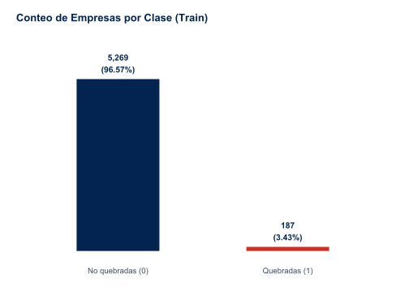
# 3. Ratio de desbalance, referenciado en la interpretación de la siguiente celda
ratio_desbalance <- conteo[["0"]] / conteo[["1"]]La variable objetivo presenta un fuerte desbalance de clases, ya que hay 5.279 empresas que no quiebran, equivalentes al 96,77 % del conjunto de entrenamiento, mientras que las que sí quiebran son 176 y representan el 3,23 %. Este desbalance deberá tenerse en cuenta durante el entrenamiento y la evaluación del modelo.
4.2 Variables numéricas
Estadísticas descriptivas
unidad_indicador <- function(variable) {
# Devuelve la unidad/concepto con el que debe presentarse cada indicador.
# No convierte el valor: solo define cómo debe interpretarse en el texto.
nombre <- str_to_lower(variable)
contiene <- function(terms) any(vapply(terms, function(t) grepl(t, nombre, fixed = TRUE), logical(1)))
if (contiene(c("day", "interval"))) return("días")
if (contiene(c("per share", "eps", "net value per share"))) return("Yuan ¥/acción")
if (contiene("per person")) return("Yuan ¥/persona")
# En estas variables el valor del dataset se interpreta directamente
# como una razón/ratio. No se expresa como "veces".
if (contiene(c("turnover", "frequency"))) return("ratio")
if (contiene(c(
"current ratio", "quick ratio", "coverage ratio", "financial leverage",
"borrowing dependency", "total debt/total net worth", "/equity", "to equity",
"/net worth", "to net worth", "inventory and accounts receivable/net value",
"cash/current liability", "quick assets/current liability",
"inventory/current liability", "funds to liability", "liability to current assets",
"equity to liability", "cash flow to liability", "total income/total expense"
))) return("ratio")
if (contiene(c(
"%", "roa", "rate", "growth", "margin", "to assets", "/assets", "assets/",
"to sales", "paid-in capital", "net income to stockholder", "cash flow to equity",
"interest expense ratio"
))) return("porcentaje")
"ratio"
}
formatear_valor <- function(variable, valor, decimales = 4) {
# Formatea un valor para las interpretaciones narrativas. Los indicadores
# definidos como porcentaje se convierten de su escala decimal a porcentaje;
# los ratios se mantienen en su escala original.
if (is.na(valor)) return("NA")
unidad <- unidad_indicador(variable)
if (unidad == "porcentaje") return(sprintf("%.2f%%", valor * 100))
paste(sprintf(paste0("%.", decimales, "f"), valor), unidad)
}
# 1. Definición de la función para calcular las estadísticas descriptivas
generar_estadisticas_univariadas <- function(df, variables) {
map_dfr(variables, function(var) {
serie <- df[[var]]
serie <- serie[!is.na(serie)]
q <- quantile(serie, c(0.25, 0.75), names = FALSE)
tibble(
Variable = var,
N = length(serie),
Media = mean(serie),
DS = sd(serie),
Curtosis = e1071::kurtosis(serie, type = 1), # Curtosis de Fisher (0 = normal)
Mediana = median(serie),
`Mínimo` = min(serie),
`Máximo` = max(serie),
Q1 = q[1],
Q3 = q[2],
IQR = q[2] - q[1]
)
})
}
# 2. Generar el resumen de las 93 variables numéricas sobre train_df
df_stats_num <- generar_estadisticas_univariadas(train_df, num_vars)
# 3. Mostrar la tabla dentro de un contenedor con scroll: con 93 filas, mostrarlas
# todas "una detrás de otra" en la página no es legible.
f2 <- "%.2f"
tabla_estilo_scroll(df_stats_num, formatos = list(
N = fmt_int, Media = f2, DS = f2, Curtosis = f2, Mediana = f2,
`Mínimo` = f2, `Máximo` = f2, Q1 = f2, Q3 = f2, IQR = f2
), alto_px = 420)| Variable | N | Media | DS | Curtosis | Mediana | Mínimo | Máximo | Q1 | Q3 | IQR |
|---|---|---|---|---|---|---|---|---|---|---|
| ROA(C) before interest and depreciation before interest | 5,456 | 0.51 | 0.06 | 6.47 | 0.50 | 0.00 | 0.97 | 0.48 | 0.54 | 0.06 |
| ROA(A) before interest and % after tax | 5,456 | 0.56 | 0.07 | 9.07 | 0.56 | 0.00 | 1.00 | 0.54 | 0.59 | 0.05 |
| ROA(B) before interest and depreciation after tax | 5,456 | 0.55 | 0.06 | 8.35 | 0.55 | 0.00 | 1.00 | 0.53 | 0.58 | 0.06 |
| Operating Gross Margin | 5,456 | 0.61 | 0.02 | 377.24 | 0.61 | 0.00 | 1.00 | 0.60 | 0.61 | 0.01 |
| Realized Sales Gross Margin | 5,456 | 0.61 | 0.02 | 378.37 | 0.61 | 0.00 | 1.00 | 0.60 | 0.61 | 0.01 |
| Operating Profit Rate | 5,456 | 1.00 | 0.01 | 5036.54 | 1.00 | 0.61 | 1.00 | 1.00 | 1.00 | 0.00 |
| Pre-tax net Interest Rate | 5,456 | 0.80 | 0.01 | 3768.69 | 0.80 | 0.16 | 1.00 | 0.80 | 0.80 | 0.00 |
| After-tax net Interest Rate | 5,456 | 0.81 | 0.01 | 4352.86 | 0.81 | 0.00 | 1.00 | 0.81 | 0.81 | 0.00 |
| Non-industry income and expenditure/revenue | 5,456 | 0.30 | 0.01 | 1879.42 | 0.30 | 0.00 | 0.73 | 0.30 | 0.30 | 0.00 |
| Continuous interest rate (after tax) | 5,456 | 0.78 | 0.01 | 4156.55 | 0.78 | 0.13 | 1.00 | 0.78 | 0.78 | 0.00 |
| Operating Expense Rate | 5,456 | 2013090624.63 | 3252013753.86 | -0.11 | 0.00 | 0.00 | 9990000000.00 | 0.00 | 4132500000.00 | 4132500000.00 |
| Research and development expense rate | 5,456 | 1977042778.59 | 2628143505.62 | 0.55 | 543000000.00 | 0.00 | 9980000000.00 | 0.00 | 3460000000.00 | 3460000000.00 |
| Cash flow rate | 5,456 | 0.47 | 0.02 | 262.21 | 0.47 | 0.00 | 1.00 | 0.46 | 0.47 | 0.01 |
| Interest-bearing debt interest rate | 5,456 | 17396444.28 | 111656371.42 | 47.31 | 0.00 | 0.00 | 990000000.00 | 0.00 | 0.00 | 0.00 |
| Tax rate (A) | 5,456 | 0.11 | 0.14 | 5.86 | 0.07 | 0.00 | 1.00 | 0.00 | 0.21 | 0.21 |
| Net Value Per Share (B) | 5,456 | 0.19 | 0.03 | 79.36 | 0.18 | 0.00 | 1.00 | 0.17 | 0.20 | 0.03 |
| Net Value Per Share (A) | 5,456 | 0.19 | 0.03 | 78.48 | 0.18 | 0.00 | 1.00 | 0.17 | 0.20 | 0.03 |
| Net Value Per Share (C) | 5,456 | 0.19 | 0.03 | 78.39 | 0.18 | 0.00 | 1.00 | 0.17 | 0.20 | 0.03 |
| Persistent EPS in the Last Four Seasons | 5,456 | 0.23 | 0.03 | 52.82 | 0.22 | 0.08 | 0.78 | 0.21 | 0.24 | 0.02 |
| Cash Flow Per Share | 5,456 | 0.32 | 0.02 | 433.10 | 0.32 | 0.13 | 1.00 | 0.32 | 0.33 | 0.01 |
| Revenue Per Share (Yuan ¥) | 5,456 | 1660557.22 | 57802336.07 | 1700.31 | 0.03 | 0.00 | 3020000000.00 | 0.02 | 0.05 | 0.03 |
| Operating Profit Per Share (Yuan ¥) | 5,456 | 0.11 | 0.03 | 92.65 | 0.10 | 0.00 | 0.74 | 0.10 | 0.12 | 0.02 |
| Per Share Net profit before tax (Yuan ¥) | 5,456 | 0.18 | 0.03 | 65.65 | 0.18 | 0.05 | 0.79 | 0.17 | 0.19 | 0.02 |
| Realized Sales Gross Profit Growth Rate | 5,456 | 0.02 | 0.01 | 5048.98 | 0.02 | 0.00 | 1.00 | 0.02 | 0.02 | 0.00 |
| Operating Profit Growth Rate | 5,456 | 0.85 | 0.01 | 4832.06 | 0.85 | 0.00 | 0.93 | 0.85 | 0.85 | 0.00 |
| After-tax Net Profit Growth Rate | 5,456 | 0.69 | 0.01 | 1437.31 | 0.69 | 0.00 | 1.00 | 0.69 | 0.69 | 0.00 |
| Regular Net Profit Growth Rate | 5,456 | 0.69 | 0.01 | 1420.72 | 0.69 | 0.00 | 1.00 | 0.69 | 0.69 | 0.00 |
| Continuous Net Profit Growth Rate | 5,456 | 0.22 | 0.01 | 4354.93 | 0.22 | 0.00 | 1.00 | 0.22 | 0.22 | 0.00 |
| Total Asset Growth Rate | 5,456 | 5528156378.30 | 2895923411.23 | -0.39 | 6420000000.00 | 0.00 | 9980000000.00 | 4880000000.00 | 7400000000.00 | 2520000000.00 |
| Net Value Growth Rate | 5,456 | 1957478.01 | 127624057.03 | 5231.87 | 0.00 | 0.00 | 9330000000.00 | 0.00 | 0.00 | 0.00 |
| Total Asset Return Growth Rate Ratio | 5,456 | 0.26 | 0.00 | 3338.91 | 0.26 | 0.00 | 0.36 | 0.26 | 0.26 | 0.00 |
| Cash Reinvestment % | 5,456 | 0.38 | 0.02 | 72.41 | 0.38 | 0.03 | 0.76 | 0.37 | 0.39 | 0.01 |
| Current Ratio | 5,456 | 504032.27 | 37230212.32 | 5451.00 | 0.01 | 0.00 | 2750000000.00 | 0.01 | 0.02 | 0.01 |
| Quick Ratio | 5,456 | 9508797.67 | 264185268.01 | 937.66 | 0.01 | 0.00 | 9230000000.00 | 0.00 | 0.01 | 0.01 |
| Interest Expense Ratio | 5,456 | 0.63 | 0.01 | 1973.02 | 0.63 | 0.00 | 0.90 | 0.63 | 0.63 | 0.00 |
| Total debt/Total net worth | 5,456 | 5519611.45 | 188258113.03 | 1876.56 | 0.01 | 0.00 | 9940000000.00 | 0.00 | 0.01 | 0.01 |
| Debt ratio % | 5,456 | 0.11 | 0.05 | 13.03 | 0.11 | 0.00 | 1.00 | 0.07 | 0.15 | 0.08 |
| Net worth/Assets | 5,456 | 0.89 | 0.05 | 13.03 | 0.89 | 0.00 | 1.00 | 0.85 | 0.93 | 0.08 |
| Long-term fund suitability ratio (A) | 5,456 | 0.01 | 0.03 | 847.23 | 0.01 | 0.00 | 1.00 | 0.01 | 0.01 | 0.00 |
| Borrowing dependency | 5,456 | 0.37 | 0.02 | 852.38 | 0.37 | 0.00 | 1.00 | 0.37 | 0.38 | 0.01 |
| Contingent liabilities/Net worth | 5,456 | 0.01 | 0.01 | 5209.51 | 0.01 | 0.00 | 1.00 | 0.01 | 0.01 | 0.00 |
| Operating profit/Paid-in capital | 5,456 | 0.11 | 0.03 | 94.44 | 0.10 | 0.00 | 0.74 | 0.10 | 0.12 | 0.02 |
| Net profit before tax/Paid-in capital | 5,456 | 0.18 | 0.03 | 69.88 | 0.18 | 0.05 | 0.79 | 0.17 | 0.19 | 0.02 |
| Inventory and accounts receivable/Net value | 5,456 | 0.40 | 0.01 | 388.39 | 0.40 | 0.00 | 0.71 | 0.40 | 0.40 | 0.01 |
| Total Asset Turnover | 5,456 | 0.14 | 0.10 | 9.62 | 0.12 | 0.00 | 1.00 | 0.08 | 0.18 | 0.10 |
| Accounts Receivable Turnover | 5,456 | 13401576.25 | 281589298.33 | 737.24 | 0.00 | 0.00 | 9740000000.00 | 0.00 | 0.00 | 0.00 |
| Average Collection Days | 5,456 | 9438049.86 | 249403308.84 | 952.64 | 0.01 | 0.00 | 8800000000.00 | 0.00 | 0.01 | 0.00 |
| Inventory Turnover Rate (times) | 5,456 | 2125743768.33 | 3235358637.78 | -0.29 | 0.00 | 0.00 | 9990000000.00 | 0.00 | 4590000000.00 | 4590000000.00 |
| Fixed Assets Turnover Frequency | 5,456 | 1020131744.87 | 2481016088.74 | 3.97 | 0.00 | 0.00 | 9990000000.00 | 0.00 | 0.00 | 0.00 |
| Net Worth Turnover Rate (times) | 5,456 | 0.04 | 0.04 | 153.73 | 0.03 | 0.00 | 1.00 | 0.02 | 0.04 | 0.02 |
| Revenue per person | 5,456 | 2906891.53 | 152746020.51 | 2854.15 | 0.02 | 0.00 | 8810000000.00 | 0.01 | 0.04 | 0.03 |
| Operating profit per person | 5,456 | 0.40 | 0.03 | 119.88 | 0.40 | 0.05 | 1.00 | 0.39 | 0.40 | 0.01 |
| Allocation rate per person | 5,456 | 11242668.64 | 301592952.23 | 775.24 | 0.01 | 0.00 | 9570000000.00 | 0.00 | 0.02 | 0.01 |
| Working Capital to Total Assets | 5,456 | 0.81 | 0.06 | 6.61 | 0.81 | 0.00 | 1.00 | 0.77 | 0.85 | 0.08 |
| Quick Assets/Total Assets | 5,456 | 0.40 | 0.20 | -0.56 | 0.39 | 0.00 | 1.00 | 0.24 | 0.54 | 0.30 |
| Current Assets/Total Assets | 5,456 | 0.52 | 0.22 | -0.80 | 0.51 | 0.00 | 1.00 | 0.35 | 0.69 | 0.34 |
| Cash/Total Assets | 5,456 | 0.12 | 0.14 | 5.99 | 0.07 | 0.00 | 1.00 | 0.03 | 0.16 | 0.13 |
| Quick Assets/Current Liability | 5,456 | 4490469.22 | 191856950.75 | 1843.42 | 0.01 | 0.00 | 8820000000.00 | 0.01 | 0.01 | 0.01 |
| Cash/Current Liability | 5,456 | 39106488.28 | 522711251.16 | 217.39 | 0.00 | 0.00 | 9650000000.00 | 0.00 | 0.01 | 0.01 |
| Current Liability to Assets | 5,456 | 0.09 | 0.05 | 18.89 | 0.08 | 0.00 | 1.00 | 0.05 | 0.12 | 0.07 |
| Operating Funds to Liability | 5,456 | 0.35 | 0.04 | 65.40 | 0.35 | 0.00 | 1.00 | 0.34 | 0.36 | 0.02 |
| Inventory/Working Capital | 5,456 | 0.28 | 0.01 | 1138.20 | 0.28 | 0.00 | 0.47 | 0.28 | 0.28 | 0.00 |
| Inventory/Current Liability | 5,456 | 57918859.98 | 585595453.90 | 147.19 | 0.01 | 0.00 | 9910000000.00 | 0.00 | 0.01 | 0.01 |
| Current Liabilities/Liability | 5,456 | 0.76 | 0.21 | -0.02 | 0.81 | 0.00 | 1.00 | 0.62 | 0.94 | 0.32 |
| Working Capital/Equity | 5,456 | 0.74 | 0.01 | 2431.78 | 0.74 | 0.00 | 0.96 | 0.73 | 0.74 | 0.00 |
| Current Liabilities/Equity | 5,456 | 0.33 | 0.01 | 1132.28 | 0.33 | 0.00 | 1.00 | 0.33 | 0.33 | 0.00 |
| Long-term Liability to Current Assets | 5,456 | 54330315.26 | 562094932.57 | 160.84 | 0.00 | 0.00 | 9450000000.00 | 0.00 | 0.01 | 0.01 |
| Retained Earnings to Total Assets | 5,456 | 0.93 | 0.03 | 328.71 | 0.94 | 0.00 | 1.00 | 0.93 | 0.94 | 0.01 |
| Total income/Total expense | 5,456 | 0.00 | 0.00 | 430.12 | 0.00 | 0.00 | 0.02 | 0.00 | 0.00 | 0.00 |
| Total expense/Assets | 5,456 | 0.03 | 0.03 | 278.32 | 0.02 | 0.00 | 1.00 | 0.01 | 0.04 | 0.02 |
| Current Asset Turnover Rate | 5,456 | 1195283187.32 | 2815659184.12 | 2.79 | 0.00 | 0.00 | 10000000000.00 | 0.00 | 0.00 | 0.00 |
| Quick Asset Turnover Rate | 5,456 | 2150333284.46 | 3357585702.21 | -0.37 | 0.00 | 0.00 | 9990000000.00 | 0.00 | 4862500000.00 | 4862500000.00 |
| Working capitcal Turnover Rate | 5,456 | 0.59 | 0.01 | 4649.86 | 0.59 | 0.00 | 0.71 | 0.59 | 0.59 | 0.00 |
| Cash Turnover Rate | 5,456 | 2465869105.76 | 2919752741.81 | -0.35 | 1130000000.00 | 0.00 | 10000000000.00 | 0.00 | 4475000000.00 | 4475000000.00 |
| Cash Flow to Sales | 5,456 | 0.67 | 0.01 | 4687.52 | 0.67 | 0.00 | 0.81 | 0.67 | 0.67 | 0.00 |
| Fixed Assets to Assets | 5,456 | 1524926.94 | 112638315.10 | 5451.00 | 0.20 | 0.00 | 8320000000.00 | 0.09 | 0.38 | 0.29 |
| Current Liability to Liability | 5,456 | 0.76 | 0.21 | -0.02 | 0.81 | 0.00 | 1.00 | 0.62 | 0.94 | 0.32 |
| Current Liability to Equity | 5,456 | 0.33 | 0.01 | 1132.28 | 0.33 | 0.00 | 1.00 | 0.33 | 0.33 | 0.00 |
| Equity to Long-term Liability | 5,456 | 0.12 | 0.02 | 1462.30 | 0.11 | 0.00 | 0.92 | 0.11 | 0.12 | 0.01 |
| Cash Flow to Total Assets | 5,456 | 0.65 | 0.05 | 18.48 | 0.65 | 0.00 | 1.00 | 0.63 | 0.66 | 0.03 |
| Cash Flow to Liability | 5,456 | 0.46 | 0.03 | 83.42 | 0.46 | 0.00 | 1.00 | 0.46 | 0.46 | 0.01 |
| CFO to Assets | 5,456 | 0.59 | 0.06 | 7.46 | 0.59 | 0.00 | 1.00 | 0.57 | 0.63 | 0.06 |
| Cash Flow to Equity | 5,456 | 0.32 | 0.01 | 314.49 | 0.31 | 0.00 | 0.57 | 0.31 | 0.32 | 0.00 |
| Current Liability to Current Assets | 5,456 | 0.03 | 0.03 | 346.05 | 0.03 | 0.00 | 1.00 | 0.02 | 0.04 | 0.02 |
| Net Income to Total Assets | 5,456 | 0.81 | 0.04 | 49.68 | 0.81 | 0.00 | 0.98 | 0.80 | 0.83 | 0.03 |
| Total assets to GNP price | 5,456 | 18266862.18 | 375077428.60 | 511.80 | 0.00 | 0.00 | 9820000000.00 | 0.00 | 0.01 | 0.00 |
| No-credit Interval | 5,456 | 0.62 | 0.01 | 813.31 | 0.62 | 0.41 | 1.00 | 0.62 | 0.62 | 0.00 |
| Gross Profit to Sales | 5,456 | 0.61 | 0.02 | 377.24 | 0.61 | 0.00 | 1.00 | 0.60 | 0.61 | 0.01 |
| Net Income to Stockholder’s Equity | 5,456 | 0.84 | 0.02 | 1735.71 | 0.84 | 0.00 | 1.00 | 0.84 | 0.84 | 0.00 |
| Liability to Equity | 5,456 | 0.28 | 0.01 | 1256.56 | 0.28 | 0.00 | 1.00 | 0.28 | 0.28 | 0.00 |
| Degree of Financial Leverage (DFL) | 5,456 | 0.03 | 0.02 | 2049.79 | 0.03 | 0.00 | 1.00 | 0.03 | 0.03 | 0.00 |
| Interest Coverage Ratio (Interest expense to EBIT) | 5,456 | 0.57 | 0.01 | 749.49 | 0.57 | 0.00 | 1.00 | 0.57 | 0.57 | 0.00 |
| Equity to Liability | 5,456 | 0.05 | 0.05 | 98.63 | 0.03 | 0.00 | 1.00 | 0.02 | 0.05 | 0.03 |
El análisis estadístico de las variables numéricas revela características clave sobre la estructura financiera y operativa de las empresas analizadas en el conjunto de entrenamiento (train_df, \(N = 5{,}455\) empresas).
En primer lugar, la tasa de rentabilidad sobre activos ROA(C) before interest and depreciation before interest presenta un valor promedio de \(0.5044\) (50.44%) (\(\text{DS} = 0.0604\), 6.04 puntos porcentuales), con un rango entre \(0.0243\) (2.43%) y \(1.0000\) (100%). El \(50\%\) de las empresas registra un ROA intermedio cercano a la mediana de \(0.5021\) (50.21%) (rango intercuartílico \(\text{IQR} = 0.0585\), 5.85 puntos porcentuales, de \(Q_1 = 0.4761\) (47.61%) a \(Q_3 = 0.5346\) (53.46%)). No obstante, una curtosis elevada (\(\text{Curtosis} = 6.28\)) evidencia la presencia de colas pesadas y valores atípicos en empresas con rentabilidades extremadamente reducidas o inusualmente altas.
Por otro lado, la variable de apalancamiento Debt ratio % exhibe una media de \(0.1132\) (11.32%) (\(\text{DS} = 0.0542\), 5.42 puntos porcentuales), situando al \(50\%\) de las firmas por debajo de \(0.1114\) (11.14%) (\(\text{IQR} = 0.0761\), 7.61 puntos porcentuales, entre \(Q_1 = 0.0729\) (7.29%) y \(Q_3 = 0.1489\) (14.89%)). Esta variable muestra una variabilidad pronunciada con un valor máximo de \(1.0000\) (100%), lo que refleja la coexistencia de entidades con muy bajo nivel de endeudamiento junto a empresas altamente apalancadas con mayor riesgo financiero implícito.
En cuanto a la liquidez, el indicador Current Ratio presenta una media de \(0.0151\) (ratio) (\(\text{DS} = 0.0232\)) y una mediana de \(0.0106\) (ratio) (\(\text{IQR} = 0.0089\), de \(Q_1 = 0.0075\) a \(Q_3 = 0.0164\)). Su valor máximo alcanza \(1.0000\) (ratio), generando una curtosis excepcionalmente alta (\(\text{Curtosis} \approx 814\)), lo cual indica que la gran mayoría de las observaciones se concentra en niveles muy bajos de liquidez relativa, con contadas excepciones extremas en la cola superior.
Finalmente, indicadores de rotación y flujo operativo como CFO to Assets (flujo de caja operativo sobre activos totales) registran una media de \(0.5932\) (59.32%) (\(\text{DS} = 0.0577\), 5.77 puntos porcentuales), con el \(50\%\) de los registros situado por debajo de \(0.5933\) (59.33%) (rango de \(Q_1 = 0.5659\) (56.59%) a \(Q_3 = 0.6241\) (62.41%)) y extremos que van de \(0.0000\) (0%) a \(1.0000\) (100%).
En conjunto, las 93 variables numéricas muestran distribuciones marcadamente asimétricas, con leptocurtosis acentuada en múltiples indicadores. Esto pone de manifiesto una marcada heterogeneidad operativa y la existencia de subgrupos o patrones financieros claramente diferenciados entre las firmas de la muestra. Las escalas son muy distintas entre variables: porcentajes, ratios y proporciones, días y unidades monetarias, como Yuan por acción o por persona. Para cualquier modelo sensible a la escala (como regresión logística, SVM o PCA), será necesario estandarizar las variables en el pipeline de preprocesamiento.
Gráficas
# Cada variable se resume en UNA figura con dos paneles (histograma+densidad
# y boxplot, uno junto al otro). Los 93 bloques (figura + interpretación) se
# acumulan y se muestran juntos dentro de un único contenedor con scroll interno.
dir_imgs_univ <- file.path("docs", "figures", "univariado")
dir.create(dir_imgs_univ, showWarnings = FALSE, recursive = TRUE)
generar_bloque_univariado <- function(var) {
serie <- train_df[[var]]; serie <- serie[!is.na(serie)]
media_v <- mean(serie)
mediana_v <- median(serie)
kurt_v <- e1071::kurtosis(serie, type = 2)
skew_v <- e1071::skewness(serie, type = 2)
refs <- tibble(tipo = c(sprintf("Media (%.2f)", media_v), sprintf("Mediana (%.2f)", mediana_v)),
x = c(media_v, mediana_v))
bw <- diff(range(serie)) / 30
p_dens <- ggplot(tibble(x = serie), aes(x)) +
geom_histogram(bins = 30, fill = PALETTE$downriver, color = "#FFFFFF", alpha = 0.85) +
geom_density(aes(y = after_stat(density) * length(serie) * bw),
color = PALETTE$flame, linewidth = 1.1) +
geom_vline(data = refs, aes(xintercept = x, color = tipo, linetype = tipo), linewidth = 0.8) +
scale_color_manual(values = setNames(c(PALETTE$poinciana, PALETTE$tangerine), refs$tipo)) +
scale_linetype_manual(values = setNames(c("dashed", "dotted"), refs$tipo)) +
labs(title = "Distribución (histograma + densidad)", x = str_wrap(var, 38), y = "Frecuencia") +
tema_eda +
theme(plot.title = element_text(size = 10.5), axis.title = element_text(size = 9),
legend.position = c(0.98, 0.98), legend.justification = c(1, 1),
legend.title = element_blank(), legend.text = element_text(size = 8))
p_box <- ggplot(tibble(y = serie), aes(x = "", y = y)) +
geom_boxplot(fill = PALETTE$downriver, color = PALETTE$downriver, width = 0.35,
outlier.color = PALETTE$poinciana, outlier.alpha = 0.8, outlier.size = 1.8) +
coord_cartesian(ylim = range(serie, na.rm = TRUE), expand = TRUE) +
labs(title = "Boxplot", x = NULL, y = str_wrap(var, 38)) +
tema_eda +
theme(plot.title = element_text(size = 10.5), axis.title = element_text(size = 9))
archivo <- file.path(dir_imgs_univ, sprintf("variable-%03d.svg", match(var, num_vars)))
ggsave(archivo, p_dens + p_box + plot_layout(widths = c(1, 1)),
width = 11, height = 4.5, device = grDevices::svg, bg = "white")
imagen_b64 <- file.path("figures", "univariado", basename(archivo))
asimetria_desc <- if (abs(skew_v) < 0.5) {
"una distribución relativamente simétrica"
} else if (skew_v >= 0.5) {
"un marcado sesgo a la derecha (asimetría positiva)"
} else {
"un marcado sesgo a la izquierda (asimetría negativa)"
}
# IMPORTANTE: el HTML va en una sola línea por bloque y sin sangría (Pandoc
# trataría las líneas con 4+ espacios como bloque de código literal).
paste0(
'<details class="report-details"><summary>', var, '</summary><div class="report-body">',
tabla_html(df_stats_num[df_stats_num$Variable == var, ]),
'<div style="color:', PALETTE$downriver, ';margin:0 0 10px 0;font-size:14px;font-weight:700;">', var, '</div>',
'<div style="text-align:center;margin-bottom:12px;"><img loading="lazy" decoding="async" src="', imagen_b64,
'" style="max-width:100%;height:auto;border-radius:4px;"></div>',
'<p style="margin:0;color:', PALETTE$stone_blue, ';font-size:13px;line-height:1.6;border-left:4px solid ',
PALETTE$poinciana, ';background-color:', PALETTE$bg_card, ';padding:10px 14px;border-radius:4px;">',
'El histograma de <span style="color:', PALETTE$downriver, ';">', var, '</span> muestra ', asimetria_desc,
', con una media de <span style="color:', PALETTE$poinciana, ';">', formatear_valor(var, media_v),
'</span> y una mediana de <span style="color:', PALETTE$tangerine, ';">', formatear_valor(var, mediana_v),
'</span>. La curtosis observada de <span style="color:', PALETTE$downriver, ';">', sprintf("%.2f", kurt_v),
'</span> indica una concentración notable de observaciones alrededor de la zona central, acompañada por la presencia de valores atípicos en las colas. Esta morfología sugiere una alta homogeneidad en el grueso de las empresas analizadas, pero con comportamientos extremos puntuales a monitorear en la etapa de preprocesamiento.',
'</p></div></details>'
)
}
# Se libera memoria cada 15 variables para evitar que el render se quede sin RAM.
bloques_univariado <- character(length(num_vars))
for (i in seq_along(num_vars)) {
bloques_univariado[i] <- generar_bloque_univariado(num_vars[i])
if (i %% 15 == 0) invisible(gc(full = TRUE))
}
# Contenedor único con scroll interno para las 93 variables
cat(paste0(
"<div style='max-height:640px;overflow-y:auto;border:1px solid #E1E4E9;border-radius:8px;",
"padding:14px;background-color:#FAFBFC;'>",
paste(bloques_univariado, collapse = ""), "</div>\n\n"
))ROA(C) before interest and depreciation before interest
| Variable | N | Media | DS | Curtosis | Mediana | Mínimo | Máximo | Q1 | Q3 | IQR |
|---|---|---|---|---|---|---|---|---|---|---|
| ROA(C) before interest and depreciation before interest | 5456 | 0.5052624 | 0.0607354 | 6.470383 | 0.5032175 | 0 | 0.9715302 | 0.4767099 | 0.5358675 | 0.0591576 |
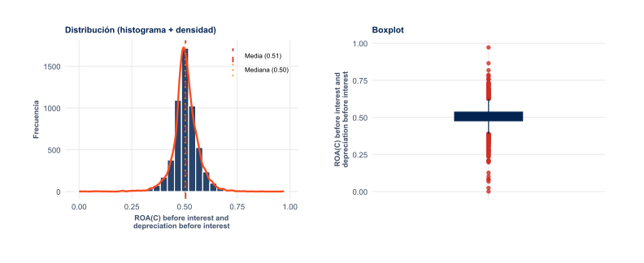
El histograma de ROA(C) before interest and depreciation before interest muestra una distribución relativamente simétrica, con una media de 50.53% y una mediana de 50.32%. La curtosis observada de 6.48 indica una concentración notable de observaciones alrededor de la zona central, acompañada por la presencia de valores atípicos en las colas. Esta morfología sugiere una alta homogeneidad en el grueso de las empresas analizadas, pero con comportamientos extremos puntuales a monitorear en la etapa de preprocesamiento.
ROA(A) before interest and % after tax
| Variable | N | Media | DS | Curtosis | Mediana | Mínimo | Máximo | Q1 | Q3 | IQR |
|---|---|---|---|---|---|---|---|---|---|---|
| ROA(A) before interest and % after tax | 5456 | 0.5585648 | 0.0653297 | 9.074412 | 0.5601559 | 0 | 1 | 0.5359791 | 0.5888029 | 0.0528238 |
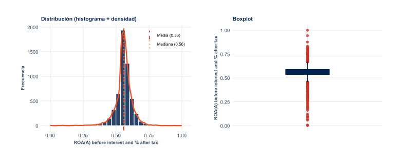
El histograma de ROA(A) before interest and % after tax muestra un marcado sesgo a la izquierda (asimetría negativa), con una media de 55.86% y una mediana de 56.02%. La curtosis observada de 9.08 indica una concentración notable de observaciones alrededor de la zona central, acompañada por la presencia de valores atípicos en las colas. Esta morfología sugiere una alta homogeneidad en el grueso de las empresas analizadas, pero con comportamientos extremos puntuales a monitorear en la etapa de preprocesamiento.
ROA(B) before interest and depreciation after tax
| Variable | N | Media | DS | Curtosis | Mediana | Mínimo | Máximo | Q1 | Q3 | IQR |
|---|---|---|---|---|---|---|---|---|---|---|
| ROA(B) before interest and depreciation after tax | 5456 | 0.5537267 | 0.0616511 | 8.351899 | 0.5525992 | 0 | 1 | 0.5275443 | 0.5846807 | 0.0571364 |
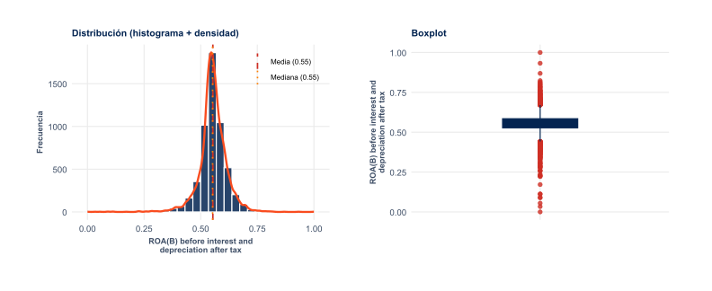
El histograma de ROA(B) before interest and depreciation after tax muestra un marcado sesgo a la izquierda (asimetría negativa), con una media de 55.37% y una mediana de 55.26%. La curtosis observada de 8.36 indica una concentración notable de observaciones alrededor de la zona central, acompañada por la presencia de valores atípicos en las colas. Esta morfología sugiere una alta homogeneidad en el grueso de las empresas analizadas, pero con comportamientos extremos puntuales a monitorear en la etapa de preprocesamiento.
Operating Gross Margin
| Variable | N | Media | DS | Curtosis | Mediana | Mínimo | Máximo | Q1 | Q3 | IQR |
|---|---|---|---|---|---|---|---|---|---|---|
| Operating Gross Margin | 5456 | 0.6080316 | 0.0177541 | 377.242 | 0.6060551 | 0 | 1 | 0.6004032 | 0.6140132 | 0.01361 |
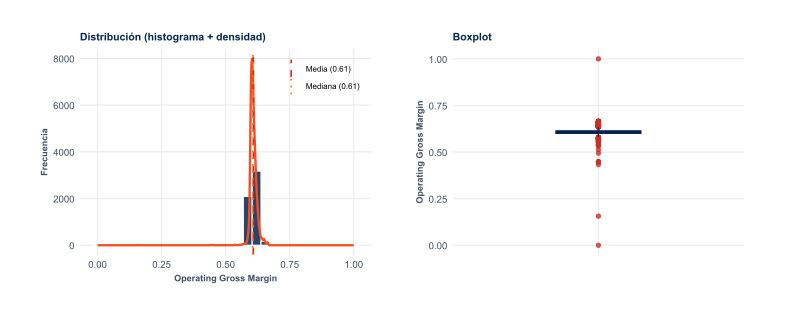
El histograma de Operating Gross Margin muestra un marcado sesgo a la izquierda (asimetría negativa), con una media de 60.80% y una mediana de 60.61%. La curtosis observada de 377.59 indica una concentración notable de observaciones alrededor de la zona central, acompañada por la presencia de valores atípicos en las colas. Esta morfología sugiere una alta homogeneidad en el grueso de las empresas analizadas, pero con comportamientos extremos puntuales a monitorear en la etapa de preprocesamiento.
Realized Sales Gross Margin
| Variable | N | Media | DS | Curtosis | Mediana | Mínimo | Máximo | Q1 | Q3 | IQR |
|---|---|---|---|---|---|---|---|---|---|---|
| Realized Sales Gross Margin | 5456 | 0.6080118 | 0.0177403 | 378.3741 | 0.6060479 | 0 | 1 | 0.6003834 | 0.6140132 | 0.0136298 |
El histograma de Realized Sales Gross Margin muestra un marcado sesgo a la izquierda (asimetría negativa), con una media de 60.80% y una mediana de 60.60%. La curtosis observada de 378.72 indica una concentración notable de observaciones alrededor de la zona central, acompañada por la presencia de valores atípicos en las colas. Esta morfología sugiere una alta homogeneidad en el grueso de las empresas analizadas, pero con comportamientos extremos puntuales a monitorear en la etapa de preprocesamiento.
Operating Profit Rate
| Variable | N | Media | DS | Curtosis | Mediana | Mínimo | Máximo | Q1 | Q3 | IQR |
|---|---|---|---|---|---|---|---|---|---|---|
| Operating Profit Rate | 5456 | 0.9988833 | 0.0053417 | 5036.538 | 0.9990229 | 0.6121315 | 0.9997776 | 0.9989694 | 0.9990957 | 0.0001262 |
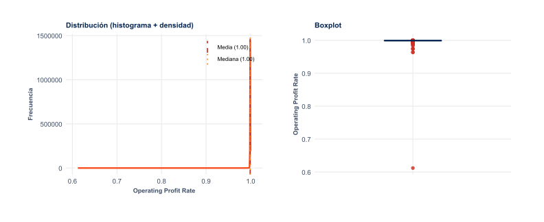
El histograma de Operating Profit Rate muestra un marcado sesgo a la izquierda (asimetría negativa), con una media de 99.89% y una mediana de 99.90%. La curtosis observada de 5041.16 indica una concentración notable de observaciones alrededor de la zona central, acompañada por la presencia de valores atípicos en las colas. Esta morfología sugiere una alta homogeneidad en el grueso de las empresas analizadas, pero con comportamientos extremos puntuales a monitorear en la etapa de preprocesamiento.
Pre-tax net Interest Rate
| Variable | N | Media | DS | Curtosis | Mediana | Mínimo | Máximo | Q1 | Q3 | IQR |
|---|---|---|---|---|---|---|---|---|---|---|
| Pre-tax net Interest Rate | 5456 | 0.7972794 | 0.0094948 | 3768.688 | 0.7974644 | 0.1605157 | 1 | 0.7973863 | 0.7975801 | 0.0001938 |
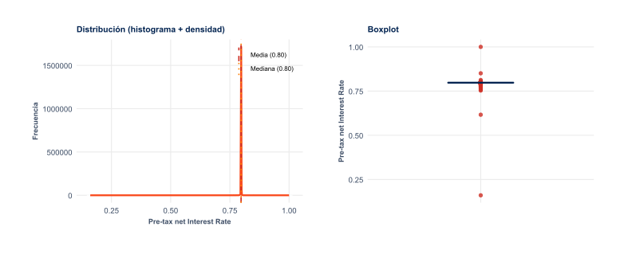
El histograma de Pre-tax net Interest Rate muestra un marcado sesgo a la izquierda (asimetría negativa), con una media de 79.73% y una mediana de 79.75%. La curtosis observada de 3772.15 indica una concentración notable de observaciones alrededor de la zona central, acompañada por la presencia de valores atípicos en las colas. Esta morfología sugiere una alta homogeneidad en el grueso de las empresas analizadas, pero con comportamientos extremos puntuales a monitorear en la etapa de preprocesamiento.
After-tax net Interest Rate
| Variable | N | Media | DS | Curtosis | Mediana | Mínimo | Máximo | Q1 | Q3 | IQR |
|---|---|---|---|---|---|---|---|---|---|---|
| After-tax net Interest Rate | 5456 | 0.8091537 | 0.0116051 | 4352.859 | 0.8093753 | 0 | 1 | 0.8093124 | 0.8094699 | 0.0001575 |
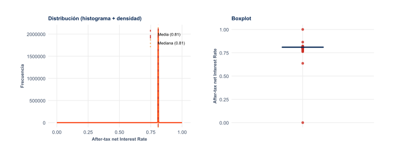
El histograma de After-tax net Interest Rate muestra un marcado sesgo a la izquierda (asimetría negativa), con una media de 80.92% y una mediana de 80.94%. La curtosis observada de 4356.85 indica una concentración notable de observaciones alrededor de la zona central, acompañada por la presencia de valores atípicos en las colas. Esta morfología sugiere una alta homogeneidad en el grueso de las empresas analizadas, pero con comportamientos extremos puntuales a monitorear en la etapa de preprocesamiento.
Non-industry income and expenditure/revenue
| Variable | N | Media | DS | Curtosis | Mediana | Mínimo | Máximo | Q1 | Q3 | IQR |
|---|---|---|---|---|---|---|---|---|---|---|
| Non-industry income and expenditure/revenue | 5456 | 0.3035114 | 0.0081575 | 1879.419 | 0.3035259 | 0 | 0.7302524 | 0.3034677 | 0.3035855 | 0.0001178 |
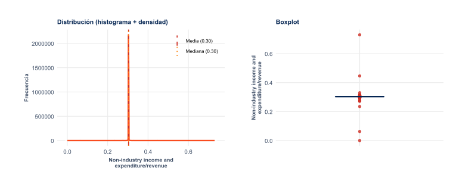
El histograma de Non-industry income and expenditure/revenue muestra un marcado sesgo a la derecha (asimetría positiva), con una media de 0.3035 ratio y una mediana de 0.3035 ratio. La curtosis observada de 1881.14 indica una concentración notable de observaciones alrededor de la zona central, acompañada por la presencia de valores atípicos en las colas. Esta morfología sugiere una alta homogeneidad en el grueso de las empresas analizadas, pero con comportamientos extremos puntuales a monitorear en la etapa de preprocesamiento.
Continuous interest rate (after tax)
| Variable | N | Media | DS | Curtosis | Mediana | Mínimo | Máximo | Q1 | Q3 | IQR |
|---|---|---|---|---|---|---|---|---|---|---|
| Continuous interest rate (after tax) | 5456 | 0.7814746 | 0.00942 | 4156.551 | 0.7816351 | 0.1334785 | 1 | 0.7815672 | 0.7817363 | 0.0001692 |
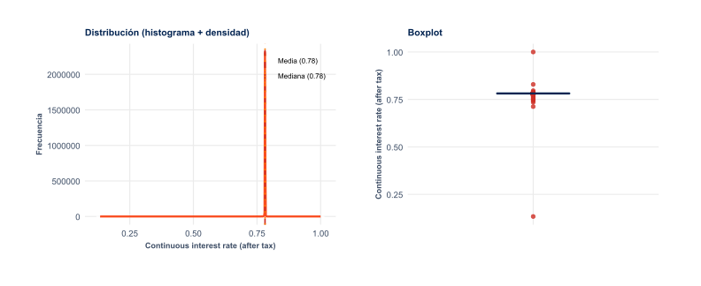
El histograma de Continuous interest rate (after tax) muestra un marcado sesgo a la izquierda (asimetría negativa), con una media de 78.15% y una mediana de 78.16%. La curtosis observada de 4160.36 indica una concentración notable de observaciones alrededor de la zona central, acompañada por la presencia de valores atípicos en las colas. Esta morfología sugiere una alta homogeneidad en el grueso de las empresas analizadas, pero con comportamientos extremos puntuales a monitorear en la etapa de preprocesamiento.
Operating Expense Rate
| Variable | N | Media | DS | Curtosis | Mediana | Mínimo | Máximo | Q1 | Q3 | IQR |
|---|---|---|---|---|---|---|---|---|---|---|
| Operating Expense Rate | 5456 | 2013090625 | 3252013754 | -0.1128037 | 0.0002798 | 1e-04 | 9.99e+09 | 0.0001573 | 4132500000 | 4132500000 |
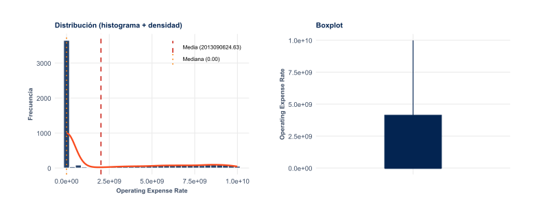
El histograma de Operating Expense Rate muestra un marcado sesgo a la derecha (asimetría positiva), con una media de 201309062463.37% y una mediana de 0.03%. La curtosis observada de -0.11 indica una concentración notable de observaciones alrededor de la zona central, acompañada por la presencia de valores atípicos en las colas. Esta morfología sugiere una alta homogeneidad en el grueso de las empresas analizadas, pero con comportamientos extremos puntuales a monitorear en la etapa de preprocesamiento.
Research and development expense rate
| Variable | N | Media | DS | Curtosis | Mediana | Mínimo | Máximo | Q1 | Q3 | IQR |
|---|---|---|---|---|---|---|---|---|---|---|
| Research and development expense rate | 5456 | 1977042779 | 2628143506 | 0.5508173 | 5.43e+08 | 0 | 9.98e+09 | 0.0001281 | 3.46e+09 | 3.46e+09 |
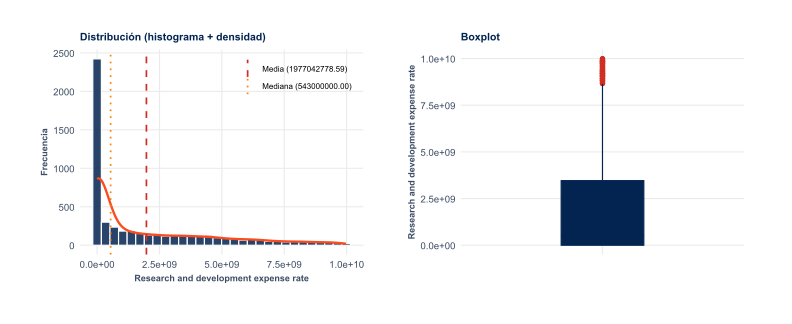
El histograma de Research and development expense rate muestra un marcado sesgo a la derecha (asimetría positiva), con una media de 197704277859.25% y una mediana de 54300000000.00%. La curtosis observada de 0.55 indica una concentración notable de observaciones alrededor de la zona central, acompañada por la presencia de valores atípicos en las colas. Esta morfología sugiere una alta homogeneidad en el grueso de las empresas analizadas, pero con comportamientos extremos puntuales a monitorear en la etapa de preprocesamiento.
Cash flow rate
| Variable | N | Media | DS | Curtosis | Mediana | Mínimo | Máximo | Q1 | Q3 | IQR |
|---|---|---|---|---|---|---|---|---|---|---|
| Cash flow rate | 5456 | 0.4674828 | 0.0178912 | 262.2076 | 0.4650537 | 0 | 1 | 0.4615179 | 0.4710081 | 0.0094902 |
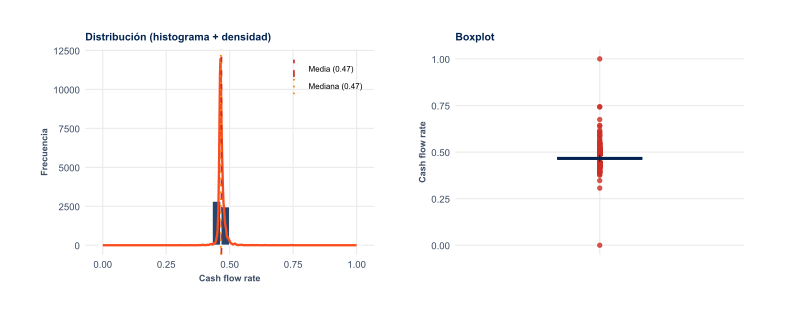
El histograma de Cash flow rate muestra un marcado sesgo a la derecha (asimetría positiva), con una media de 46.75% y una mediana de 46.51%. La curtosis observada de 262.45 indica una concentración notable de observaciones alrededor de la zona central, acompañada por la presencia de valores atípicos en las colas. Esta morfología sugiere una alta homogeneidad en el grueso de las empresas analizadas, pero con comportamientos extremos puntuales a monitorear en la etapa de preprocesamiento.
Interest-bearing debt interest rate
| Variable | N | Media | DS | Curtosis | Mediana | Mínimo | Máximo | Q1 | Q3 | IQR |
|---|---|---|---|---|---|---|---|---|---|---|
| Interest-bearing debt interest rate | 5456 | 17396444 | 111656371 | 47.30846 | 0.000322 | 0 | 9.9e+08 | 0.000204 | 0.0005373 | 0.0003333 |
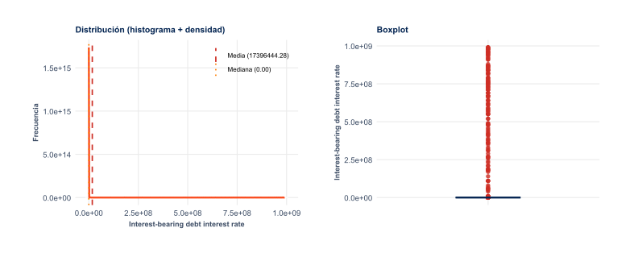
El histograma de Interest-bearing debt interest rate muestra un marcado sesgo a la derecha (asimetría positiva), con una media de 1739644428.25% y una mediana de 0.03%. La curtosis observada de 47.35 indica una concentración notable de observaciones alrededor de la zona central, acompañada por la presencia de valores atípicos en las colas. Esta morfología sugiere una alta homogeneidad en el grueso de las empresas analizadas, pero con comportamientos extremos puntuales a monitorear en la etapa de preprocesamiento.
Tax rate (A)
| Variable | N | Media | DS | Curtosis | Mediana | Mínimo | Máximo | Q1 | Q3 | IQR |
|---|---|---|---|---|---|---|---|---|---|---|
| Tax rate (A) | 5456 | 0.1149656 | 0.1371795 | 5.860597 | 0.0741978 | 0 | 1 | 0 | 0.2070048 | 0.2070048 |
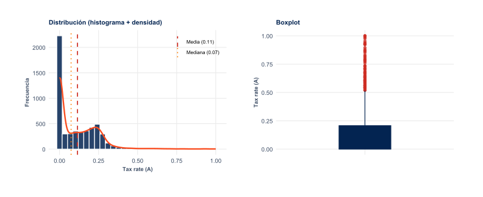
El histograma de Tax rate (A) muestra un marcado sesgo a la derecha (asimetría positiva), con una media de 11.50% y una mediana de 7.42%. La curtosis observada de 5.87 indica una concentración notable de observaciones alrededor de la zona central, acompañada por la presencia de valores atípicos en las colas. Esta morfología sugiere una alta homogeneidad en el grueso de las empresas analizadas, pero con comportamientos extremos puntuales a monitorear en la etapa de preprocesamiento.
Net Value Per Share (B)
| Variable | N | Media | DS | Curtosis | Mediana | Mínimo | Máximo | Q1 | Q3 | IQR |
|---|---|---|---|---|---|---|---|---|---|---|
| Net Value Per Share (B) | 5456 | 0.19025 | 0.032969 | 79.35968 | 0.1842316 | 0 | 1 | 0.1735704 | 0.1992752 | 0.0257048 |
El histograma de Net Value Per Share (B) muestra un marcado sesgo a la derecha (asimetría positiva), con una media de 0.1902 Yuan ¥/acción y una mediana de 0.1842 Yuan ¥/acción. La curtosis observada de 79.43 indica una concentración notable de observaciones alrededor de la zona central, acompañada por la presencia de valores atípicos en las colas. Esta morfología sugiere una alta homogeneidad en el grueso de las empresas analizadas, pero con comportamientos extremos puntuales a monitorear en la etapa de preprocesamiento.
Net Value Per Share (A)
| Variable | N | Media | DS | Curtosis | Mediana | Mínimo | Máximo | Q1 | Q3 | IQR |
|---|---|---|---|---|---|---|---|---|---|---|
| Net Value Per Share (A) | 5456 | 0.1902149 | 0.0330648 | 78.48494 | 0.1842316 | 0 | 1 | 0.173602 | 0.1992752 | 0.0256732 |
El histograma de Net Value Per Share (A) muestra un marcado sesgo a la derecha (asimetría positiva), con una media de 0.1902 Yuan ¥/acción y una mediana de 0.1842 Yuan ¥/acción. La curtosis observada de 78.56 indica una concentración notable de observaciones alrededor de la zona central, acompañada por la presencia de valores atípicos en las colas. Esta morfología sugiere una alta homogeneidad en el grueso de las empresas analizadas, pero con comportamientos extremos puntuales a monitorear en la etapa de preprocesamiento.
Net Value Per Share (C)
| Variable | N | Media | DS | Curtosis | Mediana | Mínimo | Máximo | Q1 | Q3 | IQR |
|---|---|---|---|---|---|---|---|---|---|---|
| Net Value Per Share (C) | 5456 | 0.1902525 | 0.0330721 | 78.39354 | 0.1842737 | 0 | 1 | 0.1736126 | 0.1992752 | 0.0256626 |
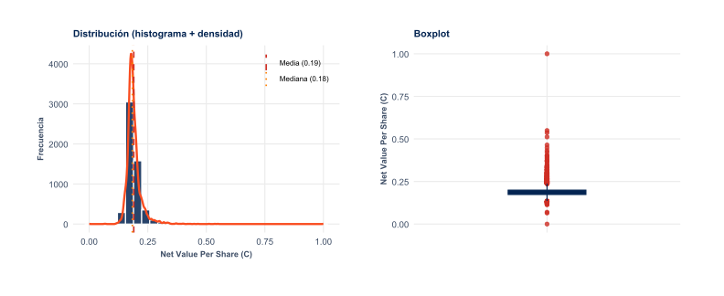
El histograma de Net Value Per Share (C) muestra un marcado sesgo a la derecha (asimetría positiva), con una media de 0.1903 Yuan ¥/acción y una mediana de 0.1843 Yuan ¥/acción. La curtosis observada de 78.47 indica una concentración notable de observaciones alrededor de la zona central, acompañada por la presencia de valores atípicos en las colas. Esta morfología sugiere una alta homogeneidad en el grueso de las empresas analizadas, pero con comportamientos extremos puntuales a monitorear en la etapa de preprocesamiento.
Persistent EPS in the Last Four Seasons
| Variable | N | Media | DS | Curtosis | Mediana | Mínimo | Máximo | Q1 | Q3 | IQR |
|---|---|---|---|---|---|---|---|---|---|---|
| Persistent EPS in the Last Four Seasons | 5456 | 0.2286758 | 0.03227 | 52.81722 | 0.2246384 | 0.0785667 | 0.7795216 | 0.2147112 | 0.2387255 | 0.0240144 |
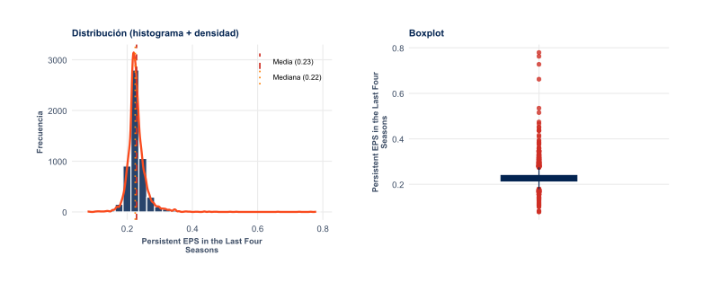
El histograma de Persistent EPS in the Last Four Seasons muestra un marcado sesgo a la derecha (asimetría positiva), con una media de 0.2287 Yuan ¥/acción y una mediana de 0.2246 Yuan ¥/acción. La curtosis observada de 52.87 indica una concentración notable de observaciones alrededor de la zona central, acompañada por la presencia de valores atípicos en las colas. Esta morfología sugiere una alta homogeneidad en el grueso de las empresas analizadas, pero con comportamientos extremos puntuales a monitorear en la etapa de preprocesamiento.
Cash Flow Per Share
| Variable | N | Media | DS | Curtosis | Mediana | Mínimo | Máximo | Q1 | Q3 | IQR |
|---|---|---|---|---|---|---|---|---|---|---|
| Cash Flow Per Share | 5456 | 0.3234682 | 0.0173781 | 433.1028 | 0.3225048 | 0.1287402 | 1 | 0.3177124 | 0.3286058 | 0.0108934 |
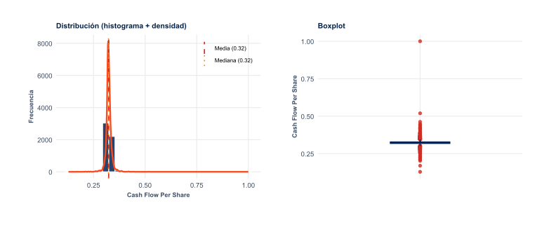
El histograma de Cash Flow Per Share muestra un marcado sesgo a la derecha (asimetría positiva), con una media de 0.3235 Yuan ¥/acción y una mediana de 0.3225 Yuan ¥/acción. La curtosis observada de 433.50 indica una concentración notable de observaciones alrededor de la zona central, acompañada por la presencia de valores atípicos en las colas. Esta morfología sugiere una alta homogeneidad en el grueso de las empresas analizadas, pero con comportamientos extremos puntuales a monitorear en la etapa de preprocesamiento.
Revenue Per Share (Yuan ¥)
| Variable | N | Media | DS | Curtosis | Mediana | Mínimo | Máximo | Q1 | Q3 | IQR |
|---|---|---|---|---|---|---|---|---|---|---|
| Revenue Per Share (Yuan ¥) | 5456 | 1660557 | 57802336 | 1700.314 | 0.0272925 | 0 | 3.02e+09 | 0.0156692 | 0.0462211 | 0.0305519 |
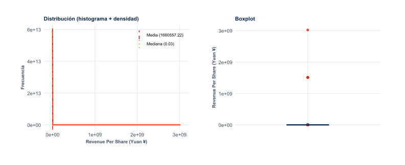
El histograma de Revenue Per Share (Yuan ¥) muestra un marcado sesgo a la derecha (asimetría positiva), con una media de 1660557.2236 Yuan ¥/acción y una mediana de 0.0273 Yuan ¥/acción. La curtosis observada de 1701.87 indica una concentración notable de observaciones alrededor de la zona central, acompañada por la presencia de valores atípicos en las colas. Esta morfología sugiere una alta homogeneidad en el grueso de las empresas analizadas, pero con comportamientos extremos puntuales a monitorear en la etapa de preprocesamiento.
Operating Profit Per Share (Yuan ¥)
| Variable | N | Media | DS | Curtosis | Mediana | Mínimo | Máximo | Q1 | Q3 | IQR |
|---|---|---|---|---|---|---|---|---|---|---|
| Operating Profit Per Share (Yuan ¥) | 5456 | 0.108917 | 0.0260242 | 92.64636 | 0.1043075 | 0 | 0.735445 | 0.0960834 | 0.1159515 | 0.0198681 |
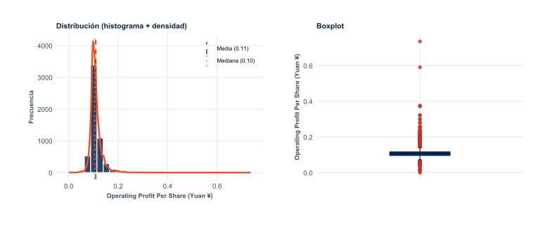
El histograma de Operating Profit Per Share (Yuan ¥) muestra un marcado sesgo a la derecha (asimetría positiva), con una media de 0.1089 Yuan ¥/acción y una mediana de 0.1043 Yuan ¥/acción. La curtosis observada de 92.73 indica una concentración notable de observaciones alrededor de la zona central, acompañada por la presencia de valores atípicos en las colas. Esta morfología sugiere una alta homogeneidad en el grueso de las empresas analizadas, pero con comportamientos extremos puntuales a monitorear en la etapa de preprocesamiento.
Per Share Net profit before tax (Yuan ¥)
| Variable | N | Media | DS | Curtosis | Mediana | Mínimo | Máximo | Q1 | Q3 | IQR |
|---|---|---|---|---|---|---|---|---|---|---|
| Per Share Net profit before tax (Yuan ¥) | 5456 | 0.1841857 | 0.031856 | 65.64707 | 0.1797846 | 0.0502373 | 0.7923477 | 0.1704451 | 0.1933419 | 0.0228967 |
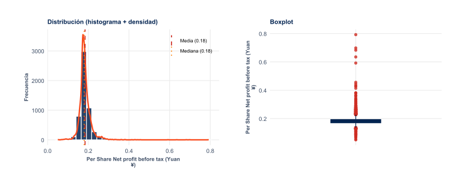
El histograma de Per Share Net profit before tax (Yuan ¥) muestra un marcado sesgo a la derecha (asimetría positiva), con una media de 0.1842 Yuan ¥/acción y una mediana de 0.1798 Yuan ¥/acción. La curtosis observada de 65.71 indica una concentración notable de observaciones alrededor de la zona central, acompañada por la presencia de valores atípicos en las colas. Esta morfología sugiere una alta homogeneidad en el grueso de las empresas analizadas, pero con comportamientos extremos puntuales a monitorear en la etapa de preprocesamiento.
Realized Sales Gross Profit Growth Rate
| Variable | N | Media | DS | Curtosis | Mediana | Mínimo | Máximo | Q1 | Q3 | IQR |
|---|---|---|---|---|---|---|---|---|---|---|
| Realized Sales Gross Profit Growth Rate | 5456 | 0.022463 | 0.0134928 | 5048.976 | 0.0221029 | 0 | 1 | 0.0220653 | 0.022153 | 8.77e-05 |
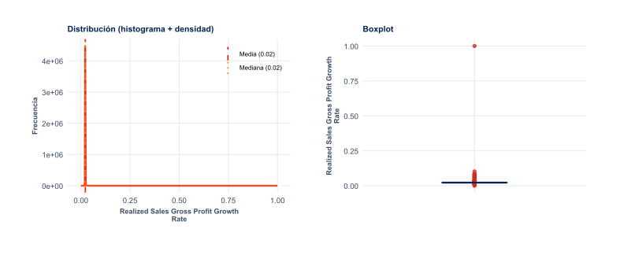
El histograma de Realized Sales Gross Profit Growth Rate muestra un marcado sesgo a la derecha (asimetría positiva), con una media de 2.25% y una mediana de 2.21%. La curtosis observada de 5053.61 indica una concentración notable de observaciones alrededor de la zona central, acompañada por la presencia de valores atípicos en las colas. Esta morfología sugiere una alta homogeneidad en el grueso de las empresas analizadas, pero con comportamientos extremos puntuales a monitorear en la etapa de preprocesamiento.
Operating Profit Growth Rate
| Variable | N | Media | DS | Curtosis | Mediana | Mínimo | Máximo | Q1 | Q3 | IQR |
|---|---|---|---|---|---|---|---|---|---|---|
| Operating Profit Growth Rate | 5456 | 0.8479279 | 0.011834 | 4832.059 | 0.8480441 | 0 | 0.9322161 | 0.8479854 | 0.8481227 | 0.0001373 |
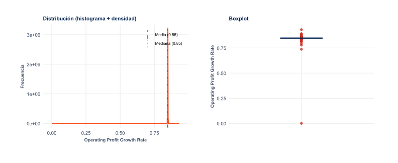
El histograma de Operating Profit Growth Rate muestra un marcado sesgo a la izquierda (asimetría negativa), con una media de 84.79% y una mediana de 84.80%. La curtosis observada de 4836.49 indica una concentración notable de observaciones alrededor de la zona central, acompañada por la presencia de valores atípicos en las colas. Esta morfología sugiere una alta homogeneidad en el grueso de las empresas analizadas, pero con comportamientos extremos puntuales a monitorear en la etapa de preprocesamiento.
After-tax Net Profit Growth Rate
| Variable | N | Media | DS | Curtosis | Mediana | Mínimo | Máximo | Q1 | Q3 | IQR |
|---|---|---|---|---|---|---|---|---|---|---|
| After-tax Net Profit Growth Rate | 5456 | 0.6892122 | 0.0133742 | 1437.308 | 0.6894394 | 0 | 1 | 0.6892721 | 0.6896499 | 0.0003778 |
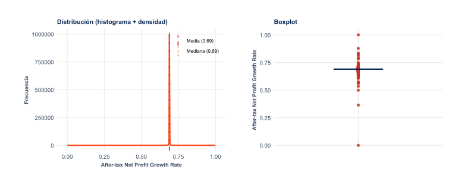
El histograma de After-tax Net Profit Growth Rate muestra un marcado sesgo a la izquierda (asimetría negativa), con una media de 68.92% y una mediana de 68.94%. La curtosis observada de 1438.63 indica una concentración notable de observaciones alrededor de la zona central, acompañada por la presencia de valores atípicos en las colas. Esta morfología sugiere una alta homogeneidad en el grueso de las empresas analizadas, pero con comportamientos extremos puntuales a monitorear en la etapa de preprocesamiento.
Regular Net Profit Growth Rate
| Variable | N | Media | DS | Curtosis | Mediana | Mínimo | Máximo | Q1 | Q3 | IQR |
|---|---|---|---|---|---|---|---|---|---|---|
| Regular Net Profit Growth Rate | 5456 | 0.6892227 | 0.0134138 | 1420.718 | 0.6894399 | 0 | 1 | 0.6892726 | 0.6896499 | 0.0003772 |
El histograma de Regular Net Profit Growth Rate muestra un marcado sesgo a la izquierda (asimetría negativa), con una media de 68.92% y una mediana de 68.94%. La curtosis observada de 1422.02 indica una concentración notable de observaciones alrededor de la zona central, acompañada por la presencia de valores atípicos en las colas. Esta morfología sugiere una alta homogeneidad en el grueso de las empresas analizadas, pero con comportamientos extremos puntuales a monitorear en la etapa de preprocesamiento.
Continuous Net Profit Growth Rate
| Variable | N | Media | DS | Curtosis | Mediana | Mínimo | Máximo | Q1 | Q3 | IQR |
|---|---|---|---|---|---|---|---|---|---|---|
| Continuous Net Profit Growth Rate | 5456 | 0.2176671 | 0.0112233 | 4354.93 | 0.2175982 | 0 | 1 | 0.2175799 | 0.2176219 | 4.2e-05 |
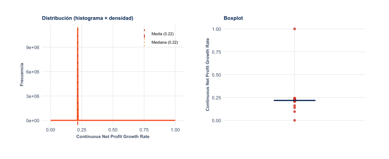
El histograma de Continuous Net Profit Growth Rate muestra un marcado sesgo a la derecha (asimetría positiva), con una media de 21.77% y una mediana de 21.76%. La curtosis observada de 4358.92 indica una concentración notable de observaciones alrededor de la zona central, acompañada por la presencia de valores atípicos en las colas. Esta morfología sugiere una alta homogeneidad en el grueso de las empresas analizadas, pero con comportamientos extremos puntuales a monitorear en la etapa de preprocesamiento.
Total Asset Growth Rate
| Variable | N | Media | DS | Curtosis | Mediana | Mínimo | Máximo | Q1 | Q3 | IQR |
|---|---|---|---|---|---|---|---|---|---|---|
| Total Asset Growth Rate | 5456 | 5528156378 | 2895923411 | -0.3931113 | 6.42e+09 | 0 | 9.98e+09 | 4.88e+09 | 7.4e+09 | 2.52e+09 |
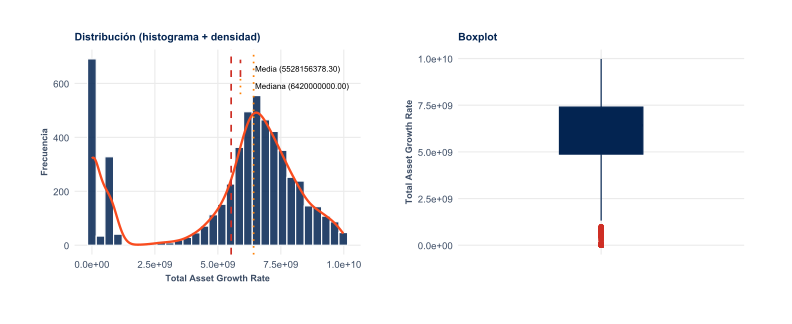
El histograma de Total Asset Growth Rate muestra un marcado sesgo a la izquierda (asimetría negativa), con una media de 552815637829.93% y una mediana de 642000000000.00%. La curtosis observada de -0.39 indica una concentración notable de observaciones alrededor de la zona central, acompañada por la presencia de valores atípicos en las colas. Esta morfología sugiere una alta homogeneidad en el grueso de las empresas analizadas, pero con comportamientos extremos puntuales a monitorear en la etapa de preprocesamiento.
Net Value Growth Rate
| Variable | N | Media | DS | Curtosis | Mediana | Mínimo | Máximo | Q1 | Q3 | IQR |
|---|---|---|---|---|---|---|---|---|---|---|
| Net Value Growth Rate | 5456 | 1957478 | 127624057 | 5231.873 | 0.0004621 | 0 | 9.33e+09 | 0.0004411 | 0.0004994 | 5.83e-05 |
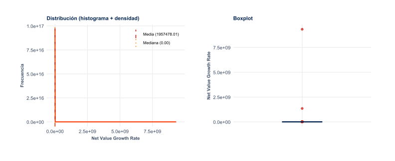
El histograma de Net Value Growth Rate muestra un marcado sesgo a la derecha (asimetría positiva), con una media de 195747800.66% y una mediana de 0.05%. La curtosis observada de 5236.67 indica una concentración notable de observaciones alrededor de la zona central, acompañada por la presencia de valores atípicos en las colas. Esta morfología sugiere una alta homogeneidad en el grueso de las empresas analizadas, pero con comportamientos extremos puntuales a monitorear en la etapa de preprocesamiento.
Total Asset Return Growth Rate Ratio
| Variable | N | Media | DS | Curtosis | Mediana | Mínimo | Máximo | Q1 | Q3 | IQR |
|---|---|---|---|---|---|---|---|---|---|---|
| Total Asset Return Growth Rate Ratio | 5456 | 0.2641387 | 0.0040617 | 3338.909 | 0.2640542 | 0 | 0.3586288 | 0.2637657 | 0.2643922 | 0.0006265 |
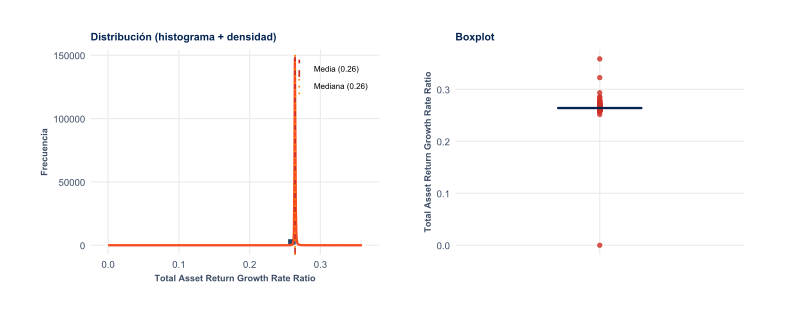
El histograma de Total Asset Return Growth Rate Ratio muestra un marcado sesgo a la izquierda (asimetría negativa), con una media de 26.41% y una mediana de 26.41%. La curtosis observada de 3341.97 indica una concentración notable de observaciones alrededor de la zona central, acompañada por la presencia de valores atípicos en las colas. Esta morfología sugiere una alta homogeneidad en el grueso de las empresas analizadas, pero con comportamientos extremos puntuales a monitorear en la etapa de preprocesamiento.
Cash Reinvestment %
| Variable | N | Media | DS | Curtosis | Mediana | Mínimo | Máximo | Q1 | Q3 | IQR |
|---|---|---|---|---|---|---|---|---|---|---|
| Cash Reinvestment % | 5456 | 0.3796161 | 0.0192963 | 72.40594 | 0.380323 | 0.025828 | 0.7599475 | 0.3747345 | 0.3868359 | 0.0121014 |
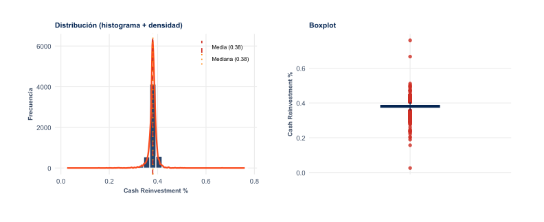
El histograma de Cash Reinvestment % muestra un marcado sesgo a la izquierda (asimetría negativa), con una media de 37.96% y una mediana de 38.03%. La curtosis observada de 72.47 indica una concentración notable de observaciones alrededor de la zona central, acompañada por la presencia de valores atípicos en las colas. Esta morfología sugiere una alta homogeneidad en el grueso de las empresas analizadas, pero con comportamientos extremos puntuales a monitorear en la etapa de preprocesamiento.
Current Ratio
| Variable | N | Media | DS | Curtosis | Mediana | Mínimo | Máximo | Q1 | Q3 | IQR |
|---|---|---|---|---|---|---|---|---|---|---|
| Current Ratio | 5456 | 504032.3 | 37230212 | 5451 | 0.010561 | 0 | 2.75e+09 | 0.0075312 | 0.016178 | 0.0086468 |
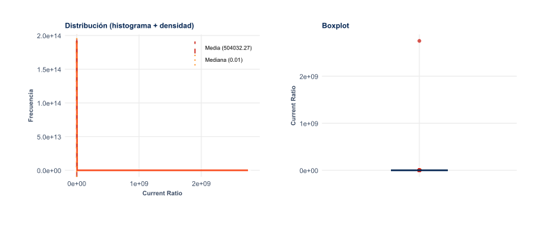
El histograma de Current Ratio muestra un marcado sesgo a la derecha (asimetría positiva), con una media de 504032.2733 ratio y una mediana de 0.0106 ratio. La curtosis observada de 5456.00 indica una concentración notable de observaciones alrededor de la zona central, acompañada por la presencia de valores atípicos en las colas. Esta morfología sugiere una alta homogeneidad en el grueso de las empresas analizadas, pero con comportamientos extremos puntuales a monitorear en la etapa de preprocesamiento.
Quick Ratio
| Variable | N | Media | DS | Curtosis | Mediana | Mínimo | Máximo | Q1 | Q3 | IQR |
|---|---|---|---|---|---|---|---|---|---|---|
| Quick Ratio | 5456 | 9508798 | 264185268 | 937.6647 | 0.0073941 | 0 | 9.23e+09 | 0.0047114 | 0.012217 | 0.0075056 |
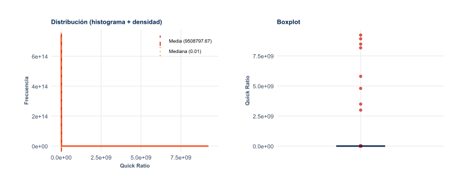
El histograma de Quick Ratio muestra un marcado sesgo a la derecha (asimetría positiva), con una media de 9508797.6651 ratio y una mediana de 0.0074 ratio. La curtosis observada de 938.53 indica una concentración notable de observaciones alrededor de la zona central, acompañada por la presencia de valores atípicos en las colas. Esta morfología sugiere una alta homogeneidad en el grueso de las empresas analizadas, pero con comportamientos extremos puntuales a monitorear en la etapa de preprocesamiento.
Interest Expense Ratio
| Variable | N | Media | DS | Curtosis | Mediana | Mínimo | Máximo | Q1 | Q3 | IQR |
|---|---|---|---|---|---|---|---|---|---|---|
| Interest Expense Ratio | 5456 | 0.6309552 | 0.0112163 | 1973.017 | 0.6306999 | 0 | 0.8977874 | 0.6306123 | 0.6311413 | 0.000529 |
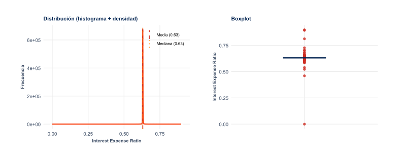
El histograma de Interest Expense Ratio muestra un marcado sesgo a la izquierda (asimetría negativa), con una media de 63.10% y una mediana de 63.07%. La curtosis observada de 1974.83 indica una concentración notable de observaciones alrededor de la zona central, acompañada por la presencia de valores atípicos en las colas. Esta morfología sugiere una alta homogeneidad en el grueso de las empresas analizadas, pero con comportamientos extremos puntuales a monitorear en la etapa de preprocesamiento.
Total debt/Total net worth
| Variable | N | Media | DS | Curtosis | Mediana | Mínimo | Máximo | Q1 | Q3 | IQR |
|---|---|---|---|---|---|---|---|---|---|---|
| Total debt/Total net worth | 5456 | 5519611 | 188258113 | 1876.564 | 0.0055285 | 0 | 9.94e+09 | 0.00302 | 0.0093095 | 0.0062895 |
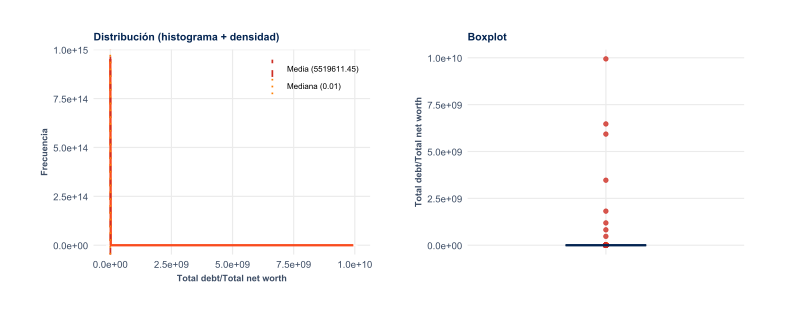
El histograma de Total debt/Total net worth muestra un marcado sesgo a la derecha (asimetría positiva), con una media de 5519611.4450 ratio y una mediana de 0.0055 ratio. La curtosis observada de 1878.29 indica una concentración notable de observaciones alrededor de la zona central, acompañada por la presencia de valores atípicos en las colas. Esta morfología sugiere una alta homogeneidad en el grueso de las empresas analizadas, pero con comportamientos extremos puntuales a monitorear en la etapa de preprocesamiento.
Debt ratio %
| Variable | N | Media | DS | Curtosis | Mediana | Mínimo | Máximo | Q1 | Q3 | IQR |
|---|---|---|---|---|---|---|---|---|---|---|
| Debt ratio % | 5456 | 0.1134512 | 0.0543518 | 13.02561 | 0.1111649 | 0 | 1 | 0.0730417 | 0.1490084 | 0.0759667 |
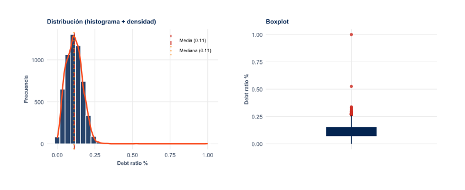
El histograma de Debt ratio % muestra un marcado sesgo a la derecha (asimetría positiva), con una media de 11.35% y una mediana de 11.12%. La curtosis observada de 13.04 indica una concentración notable de observaciones alrededor de la zona central, acompañada por la presencia de valores atípicos en las colas. Esta morfología sugiere una alta homogeneidad en el grueso de las empresas analizadas, pero con comportamientos extremos puntuales a monitorear en la etapa de preprocesamiento.
Net worth/Assets
| Variable | N | Media | DS | Curtosis | Mediana | Mínimo | Máximo | Q1 | Q3 | IQR |
|---|---|---|---|---|---|---|---|---|---|---|
| Net worth/Assets | 5456 | 0.8865488 | 0.0543518 | 13.02561 | 0.8888351 | 0 | 1 | 0.8509916 | 0.9269583 | 0.0759667 |
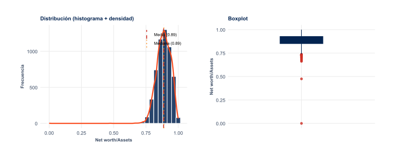
El histograma de Net worth/Assets muestra un marcado sesgo a la izquierda (asimetría negativa), con una media de 88.65% y una mediana de 88.88%. La curtosis observada de 13.04 indica una concentración notable de observaciones alrededor de la zona central, acompañada por la presencia de valores atípicos en las colas. Esta morfología sugiere una alta homogeneidad en el grueso de las empresas analizadas, pero con comportamientos extremos puntuales a monitorear en la etapa de preprocesamiento.
Long-term fund suitability ratio (A)
| Variable | N | Media | DS | Curtosis | Mediana | Mínimo | Máximo | Q1 | Q3 | IQR |
|---|---|---|---|---|---|---|---|---|---|---|
| Long-term fund suitability ratio (A) | 5456 | 0.0085466 | 0.0260366 | 847.2348 | 0.0056491 | 0 | 1 | 0.0052352 | 0.0068332 | 0.001598 |
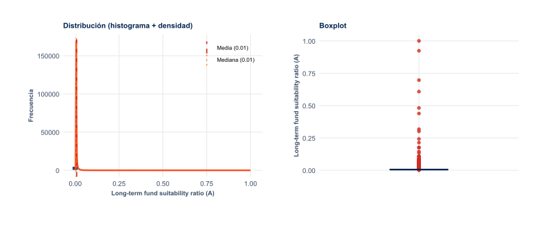
El histograma de Long-term fund suitability ratio (A) muestra un marcado sesgo a la derecha (asimetría positiva), con una media de 0.0085 ratio y una mediana de 0.0056 ratio. La curtosis observada de 848.01 indica una concentración notable de observaciones alrededor de la zona central, acompañada por la presencia de valores atípicos en las colas. Esta morfología sugiere una alta homogeneidad en el grueso de las empresas analizadas, pero con comportamientos extremos puntuales a monitorear en la etapa de preprocesamiento.
Borrowing dependency
| Variable | N | Media | DS | Curtosis | Mediana | Mínimo | Máximo | Q1 | Q3 | IQR |
|---|---|---|---|---|---|---|---|---|---|---|
| Borrowing dependency | 5456 | 0.3746208 | 0.0160948 | 852.377 | 0.3726294 | 0 | 1 | 0.3701815 | 0.3762461 | 0.0060646 |
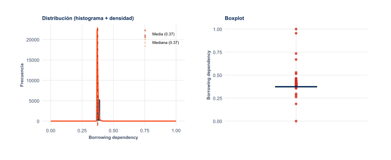
El histograma de Borrowing dependency muestra un marcado sesgo a la derecha (asimetría positiva), con una media de 0.3746 ratio y una mediana de 0.3726 ratio. La curtosis observada de 853.16 indica una concentración notable de observaciones alrededor de la zona central, acompañada por la presencia de valores atípicos en las colas. Esta morfología sugiere una alta homogeneidad en el grueso de las empresas analizadas, pero con comportamientos extremos puntuales a monitorear en la etapa de preprocesamiento.
Contingent liabilities/Net worth
| Variable | N | Media | DS | Curtosis | Mediana | Mínimo | Máximo | Q1 | Q3 | IQR |
|---|---|---|---|---|---|---|---|---|---|---|
| Contingent liabilities/Net worth | 5456 | 0.0060071 | 0.0136129 | 5209.511 | 0.0053658 | 0 | 1 | 0.0053658 | 0.0057663 | 0.0004005 |
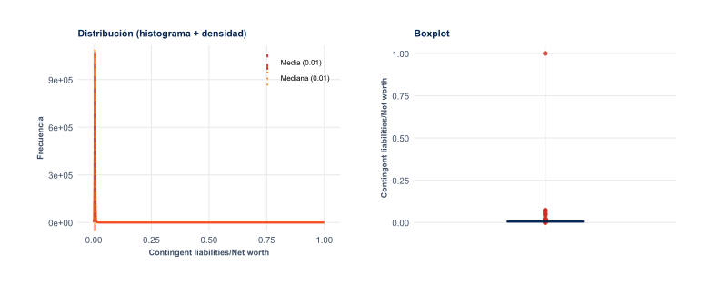
El histograma de Contingent liabilities/Net worth muestra un marcado sesgo a la derecha (asimetría positiva), con una media de 0.0060 ratio y una mediana de 0.0054 ratio. La curtosis observada de 5214.29 indica una concentración notable de observaciones alrededor de la zona central, acompañada por la presencia de valores atípicos en las colas. Esta morfología sugiere una alta homogeneidad en el grueso de las empresas analizadas, pero con comportamientos extremos puntuales a monitorear en la etapa de preprocesamiento.
Operating profit/Paid-in capital
| Variable | N | Media | DS | Curtosis | Mediana | Mínimo | Máximo | Q1 | Q3 | IQR |
|---|---|---|---|---|---|---|---|---|---|---|
| Operating profit/Paid-in capital | 5456 | 0.108814 | 0.0258905 | 94.44064 | 0.1041779 | 0 | 0.7354292 | 0.0960864 | 0.1157726 | 0.0196863 |
El histograma de Operating profit/Paid-in capital muestra un marcado sesgo a la derecha (asimetría positiva), con una media de 10.88% y una mediana de 10.42%. La curtosis observada de 94.53 indica una concentración notable de observaciones alrededor de la zona central, acompañada por la presencia de valores atípicos en las colas. Esta morfología sugiere una alta homogeneidad en el grueso de las empresas analizadas, pero con comportamientos extremos puntuales a monitorear en la etapa de preprocesamiento.
Net profit before tax/Paid-in capital
| Variable | N | Media | DS | Curtosis | Mediana | Mínimo | Máximo | Q1 | Q3 | IQR |
|---|---|---|---|---|---|---|---|---|---|---|
| Net profit before tax/Paid-in capital | 5456 | 0.1825124 | 0.0291451 | 69.87528 | 0.1785725 | 0.0524395 | 0.7921047 | 0.1694442 | 0.1914675 | 0.0220232 |
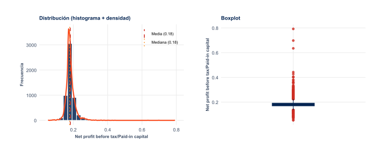
El histograma de Net profit before tax/Paid-in capital muestra un marcado sesgo a la derecha (asimetría positiva), con una media de 18.25% y una mediana de 17.86%. La curtosis observada de 69.94 indica una concentración notable de observaciones alrededor de la zona central, acompañada por la presencia de valores atípicos en las colas. Esta morfología sugiere una alta homogeneidad en el grueso de las empresas analizadas, pero con comportamientos extremos puntuales a monitorear en la etapa de preprocesamiento.
Inventory and accounts receivable/Net value
| Variable | N | Media | DS | Curtosis | Mediana | Mínimo | Máximo | Q1 | Q3 | IQR |
|---|---|---|---|---|---|---|---|---|---|---|
| Inventory and accounts receivable/Net value | 5456 | 0.4024175 | 0.0115723 | 388.3899 | 0.4001156 | 0 | 0.7074447 | 0.3974104 | 0.4044905 | 0.0070801 |
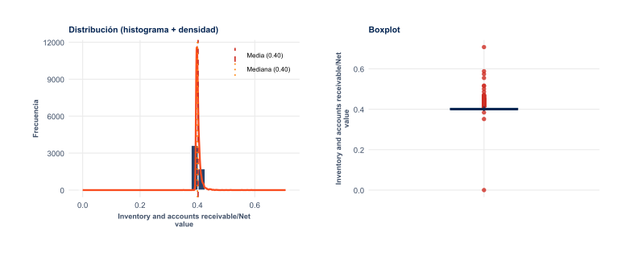
El histograma de Inventory and accounts receivable/Net value muestra un marcado sesgo a la izquierda (asimetría negativa), con una media de 0.4024 ratio y una mediana de 0.4001 ratio. La curtosis observada de 388.75 indica una concentración notable de observaciones alrededor de la zona central, acompañada por la presencia de valores atípicos en las colas. Esta morfología sugiere una alta homogeneidad en el grueso de las empresas analizadas, pero con comportamientos extremos puntuales a monitorear en la etapa de preprocesamiento.
Total Asset Turnover
| Variable | N | Media | DS | Curtosis | Mediana | Mínimo | Máximo | Q1 | Q3 | IQR |
|---|---|---|---|---|---|---|---|---|---|---|
| Total Asset Turnover | 5456 | 0.1418012 | 0.1017072 | 9.620414 | 0.1184408 | 0 | 1 | 0.0764618 | 0.1769115 | 0.1004498 |
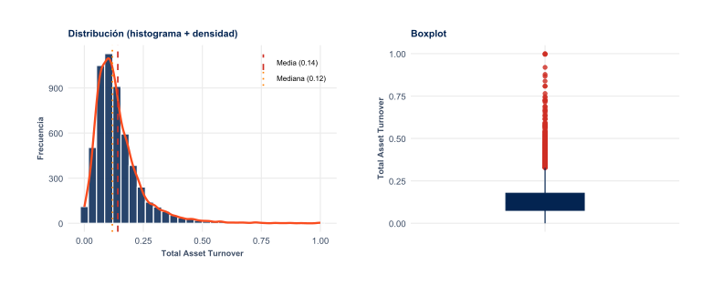
El histograma de Total Asset Turnover muestra un marcado sesgo a la derecha (asimetría positiva), con una media de 0.1418 ratio y una mediana de 0.1184 ratio. La curtosis observada de 9.63 indica una concentración notable de observaciones alrededor de la zona central, acompañada por la presencia de valores atípicos en las colas. Esta morfología sugiere una alta homogeneidad en el grueso de las empresas analizadas, pero con comportamientos extremos puntuales a monitorear en la etapa de preprocesamiento.
Accounts Receivable Turnover
| Variable | N | Media | DS | Curtosis | Mediana | Mínimo | Máximo | Q1 | Q3 | IQR |
|---|---|---|---|---|---|---|---|---|---|---|
| Accounts Receivable Turnover | 5456 | 13401576 | 281589298 | 737.2422 | 0.0009678 | 0 | 9.74e+09 | 0.0007081 | 0.0014608 | 0.0007527 |
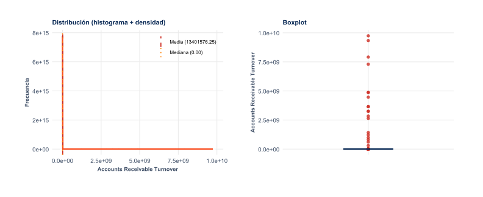
El histograma de Accounts Receivable Turnover muestra un marcado sesgo a la derecha (asimetría positiva), con una media de 13401576.2485 ratio y una mediana de 0.0010 ratio. La curtosis observada de 737.92 indica una concentración notable de observaciones alrededor de la zona central, acompañada por la presencia de valores atípicos en las colas. Esta morfología sugiere una alta homogeneidad en el grueso de las empresas analizadas, pero con comportamientos extremos puntuales a monitorear en la etapa de preprocesamiento.
Average Collection Days
| Variable | N | Media | DS | Curtosis | Mediana | Mínimo | Máximo | Q1 | Q3 | IQR |
|---|---|---|---|---|---|---|---|---|---|---|
| Average Collection Days | 5456 | 9438050 | 249403309 | 952.6427 | 0.0065704 | 0 | 8.8e+09 | 0.0043701 | 0.0089789 | 0.0046088 |
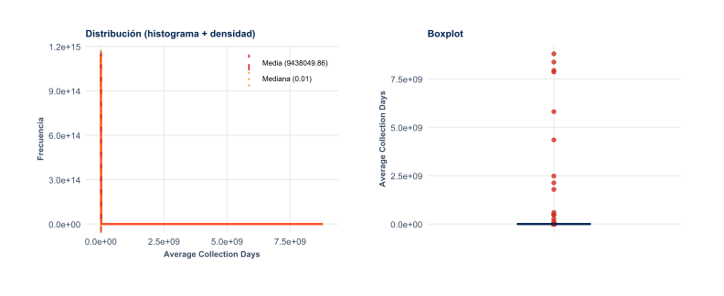
El histograma de Average Collection Days muestra un marcado sesgo a la derecha (asimetría positiva), con una media de 9438049.8612 días y una mediana de 0.0066 días. La curtosis observada de 953.52 indica una concentración notable de observaciones alrededor de la zona central, acompañada por la presencia de valores atípicos en las colas. Esta morfología sugiere una alta homogeneidad en el grueso de las empresas analizadas, pero con comportamientos extremos puntuales a monitorear en la etapa de preprocesamiento.
Inventory Turnover Rate (times)
| Variable | N | Media | DS | Curtosis | Mediana | Mínimo | Máximo | Q1 | Q3 | IQR |
|---|---|---|---|---|---|---|---|---|---|---|
| Inventory Turnover Rate (times) | 5456 | 2125743768 | 3235358638 | -0.2867894 | 0.0006855 | 0 | 9.99e+09 | 0.0001706 | 4.59e+09 | 4.59e+09 |
El histograma de Inventory Turnover Rate (times) muestra un marcado sesgo a la derecha (asimetría positiva), con una media de 2125743768.3294 ratio y una mediana de 0.0007 ratio. La curtosis observada de -0.29 indica una concentración notable de observaciones alrededor de la zona central, acompañada por la presencia de valores atípicos en las colas. Esta morfología sugiere una alta homogeneidad en el grueso de las empresas analizadas, pero con comportamientos extremos puntuales a monitorear en la etapa de preprocesamiento.
Fixed Assets Turnover Frequency
| Variable | N | Media | DS | Curtosis | Mediana | Mínimo | Máximo | Q1 | Q3 | IQR |
|---|---|---|---|---|---|---|---|---|---|---|
| Fixed Assets Turnover Frequency | 5456 | 1020131745 | 2481016089 | 3.972441 | 0.0005878 | 0 | 9.99e+09 | 0.00023 | 0.0038005 | 0.0035705 |
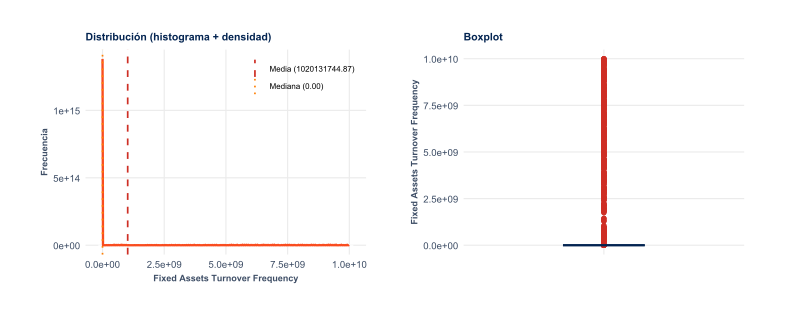
El histograma de Fixed Assets Turnover Frequency muestra un marcado sesgo a la derecha (asimetría positiva), con una media de 1020131744.8699 ratio y una mediana de 0.0006 ratio. La curtosis observada de 3.98 indica una concentración notable de observaciones alrededor de la zona central, acompañada por la presencia de valores atípicos en las colas. Esta morfología sugiere una alta homogeneidad en el grueso de las empresas analizadas, pero con comportamientos extremos puntuales a monitorear en la etapa de preprocesamiento.
Net Worth Turnover Rate (times)
| Variable | N | Media | DS | Curtosis | Mediana | Mínimo | Máximo | Q1 | Q3 | IQR |
|---|---|---|---|---|---|---|---|---|---|---|
| Net Worth Turnover Rate (times) | 5456 | 0.0386093 | 0.0363067 | 153.7349 | 0.0295161 | 0 | 1 | 0.0219355 | 0.0429435 | 0.0210081 |
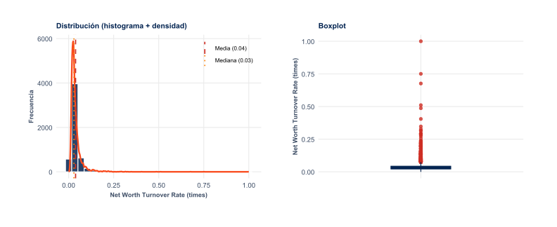
El histograma de Net Worth Turnover Rate (times) muestra un marcado sesgo a la derecha (asimetría positiva), con una media de 0.0386 ratio y una mediana de 0.0295 ratio. La curtosis observada de 153.88 indica una concentración notable de observaciones alrededor de la zona central, acompañada por la presencia de valores atípicos en las colas. Esta morfología sugiere una alta homogeneidad en el grueso de las empresas analizadas, pero con comportamientos extremos puntuales a monitorear en la etapa de preprocesamiento.
Revenue per person
| Variable | N | Media | DS | Curtosis | Mediana | Mínimo | Máximo | Q1 | Q3 | IQR |
|---|---|---|---|---|---|---|---|---|---|---|
| Revenue per person | 5456 | 2906892 | 152746021 | 2854.151 | 0.0185509 | 0 | 8.81e+09 | 0.0103344 | 0.0358496 | 0.0255152 |
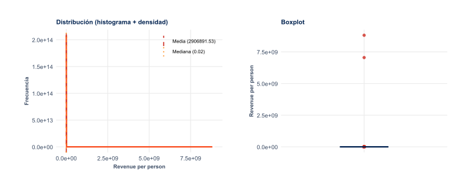
El histograma de Revenue per person muestra un marcado sesgo a la derecha (asimetría positiva), con una media de 2906891.5313 Yuan ¥/persona y una mediana de 0.0186 Yuan ¥/persona. La curtosis observada de 2856.77 indica una concentración notable de observaciones alrededor de la zona central, acompañada por la presencia de valores atípicos en las colas. Esta morfología sugiere una alta homogeneidad en el grueso de las empresas analizadas, pero con comportamientos extremos puntuales a monitorear en la etapa de preprocesamiento.
Operating profit per person
| Variable | N | Media | DS | Curtosis | Mediana | Mínimo | Máximo | Q1 | Q3 | IQR |
|---|---|---|---|---|---|---|---|---|---|---|
| Operating profit per person | 5456 | 0.4007497 | 0.0325458 | 119.8843 | 0.3958753 | 0.0509147 | 1 | 0.392438 | 0.4018651 | 0.0094271 |
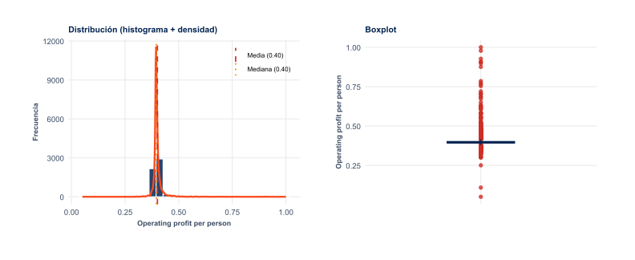
El histograma de Operating profit per person muestra un marcado sesgo a la derecha (asimetría positiva), con una media de 0.4007 Yuan ¥/persona y una mediana de 0.3959 Yuan ¥/persona. La curtosis observada de 120.00 indica una concentración notable de observaciones alrededor de la zona central, acompañada por la presencia de valores atípicos en las colas. Esta morfología sugiere una alta homogeneidad en el grueso de las empresas analizadas, pero con comportamientos extremos puntuales a monitorear en la etapa de preprocesamiento.
Allocation rate per person
| Variable | N | Media | DS | Curtosis | Mediana | Mínimo | Máximo | Q1 | Q3 | IQR |
|---|---|---|---|---|---|---|---|---|---|---|
| Allocation rate per person | 5456 | 11242669 | 301592952 | 775.2381 | 0.0078763 | 0 | 9.57e+09 | 0.0040956 | 0.015237 | 0.0111413 |
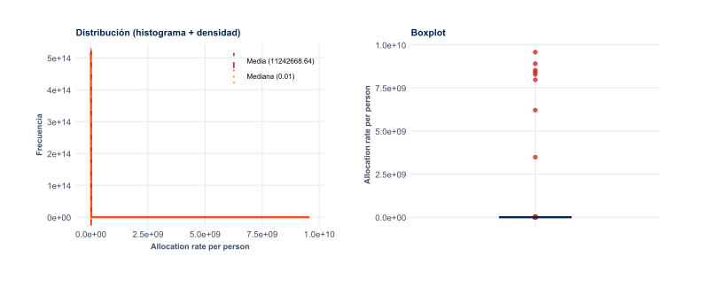
El histograma de Allocation rate per person muestra un marcado sesgo a la derecha (asimetría positiva), con una media de 11242668.6376 Yuan ¥/persona y una mediana de 0.0079 Yuan ¥/persona. La curtosis observada de 775.95 indica una concentración notable de observaciones alrededor de la zona central, acompañada por la presencia de valores atípicos en las colas. Esta morfología sugiere una alta homogeneidad en el grueso de las empresas analizadas, pero con comportamientos extremos puntuales a monitorear en la etapa de preprocesamiento.
Working Capital to Total Assets
| Variable | N | Media | DS | Curtosis | Mediana | Mínimo | Máximo | Q1 | Q3 | IQR |
|---|---|---|---|---|---|---|---|---|---|---|
| Working Capital to Total Assets | 5456 | 0.8136989 | 0.0595694 | 6.612482 | 0.8093331 | 0 | 1 | 0.7738915 | 0.8500086 | 0.0761171 |
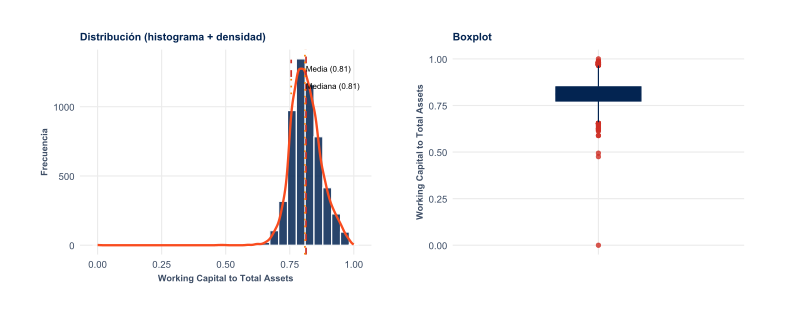
El histograma de Working Capital to Total Assets muestra una distribución relativamente simétrica, con una media de 0.8137 ratio y una mediana de 0.8093 ratio. La curtosis observada de 6.62 indica una concentración notable de observaciones alrededor de la zona central, acompañada por la presencia de valores atípicos en las colas. Esta morfología sugiere una alta homogeneidad en el grueso de las empresas analizadas, pero con comportamientos extremos puntuales a monitorear en la etapa de preprocesamiento.
Quick Assets/Total Assets
| Variable | N | Media | DS | Curtosis | Mediana | Mínimo | Máximo | Q1 | Q3 | IQR |
|---|---|---|---|---|---|---|---|---|---|---|
| Quick Assets/Total Assets | 5456 | 0.3997391 | 0.202765 | -0.5576441 | 0.3850575 | 0 | 1 | 0.2406796 | 0.5403817 | 0.299702 |
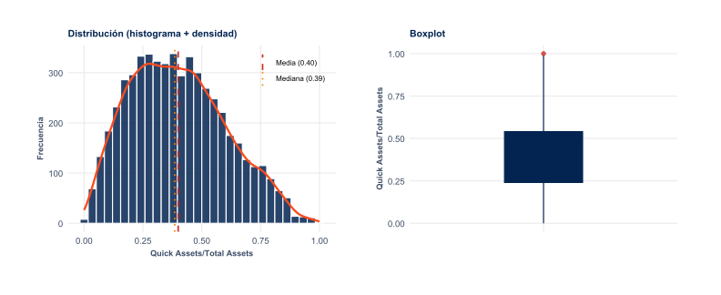
El histograma de Quick Assets/Total Assets muestra una distribución relativamente simétrica, con una media de 39.97% y una mediana de 38.51%. La curtosis observada de -0.56 indica una concentración notable de observaciones alrededor de la zona central, acompañada por la presencia de valores atípicos en las colas. Esta morfología sugiere una alta homogeneidad en el grueso de las empresas analizadas, pero con comportamientos extremos puntuales a monitorear en la etapa de preprocesamiento.
Current Assets/Total Assets
| Variable | N | Media | DS | Curtosis | Mediana | Mínimo | Máximo | Q1 | Q3 | IQR |
|---|---|---|---|---|---|---|---|---|---|---|
| Current Assets/Total Assets | 5456 | 0.5210894 | 0.2179506 | -0.8036477 | 0.5118295 | 0 | 1 | 0.3504494 | 0.6866149 | 0.3361655 |
El histograma de Current Assets/Total Assets muestra una distribución relativamente simétrica, con una media de 52.11% y una mediana de 51.18%. La curtosis observada de -0.80 indica una concentración notable de observaciones alrededor de la zona central, acompañada por la presencia de valores atípicos en las colas. Esta morfología sugiere una alta homogeneidad en el grueso de las empresas analizadas, pero con comportamientos extremos puntuales a monitorear en la etapa de preprocesamiento.
Cash/Total Assets
| Variable | N | Media | DS | Curtosis | Mediana | Mínimo | Máximo | Q1 | Q3 | IQR |
|---|---|---|---|---|---|---|---|---|---|---|
| Cash/Total Assets | 5456 | 0.1231 | 0.1396816 | 5.986914 | 0.0733845 | 0.0001842 | 1 | 0.0325943 | 0.1596483 | 0.127054 |
El histograma de Cash/Total Assets muestra un marcado sesgo a la derecha (asimetría positiva), con una media de 0.1231 ratio y una mediana de 0.0734 ratio. La curtosis observada de 5.99 indica una concentración notable de observaciones alrededor de la zona central, acompañada por la presencia de valores atípicos en las colas. Esta morfología sugiere una alta homogeneidad en el grueso de las empresas analizadas, pero con comportamientos extremos puntuales a monitorear en la etapa de preprocesamiento.
Quick Assets/Current Liability
| Variable | N | Media | DS | Curtosis | Mediana | Mínimo | Máximo | Q1 | Q3 | IQR |
|---|---|---|---|---|---|---|---|---|---|---|
| Quick Assets/Current Liability | 5456 | 4490469 | 191856951 | 1843.416 | 0.0078965 | 0 | 8.82e+09 | 0.0052336 | 0.0128243 | 0.0075907 |
El histograma de Quick Assets/Current Liability muestra un marcado sesgo a la derecha (asimetría positiva), con una media de 4490469.2200 ratio y una mediana de 0.0079 ratio. La curtosis observada de 1845.11 indica una concentración notable de observaciones alrededor de la zona central, acompañada por la presencia de valores atípicos en las colas. Esta morfología sugiere una alta homogeneidad en el grueso de las empresas analizadas, pero con comportamientos extremos puntuales a monitorear en la etapa de preprocesamiento.
Cash/Current Liability
| Variable | N | Media | DS | Curtosis | Mediana | Mínimo | Máximo | Q1 | Q3 | IQR |
|---|---|---|---|---|---|---|---|---|---|---|
| Cash/Current Liability | 5456 | 39106488 | 522711251 | 217.3877 | 0.0048368 | 0.0001009 | 9.65e+09 | 0.0019133 | 0.0126707 | 0.0107574 |
El histograma de Cash/Current Liability muestra un marcado sesgo a la derecha (asimetría positiva), con una media de 39106488.2830 ratio y una mediana de 0.0048 ratio. La curtosis observada de 217.59 indica una concentración notable de observaciones alrededor de la zona central, acompañada por la presencia de valores atípicos en las colas. Esta morfología sugiere una alta homogeneidad en el grueso de las empresas analizadas, pero con comportamientos extremos puntuales a monitorear en la etapa de preprocesamiento.
Current Liability to Assets
| Variable | N | Media | DS | Curtosis | Mediana | Mínimo | Máximo | Q1 | Q3 | IQR |
|---|---|---|---|---|---|---|---|---|---|---|
| Current Liability to Assets | 5456 | 0.0907872 | 0.0508261 | 18.89208 | 0.0823457 | 0 | 1 | 0.0534706 | 0.1188467 | 0.0653761 |
El histograma de Current Liability to Assets muestra un marcado sesgo a la derecha (asimetría positiva), con una media de 9.08% y una mediana de 8.23%. La curtosis observada de 18.91 indica una concentración notable de observaciones alrededor de la zona central, acompañada por la presencia de valores atípicos en las colas. Esta morfología sugiere una alta homogeneidad en el grueso de las empresas analizadas, pero con comportamientos extremos puntuales a monitorear en la etapa de preprocesamiento.
Operating Funds to Liability
| Variable | N | Media | DS | Curtosis | Mediana | Mínimo | Máximo | Q1 | Q3 | IQR |
|---|---|---|---|---|---|---|---|---|---|---|
| Operating Funds to Liability | 5456 | 0.3539384 | 0.0359303 | 65.40356 | 0.3485435 | 0 | 1 | 0.3409701 | 0.3609282 | 0.0199582 |
El histograma de Operating Funds to Liability muestra un marcado sesgo a la derecha (asimetría positiva), con una media de 0.3539 ratio y una mediana de 0.3485 ratio. La curtosis observada de 65.46 indica una concentración notable de observaciones alrededor de la zona central, acompañada por la presencia de valores atípicos en las colas. Esta morfología sugiere una alta homogeneidad en el grueso de las empresas analizadas, pero con comportamientos extremos puntuales a monitorear en la etapa de preprocesamiento.
Inventory/Working Capital
| Variable | N | Media | DS | Curtosis | Mediana | Mínimo | Máximo | Q1 | Q3 | IQR |
|---|---|---|---|---|---|---|---|---|---|---|
| Inventory/Working Capital | 5456 | 0.2772698 | 0.0061768 | 1138.203 | 0.2771763 | 0 | 0.466868 | 0.2770345 | 0.2774301 | 0.0003956 |
El histograma de Inventory/Working Capital muestra un marcado sesgo a la izquierda (asimetría negativa), con una media de 0.2773 ratio y una mediana de 0.2772 ratio. La curtosis observada de 1139.25 indica una concentración notable de observaciones alrededor de la zona central, acompañada por la presencia de valores atípicos en las colas. Esta morfología sugiere una alta homogeneidad en el grueso de las empresas analizadas, pero con comportamientos extremos puntuales a monitorear en la etapa de preprocesamiento.
Inventory/Current Liability
| Variable | N | Media | DS | Curtosis | Mediana | Mínimo | Máximo | Q1 | Q3 | IQR |
|---|---|---|---|---|---|---|---|---|---|---|
| Inventory/Current Liability | 5456 | 57918860 | 585595454 | 147.1906 | 0.0064515 | 0 | 9.91e+09 | 0.0031884 | 0.0111107 | 0.0079223 |
El histograma de Inventory/Current Liability muestra un marcado sesgo a la derecha (asimetría positiva), con una media de 57918859.9798 ratio y una mediana de 0.0065 ratio. La curtosis observada de 147.33 indica una concentración notable de observaciones alrededor de la zona central, acompañada por la presencia de valores atípicos en las colas. Esta morfología sugiere una alta homogeneidad en el grueso de las empresas analizadas, pero con comportamientos extremos puntuales a monitorear en la etapa de preprocesamiento.
Current Liabilities/Liability
| Variable | N | Media | DS | Curtosis | Mediana | Mínimo | Máximo | Q1 | Q3 | IQR |
|---|---|---|---|---|---|---|---|---|---|---|
| Current Liabilities/Liability | 5456 | 0.7607277 | 0.2073711 | -0.0238045 | 0.8067593 | 0 | 1 | 0.6240874 | 0.9418612 | 0.3177739 |
El histograma de Current Liabilities/Liability muestra un marcado sesgo a la izquierda (asimetría negativa), con una media de 0.7607 ratio y una mediana de 0.8068 ratio. La curtosis observada de -0.02 indica una concentración notable de observaciones alrededor de la zona central, acompañada por la presencia de valores atípicos en las colas. Esta morfología sugiere una alta homogeneidad en el grueso de las empresas analizadas, pero con comportamientos extremos puntuales a monitorear en la etapa de preprocesamiento.
Working Capital/Equity
| Variable | N | Media | DS | Curtosis | Mediana | Mínimo | Máximo | Q1 | Q3 | IQR |
|---|---|---|---|---|---|---|---|---|---|---|
| Working Capital/Equity | 5456 | 0.7357046 | 0.012269 | 2431.784 | 0.735974 | 0 | 0.9610697 | 0.7335808 | 0.7385325 | 0.0049517 |
El histograma de Working Capital/Equity muestra un marcado sesgo a la izquierda (asimetría negativa), con una media de 0.7357 ratio y una mediana de 0.7360 ratio. La curtosis observada de 2434.02 indica una concentración notable de observaciones alrededor de la zona central, acompañada por la presencia de valores atípicos en las colas. Esta morfología sugiere una alta homogeneidad en el grueso de las empresas analizadas, pero con comportamientos extremos puntuales a monitorear en la etapa de preprocesamiento.
Current Liabilities/Equity
| Variable | N | Media | DS | Curtosis | Mediana | Mínimo | Máximo | Q1 | Q3 | IQR |
|---|---|---|---|---|---|---|---|---|---|---|
| Current Liabilities/Equity | 5456 | 0.3314447 | 0.0143355 | 1132.28 | 0.3296675 | 0 | 1 | 0.3280973 | 0.332298 | 0.0042006 |
El histograma de Current Liabilities/Equity muestra un marcado sesgo a la derecha (asimetría positiva), con una media de 0.3314 ratio y una mediana de 0.3297 ratio. La curtosis observada de 1133.32 indica una concentración notable de observaciones alrededor de la zona central, acompañada por la presencia de valores atípicos en las colas. Esta morfología sugiere una alta homogeneidad en el grueso de las empresas analizadas, pero con comportamientos extremos puntuales a monitorear en la etapa de preprocesamiento.
Long-term Liability to Current Assets
| Variable | N | Media | DS | Curtosis | Mediana | Mínimo | Máximo | Q1 | Q3 | IQR |
|---|---|---|---|---|---|---|---|---|---|---|
| Long-term Liability to Current Assets | 5456 | 54330315 | 562094933 | 160.8372 | 0.0020079 | 0 | 9.45e+09 | 0 | 0.0090656 | 0.0090656 |
El histograma de Long-term Liability to Current Assets muestra un marcado sesgo a la derecha (asimetría positiva), con una media de 54330315.2566 ratio y una mediana de 0.0020 ratio. La curtosis observada de 160.99 indica una concentración notable de observaciones alrededor de la zona central, acompañada por la presencia de valores atípicos en las colas. Esta morfología sugiere una alta homogeneidad en el grueso de las empresas analizadas, pero con comportamientos extremos puntuales a monitorear en la etapa de preprocesamiento.
Retained Earnings to Total Assets
| Variable | N | Media | DS | Curtosis | Mediana | Mínimo | Máximo | Q1 | Q3 | IQR |
|---|---|---|---|---|---|---|---|---|---|---|
| Retained Earnings to Total Assets | 5456 | 0.9346148 | 0.0264313 | 328.709 | 0.9376987 | 0 | 0.9966163 | 0.9311217 | 0.9446214 | 0.0134996 |
El histograma de Retained Earnings to Total Assets muestra un marcado sesgo a la izquierda (asimetría negativa), con una media de 0.9346 ratio y una mediana de 0.9377 ratio. La curtosis observada de 329.01 indica una concentración notable de observaciones alrededor de la zona central, acompañada por la presencia de valores atípicos en las colas. Esta morfología sugiere una alta homogeneidad en el grueso de las empresas analizadas, pero con comportamientos extremos puntuales a monitorear en la etapa de preprocesamiento.
Total income/Total expense
| Variable | N | Media | DS | Curtosis | Mediana | Mínimo | Máximo | Q1 | Q3 | IQR |
|---|---|---|---|---|---|---|---|---|---|---|
| Total income/Total expense | 5456 | 0.0023978 | 0.0004722 | 430.1151 | 0.002337 | 0 | 0.0188716 | 0.0022371 | 0.0024907 | 0.0002535 |
El histograma de Total income/Total expense muestra un marcado sesgo a la derecha (asimetría positiva), con una media de 0.0024 ratio y una mediana de 0.0023 ratio. La curtosis observada de 430.51 indica una concentración notable de observaciones alrededor de la zona central, acompañada por la presencia de valores atípicos en las colas. Esta morfología sugiere una alta homogeneidad en el grueso de las empresas analizadas, pero con comportamientos extremos puntuales a monitorear en la etapa de preprocesamiento.
Total expense/Assets
| Variable | N | Media | DS | Curtosis | Mediana | Mínimo | Máximo | Q1 | Q3 | IQR |
|---|---|---|---|---|---|---|---|---|---|---|
| Total expense/Assets | 5456 | 0.0293071 | 0.0281681 | 278.3196 | 0.022665 | 0.0008528 | 1 | 0.0145758 | 0.0358409 | 0.021265 |
El histograma de Total expense/Assets muestra un marcado sesgo a la derecha (asimetría positiva), con una media de 2.93% y una mediana de 2.27%. La curtosis observada de 278.58 indica una concentración notable de observaciones alrededor de la zona central, acompañada por la presencia de valores atípicos en las colas. Esta morfología sugiere una alta homogeneidad en el grueso de las empresas analizadas, pero con comportamientos extremos puntuales a monitorear en la etapa de preprocesamiento.
Current Asset Turnover Rate
| Variable | N | Media | DS | Curtosis | Mediana | Mínimo | Máximo | Q1 | Q3 | IQR |
|---|---|---|---|---|---|---|---|---|---|---|
| Current Asset Turnover Rate | 5456 | 1195283187 | 2815659184 | 2.793107 | 0.0001985 | 0 | 1e+10 | 0.0001448 | 0.0004492 | 0.0003044 |
El histograma de Current Asset Turnover Rate muestra un marcado sesgo a la derecha (asimetría positiva), con una media de 1195283187.3171 ratio y una mediana de 0.0002 ratio. La curtosis observada de 2.80 indica una concentración notable de observaciones alrededor de la zona central, acompañada por la presencia de valores atípicos en las colas. Esta morfología sugiere una alta homogeneidad en el grueso de las empresas analizadas, pero con comportamientos extremos puntuales a monitorear en la etapa de preprocesamiento.
Quick Asset Turnover Rate
| Variable | N | Media | DS | Curtosis | Mediana | Mínimo | Máximo | Q1 | Q3 | IQR |
|---|---|---|---|---|---|---|---|---|---|---|
| Quick Asset Turnover Rate | 5456 | 2150333284 | 3357585702 | -0.3679789 | 0.0002275 | 0 | 9.99e+09 | 0.0001423 | 4862500000 | 4862500000 |
El histograma de Quick Asset Turnover Rate muestra un marcado sesgo a la derecha (asimetría positiva), con una media de 2150333284.4578 ratio y una mediana de 0.0002 ratio. La curtosis observada de -0.37 indica una concentración notable de observaciones alrededor de la zona central, acompañada por la presencia de valores atípicos en las colas. Esta morfología sugiere una alta homogeneidad en el grueso de las empresas analizadas, pero con comportamientos extremos puntuales a monitorear en la etapa de preprocesamiento.
Working capitcal Turnover Rate
| Variable | N | Media | DS | Curtosis | Mediana | Mínimo | Máximo | Q1 | Q3 | IQR |
|---|---|---|---|---|---|---|---|---|---|---|
| Working capitcal Turnover Rate | 5456 | 0.5939361 | 0.0083723 | 4649.861 | 0.5939621 | 0 | 0.7069782 | 0.593934 | 0.5940024 | 6.83e-05 |
El histograma de Working capitcal Turnover Rate muestra un marcado sesgo a la izquierda (asimetría negativa), con una media de 0.5939 ratio y una mediana de 0.5940 ratio. La curtosis observada de 4654.13 indica una concentración notable de observaciones alrededor de la zona central, acompañada por la presencia de valores atípicos en las colas. Esta morfología sugiere una alta homogeneidad en el grueso de las empresas analizadas, pero con comportamientos extremos puntuales a monitorear en la etapa de preprocesamiento.
Cash Turnover Rate
| Variable | N | Media | DS | Curtosis | Mediana | Mínimo | Máximo | Q1 | Q3 | IQR |
|---|---|---|---|---|---|---|---|---|---|---|
| Cash Turnover Rate | 5456 | 2465869106 | 2919752742 | -0.3536924 | 1.13e+09 | 1e-04 | 1e+10 | 0.0002831 | 4.475e+09 | 4.475e+09 |
El histograma de Cash Turnover Rate muestra un marcado sesgo a la derecha (asimetría positiva), con una media de 2465869105.7554 ratio y una mediana de 1130000000.0000 ratio. La curtosis observada de -0.35 indica una concentración notable de observaciones alrededor de la zona central, acompañada por la presencia de valores atípicos en las colas. Esta morfología sugiere una alta homogeneidad en el grueso de las empresas analizadas, pero con comportamientos extremos puntuales a monitorear en la etapa de preprocesamiento.
Cash Flow to Sales
| Variable | N | Media | DS | Curtosis | Mediana | Mínimo | Máximo | Q1 | Q3 | IQR |
|---|---|---|---|---|---|---|---|---|---|---|
| Cash Flow to Sales | 5456 | 0.6714597 | 0.0094483 | 4687.516 | 0.6715738 | 0 | 0.8146757 | 0.6715653 | 0.6715862 | 2.09e-05 |
El histograma de Cash Flow to Sales muestra un marcado sesgo a la izquierda (asimetría negativa), con una media de 67.15% y una mediana de 67.16%. La curtosis observada de 4691.82 indica una concentración notable de observaciones alrededor de la zona central, acompañada por la presencia de valores atípicos en las colas. Esta morfología sugiere una alta homogeneidad en el grueso de las empresas analizadas, pero con comportamientos extremos puntuales a monitorear en la etapa de preprocesamiento.
Fixed Assets to Assets
| Variable | N | Media | DS | Curtosis | Mediana | Mínimo | Máximo | Q1 | Q3 | IQR |
|---|---|---|---|---|---|---|---|---|---|---|
| Fixed Assets to Assets | 5456 | 1524927 | 112638315 | 5451 | 0.1994045 | 0 | 8.32e+09 | 0.0863154 | 0.3780824 | 0.291767 |
El histograma de Fixed Assets to Assets muestra un marcado sesgo a la derecha (asimetría positiva), con una media de 152492693.81% y una mediana de 19.94%. La curtosis observada de 5456.00 indica una concentración notable de observaciones alrededor de la zona central, acompañada por la presencia de valores atípicos en las colas. Esta morfología sugiere una alta homogeneidad en el grueso de las empresas analizadas, pero con comportamientos extremos puntuales a monitorear en la etapa de preprocesamiento.
Current Liability to Liability
| Variable | N | Media | DS | Curtosis | Mediana | Mínimo | Máximo | Q1 | Q3 | IQR |
|---|---|---|---|---|---|---|---|---|---|---|
| Current Liability to Liability | 5456 | 0.7607277 | 0.2073711 | -0.0238045 | 0.8067593 | 0 | 1 | 0.6240874 | 0.9418612 | 0.3177739 |
El histograma de Current Liability to Liability muestra un marcado sesgo a la izquierda (asimetría negativa), con una media de 0.7607 ratio y una mediana de 0.8068 ratio. La curtosis observada de -0.02 indica una concentración notable de observaciones alrededor de la zona central, acompañada por la presencia de valores atípicos en las colas. Esta morfología sugiere una alta homogeneidad en el grueso de las empresas analizadas, pero con comportamientos extremos puntuales a monitorear en la etapa de preprocesamiento.
Current Liability to Equity
| Variable | N | Media | DS | Curtosis | Mediana | Mínimo | Máximo | Q1 | Q3 | IQR |
|---|---|---|---|---|---|---|---|---|---|---|
| Current Liability to Equity | 5456 | 0.3314447 | 0.0143355 | 1132.28 | 0.3296675 | 0 | 1 | 0.3280973 | 0.332298 | 0.0042006 |
El histograma de Current Liability to Equity muestra un marcado sesgo a la derecha (asimetría positiva), con una media de 0.3314 ratio y una mediana de 0.3297 ratio. La curtosis observada de 1133.32 indica una concentración notable de observaciones alrededor de la zona central, acompañada por la presencia de valores atípicos en las colas. Esta morfología sugiere una alta homogeneidad en el grueso de las empresas analizadas, pero con comportamientos extremos puntuales a monitorear en la etapa de preprocesamiento.
Equity to Long-term Liability
| Variable | N | Media | DS | Curtosis | Mediana | Mínimo | Máximo | Q1 | Q3 | IQR |
|---|---|---|---|---|---|---|---|---|---|---|
| Equity to Long-term Liability | 5456 | 0.1155609 | 0.0175296 | 1462.303 | 0.1123663 | 0 | 0.922128 | 0.1109332 | 0.117138 | 0.0062048 |
El histograma de Equity to Long-term Liability muestra un marcado sesgo a la derecha (asimetría positiva), con una media de 0.1156 ratio y una mediana de 0.1124 ratio. La curtosis observada de 1463.64 indica una concentración notable de observaciones alrededor de la zona central, acompañada por la presencia de valores atípicos en las colas. Esta morfología sugiere una alta homogeneidad en el grueso de las empresas analizadas, pero con comportamientos extremos puntuales a monitorear en la etapa de preprocesamiento.
Cash Flow to Total Assets
| Variable | N | Media | DS | Curtosis | Mediana | Mínimo | Máximo | Q1 | Q3 | IQR |
|---|---|---|---|---|---|---|---|---|---|---|
| Cash Flow to Total Assets | 5456 | 0.6494136 | 0.047701 | 18.48362 | 0.6451749 | 0 | 1 | 0.6333341 | 0.6622554 | 0.0289212 |
El histograma de Cash Flow to Total Assets muestra una distribución relativamente simétrica, con una media de 0.6494 ratio y una mediana de 0.6452 ratio. La curtosis observada de 18.50 indica una concentración notable de observaciones alrededor de la zona central, acompañada por la presencia de valores atípicos en las colas. Esta morfología sugiere una alta homogeneidad en el grueso de las empresas analizadas, pero con comportamientos extremos puntuales a monitorear en la etapa de preprocesamiento.
Cash Flow to Liability
| Variable | N | Media | DS | Curtosis | Mediana | Mínimo | Máximo | Q1 | Q3 | IQR |
|---|---|---|---|---|---|---|---|---|---|---|
| Cash Flow to Liability | 5456 | 0.4619436 | 0.0310968 | 83.41974 | 0.4597251 | 0 | 1 | 0.4571469 | 0.4640516 | 0.0069046 |
El histograma de Cash Flow to Liability muestra un marcado sesgo a la derecha (asimetría positiva), con una media de 0.4619 ratio y una mediana de 0.4597 ratio. La curtosis observada de 83.50 indica una concentración notable de observaciones alrededor de la zona central, acompañada por la presencia de valores atípicos en las colas. Esta morfología sugiere una alta homogeneidad en el grueso de las empresas analizadas, pero con comportamientos extremos puntuales a monitorear en la etapa de preprocesamiento.
CFO to Assets
| Variable | N | Media | DS | Curtosis | Mediana | Mínimo | Máximo | Q1 | Q3 | IQR |
|---|---|---|---|---|---|---|---|---|---|---|
| CFO to Assets | 5456 | 0.5933905 | 0.0586501 | 7.459653 | 0.5932241 | 0 | 1 | 0.5657085 | 0.6250784 | 0.0593699 |
El histograma de CFO to Assets muestra una distribución relativamente simétrica, con una media de 59.34% y una mediana de 59.32%. La curtosis observada de 7.47 indica una concentración notable de observaciones alrededor de la zona central, acompañada por la presencia de valores atípicos en las colas. Esta morfología sugiere una alta homogeneidad en el grueso de las empresas analizadas, pero con comportamientos extremos puntuales a monitorear en la etapa de preprocesamiento.
Cash Flow to Equity
| Variable | N | Media | DS | Curtosis | Mediana | Mínimo | Máximo | Q1 | Q3 | IQR |
|---|---|---|---|---|---|---|---|---|---|---|
| Cash Flow to Equity | 5456 | 0.3154246 | 0.0105327 | 314.4944 | 0.3149211 | 0 | 0.5692307 | 0.3129953 | 0.3176333 | 0.004638 |
El histograma de Cash Flow to Equity muestra un marcado sesgo a la izquierda (asimetría negativa), con una media de 0.3154 ratio y una mediana de 0.3149 ratio. La curtosis observada de 314.78 indica una concentración notable de observaciones alrededor de la zona central, acompañada por la presencia de valores atípicos en las colas. Esta morfología sugiere una alta homogeneidad en el grueso de las empresas analizadas, pero con comportamientos extremos puntuales a monitorear en la etapa de preprocesamiento.
Current Liability to Current Assets
| Variable | N | Media | DS | Curtosis | Mediana | Mínimo | Máximo | Q1 | Q3 | IQR |
|---|---|---|---|---|---|---|---|---|---|---|
| Current Liability to Current Assets | 5456 | 0.0315639 | 0.0309875 | 346.0539 | 0.0276725 | 0 | 1 | 0.0181335 | 0.0384918 | 0.0203583 |
El histograma de Current Liability to Current Assets muestra un marcado sesgo a la derecha (asimetría positiva), con una media de 0.0316 ratio y una mediana de 0.0277 ratio. La curtosis observada de 346.37 indica una concentración notable de observaciones alrededor de la zona central, acompañada por la presencia de valores atípicos en las colas. Esta morfología sugiere una alta homogeneidad en el grueso de las empresas analizadas, pero con comportamientos extremos puntuales a monitorear en la etapa de preprocesamiento.
Net Income to Total Assets
| Variable | N | Media | DS | Curtosis | Mediana | Mínimo | Máximo | Q1 | Q3 | IQR |
|---|---|---|---|---|---|---|---|---|---|---|
| Net Income to Total Assets | 5456 | 0.807709 | 0.0403029 | 49.67872 | 0.810697 | 0 | 0.9813151 | 0.7968973 | 0.8261512 | 0.0292539 |
El histograma de Net Income to Total Assets muestra un marcado sesgo a la izquierda (asimetría negativa), con una media de 0.8077 ratio y una mediana de 0.8107 ratio. La curtosis observada de 49.73 indica una concentración notable de observaciones alrededor de la zona central, acompañada por la presencia de valores atípicos en las colas. Esta morfología sugiere una alta homogeneidad en el grueso de las empresas analizadas, pero con comportamientos extremos puntuales a monitorear en la etapa de preprocesamiento.
Total assets to GNP price
| Variable | N | Media | DS | Curtosis | Mediana | Mínimo | Máximo | Q1 | Q3 | IQR |
|---|---|---|---|---|---|---|---|---|---|---|
| Total assets to GNP price | 5456 | 18266862 | 375077429 | 511.7975 | 0.0020911 | 0 | 9.82e+09 | 0.0009049 | 0.0052807 | 0.0043759 |
El histograma de Total assets to GNP price muestra un marcado sesgo a la derecha (asimetría positiva), con una media de 18266862.1788 ratio y una mediana de 0.0021 ratio. La curtosis observada de 512.27 indica una concentración notable de observaciones alrededor de la zona central, acompañada por la presencia de valores atípicos en las colas. Esta morfología sugiere una alta homogeneidad en el grueso de las empresas analizadas, pero con comportamientos extremos puntuales a monitorear en la etapa de preprocesamiento.
No-credit Interval
| Variable | N | Media | DS | Curtosis | Mediana | Mínimo | Máximo | Q1 | Q3 | IQR |
|---|---|---|---|---|---|---|---|---|---|---|
| No-credit Interval | 5456 | 0.6239104 | 0.0096167 | 813.308 | 0.623877 | 0.408682 | 1 | 0.6236342 | 0.6241716 | 0.0005374 |
El histograma de No-credit Interval muestra un marcado sesgo a la derecha (asimetría positiva), con una media de 0.6239 días y una mediana de 0.6239 días. La curtosis observada de 814.05 indica una concentración notable de observaciones alrededor de la zona central, acompañada por la presencia de valores atípicos en las colas. Esta morfología sugiere una alta homogeneidad en el grueso de las empresas analizadas, pero con comportamientos extremos puntuales a monitorear en la etapa de preprocesamiento.
Gross Profit to Sales
| Variable | N | Media | DS | Curtosis | Mediana | Mínimo | Máximo | Q1 | Q3 | IQR |
|---|---|---|---|---|---|---|---|---|---|---|
| Gross Profit to Sales | 5456 | 0.6080299 | 0.017754 | 377.2395 | 0.606054 | 0 | 1 | 0.6004025 | 0.6140143 | 0.0136118 |
El histograma de Gross Profit to Sales muestra un marcado sesgo a la izquierda (asimetría negativa), con una media de 60.80% y una mediana de 60.61%. La curtosis observada de 377.59 indica una concentración notable de observaciones alrededor de la zona central, acompañada por la presencia de valores atípicos en las colas. Esta morfología sugiere una alta homogeneidad en el grueso de las empresas analizadas, pero con comportamientos extremos puntuales a monitorear en la etapa de preprocesamiento.
Net Income to Stockholder’s Equity
| Variable | N | Media | DS | Curtosis | Mediana | Mínimo | Máximo | Q1 | Q3 | IQR |
|---|---|---|---|---|---|---|---|---|---|---|
| Net Income to Stockholder’s Equity | 5456 | 0.8403844 | 0.0157814 | 1735.709 | 0.8411946 | 0 | 1 | 0.8401274 | 0.842348 | 0.0022206 |
El histograma de Net Income to Stockholder’s Equity muestra un marcado sesgo a la izquierda (asimetría negativa), con una media de 84.04% y una mediana de 84.12%. La curtosis observada de 1737.30 indica una concentración notable de observaciones alrededor de la zona central, acompañada por la presencia de valores atípicos en las colas. Esta morfología sugiere una alta homogeneidad en el grueso de las empresas analizadas, pero con comportamientos extremos puntuales a monitorear en la etapa de preprocesamiento.
Liability to Equity
| Variable | N | Media | DS | Curtosis | Mediana | Mínimo | Máximo | Q1 | Q3 | IQR |
|---|---|---|---|---|---|---|---|---|---|---|
| Liability to Equity | 5456 | 0.2803822 | 0.0149296 | 1256.56 | 0.2787654 | 0 | 1 | 0.2769511 | 0.2814694 | 0.0045183 |
El histograma de Liability to Equity muestra un marcado sesgo a la derecha (asimetría positiva), con una media de 0.2804 ratio y una mediana de 0.2788 ratio. La curtosis observada de 1257.71 indica una concentración notable de observaciones alrededor de la zona central, acompañada por la presencia de valores atípicos en las colas. Esta morfología sugiere una alta homogeneidad en el grueso de las empresas analizadas, pero con comportamientos extremos puntuales a monitorear en la etapa de preprocesamiento.
Degree of Financial Leverage (DFL)
| Variable | N | Media | DS | Curtosis | Mediana | Mínimo | Máximo | Q1 | Q3 | IQR |
|---|---|---|---|---|---|---|---|---|---|---|
| Degree of Financial Leverage (DFL) | 5456 | 0.027599 | 0.0173603 | 2049.793 | 0.0268082 | 0 | 1 | 0.0267912 | 0.026914 | 0.0001229 |
El histograma de Degree of Financial Leverage (DFL) muestra un marcado sesgo a la derecha (asimetría positiva), con una media de 0.0276 ratio y una mediana de 0.0268 ratio. La curtosis observada de 2051.67 indica una concentración notable de observaciones alrededor de la zona central, acompañada por la presencia de valores atípicos en las colas. Esta morfología sugiere una alta homogeneidad en el grueso de las empresas analizadas, pero con comportamientos extremos puntuales a monitorear en la etapa de preprocesamiento.
Interest Coverage Ratio (Interest expense to EBIT)
| Variable | N | Media | DS | Curtosis | Mediana | Mínimo | Máximo | Q1 | Q3 | IQR |
|---|---|---|---|---|---|---|---|---|---|---|
| Interest Coverage Ratio (Interest expense to EBIT) | 5456 | 0.56535 | 0.0146681 | 749.4875 | 0.5652523 | 0 | 1 | 0.5651584 | 0.5657364 | 0.000578 |
El histograma de Interest Coverage Ratio (Interest expense to EBIT) muestra un marcado sesgo a la izquierda (asimetría negativa), con una media de 0.5653 ratio y una mediana de 0.5653 ratio. La curtosis observada de 750.18 indica una concentración notable de observaciones alrededor de la zona central, acompañada por la presencia de valores atípicos en las colas. Esta morfología sugiere una alta homogeneidad en el grueso de las empresas analizadas, pero con comportamientos extremos puntuales a monitorear en la etapa de preprocesamiento.
Equity to Liability
| Variable | N | Media | DS | Curtosis | Mediana | Mínimo | Máximo | Q1 | Q3 | IQR |
|---|---|---|---|---|---|---|---|---|---|---|
| Equity to Liability | 5456 | 0.047639 | 0.0520178 | 98.62983 | 0.0338789 | 0 | 1 | 0.0244381 | 0.052727 | 0.0282889 |
El histograma de Equity to Liability muestra un marcado sesgo a la derecha (asimetría positiva), con una media de 0.0476 ratio y una mediana de 0.0339 ratio. La curtosis observada de 98.72 indica una concentración notable de observaciones alrededor de la zona central, acompañada por la presencia de valores atípicos en las colas. Esta morfología sugiere una alta homogeneidad en el grueso de las empresas analizadas, pero con comportamientos extremos puntuales a monitorear en la etapa de preprocesamiento.
Varianza cercana a cero
varianzas <- sapply(train_df[num_vars], var, na.rm = TRUE)
vars_bajas <- varianzas[varianzas < 1e-6]
tabla_estilo(data.frame(
Revisión = "Variables con varianza baja", Cantidad = length(vars_bajas), Criterio = "Varianza < 1e-6",
Resultado = if (length(vars_bajas) == 0) "Ninguna variable numérica tiene varianza cercana a cero en train."
else "Consultar las variables identificadas en la tabla siguiente."
), formatos = list(Cantidad = fmt_int), titulo = "Varianza cercana a cero")| Revisión | Cantidad | Criterio | Resultado |
|---|---|---|---|
| Variables con varianza baja | 1 | Varianza < 1e-6 | Consultar las variables identificadas en la tabla siguiente. |
if (length(vars_bajas) > 0) {
tabla_estilo_scroll(data.frame(Variable = names(vars_bajas), Varianza = as.numeric(vars_bajas)),
formatos = list(Varianza = "%.6g"), titulo = "Variables con varianza baja", alto_px = 340)
}| Variable | Varianza |
|---|---|
| Total income/Total expense | 2.22991e-07 |
Con este resultado confirmamos que, entre las 93 variables numéricas, ninguna es prácticamente constante en train. Todas tienen variabilidad real y suficiente entre empresas.
4.3 Variables categóricas
Tabla de frecuencias y gráficos
unidad_indicador <- function(variable) {
# Devuelve la unidad/concepto con el que debe presentarse cada indicador.
# No convierte el valor: solo define cómo debe interpretarse en el texto.
nombre <- str_to_lower(variable)
contiene <- function(terms) any(vapply(terms, function(t) grepl(t, nombre, fixed = TRUE), logical(1)))
if (contiene(c("day", "interval"))) return("días")
if (contiene(c("per share", "eps", "net value per share"))) return("Yuan ¥/acción")
if (contiene("per person")) return("Yuan ¥/persona")
# En estas variables el valor del dataset se interpreta directamente
# como una razón/ratio. No se expresa como "veces".
if (contiene(c("turnover", "frequency"))) return("ratio")
if (contiene(c(
"current ratio", "quick ratio", "coverage ratio", "financial leverage",
"borrowing dependency", "total debt/total net worth", "/equity", "to equity",
"/net worth", "to net worth", "inventory and accounts receivable/net value",
"cash/current liability", "quick assets/current liability",
"inventory/current liability", "funds to liability", "liability to current assets",
"equity to liability", "cash flow to liability", "total income/total expense"
))) return("ratio")
if (contiene(c(
"%", "roa", "rate", "growth", "margin", "to assets", "/assets", "assets/",
"to sales", "paid-in capital", "net income to stockholder", "cash flow to equity",
"interest expense ratio"
))) return("porcentaje")
"ratio"
}
formatear_valor <- function(variable, valor, decimales = 4) {
# Formatea un valor para las interpretaciones narrativas. Los indicadores
# definidos como porcentaje se convierten de su escala decimal a porcentaje;
# los ratios se mantienen en su escala original.
if (is.na(valor)) return("NA")
unidad <- unidad_indicador(variable)
if (unidad == "porcentaje") return(sprintf("%.2f%%", valor * 100))
paste(sprintf(paste0("%.", decimales, "f"), valor), unidad)
}
for (var in cat_vars) {
# 1. Cálculo de Frecuencias Absolutas (N) y Relativas (%)
conteo <- as.data.frame(table(Categoría = train_df[[var]]), stringsAsFactors = FALSE) %>%
rename(N = Freq) %>%
arrange(desc(N)) %>%
mutate(`Porcentaje (%)` = N / nrow(train_df) * 100)
tabla_estilo(conteo,
formatos = list(N = fmt_int, `Porcentaje (%)` = "%.2f%%"),
titulo = paste0("Tabla de Frecuencias: ", var))
# 2. Generación del Gráfico de Barras
colores_barras <- c(PALETTE$downriver, PALETTE$poinciana, PALETTE$flame, PALETTE$tangerine, PALETTE$tagao)
conteo$pct <- conteo$N / nrow(train_df) * 100
p <- ggplot(conteo, aes(x = Categoría, y = N, fill = Categoría)) +
geom_col(color = "#FFFFFF", linewidth = 1.2) +
geom_text(aes(label = sprintf("%s\n(%.2f%%)", fmt_int(N), pct)),
vjust = -0.3, fontface = "bold", size = 3.4, color = PALETTE$downriver) +
scale_fill_manual(values = colores_barras[seq_len(nrow(conteo))]) +
ylim(0, max(conteo$N) * 1.18) +
labs(title = paste0("Distribución de Frecuencias: ", var),
x = "Categoría / Flag", y = "Número de Empresas (N)") +
tema_eda + theme(axis.text.y = element_blank(), panel.grid = element_blank())
dir.create(file.path("docs", "figures", "categoricas"), recursive = TRUE, showWarnings = FALSE)
fig_file <- file.path("docs", "figures", "categoricas", sprintf("univariado-%02d.svg", match(var, cat_vars)))
ggsave(fig_file, p, width = 8, height = 4.2, device = grDevices::svg, bg = "white")
cat(paste0('<div style="text-align:center;"><img loading="lazy" decoding="async" src="',
file.path("figures", "categoricas", basename(fig_file)), '" style="width:100%;max-width:100%;height:auto;"></div>\n\n'))
# 3. Interpretación Dinámica
num_cats <- length(unique(conteo$Categoría))
cat_dominante <- sprintf("%.1f", as.numeric(conteo$Categoría[1]))
pct_dominante <- conteo$`Porcentaje (%)`[1]
n_dominante <- conteo$N[1]
if (num_cats == 1) {
detalles_interp <- paste0(
"La variable <span style='color:", PALETTE$downriver, ";'>", var, "</span> presenta una varianza nula dentro del ",
"conjunto de entrenamiento (<code>train_df</code>), constituida al 100% por la categoría ",
"<span style='color:", PALETTE$downriver, ";'>", cat_dominante, "</span> (<i>N</i> = ", fmt_int(n_dominante), " empresas). ",
"Al no contar con variabilidad entre las observaciones, esta variable no aporta poder discriminante ni ",
"información predictiva para los modelos de Machine Learning, por lo que se sugiere su exclusión en el ",
"preprocesamiento."
)
} else {
cat_minoritaria <- sprintf("%.1f", as.numeric(conteo$Categoría[2]))
pct_minoritaria <- conteo$`Porcentaje (%)`[2]
n_minoritaria <- conteo$N[2]
detalles_interp <- paste0(
"El análisis de la variable <span style='color:", PALETTE$downriver, ";'>", var, "</span> revela una marcada ",
"asimetría en la distribución de sus categorías. La categoría dominante ",
"<span style='color:", PALETTE$downriver, ";'>", cat_dominante, "</span> representa el ",
"<span style='color:", PALETTE$downriver, ";'>", sprintf("%.2f", pct_dominante), "%</span> de la muestra (<i>N</i> = ",
sprintf("%s.0", fmt_int(n_dominante)), "), ",
"mientras que la categoría <span style='color:", PALETTE$poinciana, ";'>", cat_minoritaria, "</span> concentra ",
"únicamente el <span style='color:", PALETTE$poinciana, ";'>", sprintf("%.2f", pct_minoritaria), "%</span> de los registros ",
"(<i>N</i> = ", fmt_int(n_minoritaria), " empresas). Esta desproporción evidencia un comportamiento altamente desbalanceado ",
"en este indicador financiero dentro de las empresas evaluadas."
)
}
tarjeta_interpretacion(paste0("Interpretación de ", var), detalles_interp)
}| Categoría | N | Porcentaje (%) |
|---|---|---|
| 0 | 5,449 | 99.87% |
| 1 | 7 | 0.13% |
El análisis de la variable Liability-Assets Flag revela una marcada asimetría en la distribución de sus categorías. La categoría dominante 0.0 representa el 99.87% de la muestra (N = 5,449.0), mientras que la categoría 1.0 concentra únicamente el 0.13% de los registros (N = 7 empresas). Esta desproporción evidencia un comportamiento altamente desbalanceado en este indicador financiero dentro de las empresas evaluadas.
| Categoría | N | Porcentaje (%) |
|---|---|---|
| 1 | 5,456 | 100.00% |
La variable Net Income Flag presenta una varianza nula dentro del conjunto de entrenamiento (train_df), constituida al 100% por la categoría 1.0 (N = 5,456 empresas). Al no contar con variabilidad entre las observaciones, esta variable no aporta poder discriminante ni información predictiva para los modelos de Machine Learning, por lo que se sugiere su exclusión en el preprocesamiento.
4.4 Análisis de outliers y sesgos
Antes de pasar al análisis bivariado, es importante identificar qué variables tienen distribuciones muy sesgadas y/o outliers extremos, ya que esto afecta tanto la interpretación visual como la elección de modelos y transformaciones en la fase de Machine Learning.
TOP 10 variables con mayor sesgo, en valor absoluto
# 1. Cálculo de Asimetría (Skewness)
skew_vals <- sapply(train_df[num_vars], function(x) e1071::skewness(x, na.rm = TRUE, type = 2))
skew_vals <- skew_vals[order(abs(skew_vals), decreasing = TRUE)]
top_skew_vars <- names(skew_vals)[1:6]
# 2. Tabla Ejecutiva del Top 10 con mayor asimetría absoluta
df_skew_top10 <- tibble(
Variable = names(skew_vals)[1:10],
`Coeficiente de Asimetría (Skewness)` = as.numeric(skew_vals[1:10])
)
clasificar_sesgo <- function(val) {
case_when(
val >= 1.0 ~ "Sesgo Positivo Severo (Derecha)",
val <= -1.0 ~ "Sesgo Negativo Severo (Izquierda)",
abs(val) >= 0.5 ~ "Sesgo Moderado",
TRUE ~ "Relativamente Simétrica"
)
}
df_skew_top10[["Diagnóstico de Morfología"]] <- clasificar_sesgo(df_skew_top10[["Coeficiente de Asimetría (Skewness)"]])
tabla_estilo(
df_skew_top10,
formatos = list(`Coeficiente de Asimetría (Skewness)` = "%+.4f"),
titulo = "Top 10 Variables Numéricas con Mayor Asimetría (Skewness)"
)| Variable | Coeficiente de Asimetría (Skewness) | Diagnóstico de Morfología |
|---|---|---|
| Current Ratio | +73.8647 | Sesgo Positivo Severo (Derecha) |
| Fixed Assets to Assets | +73.8647 | Sesgo Positivo Severo (Derecha) |
| Net Value Growth Rate | +71.8203 | Sesgo Positivo Severo (Derecha) |
| Contingent liabilities/Net worth | +71.4694 | Sesgo Positivo Severo (Derecha) |
| Realized Sales Gross Profit Growth Rate | +69.8705 | Sesgo Positivo Severo (Derecha) |
| Operating Profit Rate | -69.7810 | Sesgo Negativo Severo (Izquierda) |
| Operating Profit Growth Rate | -67.5920 | Sesgo Negativo Severo (Izquierda) |
| Cash Flow to Sales | -65.5068 | Sesgo Negativo Severo (Izquierda) |
| Working capitcal Turnover Rate | -64.6711 | Sesgo Negativo Severo (Izquierda) |
| After-tax net Interest Rate | -61.9682 | Sesgo Negativo Severo (Izquierda) |
Las variables presentan valores de sesgo muy altos, tanto positivos como negativos. Esto indica que varias distribuciones están alejadas de una distribución simétrica y pueden presentar valores extremos.
Fixed Assets to Assets, Revenue per person y Net Value Growth Rate presenta el mayor sesgo positivo, con valores cercanos a 73,86. Esto indica una fuerte concentración de los datos en ciertos valores y la presencia de observaciones extremas hacia la derecha. Operating Profit Rate presenta un sesgo negativo de aproximadamente -73,36, lo que indica una distribución con una cola pronunciada hacia la izquierda. Las demás variables también presentan valores de sesgo elevados, como Contingent liabilities/Net worth (71,85) y Working capital Turnover Rate (67,09).
Conclusión: Varias variables presentan un sesgo elevado, lo que sugiere la presencia de distribuciones muy asimétricas y posibles valores extremos. Estas variables deberán revisarse durante el preprocesamiento para determinar si requieren alguna transformación, especialmente si se utilizan modelos sensibles a la escala o a la distribución de los datos.
Boxplots de las variables más sesgadas
# Boxplots de las 6 variables con mayor sesgo absoluto
plot_box_skew <- function(var) {
ggplot(train_df, aes(x = "", y = .data[[var]])) +
geom_boxplot(fill = PALETTE$downriver, color = PALETTE$downriver, width = 0.35,
outlier.color = PALETTE$poinciana,
outlier.alpha = 0.8, outlier.size = 1.8) +
labs(title = sprintf("%s\n(skew = %+.1f)", str_wrap(var, 26), skew_vals[[var]]),
x = NULL, y = NULL) +
tema_eda +
theme(plot.title = element_text(size = 10.5, face = "bold", color = PALETTE$downriver),
axis.text.x = element_blank(), panel.grid.major.x = element_blank())
}
wrap_plots(lapply(top_skew_vars, plot_box_skew), ncol = 3) +
plot_annotation(
title = "Diagramas de Caja (Boxplots) para Variables con Mayor Sesgo (Train)",
theme = theme(plot.title = element_text(face = "bold", size = 14, color = PALETTE$downriver))
)- Fixed Assets to Assets: La mayoría de los valores se concentra cerca de cero, pero aparece un valor extremadamente alto. Esto explica el fuerte sesgo positivo y muestra la presencia de un valor atípico muy marcado.
- Revenue per person: Presenta un comportamiento similar. La mayoría de las observaciones está concentrada en valores bajos, mientras que existe un valor extremadamente alto que distorsiona la distribución.
- Net Value Growth Rate: Casi todos los valores se encuentran cerca de cero, pero se observa un valor muy alejado del resto. Este valor extremo explica gran parte del sesgo positivo de la variable.
- Total income/Total expense: La mayoría de las observaciones se concentra cerca de valores bajos, mientras que aparece un valor cercano a 1 claramente separado del resto. Esto indica una distribución muy asimétrica y la presencia de un posible valor atípico.
- Operating Profit Rate: Los valores están muy concentrados cerca de 1, aunque aparecen algunas observaciones alejadas, principalmente hacia valores inferiores. Esto genera el fuerte sesgo negativo observado anteriormente.
- Contingent liabilities/Net worth: La mayoría de los datos se encuentra cerca de cero, pero aparecen varios valores alejados y uno cercano a 1. Estos valores extremos contribuyen al elevado sesgo positivo. Conclusión
Los boxplots muestran que las variables con mayor sesgo presentan valores atípicos muy alejados de la mayoría de las observaciones. En varias de ellas, estos valores extremos explican gran parte del sesgo observado. Por ahora no se deberían eliminar automáticamente, ya que primero es necesario determinar si representan errores o situaciones reales de las empresas.
TOP 15 variables con más outliers (regla IQR)
# 1. Función para calcular el porcentaje de outliers mediante IQR
pct_outliers_iqr <- function(serie) {
serie <- serie[!is.na(serie)]
q <- quantile(serie, c(0.25, 0.75), names = FALSE)
iqr <- q[2] - q[1]
lower <- q[1] - 1.5 * iqr
upper <- q[2] + 1.5 * iqr
mean(serie < lower | serie > upper) * 100
}
outlier_pct <- sort(sapply(train_df[num_vars], pct_outliers_iqr), decreasing = TRUE)
top15 <- outlier_pct[1:15]
df_top15_tabla <- tibble(Variable = names(top15), `% Outliers (IQR)` = as.numeric(top15))
tabla_estilo(
df_top15_tabla,
formatos = list(`% Outliers (IQR)` = "%.2f%%"),
titulo = "Top 15 Variables con Mayor Proporción de Valores Atípicos"
)| Variable | % Outliers (IQR) |
|---|---|
| Degree of Financial Leverage (DFL) | 22.23% |
| Fixed Assets Turnover Frequency | 20.82% |
| Interest Coverage Ratio (Interest expense to EBIT) | 20.66% |
| Current Asset Turnover Rate | 20.64% |
| Total Asset Growth Rate | 20.05% |
| Interest Expense Ratio | 19.21% |
| Cash Flow to Liability | 18.09% |
| No-credit Interval | 16.44% |
| Non-industry income and expenditure/revenue | 16.11% |
| Cash Flow to Sales | 15.54% |
| Operating Profit Growth Rate | 15.29% |
| Continuous Net Profit Growth Rate | 15.27% |
| After-tax Net Profit Growth Rate | 15.16% |
| Regular Net Profit Growth Rate | 15.16% |
| Inventory/Working Capital | 13.95% |
# 2. Gráfico horizontal
df_top15_plot <- df_top15_tabla %>%
mutate(etiqueta = factor(str_trunc(Variable, 38), levels = rev(str_trunc(Variable, 38))))
ggplot(df_top15_plot, aes(x = etiqueta, y = `% Outliers (IQR)`)) +
geom_col(fill = PALETTE$downriver, color = "#FFFFFF", linewidth = 0.8) +
geom_text(aes(label = sprintf("%.1f%%", `% Outliers (IQR)`)), hjust = -0.15, size = 3.3,
fontface = "bold", color = PALETTE$downriver) +
coord_flip(clip = "off") +
expand_limits(y = max(df_top15_plot$`% Outliers (IQR)`) * 1.15) +
labs(title = "Top 15 Variables con Más Outliers (Criterio IQR, Train)",
x = NULL, y = "% de empresas marcadas como outlier (Criterio 1.5 × IQR)") +
tema_eda +
theme(panel.grid.major.y = element_blank(), axis.text.y = element_text(color = PALETTE$downriver))Las variables con mayor proporción de valores atípicos son Degree of Financial Leverage (DFL), Fixed Assets Turnover Frequency e Interest Coverage Ratio, con aproximadamente 21,9 %, 20,9 % y 20,9 % de empresas marcadas como outliers, respectivamente.
También destacan Current Asset Turnover Rate, Total Asset Growth Rate e Interest Expense Ratio, con alrededor del 20 % de sus observaciones identificadas como valores atípicos. Las demás variables del top 15 presentan entre aproximadamente 14 % y 18 % de observaciones marcadas como outliers.
En general, varias variables presentan una proporción considerable de valores atípicos. Sin embargo, esto no significa que deban eliminarse automáticamente, ya que pueden representar situaciones financieras reales de algunas empresas. Estos resultados deberán considerarse posteriormente al definir el preprocesamiento de los datos.
5. Análisis bivariado
5.1 Variables numéricas vs. objetivo
Estadísticas descriptivas
# 1. TABLA CONSOLIDADA: las 93 variables en una sola tabla. Se ordena por
# correlación de Spearman absoluta con el target, para que las variables más
# relevantes aparezcan primero (ver justificación de Spearman al inicio de la sección 6).
corr_spearman_objetivo <- sapply(num_vars, function(v) {
suppressWarnings(cor(train_df[[v]], train_df[[TARGET]], method = "spearman"))
})
filas_biv <- map_dfr(num_vars, function(var) {
grupo_0 <- train_df[[var]][train_df[[TARGET]] == 0]; grupo_0 <- grupo_0[!is.na(grupo_0)]
grupo_1 <- train_df[[var]][train_df[[TARGET]] == 1]; grupo_1 <- grupo_1[!is.na(grupo_1)]
tibble(
Variable = var,
`Correlación Spearman (r)` = corr_spearman_objetivo[[var]],
`Media (No quiebra)` = mean(grupo_0),
`Media (Quiebra)` = mean(grupo_1),
`Mediana (No quiebra)` = median(grupo_0),
`Mediana (Quiebra)` = median(grupo_1)
)
})
df_bivariado_todas <- filas_biv %>% arrange(desc(abs(`Correlación Spearman (r)`)))
tabla_estilo_scroll(df_bivariado_todas, formatos = list(
`Correlación Spearman (r)` = "%+.3f",
`Media (No quiebra)` = "%.4f", `Media (Quiebra)` = "%.4f",
`Mediana (No quiebra)` = "%.4f", `Mediana (Quiebra)` = "%.4f"
), titulo = "Comparación Bivariada de las 93 Variables numéricas vs. Bankrupt? (ordenadas por relevancia)",
alto_px = 420)| Variable | Correlación Spearman (r) | Media (No quiebra) | Media (Quiebra) | Mediana (No quiebra) | Mediana (Quiebra) |
|---|---|---|---|---|---|
| Persistent EPS in the Last Four Seasons | -0.244 | 0.2301 | 0.1893 | 0.2253 | 0.1969 |
| Net Income to Total Assets | -0.240 | 0.8101 | 0.7402 | 0.8116 | 0.7645 |
| Net profit before tax/Paid-in capital | -0.238 | 0.1837 | 0.1479 | 0.1791 | 0.1551 |
| Per Share Net profit before tax (Yuan ¥) | -0.238 | 0.1855 | 0.1481 | 0.1804 | 0.1555 |
| Retained Earnings to Total Assets | -0.236 | 0.9356 | 0.9056 | 0.9381 | 0.9123 |
| Continuous interest rate (after tax) | -0.234 | 0.7815 | 0.7808 | 0.7816 | 0.7813 |
| Total debt/Total net worth | +0.230 | 5056936.8072 | 18556149.7683 | 0.0054 | 0.0157 |
| Total income/Total expense | -0.230 | 0.0024 | 0.0021 | 0.0023 | 0.0020 |
| ROA(B) before interest and depreciation after tax | -0.230 | 0.5569 | 0.4631 | 0.5544 | 0.4885 |
| ROA(C) before interest and depreciation before interest | -0.228 | 0.5083 | 0.4191 | 0.5049 | 0.4431 |
| Debt ratio % | +0.228 | 0.1108 | 0.1889 | 0.1092 | 0.1874 |
| Net worth/Assets | -0.228 | 0.8892 | 0.8111 | 0.8908 | 0.8126 |
| Equity to Liability | -0.228 | 0.0485 | 0.0244 | 0.0345 | 0.0187 |
| ROA(A) before interest and % after tax | -0.228 | 0.5621 | 0.4586 | 0.5618 | 0.4901 |
| Borrowing dependency | +0.228 | 0.3740 | 0.3923 | 0.3725 | 0.3827 |
| After-tax net Interest Rate | -0.226 | 0.8092 | 0.8084 | 0.8094 | 0.8091 |
| Net Income to Stockholder’s Equity | -0.224 | 0.8409 | 0.8245 | 0.8412 | 0.8367 |
| Pre-tax net Interest Rate | -0.224 | 0.7973 | 0.7965 | 0.7975 | 0.7971 |
| Net Value Per Share (B) | -0.215 | 0.1913 | 0.1601 | 0.1849 | 0.1579 |
| Net Value Per Share (A) | -0.215 | 0.1913 | 0.1600 | 0.1850 | 0.1579 |
| Net Value Per Share (C) | -0.214 | 0.1913 | 0.1602 | 0.1850 | 0.1579 |
| Quick Ratio | -0.212 | 8094515.0996 | 49358288.7740 | 0.0076 | 0.0027 |
| Liability to Equity | +0.211 | 0.2799 | 0.2953 | 0.2787 | 0.2858 |
| Non-industry income and expenditure/revenue | -0.208 | 0.3035 | 0.3025 | 0.3035 | 0.3033 |
| Net Value Growth Rate | -0.208 | 256215.6014 | 49893048.1287 | 0.0005 | 0.0004 |
| Current Ratio | -0.201 | 521920.6836 | 0.0068 | 0.0107 | 0.0059 |
| Current Liability to Current Assets | +0.201 | 0.0304 | 0.0634 | 0.0272 | 0.0488 |
| Operating Profit Per Share (Yuan ¥) | -0.199 | 0.1097 | 0.0870 | 0.1048 | 0.0903 |
| Operating profit/Paid-in capital | -0.199 | 0.1096 | 0.0871 | 0.1046 | 0.0904 |
| Quick Assets/Current Liability | -0.199 | 4649838.6911 | 0.0047 | 0.0081 | 0.0034 |
| Current Liabilities/Equity | +0.192 | 0.3310 | 0.3443 | 0.3296 | 0.3355 |
| Current Liability to Equity | +0.192 | 0.3310 | 0.3443 | 0.3296 | 0.3355 |
| Operating Profit Rate | -0.188 | 0.9989 | 0.9987 | 0.9990 | 0.9989 |
| Working Capital to Total Assets | -0.185 | 0.8160 | 0.7477 | 0.8108 | 0.7498 |
| Operating profit per person | -0.177 | 0.4013 | 0.3840 | 0.3961 | 0.3885 |
| Current Liability to Assets | +0.174 | 0.0889 | 0.1439 | 0.0805 | 0.1451 |
| Tax rate (A) | -0.159 | 0.1178 | 0.0354 | 0.0832 | 0.0000 |
| Cash/Total Assets | -0.159 | 0.1259 | 0.0453 | 0.0762 | 0.0232 |
| Cash/Current Liability | -0.156 | 31603150.5165 | 250524064.1734 | 0.0050 | 0.0012 |
| Operating Gross Margin | -0.154 | 0.6084 | 0.5985 | 0.6063 | 0.5986 |
| Gross Profit to Sales | -0.154 | 0.6084 | 0.5985 | 0.6063 | 0.5986 |
| Realized Sales Gross Margin | -0.153 | 0.6083 | 0.5985 | 0.6063 | 0.5988 |
| Cash flow rate | -0.150 | 0.4677 | 0.4611 | 0.4653 | 0.4613 |
| Operating Funds to Liability | -0.150 | 0.3544 | 0.3403 | 0.3490 | 0.3404 |
| Working capitcal Turnover Rate | -0.149 | 0.5939 | 0.5938 | 0.5940 | 0.5939 |
| Degree of Financial Leverage (DFL) | -0.148 | 0.0276 | 0.0286 | 0.0268 | 0.0267 |
| CFO to Assets | -0.135 | 0.5947 | 0.5572 | 0.5943 | 0.5629 |
| Cash Flow Per Share | -0.134 | 0.3237 | 0.3165 | 0.3227 | 0.3172 |
| Working Capital/Equity | -0.133 | 0.7361 | 0.7250 | 0.7360 | 0.7325 |
| Interest Expense Ratio | -0.131 | 0.6309 | 0.6315 | 0.6307 | 0.6303 |
| Equity to Long-term Liability | +0.127 | 0.1150 | 0.1323 | 0.1123 | 0.1186 |
| Interest Coverage Ratio (Interest expense to EBIT) | -0.127 | 0.5654 | 0.5650 | 0.5653 | 0.5647 |
| Long-term fund suitability ratio (A) | -0.127 | 0.0084 | 0.0123 | 0.0057 | 0.0052 |
| After-tax Net Profit Growth Rate | -0.124 | 0.6893 | 0.6861 | 0.6894 | 0.6892 |
| Interest-bearing debt interest rate | +0.124 | 17898083.1287 | 3262032.0861 | 0.0003 | 0.0005 |
| Continuous Net Profit Growth Rate | -0.122 | 0.2177 | 0.2171 | 0.2176 | 0.2176 |
| Regular Net Profit Growth Rate | -0.122 | 0.6893 | 0.6862 | 0.6894 | 0.6892 |
| No-credit Interval | -0.117 | 0.6239 | 0.6235 | 0.6239 | 0.6235 |
| Long-term Liability to Current Assets | +0.102 | 53895653.8311 | 66577540.1281 | 0.0019 | 0.0066 |
| Total Asset Return Growth Rate Ratio | -0.102 | 0.2642 | 0.2634 | 0.2641 | 0.2637 |
| Allocation rate per person | +0.100 | 10981210.8712 | 18609625.7030 | 0.0078 | 0.0145 |
| Cash Reinvestment % | -0.100 | 0.3799 | 0.3706 | 0.3806 | 0.3755 |
| Cash Flow to Sales | -0.098 | 0.6715 | 0.6716 | 0.6716 | 0.6716 |
| Cash Flow to Equity | -0.097 | 0.3156 | 0.3112 | 0.3150 | 0.3136 |
| Realized Sales Gross Profit Growth Rate | -0.097 | 0.0225 | 0.0224 | 0.0221 | 0.0221 |
| Quick Assets/Total Assets | -0.095 | 0.4034 | 0.2974 | 0.3878 | 0.2629 |
| Operating Profit Growth Rate | -0.094 | 0.8480 | 0.8470 | 0.8480 | 0.8480 |
| Cash Flow to Total Assets | -0.093 | 0.6501 | 0.6315 | 0.6455 | 0.6385 |
| Total Asset Turnover | -0.090 | 0.1431 | 0.1052 | 0.1199 | 0.0840 |
| Total Asset Growth Rate | -0.089 | 5553542892.3897 | 4812854010.6952 | 6450000000.0000 | 5370000000.0000 |
| Total expense/Assets | +0.086 | 0.0286 | 0.0493 | 0.0225 | 0.0325 |
| Cash Flow to Liability | -0.083 | 0.4622 | 0.4560 | 0.4598 | 0.4587 |
| Inventory and accounts receivable/Net value | +0.082 | 0.4022 | 0.4084 | 0.4001 | 0.4036 |
| Revenue Per Share (Yuan ¥) | -0.075 | 1719491.4039 | 0.0269 | 0.0276 | 0.0192 |
| Inventory/Working Capital | -0.066 | 0.2773 | 0.2773 | 0.2772 | 0.2770 |
| Inventory/Current Liability | -0.066 | 57534883.2888 | 68737967.9203 | 0.0066 | 0.0042 |
| Fixed Assets to Assets | +0.064 | 0.2491 | 44491978.9400 | 0.1973 | 0.3074 |
| Total assets to GNP price | +0.063 | 16855949.9042 | 58021390.3869 | 0.0021 | 0.0039 |
| Current Asset Turnover Rate | +0.058 | 1181941960.5242 | 1571191871.6584 | 0.0002 | 0.0003 |
| Current Assets/Total Assets | -0.058 | 0.5235 | 0.4530 | 0.5147 | 0.4266 |
| Fixed Assets Turnover Frequency | +0.052 | 985288707.5364 | 2001885561.4993 | 0.0006 | 0.0012 |
| Research and development expense rate | -0.043 | 1991220212.5641 | 1577572727.2728 | 560000000.0000 | 153000000.0000 |
| Contingent liabilities/Net worth | +0.039 | 0.0058 | 0.0115 | 0.0054 | 0.0054 |
| Quick Asset Turnover Rate | +0.039 | 2133944657.4305 | 2612106951.8718 | 0.0002 | 0.0005 |
| Current Liabilities/Liability | -0.032 | 0.7618 | 0.7308 | 0.8073 | 0.7709 |
| Current Liability to Liability | -0.032 | 0.7618 | 0.7308 | 0.8073 | 0.7709 |
| Revenue per person | +0.028 | 1672044.0668 | 37700534.7974 | 0.0185 | 0.0203 |
| Average Collection Days | +0.021 | 9747010.8257 | 732620.3316 | 0.0066 | 0.0066 |
| Cash Turnover Rate | +0.019 | 2478572962.8016 | 2107919251.3370 | 1110000000.0000 | 1300000000.0000 |
| Accounts Receivable Turnover | -0.017 | 13645663.3159 | 6524064.1752 | 0.0010 | 0.0010 |
| Net Worth Turnover Rate (times) | +0.014 | 0.0385 | 0.0423 | 0.0295 | 0.0316 |
| Inventory Turnover Rate (times) | +0.009 | 2128320174.6072 | 2053149732.6207 | 0.0007 | 19100000.0000 |
| Operating Expense Rate | +0.009 | 2017365998.8616 | 1892625668.4495 | 0.0003 | 0.0003 |
# 2. DEEP DIVE: tabla + interpretación completa para TODAS las variables numéricas.
# Cada variable es un bloque <details> plegable; todos se muestran juntos dentro
# de un único contenedor con scroll interno.
cat(sprintf("<div style='color:%s;font-family:Segoe UI, sans-serif;margin-top:20px;font-weight:700;font-size:16px;'>Análisis bivariado detallado de todas las variables numéricas</div>\n\n",
PALETTE$downriver))detalles_deep_dive <- character(length(num_vars))
for (k in seq_along(num_vars)) {
var <- num_vars[k]
stats_list <- map_dfr(c(0, 1), function(val) {
grupo <- train_df[[var]][train_df[[TARGET]] == val]; grupo <- grupo[!is.na(grupo)]
q <- quantile(grupo, c(0.25, 0.75), names = FALSE)
tibble(
`Estado Financiero` = sprintf("Clase %d (%s)", val, ifelse(val == 0, "Solvente", "Quiebra")),
N = length(grupo), Media = mean(grupo), DS = sd(grupo), Mediana = median(grupo),
`Mínimo` = min(grupo), `Máximo` = max(grupo), Q1 = q[1], Q3 = q[2], IQR = q[2] - q[1]
)
})
f4 <- "%.4f"
tabla_h <- gsub("\n", " ", tabla_html(stats_list, formatos = list(
N = fmt_int, Media = f4, DS = f4, Mediana = f4, `Mínimo` = f4, `Máximo` = f4, Q1 = f4, Q3 = f4, IQR = f4
)))
m_0 <- stats_list$Media[1]; m_1 <- stats_list$Media[2]
med_0 <- stats_list$Mediana[1]; med_1 <- stats_list$Mediana[2]
diff_media <- m_1 - m_0
resumen_vals <- paste0("(Media = ", formatear_valor(var, m_1), ", Mediana = ", formatear_valor(var, med_1),
") frente a empresas solventes (Media = ", formatear_valor(var, m_0),
", Mediana = ", formatear_valor(var, med_0), ").")
if (is.na(diff_media) || abs(diff_media) < 1e-4) {
tendencia <- "no presenta diferencias sustanciales entre ambos grupos, sugiriendo un poder discriminante limitado de forma univariada."
color_borde <- PALETTE$stone_blue
} else if (diff_media < 0) {
tendencia <- paste0("muestra una tendencia a registrar <span style='color:", PALETTE$poinciana,
";'>valores inferiores en empresas en quiebra</span> ", resumen_vals)
color_borde <- PALETTE$poinciana
} else {
tendencia <- paste0("muestra una tendencia a registrar <span style='color:", PALETTE$flame,
";'>valores superiores en empresas en quiebra</span> ", resumen_vals)
color_borde <- PALETTE$flame
}
interpretacion_html <- paste0(
"Al segmentar la variable <span style='color:", PALETTE$downriver, ";'>", var, "</span> según la condición de ",
"insolvencia (<code>", TARGET, "</code>), se observa que la distribución ", tendencia,
" Esta diferencia entre los centros de tendencia central es un indicador clave para anticipar la importancia de esta variable ",
"dentro de los modelos de clasificación."
)
detalles_deep_dive[k] <- paste0(
'<details class="deep-dive-details"><summary>', var, '</summary><div style="padding:16px 18px;">',
'<div style="margin-bottom:14px;overflow-x:auto;">', tabla_h, '</div>',
'<div style="background-color:', PALETTE$bg_card, ';border-left:5px solid ', color_borde,
';border-radius:6px;padding:14px 18px;font-family:\'Segoe UI\',-apple-system,BlinkMacSystemFont,Roboto,sans-serif;">',
'<div style="color:', PALETTE$downriver, ';margin:0 0 8px 0;font-size:13px;font-weight:700;letter-spacing:.5px;">Interpretación Bivariada</div>',
'<p style="margin:0;color:', PALETTE$stone_blue, ';font-size:13.5px;line-height:1.6;">', interpretacion_html, '</p>',
'</div></div></details>'
)
}
html_estilo_deep_dive <- paste0(
"<style>.deep-dive-details{margin:0 0 10px 0;border:1px solid #E1E4E9;border-radius:8px;overflow:hidden;background-color:#FFFFFF;}",
".deep-dive-details summary{padding:12px 18px;cursor:pointer;font-size:14.5px;font-weight:600;color:", PALETTE$downriver,
";background-color:", PALETTE$bg_card, ";list-style:none;}",
".deep-dive-details summary::-webkit-details-marker{display:none;}",
".deep-dive-details summary::before{content:'\u25B6 ';font-size:11px;color:", PALETTE$stone_blue, ";}",
".deep-dive-details[open] summary::before{content:'\u25BC ';}</style>"
)
# 3. Contenedor único con scroll interno para las 93 variables plegables
# Bloque HTML crudo (```{=html}): Pandoc lo deja pasar sin reinterpretarlo
cat("\n\n```{=html}\n", html_estilo_deep_dive,
"<div style='max-height:640px;overflow-y:auto;border:1px solid #E1E4E9;border-radius:8px;padding:14px;background-color:#FAFBFC;'>",
paste(detalles_deep_dive, collapse = ""), "</div>\n```\n\n", sep = "")ROA(C) before interest and depreciation before interest
| Estado Financiero | N | Media | DS | Mediana | Mínimo | Máximo | Q1 | Q3 | IQR |
|---|---|---|---|---|---|---|---|---|---|
| Clase 0 (Solvente) | 5,269 | 0.5083 | 0.0575 | 0.5049 | 0.0000 | 0.9715 | 0.4790 | 0.5371 | 0.0581 |
| Clase 1 (Quiebra) | 187 | 0.4191 | 0.0830 | 0.4431 | 0.0243 | 0.5770 | 0.3926 | 0.4703 | 0.0777 |
Al segmentar la variable ROA(C) before interest and depreciation before interest según la condición de insolvencia (Bankrupt?), se observa que la distribución muestra una tendencia a registrar valores inferiores en empresas en quiebra (Media = 41.91%, Mediana = 44.31%) frente a empresas solventes (Media = 50.83%, Mediana = 50.49%). Esta diferencia entre los centros de tendencia central es un indicador clave para anticipar la importancia de esta variable dentro de los modelos de clasificación.
ROA(A) before interest and % after tax
| Estado Financiero | N | Media | DS | Mediana | Mínimo | Máximo | Q1 | Q3 | IQR |
|---|---|---|---|---|---|---|---|---|---|
| Clase 0 (Solvente) | 5,269 | 0.5621 | 0.0604 | 0.5618 | 0.0069 | 1.0000 | 0.5379 | 0.5902 | 0.0522 |
| Clase 1 (Quiebra) | 187 | 0.4586 | 0.1063 | 0.4901 | 0.0000 | 0.5829 | 0.4313 | 0.5292 | 0.0979 |
Al segmentar la variable ROA(A) before interest and % after tax según la condición de insolvencia (Bankrupt?), se observa que la distribución muestra una tendencia a registrar valores inferiores en empresas en quiebra (Media = 45.86%, Mediana = 49.01%) frente a empresas solventes (Media = 56.21%, Mediana = 56.18%). Esta diferencia entre los centros de tendencia central es un indicador clave para anticipar la importancia de esta variable dentro de los modelos de clasificación.
ROA(B) before interest and depreciation after tax
| Estado Financiero | N | Media | DS | Mediana | Mínimo | Máximo | Q1 | Q3 | IQR |
|---|---|---|---|---|---|---|---|---|---|
| Clase 0 (Solvente) | 5,269 | 0.5569 | 0.0578 | 0.5544 | 0.0000 | 1.0000 | 0.5301 | 0.5860 | 0.0558 |
| Clase 1 (Quiebra) | 187 | 0.4631 | 0.0916 | 0.4885 | 0.0335 | 0.6191 | 0.4343 | 0.5197 | 0.0854 |
Al segmentar la variable ROA(B) before interest and depreciation after tax según la condición de insolvencia (Bankrupt?), se observa que la distribución muestra una tendencia a registrar valores inferiores en empresas en quiebra (Media = 46.31%, Mediana = 48.85%) frente a empresas solventes (Media = 55.69%, Mediana = 55.44%). Esta diferencia entre los centros de tendencia central es un indicador clave para anticipar la importancia de esta variable dentro de los modelos de clasificación.
Operating Gross Margin
| Estado Financiero | N | Media | DS | Mediana | Mínimo | Máximo | Q1 | Q3 | IQR |
|---|---|---|---|---|---|---|---|---|---|
| Clase 0 (Solvente) | 5,269 | 0.6084 | 0.0177 | 0.6063 | 0.0000 | 1.0000 | 0.6007 | 0.6143 | 0.0136 |
| Clase 1 (Quiebra) | 187 | 0.5985 | 0.0153 | 0.5986 | 0.5329 | 0.6652 | 0.5938 | 0.6034 | 0.0097 |
Al segmentar la variable Operating Gross Margin según la condición de insolvencia (Bankrupt?), se observa que la distribución muestra una tendencia a registrar valores inferiores en empresas en quiebra (Media = 59.85%, Mediana = 59.86%) frente a empresas solventes (Media = 60.84%, Mediana = 60.63%). Esta diferencia entre los centros de tendencia central es un indicador clave para anticipar la importancia de esta variable dentro de los modelos de clasificación.
Realized Sales Gross Margin
| Estado Financiero | N | Media | DS | Mediana | Mínimo | Máximo | Q1 | Q3 | IQR |
|---|---|---|---|---|---|---|---|---|---|
| Clase 0 (Solvente) | 5,269 | 0.6083 | 0.0177 | 0.6063 | 0.0000 | 1.0000 | 0.6006 | 0.6142 | 0.0136 |
| Clase 1 (Quiebra) | 187 | 0.5985 | 0.0152 | 0.5988 | 0.5329 | 0.6652 | 0.5938 | 0.6034 | 0.0097 |
Al segmentar la variable Realized Sales Gross Margin según la condición de insolvencia (Bankrupt?), se observa que la distribución muestra una tendencia a registrar valores inferiores en empresas en quiebra (Media = 59.85%, Mediana = 59.88%) frente a empresas solventes (Media = 60.83%, Mediana = 60.63%). Esta diferencia entre los centros de tendencia central es un indicador clave para anticipar la importancia de esta variable dentro de los modelos de clasificación.
Operating Profit Rate
| Estado Financiero | N | Media | DS | Mediana | Mínimo | Máximo | Q1 | Q3 | IQR |
|---|---|---|---|---|---|---|---|---|---|
| Clase 0 (Solvente) | 5,269 | 0.9989 | 0.0054 | 0.9990 | 0.6121 | 0.9998 | 0.9990 | 0.9991 | 0.0001 |
| Clase 1 (Quiebra) | 187 | 0.9987 | 0.0007 | 0.9989 | 0.9919 | 0.9993 | 0.9988 | 0.9990 | 0.0002 |
Al segmentar la variable Operating Profit Rate según la condición de insolvencia (Bankrupt?), se observa que la distribución muestra una tendencia a registrar valores inferiores en empresas en quiebra (Media = 99.87%, Mediana = 99.89%) frente a empresas solventes (Media = 99.89%, Mediana = 99.90%). Esta diferencia entre los centros de tendencia central es un indicador clave para anticipar la importancia de esta variable dentro de los modelos de clasificación.
Pre-tax net Interest Rate
| Estado Financiero | N | Media | DS | Mediana | Mínimo | Máximo | Q1 | Q3 | IQR |
|---|---|---|---|---|---|---|---|---|---|
| Clase 0 (Solvente) | 5,269 | 0.7973 | 0.0096 | 0.7975 | 0.1605 | 1.0000 | 0.7974 | 0.7976 | 0.0002 |
| Clase 1 (Quiebra) | 187 | 0.7965 | 0.0034 | 0.7971 | 0.7572 | 0.7978 | 0.7968 | 0.7974 | 0.0005 |
Al segmentar la variable Pre-tax net Interest Rate según la condición de insolvencia (Bankrupt?), se observa que la distribución muestra una tendencia a registrar valores inferiores en empresas en quiebra (Media = 79.65%, Mediana = 79.71%) frente a empresas solventes (Media = 79.73%, Mediana = 79.75%). Esta diferencia entre los centros de tendencia central es un indicador clave para anticipar la importancia de esta variable dentro de los modelos de clasificación.
After-tax net Interest Rate
| Estado Financiero | N | Media | DS | Mediana | Mínimo | Máximo | Q1 | Q3 | IQR |
|---|---|---|---|---|---|---|---|---|---|
| Clase 0 (Solvente) | 5,269 | 0.8092 | 0.0118 | 0.8094 | 0.0000 | 1.0000 | 0.8093 | 0.8095 | 0.0002 |
| Clase 1 (Quiebra) | 187 | 0.8084 | 0.0045 | 0.8091 | 0.7616 | 0.8097 | 0.8088 | 0.8093 | 0.0005 |
Al segmentar la variable After-tax net Interest Rate según la condición de insolvencia (Bankrupt?), se observa que la distribución muestra una tendencia a registrar valores inferiores en empresas en quiebra (Media = 80.84%, Mediana = 80.91%) frente a empresas solventes (Media = 80.92%, Mediana = 80.94%). Esta diferencia entre los centros de tendencia central es un indicador clave para anticipar la importancia de esta variable dentro de los modelos de clasificación.
Non-industry income and expenditure/revenue
| Estado Financiero | N | Media | DS | Mediana | Mínimo | Máximo | Q1 | Q3 | IQR |
|---|---|---|---|---|---|---|---|---|---|
| Clase 0 (Solvente) | 5,269 | 0.3035 | 0.0082 | 0.3035 | 0.0000 | 0.7303 | 0.3035 | 0.3036 | 0.0001 |
| Clase 1 (Quiebra) | 187 | 0.3025 | 0.0055 | 0.3033 | 0.2351 | 0.3054 | 0.3030 | 0.3034 | 0.0005 |
Al segmentar la variable Non-industry income and expenditure/revenue según la condición de insolvencia (Bankrupt?), se observa que la distribución muestra una tendencia a registrar valores inferiores en empresas en quiebra (Media = 0.3025 ratio, Mediana = 0.3033 ratio) frente a empresas solventes (Media = 0.3035 ratio, Mediana = 0.3035 ratio). Esta diferencia entre los centros de tendencia central es un indicador clave para anticipar la importancia de esta variable dentro de los modelos de clasificación.
Continuous interest rate (after tax)
| Estado Financiero | N | Media | DS | Mediana | Mínimo | Máximo | Q1 | Q3 | IQR |
|---|---|---|---|---|---|---|---|---|---|
| Clase 0 (Solvente) | 5,269 | 0.7815 | 0.0096 | 0.7816 | 0.1335 | 1.0000 | 0.7816 | 0.7817 | 0.0002 |
| Clase 1 (Quiebra) | 187 | 0.7808 | 0.0034 | 0.7813 | 0.7427 | 0.7818 | 0.7810 | 0.7815 | 0.0005 |
Al segmentar la variable Continuous interest rate (after tax) según la condición de insolvencia (Bankrupt?), se observa que la distribución muestra una tendencia a registrar valores inferiores en empresas en quiebra (Media = 78.08%, Mediana = 78.13%) frente a empresas solventes (Media = 78.15%, Mediana = 78.16%). Esta diferencia entre los centros de tendencia central es un indicador clave para anticipar la importancia de esta variable dentro de los modelos de clasificación.
Operating Expense Rate
| Estado Financiero | N | Media | DS | Mediana | Mínimo | Máximo | Q1 | Q3 | IQR |
|---|---|---|---|---|---|---|---|---|---|
| Clase 0 (Solvente) | 5,269 | 2017365998.8616 | 3252497551.0096 | 0.0003 | 0.0001 | 9990000000.0000 | 0.0002 | 4150000000.0000 | 4149999999.9998 |
| Clase 1 (Quiebra) | 187 | 1892625668.4495 | 3244721335.8459 | 0.0003 | 0.0001 | 9890000000.0000 | 0.0002 | 2995000000.0000 | 2994999999.9998 |
Al segmentar la variable Operating Expense Rate según la condición de insolvencia (Bankrupt?), se observa que la distribución muestra una tendencia a registrar valores inferiores en empresas en quiebra (Media = 189262566844.95%, Mediana = 0.03%) frente a empresas solventes (Media = 201736599886.16%, Mediana = 0.03%). Esta diferencia entre los centros de tendencia central es un indicador clave para anticipar la importancia de esta variable dentro de los modelos de clasificación.
Research and development expense rate
| Estado Financiero | N | Media | DS | Mediana | Mínimo | Máximo | Q1 | Q3 | IQR |
|---|---|---|---|---|---|---|---|---|---|
| Clase 0 (Solvente) | 5,269 | 1991220212.5641 | 2633480352.8158 | 560000000.0000 | 0.0000 | 9980000000.0000 | 0.0001 | 3500000000.0000 | 3499999999.9999 |
| Clase 1 (Quiebra) | 187 | 1577572727.2728 | 2445983143.7744 | 153000000.0000 | 0.0000 | 9920000000.0000 | 0.0000 | 2240000000.0000 | 2240000000.0000 |
Al segmentar la variable Research and development expense rate según la condición de insolvencia (Bankrupt?), se observa que la distribución muestra una tendencia a registrar valores inferiores en empresas en quiebra (Media = 157757272727.28%, Mediana = 15300000000.00%) frente a empresas solventes (Media = 199122021256.41%, Mediana = 56000000000.00%). Esta diferencia entre los centros de tendencia central es un indicador clave para anticipar la importancia de esta variable dentro de los modelos de clasificación.
Cash flow rate
| Estado Financiero | N | Media | DS | Mediana | Mínimo | Máximo | Q1 | Q3 | IQR |
|---|---|---|---|---|---|---|---|---|---|
| Clase 0 (Solvente) | 5,269 | 0.4677 | 0.0181 | 0.4653 | 0.0000 | 1.0000 | 0.4617 | 0.4712 | 0.0096 |
| Clase 1 (Quiebra) | 187 | 0.4611 | 0.0083 | 0.4613 | 0.4343 | 0.5431 | 0.4588 | 0.4631 | 0.0043 |
Al segmentar la variable Cash flow rate según la condición de insolvencia (Bankrupt?), se observa que la distribución muestra una tendencia a registrar valores inferiores en empresas en quiebra (Media = 46.11%, Mediana = 46.13%) frente a empresas solventes (Media = 46.77%, Mediana = 46.53%). Esta diferencia entre los centros de tendencia central es un indicador clave para anticipar la importancia de esta variable dentro de los modelos de clasificación.
Interest-bearing debt interest rate
| Estado Financiero | N | Media | DS | Mediana | Mínimo | Máximo | Q1 | Q3 | IQR |
|---|---|---|---|---|---|---|---|---|---|
| Clase 0 (Solvente) | 5,269 | 17898083.1287 | 113408470.0047 | 0.0003 | 0.0000 | 990000000.0000 | 0.0002 | 0.0005 | 0.0003 |
| Clase 1 (Quiebra) | 187 | 3262032.0861 | 34023249.5167 | 0.0005 | 0.0000 | 430000000.0000 | 0.0004 | 0.0007 | 0.0003 |
Al segmentar la variable Interest-bearing debt interest rate según la condición de insolvencia (Bankrupt?), se observa que la distribución muestra una tendencia a registrar valores inferiores en empresas en quiebra (Media = 326203208.61%, Mediana = 0.05%) frente a empresas solventes (Media = 1789808312.87%, Mediana = 0.03%). Esta diferencia entre los centros de tendencia central es un indicador clave para anticipar la importancia de esta variable dentro de los modelos de clasificación.
Tax rate (A)
| Estado Financiero | N | Media | DS | Mediana | Mínimo | Máximo | Q1 | Q3 | IQR |
|---|---|---|---|---|---|---|---|---|---|
| Clase 0 (Solvente) | 5,269 | 0.1178 | 0.1369 | 0.0832 | 0.0000 | 1.0000 | 0.0000 | 0.2097 | 0.2097 |
| Clase 1 (Quiebra) | 187 | 0.0354 | 0.1201 | 0.0000 | 0.0000 | 0.9755 | 0.0000 | 0.0000 | 0.0000 |
Al segmentar la variable Tax rate (A) según la condición de insolvencia (Bankrupt?), se observa que la distribución muestra una tendencia a registrar valores inferiores en empresas en quiebra (Media = 3.54%, Mediana = 0.00%) frente a empresas solventes (Media = 11.78%, Mediana = 8.32%). Esta diferencia entre los centros de tendencia central es un indicador clave para anticipar la importancia de esta variable dentro de los modelos de clasificación.
Net Value Per Share (B)
| Estado Financiero | N | Media | DS | Mediana | Mínimo | Máximo | Q1 | Q3 | IQR |
|---|---|---|---|---|---|---|---|---|---|
| Clase 0 (Solvente) | 5,269 | 0.1913 | 0.0328 | 0.1849 | 0.0000 | 1.0000 | 0.1743 | 0.1998 | 0.0255 |
| Clase 1 (Quiebra) | 187 | 0.1601 | 0.0201 | 0.1579 | 0.0697 | 0.2187 | 0.1484 | 0.1736 | 0.0253 |
Al segmentar la variable Net Value Per Share (B) según la condición de insolvencia (Bankrupt?), se observa que la distribución muestra una tendencia a registrar valores inferiores en empresas en quiebra (Media = 0.1601 Yuan ¥/acción, Mediana = 0.1579 Yuan ¥/acción) frente a empresas solventes (Media = 0.1913 Yuan ¥/acción, Mediana = 0.1849 Yuan ¥/acción). Esta diferencia entre los centros de tendencia central es un indicador clave para anticipar la importancia de esta variable dentro de los modelos de clasificación.
Net Value Per Share (A)
| Estado Financiero | N | Media | DS | Mediana | Mínimo | Máximo | Q1 | Q3 | IQR |
|---|---|---|---|---|---|---|---|---|---|
| Clase 0 (Solvente) | 5,269 | 0.1913 | 0.0329 | 0.1850 | 0.0000 | 1.0000 | 0.1743 | 0.1999 | 0.0255 |
| Clase 1 (Quiebra) | 187 | 0.1600 | 0.0204 | 0.1579 | 0.0697 | 0.2187 | 0.1484 | 0.1736 | 0.0253 |
Al segmentar la variable Net Value Per Share (A) según la condición de insolvencia (Bankrupt?), se observa que la distribución muestra una tendencia a registrar valores inferiores en empresas en quiebra (Media = 0.1600 Yuan ¥/acción, Mediana = 0.1579 Yuan ¥/acción) frente a empresas solventes (Media = 0.1913 Yuan ¥/acción, Mediana = 0.1850 Yuan ¥/acción). Esta diferencia entre los centros de tendencia central es un indicador clave para anticipar la importancia de esta variable dentro de los modelos de clasificación.
Net Value Per Share (C)
| Estado Financiero | N | Media | DS | Mediana | Mínimo | Máximo | Q1 | Q3 | IQR |
|---|---|---|---|---|---|---|---|---|---|
| Clase 0 (Solvente) | 5,269 | 0.1913 | 0.0329 | 0.1850 | 0.0000 | 1.0000 | 0.1743 | 0.1999 | 0.0255 |
| Clase 1 (Quiebra) | 187 | 0.1602 | 0.0206 | 0.1579 | 0.0697 | 0.2187 | 0.1484 | 0.1736 | 0.0253 |
Al segmentar la variable Net Value Per Share (C) según la condición de insolvencia (Bankrupt?), se observa que la distribución muestra una tendencia a registrar valores inferiores en empresas en quiebra (Media = 0.1602 Yuan ¥/acción, Mediana = 0.1579 Yuan ¥/acción) frente a empresas solventes (Media = 0.1913 Yuan ¥/acción, Mediana = 0.1850 Yuan ¥/acción). Esta diferencia entre los centros de tendencia central es un indicador clave para anticipar la importancia de esta variable dentro de los modelos de clasificación.
Persistent EPS in the Last Four Seasons
| Estado Financiero | N | Media | DS | Mediana | Mínimo | Máximo | Q1 | Q3 | IQR |
|---|---|---|---|---|---|---|---|---|---|
| Clase 0 (Solvente) | 5,269 | 0.2301 | 0.0315 | 0.2253 | 0.0786 | 0.7795 | 0.2154 | 0.2396 | 0.0242 |
| Clase 1 (Quiebra) | 187 | 0.1893 | 0.0292 | 0.1969 | 0.0795 | 0.2525 | 0.1747 | 0.2093 | 0.0346 |
Al segmentar la variable Persistent EPS in the Last Four Seasons según la condición de insolvencia (Bankrupt?), se observa que la distribución muestra una tendencia a registrar valores inferiores en empresas en quiebra (Media = 0.1893 Yuan ¥/acción, Mediana = 0.1969 Yuan ¥/acción) frente a empresas solventes (Media = 0.2301 Yuan ¥/acción, Mediana = 0.2253 Yuan ¥/acción). Esta diferencia entre los centros de tendencia central es un indicador clave para anticipar la importancia de esta variable dentro de los modelos de clasificación.
Cash Flow Per Share
| Estado Financiero | N | Media | DS | Mediana | Mínimo | Máximo | Q1 | Q3 | IQR |
|---|---|---|---|---|---|---|---|---|---|
| Clase 0 (Solvente) | 5,269 | 0.3237 | 0.0175 | 0.3227 | 0.1287 | 1.0000 | 0.3179 | 0.3289 | 0.0109 |
| Clase 1 (Quiebra) | 187 | 0.3165 | 0.0104 | 0.3172 | 0.2363 | 0.3434 | 0.3126 | 0.3208 | 0.0082 |
Al segmentar la variable Cash Flow Per Share según la condición de insolvencia (Bankrupt?), se observa que la distribución muestra una tendencia a registrar valores inferiores en empresas en quiebra (Media = 0.3165 Yuan ¥/acción, Mediana = 0.3172 Yuan ¥/acción) frente a empresas solventes (Media = 0.3237 Yuan ¥/acción, Mediana = 0.3227 Yuan ¥/acción). Esta diferencia entre los centros de tendencia central es un indicador clave para anticipar la importancia de esta variable dentro de los modelos de clasificación.
Revenue Per Share (Yuan ¥)
| Estado Financiero | N | Media | DS | Mediana | Mínimo | Máximo | Q1 | Q3 | IQR |
|---|---|---|---|---|---|---|---|---|---|
| Clase 0 (Solvente) | 5,269 | 1719491.4039 | 58818442.9150 | 0.0276 | 0.0000 | 3020000000.0000 | 0.0159 | 0.0465 | 0.0307 |
| Clase 1 (Quiebra) | 187 | 0.0269 | 0.0307 | 0.0192 | 0.0001 | 0.3139 | 0.0112 | 0.0345 | 0.0233 |
Al segmentar la variable Revenue Per Share (Yuan ¥) según la condición de insolvencia (Bankrupt?), se observa que la distribución muestra una tendencia a registrar valores inferiores en empresas en quiebra (Media = 0.0269 Yuan ¥/acción, Mediana = 0.0192 Yuan ¥/acción) frente a empresas solventes (Media = 1719491.4039 Yuan ¥/acción, Mediana = 0.0276 Yuan ¥/acción). Esta diferencia entre los centros de tendencia central es un indicador clave para anticipar la importancia de esta variable dentro de los modelos de clasificación.
Operating Profit Per Share (Yuan ¥)
| Estado Financiero | N | Media | DS | Mediana | Mínimo | Máximo | Q1 | Q3 | IQR |
|---|---|---|---|---|---|---|---|---|---|
| Clase 0 (Solvente) | 5,269 | 0.1097 | 0.0259 | 0.1048 | 0.0063 | 0.7354 | 0.0967 | 0.1165 | 0.0199 |
| Clase 1 (Quiebra) | 187 | 0.0870 | 0.0185 | 0.0903 | 0.0000 | 0.1305 | 0.0796 | 0.0967 | 0.0171 |
Al segmentar la variable Operating Profit Per Share (Yuan ¥) según la condición de insolvencia (Bankrupt?), se observa que la distribución muestra una tendencia a registrar valores inferiores en empresas en quiebra (Media = 0.0870 Yuan ¥/acción, Mediana = 0.0903 Yuan ¥/acción) frente a empresas solventes (Media = 0.1097 Yuan ¥/acción, Mediana = 0.1048 Yuan ¥/acción). Esta diferencia entre los centros de tendencia central es un indicador clave para anticipar la importancia de esta variable dentro de los modelos de clasificación.
Per Share Net profit before tax (Yuan ¥)
| Estado Financiero | N | Media | DS | Mediana | Mínimo | Máximo | Q1 | Q3 | IQR |
|---|---|---|---|---|---|---|---|---|---|
| Clase 0 (Solvente) | 5,269 | 0.1855 | 0.0313 | 0.1804 | 0.0502 | 0.7923 | 0.1710 | 0.1939 | 0.0229 |
| Clase 1 (Quiebra) | 187 | 0.1481 | 0.0270 | 0.1555 | 0.0543 | 0.1988 | 0.1361 | 0.1681 | 0.0319 |
Al segmentar la variable Per Share Net profit before tax (Yuan ¥) según la condición de insolvencia (Bankrupt?), se observa que la distribución muestra una tendencia a registrar valores inferiores en empresas en quiebra (Media = 0.1481 Yuan ¥/acción, Mediana = 0.1555 Yuan ¥/acción) frente a empresas solventes (Media = 0.1855 Yuan ¥/acción, Mediana = 0.1804 Yuan ¥/acción). Esta diferencia entre los centros de tendencia central es un indicador clave para anticipar la importancia de esta variable dentro de los modelos de clasificación.
Realized Sales Gross Profit Growth Rate
| Estado Financiero | N | Media | DS | Mediana | Mínimo | Máximo | Q1 | Q3 | IQR |
|---|---|---|---|---|---|---|---|---|---|
| Clase 0 (Solvente) | 5,269 | 0.0225 | 0.0137 | 0.0221 | 0.0000 | 1.0000 | 0.0221 | 0.0222 | 0.0001 |
| Clase 1 (Quiebra) | 187 | 0.0224 | 0.0042 | 0.0221 | 0.0188 | 0.0789 | 0.0220 | 0.0221 | 0.0001 |
Al segmentar la variable Realized Sales Gross Profit Growth Rate según la condición de insolvencia (Bankrupt?), se observa que la distribución no presenta diferencias sustanciales entre ambos grupos, sugiriendo un poder discriminante limitado de forma univariada. Esta diferencia entre los centros de tendencia central es un indicador clave para anticipar la importancia de esta variable dentro de los modelos de clasificación.
Operating Profit Growth Rate
| Estado Financiero | N | Media | DS | Mediana | Mínimo | Máximo | Q1 | Q3 | IQR |
|---|---|---|---|---|---|---|---|---|---|
| Clase 0 (Solvente) | 5,269 | 0.8480 | 0.0119 | 0.8480 | 0.0000 | 0.9322 | 0.8480 | 0.8481 | 0.0001 |
| Clase 1 (Quiebra) | 187 | 0.8470 | 0.0086 | 0.8480 | 0.7364 | 0.8512 | 0.8478 | 0.8481 | 0.0003 |
Al segmentar la variable Operating Profit Growth Rate según la condición de insolvencia (Bankrupt?), se observa que la distribución muestra una tendencia a registrar valores inferiores en empresas en quiebra (Media = 84.70%, Mediana = 84.80%) frente a empresas solventes (Media = 84.80%, Mediana = 84.80%). Esta diferencia entre los centros de tendencia central es un indicador clave para anticipar la importancia de esta variable dentro de los modelos de clasificación.
After-tax Net Profit Growth Rate
| Estado Financiero | N | Media | DS | Mediana | Mínimo | Máximo | Q1 | Q3 | IQR |
|---|---|---|---|---|---|---|---|---|---|
| Clase 0 (Solvente) | 5,269 | 0.6893 | 0.0132 | 0.6894 | 0.0000 | 1.0000 | 0.6893 | 0.6897 | 0.0004 |
| Clase 1 (Quiebra) | 187 | 0.6861 | 0.0169 | 0.6892 | 0.5348 | 0.6916 | 0.6883 | 0.6895 | 0.0012 |
Al segmentar la variable After-tax Net Profit Growth Rate según la condición de insolvencia (Bankrupt?), se observa que la distribución muestra una tendencia a registrar valores inferiores en empresas en quiebra (Media = 68.61%, Mediana = 68.92%) frente a empresas solventes (Media = 68.93%, Mediana = 68.94%). Esta diferencia entre los centros de tendencia central es un indicador clave para anticipar la importancia de esta variable dentro de los modelos de clasificación.
Regular Net Profit Growth Rate
| Estado Financiero | N | Media | DS | Mediana | Mínimo | Máximo | Q1 | Q3 | IQR |
|---|---|---|---|---|---|---|---|---|---|
| Clase 0 (Solvente) | 5,269 | 0.6893 | 0.0133 | 0.6894 | 0.0000 | 1.0000 | 0.6893 | 0.6897 | 0.0004 |
| Clase 1 (Quiebra) | 187 | 0.6862 | 0.0169 | 0.6892 | 0.5348 | 0.6958 | 0.6883 | 0.6895 | 0.0011 |
Al segmentar la variable Regular Net Profit Growth Rate según la condición de insolvencia (Bankrupt?), se observa que la distribución muestra una tendencia a registrar valores inferiores en empresas en quiebra (Media = 68.62%, Mediana = 68.92%) frente a empresas solventes (Media = 68.93%, Mediana = 68.94%). Esta diferencia entre los centros de tendencia central es un indicador clave para anticipar la importancia de esta variable dentro de los modelos de clasificación.
Continuous Net Profit Growth Rate
| Estado Financiero | N | Media | DS | Mediana | Mínimo | Máximo | Q1 | Q3 | IQR |
|---|---|---|---|---|---|---|---|---|---|
| Clase 0 (Solvente) | 5,269 | 0.2177 | 0.0114 | 0.2176 | 0.0000 | 1.0000 | 0.2176 | 0.2176 | 0.0000 |
| Clase 1 (Quiebra) | 187 | 0.2171 | 0.0042 | 0.2176 | 0.1617 | 0.2181 | 0.2175 | 0.2176 | 0.0001 |
Al segmentar la variable Continuous Net Profit Growth Rate según la condición de insolvencia (Bankrupt?), se observa que la distribución muestra una tendencia a registrar valores inferiores en empresas en quiebra (Media = 21.71%, Mediana = 21.76%) frente a empresas solventes (Media = 21.77%, Mediana = 21.76%). Esta diferencia entre los centros de tendencia central es un indicador clave para anticipar la importancia de esta variable dentro de los modelos de clasificación.
Total Asset Growth Rate
| Estado Financiero | N | Media | DS | Mediana | Mínimo | Máximo | Q1 | Q3 | IQR |
|---|---|---|---|---|---|---|---|---|---|
| Clase 0 (Solvente) | 5,269 | 5553542892.3897 | 2911233787.1348 | 6450000000.0000 | 0.0000 | 9980000000.0000 | 4980000000.0000 | 7440000000.0000 | 2460000000.0000 |
| Clase 1 (Quiebra) | 187 | 4812854010.6952 | 2319621004.0181 | 5370000000.0000 | 0.0001 | 9400000000.0000 | 3985000000.0000 | 6355000000.0000 | 2370000000.0000 |
Al segmentar la variable Total Asset Growth Rate según la condición de insolvencia (Bankrupt?), se observa que la distribución muestra una tendencia a registrar valores inferiores en empresas en quiebra (Media = 481285401069.52%, Mediana = 537000000000.00%) frente a empresas solventes (Media = 555354289238.97%, Mediana = 645000000000.00%). Esta diferencia entre los centros de tendencia central es un indicador clave para anticipar la importancia de esta variable dentro de los modelos de clasificación.
Net Value Growth Rate
| Estado Financiero | N | Media | DS | Mediana | Mínimo | Máximo | Q1 | Q3 | IQR |
|---|---|---|---|---|---|---|---|---|---|
| Clase 0 (Solvente) | 5,269 | 256215.6014 | 18598146.7066 | 0.0005 | 0.0002 | 1350000000.0000 | 0.0004 | 0.0005 | 0.0001 |
| Clase 1 (Quiebra) | 187 | 49893048.1287 | 682277171.7106 | 0.0004 | 0.0000 | 9330000000.0000 | 0.0003 | 0.0004 | 0.0001 |
Al segmentar la variable Net Value Growth Rate según la condición de insolvencia (Bankrupt?), se observa que la distribución muestra una tendencia a registrar valores superiores en empresas en quiebra (Media = 4989304812.87%, Mediana = 0.04%) frente a empresas solventes (Media = 25621560.14%, Mediana = 0.05%). Esta diferencia entre los centros de tendencia central es un indicador clave para anticipar la importancia de esta variable dentro de los modelos de clasificación.
Total Asset Return Growth Rate Ratio
| Estado Financiero | N | Media | DS | Mediana | Mínimo | Máximo | Q1 | Q3 | IQR |
|---|---|---|---|---|---|---|---|---|---|
| Clase 0 (Solvente) | 5,269 | 0.2642 | 0.0041 | 0.2641 | 0.0000 | 0.3586 | 0.2638 | 0.2644 | 0.0006 |
| Clase 1 (Quiebra) | 187 | 0.2634 | 0.0017 | 0.2637 | 0.2516 | 0.2665 | 0.2631 | 0.2641 | 0.0010 |
Al segmentar la variable Total Asset Return Growth Rate Ratio según la condición de insolvencia (Bankrupt?), se observa que la distribución muestra una tendencia a registrar valores inferiores en empresas en quiebra (Media = 26.34%, Mediana = 26.37%) frente a empresas solventes (Media = 26.42%, Mediana = 26.41%). Esta diferencia entre los centros de tendencia central es un indicador clave para anticipar la importancia de esta variable dentro de los modelos de clasificación.
Cash Reinvestment %
| Estado Financiero | N | Media | DS | Mediana | Mínimo | Máximo | Q1 | Q3 | IQR |
|---|---|---|---|---|---|---|---|---|---|
| Clase 0 (Solvente) | 5,269 | 0.3799 | 0.0183 | 0.3806 | 0.1568 | 0.7599 | 0.3749 | 0.3870 | 0.0120 |
| Clase 1 (Quiebra) | 187 | 0.3706 | 0.0363 | 0.3755 | 0.0258 | 0.4931 | 0.3656 | 0.3811 | 0.0155 |
Al segmentar la variable Cash Reinvestment % según la condición de insolvencia (Bankrupt?), se observa que la distribución muestra una tendencia a registrar valores inferiores en empresas en quiebra (Media = 37.06%, Mediana = 37.55%) frente a empresas solventes (Media = 37.99%, Mediana = 38.06%). Esta diferencia entre los centros de tendencia central es un indicador clave para anticipar la importancia de esta variable dentro de los modelos de clasificación.
Current Ratio
| Estado Financiero | N | Media | DS | Mediana | Mínimo | Máximo | Q1 | Q3 | IQR |
|---|---|---|---|---|---|---|---|---|---|
| Clase 0 (Solvente) | 5,269 | 521920.6836 | 37885113.6615 | 0.0107 | 0.0000 | 2750000000.0000 | 0.0077 | 0.0165 | 0.0088 |
| Clase 1 (Quiebra) | 187 | 0.0068 | 0.0083 | 0.0059 | 0.0004 | 0.1078 | 0.0037 | 0.0080 | 0.0043 |
Al segmentar la variable Current Ratio según la condición de insolvencia (Bankrupt?), se observa que la distribución muestra una tendencia a registrar valores inferiores en empresas en quiebra (Media = 0.0068 ratio, Mediana = 0.0059 ratio) frente a empresas solventes (Media = 521920.6836 ratio, Mediana = 0.0107 ratio). Esta diferencia entre los centros de tendencia central es un indicador clave para anticipar la importancia de esta variable dentro de los modelos de clasificación.
Quick Ratio
| Estado Financiero | N | Media | DS | Mediana | Mínimo | Máximo | Q1 | Q3 | IQR |
|---|---|---|---|---|---|---|---|---|---|
| Clase 0 (Solvente) | 5,269 | 8094515.0996 | 236912831.2742 | 0.0076 | 0.0001 | 8920000000.0000 | 0.0049 | 0.0125 | 0.0075 |
| Clase 1 (Quiebra) | 187 | 49358288.7740 | 674964447.4691 | 0.0027 | 0.0000 | 9230000000.0000 | 0.0014 | 0.0043 | 0.0029 |
Al segmentar la variable Quick Ratio según la condición de insolvencia (Bankrupt?), se observa que la distribución muestra una tendencia a registrar valores superiores en empresas en quiebra (Media = 49358288.7740 ratio, Mediana = 0.0027 ratio) frente a empresas solventes (Media = 8094515.0996 ratio, Mediana = 0.0076 ratio). Esta diferencia entre los centros de tendencia central es un indicador clave para anticipar la importancia de esta variable dentro de los modelos de clasificación.
Interest Expense Ratio
| Estado Financiero | N | Media | DS | Mediana | Mínimo | Máximo | Q1 | Q3 | IQR |
|---|---|---|---|---|---|---|---|---|---|
| Clase 0 (Solvente) | 5,269 | 0.6309 | 0.0111 | 0.6307 | 0.0000 | 0.8978 | 0.6306 | 0.6311 | 0.0005 |
| Clase 1 (Quiebra) | 187 | 0.6315 | 0.0139 | 0.6303 | 0.6102 | 0.8122 | 0.6296 | 0.6307 | 0.0010 |
Al segmentar la variable Interest Expense Ratio según la condición de insolvencia (Bankrupt?), se observa que la distribución muestra una tendencia a registrar valores superiores en empresas en quiebra (Media = 63.15%, Mediana = 63.03%) frente a empresas solventes (Media = 63.09%, Mediana = 63.07%). Esta diferencia entre los centros de tendencia central es un indicador clave para anticipar la importancia de esta variable dentro de los modelos de clasificación.
Total debt/Total net worth
| Estado Financiero | N | Media | DS | Mediana | Mínimo | Máximo | Q1 | Q3 | IQR |
|---|---|---|---|---|---|---|---|---|---|
| Clase 0 (Solvente) | 5,269 | 5056936.8072 | 185524904.8065 | 0.0054 | 0.0000 | 9940000000.0000 | 0.0029 | 0.0089 | 0.0060 |
| Clase 1 (Quiebra) | 187 | 18556149.7683 | 253751531.1695 | 0.0157 | 0.0026 | 3470000000.0000 | 0.0110 | 0.0241 | 0.0131 |
Al segmentar la variable Total debt/Total net worth según la condición de insolvencia (Bankrupt?), se observa que la distribución muestra una tendencia a registrar valores superiores en empresas en quiebra (Media = 18556149.7683 ratio, Mediana = 0.0157 ratio) frente a empresas solventes (Media = 5056936.8072 ratio, Mediana = 0.0054 ratio). Esta diferencia entre los centros de tendencia central es un indicador clave para anticipar la importancia de esta variable dentro de los modelos de clasificación.
Debt ratio %
| Estado Financiero | N | Media | DS | Mediana | Mínimo | Máximo | Q1 | Q3 | IQR |
|---|---|---|---|---|---|---|---|---|---|
| Clase 0 (Solvente) | 5,269 | 0.1108 | 0.0523 | 0.1092 | 0.0000 | 1.0000 | 0.0716 | 0.1455 | 0.0740 |
| Clase 1 (Quiebra) | 187 | 0.1889 | 0.0560 | 0.1874 | 0.0011 | 0.5254 | 0.1602 | 0.2153 | 0.0551 |
Al segmentar la variable Debt ratio % según la condición de insolvencia (Bankrupt?), se observa que la distribución muestra una tendencia a registrar valores superiores en empresas en quiebra (Media = 18.89%, Mediana = 18.74%) frente a empresas solventes (Media = 11.08%, Mediana = 10.92%). Esta diferencia entre los centros de tendencia central es un indicador clave para anticipar la importancia de esta variable dentro de los modelos de clasificación.
Net worth/Assets
| Estado Financiero | N | Media | DS | Mediana | Mínimo | Máximo | Q1 | Q3 | IQR |
|---|---|---|---|---|---|---|---|---|---|
| Clase 0 (Solvente) | 5,269 | 0.8892 | 0.0523 | 0.8908 | 0.0000 | 1.0000 | 0.8545 | 0.9284 | 0.0740 |
| Clase 1 (Quiebra) | 187 | 0.8111 | 0.0560 | 0.8126 | 0.4746 | 0.9989 | 0.7847 | 0.8398 | 0.0551 |
Al segmentar la variable Net worth/Assets según la condición de insolvencia (Bankrupt?), se observa que la distribución muestra una tendencia a registrar valores inferiores en empresas en quiebra (Media = 81.11%, Mediana = 81.26%) frente a empresas solventes (Media = 88.92%, Mediana = 89.08%). Esta diferencia entre los centros de tendencia central es un indicador clave para anticipar la importancia de esta variable dentro de los modelos de clasificación.
Long-term fund suitability ratio (A)
| Estado Financiero | N | Media | DS | Mediana | Mínimo | Máximo | Q1 | Q3 | IQR |
|---|---|---|---|---|---|---|---|---|---|
| Clase 0 (Solvente) | 5,269 | 0.0084 | 0.0231 | 0.0057 | 0.0000 | 1.0000 | 0.0052 | 0.0069 | 0.0016 |
| Clase 1 (Quiebra) | 187 | 0.0123 | 0.0689 | 0.0052 | 0.0041 | 0.9239 | 0.0050 | 0.0057 | 0.0007 |
Al segmentar la variable Long-term fund suitability ratio (A) según la condición de insolvencia (Bankrupt?), se observa que la distribución muestra una tendencia a registrar valores superiores en empresas en quiebra (Media = 0.0123 ratio, Mediana = 0.0052 ratio) frente a empresas solventes (Media = 0.0084 ratio, Mediana = 0.0057 ratio). Esta diferencia entre los centros de tendencia central es un indicador clave para anticipar la importancia de esta variable dentro de los modelos de clasificación.
Borrowing dependency
| Estado Financiero | N | Media | DS | Mediana | Mínimo | Máximo | Q1 | Q3 | IQR |
|---|---|---|---|---|---|---|---|---|---|
| Clase 0 (Solvente) | 5,269 | 0.3740 | 0.0063 | 0.3725 | 0.1871 | 0.4654 | 0.3701 | 0.3759 | 0.0057 |
| Clase 1 (Quiebra) | 187 | 0.3923 | 0.0783 | 0.3827 | 0.0000 | 1.0000 | 0.3782 | 0.3895 | 0.0113 |
Al segmentar la variable Borrowing dependency según la condición de insolvencia (Bankrupt?), se observa que la distribución muestra una tendencia a registrar valores superiores en empresas en quiebra (Media = 0.3923 ratio, Mediana = 0.3827 ratio) frente a empresas solventes (Media = 0.3740 ratio, Mediana = 0.3725 ratio). Esta diferencia entre los centros de tendencia central es un indicador clave para anticipar la importancia de esta variable dentro de los modelos de clasificación.
Contingent liabilities/Net worth
| Estado Financiero | N | Media | DS | Mediana | Mínimo | Máximo | Q1 | Q3 | IQR |
|---|---|---|---|---|---|---|---|---|---|
| Clase 0 (Solvente) | 5,269 | 0.0058 | 0.0020 | 0.0054 | 0.0054 | 0.0732 | 0.0054 | 0.0058 | 0.0004 |
| Clase 1 (Quiebra) | 187 | 0.0115 | 0.0727 | 0.0054 | 0.0000 | 1.0000 | 0.0054 | 0.0062 | 0.0008 |
Al segmentar la variable Contingent liabilities/Net worth según la condición de insolvencia (Bankrupt?), se observa que la distribución muestra una tendencia a registrar valores superiores en empresas en quiebra (Media = 0.0115 ratio, Mediana = 0.0054 ratio) frente a empresas solventes (Media = 0.0058 ratio, Mediana = 0.0054 ratio). Esta diferencia entre los centros de tendencia central es un indicador clave para anticipar la importancia de esta variable dentro de los modelos de clasificación.
Operating profit/Paid-in capital
| Estado Financiero | N | Media | DS | Mediana | Mínimo | Máximo | Q1 | Q3 | IQR |
|---|---|---|---|---|---|---|---|---|---|
| Clase 0 (Solvente) | 5,269 | 0.1096 | 0.0258 | 0.1046 | 0.0089 | 0.7354 | 0.0966 | 0.1163 | 0.0197 |
| Clase 1 (Quiebra) | 187 | 0.0871 | 0.0182 | 0.0904 | 0.0000 | 0.1305 | 0.0800 | 0.0967 | 0.0167 |
Al segmentar la variable Operating profit/Paid-in capital según la condición de insolvencia (Bankrupt?), se observa que la distribución muestra una tendencia a registrar valores inferiores en empresas en quiebra (Media = 8.71%, Mediana = 9.04%) frente a empresas solventes (Media = 10.96%, Mediana = 10.46%). Esta diferencia entre los centros de tendencia central es un indicador clave para anticipar la importancia de esta variable dentro de los modelos de clasificación.
Net profit before tax/Paid-in capital
| Estado Financiero | N | Media | DS | Mediana | Mínimo | Máximo | Q1 | Q3 | IQR |
|---|---|---|---|---|---|---|---|---|---|
| Clase 0 (Solvente) | 5,269 | 0.1837 | 0.0285 | 0.1791 | 0.0524 | 0.7921 | 0.1700 | 0.1921 | 0.0220 |
| Clase 1 (Quiebra) | 187 | 0.1479 | 0.0262 | 0.1551 | 0.0571 | 0.1976 | 0.1372 | 0.1673 | 0.0301 |
Al segmentar la variable Net profit before tax/Paid-in capital según la condición de insolvencia (Bankrupt?), se observa que la distribución muestra una tendencia a registrar valores inferiores en empresas en quiebra (Media = 14.79%, Mediana = 15.51%) frente a empresas solventes (Media = 18.37%, Mediana = 17.91%). Esta diferencia entre los centros de tendencia central es un indicador clave para anticipar la importancia de esta variable dentro de los modelos de clasificación.
Inventory and accounts receivable/Net value
| Estado Financiero | N | Media | DS | Mediana | Mínimo | Máximo | Q1 | Q3 | IQR |
|---|---|---|---|---|---|---|---|---|---|
| Clase 0 (Solvente) | 5,269 | 0.4022 | 0.0083 | 0.4001 | 0.3904 | 0.5547 | 0.3974 | 0.4043 | 0.0069 |
| Clase 1 (Quiebra) | 187 | 0.4084 | 0.0439 | 0.4036 | 0.0000 | 0.7074 | 0.3987 | 0.4121 | 0.0134 |
Al segmentar la variable Inventory and accounts receivable/Net value según la condición de insolvencia (Bankrupt?), se observa que la distribución muestra una tendencia a registrar valores superiores en empresas en quiebra (Media = 0.4084 ratio, Mediana = 0.4036 ratio) frente a empresas solventes (Media = 0.4022 ratio, Mediana = 0.4001 ratio). Esta diferencia entre los centros de tendencia central es un indicador clave para anticipar la importancia de esta variable dentro de los modelos de clasificación.
Total Asset Turnover
| Estado Financiero | N | Media | DS | Mediana | Mínimo | Máximo | Q1 | Q3 | IQR |
|---|---|---|---|---|---|---|---|---|---|
| Clase 0 (Solvente) | 5,269 | 0.1431 | 0.1020 | 0.1199 | 0.0000 | 1.0000 | 0.0780 | 0.1784 | 0.1004 |
| Clase 1 (Quiebra) | 187 | 0.1052 | 0.0858 | 0.0840 | 0.0000 | 0.6297 | 0.0510 | 0.1327 | 0.0817 |
Al segmentar la variable Total Asset Turnover según la condición de insolvencia (Bankrupt?), se observa que la distribución muestra una tendencia a registrar valores inferiores en empresas en quiebra (Media = 0.1052 ratio, Mediana = 0.0840 ratio) frente a empresas solventes (Media = 0.1431 ratio, Mediana = 0.1199 ratio). Esta diferencia entre los centros de tendencia central es un indicador clave para anticipar la importancia de esta variable dentro de los modelos de clasificación.
Accounts Receivable Turnover
| Estado Financiero | N | Media | DS | Mediana | Mínimo | Máximo | Q1 | Q3 | IQR |
|---|---|---|---|---|---|---|---|---|---|
| Clase 0 (Solvente) | 5,269 | 13645663.3159 | 286049721.7762 | 0.0010 | 0.0000 | 9740000000.0000 | 0.0007 | 0.0015 | 0.0007 |
| Clase 1 (Quiebra) | 187 | 6524064.1752 | 89215235.7432 | 0.0010 | 0.0002 | 1220000000.0000 | 0.0006 | 0.0015 | 0.0009 |
Al segmentar la variable Accounts Receivable Turnover según la condición de insolvencia (Bankrupt?), se observa que la distribución muestra una tendencia a registrar valores inferiores en empresas en quiebra (Media = 6524064.1752 ratio, Mediana = 0.0010 ratio) frente a empresas solventes (Media = 13645663.3159 ratio, Mediana = 0.0010 ratio). Esta diferencia entre los centros de tendencia central es un indicador clave para anticipar la importancia de esta variable dentro de los modelos de clasificación.
Average Collection Days
| Estado Financiero | N | Media | DS | Mediana | Mínimo | Máximo | Q1 | Q3 | IQR |
|---|---|---|---|---|---|---|---|---|---|
| Clase 0 (Solvente) | 5,269 | 9747010.8257 | 253778815.3553 | 0.0066 | 0.0000 | 8800000000.0000 | 0.0044 | 0.0089 | 0.0046 |
| Clase 1 (Quiebra) | 187 | 732620.3316 | 10018432.2098 | 0.0066 | 0.0001 | 137000000.0000 | 0.0043 | 0.0106 | 0.0063 |
Al segmentar la variable Average Collection Days según la condición de insolvencia (Bankrupt?), se observa que la distribución muestra una tendencia a registrar valores inferiores en empresas en quiebra (Media = 732620.3316 días, Mediana = 0.0066 días) frente a empresas solventes (Media = 9747010.8257 días, Mediana = 0.0066 días). Esta diferencia entre los centros de tendencia central es un indicador clave para anticipar la importancia de esta variable dentro de los modelos de clasificación.
Inventory Turnover Rate (times)
| Estado Financiero | N | Media | DS | Mediana | Mínimo | Máximo | Q1 | Q3 | IQR |
|---|---|---|---|---|---|---|---|---|---|
| Clase 0 (Solvente) | 5,269 | 2128320174.6072 | 3242351666.2842 | 0.0007 | 0.0000 | 9990000000.0000 | 0.0002 | 4600000000.0000 | 4599999999.9998 |
| Clase 1 (Quiebra) | 187 | 2053149732.6207 | 3038973033.6025 | 19100000.0000 | 0.0001 | 9990000000.0000 | 0.0002 | 4175000000.0000 | 4174999999.9998 |
Al segmentar la variable Inventory Turnover Rate (times) según la condición de insolvencia (Bankrupt?), se observa que la distribución muestra una tendencia a registrar valores inferiores en empresas en quiebra (Media = 2053149732.6207 ratio, Mediana = 19100000.0000 ratio) frente a empresas solventes (Media = 2128320174.6072 ratio, Mediana = 0.0007 ratio). Esta diferencia entre los centros de tendencia central es un indicador clave para anticipar la importancia de esta variable dentro de los modelos de clasificación.
Fixed Assets Turnover Frequency
| Estado Financiero | N | Media | DS | Mediana | Mínimo | Máximo | Q1 | Q3 | IQR |
|---|---|---|---|---|---|---|---|---|---|
| Clase 0 (Solvente) | 5,269 | 985288707.5364 | 2446804376.4800 | 0.0006 | 0.0000 | 9990000000.0000 | 0.0002 | 0.0035 | 0.0033 |
| Clase 1 (Quiebra) | 187 | 2001885561.4993 | 3155946995.4712 | 0.0012 | 0.0001 | 9910000000.0000 | 0.0002 | 3820000000.0000 | 3819999999.9998 |
Al segmentar la variable Fixed Assets Turnover Frequency según la condición de insolvencia (Bankrupt?), se observa que la distribución muestra una tendencia a registrar valores superiores en empresas en quiebra (Media = 2001885561.4993 ratio, Mediana = 0.0012 ratio) frente a empresas solventes (Media = 985288707.5364 ratio, Mediana = 0.0006 ratio). Esta diferencia entre los centros de tendencia central es un indicador clave para anticipar la importancia de esta variable dentro de los modelos de clasificación.
Net Worth Turnover Rate (times)
| Estado Financiero | N | Media | DS | Mediana | Mínimo | Máximo | Q1 | Q3 | IQR |
|---|---|---|---|---|---|---|---|---|---|
| Clase 0 (Solvente) | 5,269 | 0.0385 | 0.0362 | 0.0295 | 0.0000 | 1.0000 | 0.0219 | 0.0429 | 0.0210 |
| Clase 1 (Quiebra) | 187 | 0.0423 | 0.0378 | 0.0316 | 0.0090 | 0.3147 | 0.0219 | 0.0456 | 0.0238 |
Al segmentar la variable Net Worth Turnover Rate (times) según la condición de insolvencia (Bankrupt?), se observa que la distribución muestra una tendencia a registrar valores superiores en empresas en quiebra (Media = 0.0423 ratio, Mediana = 0.0316 ratio) frente a empresas solventes (Media = 0.0385 ratio, Mediana = 0.0295 ratio). Esta diferencia entre los centros de tendencia central es un indicador clave para anticipar la importancia de esta variable dentro de los modelos de clasificación.
Revenue per person
| Estado Financiero | N | Media | DS | Mediana | Mínimo | Máximo | Q1 | Q3 | IQR |
|---|---|---|---|---|---|---|---|---|---|
| Clase 0 (Solvente) | 5,269 | 1672044.0668 | 121370127.7667 | 0.0185 | 0.0000 | 8810000000.0000 | 0.0103 | 0.0356 | 0.0253 |
| Clase 1 (Quiebra) | 187 | 37700534.7974 | 515547059.0068 | 0.0203 | 0.0007 | 7050000000.0000 | 0.0116 | 0.0507 | 0.0391 |
Al segmentar la variable Revenue per person según la condición de insolvencia (Bankrupt?), se observa que la distribución muestra una tendencia a registrar valores superiores en empresas en quiebra (Media = 37700534.7974 Yuan ¥/persona, Mediana = 0.0203 Yuan ¥/persona) frente a empresas solventes (Media = 1672044.0668 Yuan ¥/persona, Mediana = 0.0185 Yuan ¥/persona). Esta diferencia entre los centros de tendencia central es un indicador clave para anticipar la importancia de esta variable dentro de los modelos de clasificación.
Operating profit per person
| Estado Financiero | N | Media | DS | Mediana | Mínimo | Máximo | Q1 | Q3 | IQR |
|---|---|---|---|---|---|---|---|---|---|
| Clase 0 (Solvente) | 5,269 | 0.4013 | 0.0327 | 0.3961 | 0.0509 | 1.0000 | 0.3926 | 0.4021 | 0.0095 |
| Clase 1 (Quiebra) | 187 | 0.3840 | 0.0211 | 0.3885 | 0.3023 | 0.5165 | 0.3760 | 0.3935 | 0.0175 |
Al segmentar la variable Operating profit per person según la condición de insolvencia (Bankrupt?), se observa que la distribución muestra una tendencia a registrar valores inferiores en empresas en quiebra (Media = 0.3840 Yuan ¥/persona, Mediana = 0.3885 Yuan ¥/persona) frente a empresas solventes (Media = 0.4013 Yuan ¥/persona, Mediana = 0.3961 Yuan ¥/persona). Esta diferencia entre los centros de tendencia central es un indicador clave para anticipar la importancia de esta variable dentro de los modelos de clasificación.
Allocation rate per person
| Estado Financiero | N | Media | DS | Mediana | Mínimo | Máximo | Q1 | Q3 | IQR |
|---|---|---|---|---|---|---|---|---|---|
| Clase 0 (Solvente) | 5,269 | 10981210.8712 | 303147694.2246 | 0.0078 | 0.0000 | 9570000000.0000 | 0.0040 | 0.0147 | 0.0107 |
| Clase 1 (Quiebra) | 187 | 18609625.7030 | 254482803.5937 | 0.0145 | 0.0000 | 3480000000.0000 | 0.0063 | 0.0345 | 0.0282 |
Al segmentar la variable Allocation rate per person según la condición de insolvencia (Bankrupt?), se observa que la distribución muestra una tendencia a registrar valores superiores en empresas en quiebra (Media = 18609625.7030 Yuan ¥/persona, Mediana = 0.0145 Yuan ¥/persona) frente a empresas solventes (Media = 10981210.8712 Yuan ¥/persona, Mediana = 0.0078 Yuan ¥/persona). Esta diferencia entre los centros de tendencia central es un indicador clave para anticipar la importancia de esta variable dentro de los modelos de clasificación.
Working Capital to Total Assets
| Estado Financiero | N | Media | DS | Mediana | Mínimo | Máximo | Q1 | Q3 | IQR |
|---|---|---|---|---|---|---|---|---|---|
| Clase 0 (Solvente) | 5,269 | 0.8160 | 0.0582 | 0.8108 | 0.0000 | 1.0000 | 0.7764 | 0.8511 | 0.0747 |
| Clase 1 (Quiebra) | 187 | 0.7477 | 0.0607 | 0.7498 | 0.4942 | 0.8823 | 0.7077 | 0.7870 | 0.0793 |
Al segmentar la variable Working Capital to Total Assets según la condición de insolvencia (Bankrupt?), se observa que la distribución muestra una tendencia a registrar valores inferiores en empresas en quiebra (Media = 0.7477 ratio, Mediana = 0.7498 ratio) frente a empresas solventes (Media = 0.8160 ratio, Mediana = 0.8108 ratio). Esta diferencia entre los centros de tendencia central es un indicador clave para anticipar la importancia de esta variable dentro de los modelos de clasificación.
Quick Assets/Total Assets
| Estado Financiero | N | Media | DS | Mediana | Mínimo | Máximo | Q1 | Q3 | IQR |
|---|---|---|---|---|---|---|---|---|---|
| Clase 0 (Solvente) | 5,269 | 0.4034 | 0.2022 | 0.3878 | 0.0000 | 1.0000 | 0.2453 | 0.5426 | 0.2973 |
| Clase 1 (Quiebra) | 187 | 0.2974 | 0.1926 | 0.2629 | 0.0174 | 0.8313 | 0.1304 | 0.4621 | 0.3316 |
Al segmentar la variable Quick Assets/Total Assets según la condición de insolvencia (Bankrupt?), se observa que la distribución muestra una tendencia a registrar valores inferiores en empresas en quiebra (Media = 29.74%, Mediana = 26.29%) frente a empresas solventes (Media = 40.34%, Mediana = 38.78%). Esta diferencia entre los centros de tendencia central es un indicador clave para anticipar la importancia de esta variable dentro de los modelos de clasificación.
Current Assets/Total Assets
| Estado Financiero | N | Media | DS | Mediana | Mínimo | Máximo | Q1 | Q3 | IQR |
|---|---|---|---|---|---|---|---|---|---|
| Clase 0 (Solvente) | 5,269 | 0.5235 | 0.2171 | 0.5147 | 0.0000 | 1.0000 | 0.3531 | 0.6884 | 0.3353 |
| Clase 1 (Quiebra) | 187 | 0.4530 | 0.2298 | 0.4266 | 0.0208 | 0.9955 | 0.2552 | 0.6430 | 0.3878 |
Al segmentar la variable Current Assets/Total Assets según la condición de insolvencia (Bankrupt?), se observa que la distribución muestra una tendencia a registrar valores inferiores en empresas en quiebra (Media = 45.30%, Mediana = 42.66%) frente a empresas solventes (Media = 52.35%, Mediana = 51.47%). Esta diferencia entre los centros de tendencia central es un indicador clave para anticipar la importancia de esta variable dentro de los modelos de clasificación.
Cash/Total Assets
| Estado Financiero | N | Media | DS | Mediana | Mínimo | Máximo | Q1 | Q3 | IQR |
|---|---|---|---|---|---|---|---|---|---|
| Clase 0 (Solvente) | 5,269 | 0.1259 | 0.1408 | 0.0762 | 0.0004 | 1.0000 | 0.0341 | 0.1633 | 0.1292 |
| Clase 1 (Quiebra) | 187 | 0.0453 | 0.0640 | 0.0232 | 0.0002 | 0.4753 | 0.0079 | 0.0559 | 0.0480 |
Al segmentar la variable Cash/Total Assets según la condición de insolvencia (Bankrupt?), se observa que la distribución muestra una tendencia a registrar valores inferiores en empresas en quiebra (Media = 0.0453 ratio, Mediana = 0.0232 ratio) frente a empresas solventes (Media = 0.1259 ratio, Mediana = 0.0762 ratio). Esta diferencia entre los centros de tendencia central es un indicador clave para anticipar la importancia de esta variable dentro de los modelos de clasificación.
Quick Assets/Current Liability
| Estado Financiero | N | Media | DS | Mediana | Mínimo | Máximo | Q1 | Q3 | IQR |
|---|---|---|---|---|---|---|---|---|---|
| Clase 0 (Solvente) | 5,269 | 4649838.6911 | 195230564.2707 | 0.0081 | 0.0000 | 8820000000.0000 | 0.0054 | 0.0131 | 0.0077 |
| Clase 1 (Quiebra) | 187 | 0.0047 | 0.0083 | 0.0034 | 0.0001 | 0.1079 | 0.0020 | 0.0054 | 0.0034 |
Al segmentar la variable Quick Assets/Current Liability según la condición de insolvencia (Bankrupt?), se observa que la distribución muestra una tendencia a registrar valores inferiores en empresas en quiebra (Media = 0.0047 ratio, Mediana = 0.0034 ratio) frente a empresas solventes (Media = 4649838.6911 ratio, Mediana = 0.0081 ratio). Esta diferencia entre los centros de tendencia central es un indicador clave para anticipar la importancia de esta variable dentro de los modelos de clasificación.
Cash/Current Liability
| Estado Financiero | N | Media | DS | Mediana | Mínimo | Máximo | Q1 | Q3 | IQR |
|---|---|---|---|---|---|---|---|---|---|
| Clase 0 (Solvente) | 5,269 | 31603150.5165 | 478162216.6042 | 0.0050 | 0.0001 | 9650000000.0000 | 0.0020 | 0.0129 | 0.0109 |
| Clase 1 (Quiebra) | 187 | 250524064.1734 | 1221068861.5878 | 0.0012 | 0.0001 | 9010000000.0000 | 0.0004 | 0.0035 | 0.0030 |
Al segmentar la variable Cash/Current Liability según la condición de insolvencia (Bankrupt?), se observa que la distribución muestra una tendencia a registrar valores superiores en empresas en quiebra (Media = 250524064.1734 ratio, Mediana = 0.0012 ratio) frente a empresas solventes (Media = 31603150.5165 ratio, Mediana = 0.0050 ratio). Esta diferencia entre los centros de tendencia central es un indicador clave para anticipar la importancia de esta variable dentro de los modelos de clasificación.
Current Liability to Assets
| Estado Financiero | N | Media | DS | Mediana | Mínimo | Máximo | Q1 | Q3 | IQR |
|---|---|---|---|---|---|---|---|---|---|
| Clase 0 (Solvente) | 5,269 | 0.0889 | 0.0496 | 0.0805 | 0.0000 | 1.0000 | 0.0526 | 0.1163 | 0.0636 |
| Clase 1 (Quiebra) | 187 | 0.1439 | 0.0569 | 0.1451 | 0.0052 | 0.3431 | 0.1040 | 0.1783 | 0.0743 |
Al segmentar la variable Current Liability to Assets según la condición de insolvencia (Bankrupt?), se observa que la distribución muestra una tendencia a registrar valores superiores en empresas en quiebra (Media = 14.39%, Mediana = 14.51%) frente a empresas solventes (Media = 8.89%, Mediana = 8.05%). Esta diferencia entre los centros de tendencia central es un indicador clave para anticipar la importancia de esta variable dentro de los modelos de clasificación.
Operating Funds to Liability
| Estado Financiero | N | Media | DS | Mediana | Mínimo | Máximo | Q1 | Q3 | IQR |
|---|---|---|---|---|---|---|---|---|---|
| Clase 0 (Solvente) | 5,269 | 0.3544 | 0.0362 | 0.3490 | 0.0000 | 1.0000 | 0.3413 | 0.3617 | 0.0204 |
| Clase 1 (Quiebra) | 187 | 0.3403 | 0.0222 | 0.3404 | 0.2643 | 0.5859 | 0.3355 | 0.3440 | 0.0084 |
Al segmentar la variable Operating Funds to Liability según la condición de insolvencia (Bankrupt?), se observa que la distribución muestra una tendencia a registrar valores inferiores en empresas en quiebra (Media = 0.3403 ratio, Mediana = 0.3404 ratio) frente a empresas solventes (Media = 0.3544 ratio, Mediana = 0.3490 ratio). Esta diferencia entre los centros de tendencia central es un indicador clave para anticipar la importancia de esta variable dentro de los modelos de clasificación.
Inventory/Working Capital
| Estado Financiero | N | Media | DS | Mediana | Mínimo | Máximo | Q1 | Q3 | IQR |
|---|---|---|---|---|---|---|---|---|---|
| Clase 0 (Solvente) | 5,269 | 0.2773 | 0.0063 | 0.2772 | 0.0000 | 0.4669 | 0.2770 | 0.2774 | 0.0004 |
| Clase 1 (Quiebra) | 187 | 0.2773 | 0.0027 | 0.2770 | 0.2624 | 0.2936 | 0.2767 | 0.2777 | 0.0010 |
Al segmentar la variable Inventory/Working Capital según la condición de insolvencia (Bankrupt?), se observa que la distribución no presenta diferencias sustanciales entre ambos grupos, sugiriendo un poder discriminante limitado de forma univariada. Esta diferencia entre los centros de tendencia central es un indicador clave para anticipar la importancia de esta variable dentro de los modelos de clasificación.
Inventory/Current Liability
| Estado Financiero | N | Media | DS | Mediana | Mínimo | Máximo | Q1 | Q3 | IQR |
|---|---|---|---|---|---|---|---|---|---|
| Clase 0 (Solvente) | 5,269 | 57534883.2888 | 581629254.1565 | 0.0066 | 0.0000 | 9910000000.0000 | 0.0032 | 0.0112 | 0.0079 |
| Clase 1 (Quiebra) | 187 | 68737967.9203 | 689754819.1489 | 0.0042 | 0.0000 | 8790000000.0000 | 0.0023 | 0.0081 | 0.0057 |
Al segmentar la variable Inventory/Current Liability según la condición de insolvencia (Bankrupt?), se observa que la distribución muestra una tendencia a registrar valores superiores en empresas en quiebra (Media = 68737967.9203 ratio, Mediana = 0.0042 ratio) frente a empresas solventes (Media = 57534883.2888 ratio, Mediana = 0.0066 ratio). Esta diferencia entre los centros de tendencia central es un indicador clave para anticipar la importancia de esta variable dentro de los modelos de clasificación.
Current Liabilities/Liability
| Estado Financiero | N | Media | DS | Mediana | Mínimo | Máximo | Q1 | Q3 | IQR |
|---|---|---|---|---|---|---|---|---|---|
| Clase 0 (Solvente) | 5,269 | 0.7618 | 0.2073 | 0.8073 | 0.0000 | 1.0000 | 0.6246 | 0.9433 | 0.3186 |
| Clase 1 (Quiebra) | 187 | 0.7308 | 0.2072 | 0.7709 | 0.0496 | 1.0000 | 0.5990 | 0.8882 | 0.2892 |
Al segmentar la variable Current Liabilities/Liability según la condición de insolvencia (Bankrupt?), se observa que la distribución muestra una tendencia a registrar valores inferiores en empresas en quiebra (Media = 0.7308 ratio, Mediana = 0.7709 ratio) frente a empresas solventes (Media = 0.7618 ratio, Mediana = 0.8073 ratio). Esta diferencia entre los centros de tendencia central es un indicador clave para anticipar la importancia de esta variable dentro de los modelos de clasificación.
Working Capital/Equity
| Estado Financiero | N | Media | DS | Mediana | Mínimo | Máximo | Q1 | Q3 | IQR |
|---|---|---|---|---|---|---|---|---|---|
| Clase 0 (Solvente) | 5,269 | 0.7361 | 0.0051 | 0.7360 | 0.6657 | 0.9611 | 0.7337 | 0.7386 | 0.0049 |
| Clase 1 (Quiebra) | 187 | 0.7250 | 0.0597 | 0.7325 | 0.0000 | 0.8252 | 0.7269 | 0.7361 | 0.0092 |
Al segmentar la variable Working Capital/Equity según la condición de insolvencia (Bankrupt?), se observa que la distribución muestra una tendencia a registrar valores inferiores en empresas en quiebra (Media = 0.7250 ratio, Mediana = 0.7325 ratio) frente a empresas solventes (Media = 0.7361 ratio, Mediana = 0.7360 ratio). Esta diferencia entre los centros de tendencia central es un indicador clave para anticipar la importancia de esta variable dentro de los modelos de clasificación.
Current Liabilities/Equity
| Estado Financiero | N | Media | DS | Mediana | Mínimo | Máximo | Q1 | Q3 | IQR |
|---|---|---|---|---|---|---|---|---|---|
| Clase 0 (Solvente) | 5,269 | 0.3310 | 0.0059 | 0.3296 | 0.1538 | 0.4146 | 0.3281 | 0.3320 | 0.0040 |
| Clase 1 (Quiebra) | 187 | 0.3443 | 0.0698 | 0.3355 | 0.0000 | 1.0000 | 0.3323 | 0.3413 | 0.0090 |
Al segmentar la variable Current Liabilities/Equity según la condición de insolvencia (Bankrupt?), se observa que la distribución muestra una tendencia a registrar valores superiores en empresas en quiebra (Media = 0.3443 ratio, Mediana = 0.3355 ratio) frente a empresas solventes (Media = 0.3310 ratio, Mediana = 0.3296 ratio). Esta diferencia entre los centros de tendencia central es un indicador clave para anticipar la importancia de esta variable dentro de los modelos de clasificación.
Long-term Liability to Current Assets
| Estado Financiero | N | Media | DS | Mediana | Mínimo | Máximo | Q1 | Q3 | IQR |
|---|---|---|---|---|---|---|---|---|---|
| Clase 0 (Solvente) | 5,269 | 53895653.8311 | 558908064.4232 | 0.0019 | 0.0000 | 9450000000.0000 | 0.0000 | 0.0088 | 0.0088 |
| Clase 1 (Quiebra) | 187 | 66577540.1281 | 647051250.3390 | 0.0066 | 0.0000 | 7000000000.0000 | 0.0016 | 0.0205 | 0.0189 |
Al segmentar la variable Long-term Liability to Current Assets según la condición de insolvencia (Bankrupt?), se observa que la distribución muestra una tendencia a registrar valores superiores en empresas en quiebra (Media = 66577540.1281 ratio, Mediana = 0.0066 ratio) frente a empresas solventes (Media = 53895653.8311 ratio, Mediana = 0.0019 ratio). Esta diferencia entre los centros de tendencia central es un indicador clave para anticipar la importancia de esta variable dentro de los modelos de clasificación.
Retained Earnings to Total Assets
| Estado Financiero | N | Media | DS | Mediana | Mínimo | Máximo | Q1 | Q3 | IQR |
|---|---|---|---|---|---|---|---|---|---|
| Clase 0 (Solvente) | 5,269 | 0.9356 | 0.0256 | 0.9381 | 0.0000 | 0.9966 | 0.9319 | 0.9450 | 0.0131 |
| Clase 1 (Quiebra) | 187 | 0.9056 | 0.0316 | 0.9123 | 0.7620 | 0.9552 | 0.8968 | 0.9285 | 0.0318 |
Al segmentar la variable Retained Earnings to Total Assets según la condición de insolvencia (Bankrupt?), se observa que la distribución muestra una tendencia a registrar valores inferiores en empresas en quiebra (Media = 0.9056 ratio, Mediana = 0.9123 ratio) frente a empresas solventes (Media = 0.9356 ratio, Mediana = 0.9381 ratio). Esta diferencia entre los centros de tendencia central es un indicador clave para anticipar la importancia de esta variable dentro de los modelos de clasificación.
Total income/Total expense
| Estado Financiero | N | Media | DS | Mediana | Mínimo | Máximo | Q1 | Q3 | IQR |
|---|---|---|---|---|---|---|---|---|---|
| Clase 0 (Solvente) | 5,269 | 0.0024 | 0.0005 | 0.0023 | 0.0000 | 0.0189 | 0.0022 | 0.0025 | 0.0003 |
| Clase 1 (Quiebra) | 187 | 0.0021 | 0.0002 | 0.0020 | 0.0010 | 0.0028 | 0.0020 | 0.0022 | 0.0002 |
Al segmentar la variable Total income/Total expense según la condición de insolvencia (Bankrupt?), se observa que la distribución muestra una tendencia a registrar valores inferiores en empresas en quiebra (Media = 0.0021 ratio, Mediana = 0.0020 ratio) frente a empresas solventes (Media = 0.0024 ratio, Mediana = 0.0023 ratio). Esta diferencia entre los centros de tendencia central es un indicador clave para anticipar la importancia de esta variable dentro de los modelos de clasificación.
Total expense/Assets
| Estado Financiero | N | Media | DS | Mediana | Mínimo | Máximo | Q1 | Q3 | IQR |
|---|---|---|---|---|---|---|---|---|---|
| Clase 0 (Solvente) | 5,269 | 0.0286 | 0.0265 | 0.0225 | 0.0009 | 1.0000 | 0.0145 | 0.0352 | 0.0208 |
| Clase 1 (Quiebra) | 187 | 0.0493 | 0.0544 | 0.0325 | 0.0043 | 0.4635 | 0.0193 | 0.0566 | 0.0373 |
Al segmentar la variable Total expense/Assets según la condición de insolvencia (Bankrupt?), se observa que la distribución muestra una tendencia a registrar valores superiores en empresas en quiebra (Media = 4.93%, Mediana = 3.25%) frente a empresas solventes (Media = 2.86%, Mediana = 2.25%). Esta diferencia entre los centros de tendencia central es un indicador clave para anticipar la importancia de esta variable dentro de los modelos de clasificación.
Current Asset Turnover Rate
| Estado Financiero | N | Media | DS | Mediana | Mínimo | Máximo | Q1 | Q3 | IQR |
|---|---|---|---|---|---|---|---|---|---|
| Clase 0 (Solvente) | 5,269 | 1181941960.5242 | 2806357932.7266 | 0.0002 | 0.0000 | 10000000000.0000 | 0.0001 | 0.0004 | 0.0003 |
| Clase 1 (Quiebra) | 187 | 1571191871.6584 | 3050326117.4300 | 0.0003 | 0.0001 | 9880000000.0000 | 0.0002 | 586500000.0000 | 586499999.9998 |
Al segmentar la variable Current Asset Turnover Rate según la condición de insolvencia (Bankrupt?), se observa que la distribución muestra una tendencia a registrar valores superiores en empresas en quiebra (Media = 1571191871.6584 ratio, Mediana = 0.0003 ratio) frente a empresas solventes (Media = 1181941960.5242 ratio, Mediana = 0.0002 ratio). Esta diferencia entre los centros de tendencia central es un indicador clave para anticipar la importancia de esta variable dentro de los modelos de clasificación.
Quick Asset Turnover Rate
| Estado Financiero | N | Media | DS | Mediana | Mínimo | Máximo | Q1 | Q3 | IQR |
|---|---|---|---|---|---|---|---|---|---|
| Clase 0 (Solvente) | 5,269 | 2133944657.4305 | 3356577089.4049 | 0.0002 | 0.0001 | 9990000000.0000 | 0.0001 | 4760000000.0000 | 4759999999.9999 |
| Clase 1 (Quiebra) | 187 | 2612106951.8718 | 3362112685.3407 | 0.0005 | 0.0000 | 9790000000.0000 | 0.0002 | 5730000000.0000 | 5729999999.9998 |
Al segmentar la variable Quick Asset Turnover Rate según la condición de insolvencia (Bankrupt?), se observa que la distribución muestra una tendencia a registrar valores superiores en empresas en quiebra (Media = 2612106951.8718 ratio, Mediana = 0.0005 ratio) frente a empresas solventes (Media = 2133944657.4305 ratio, Mediana = 0.0002 ratio). Esta diferencia entre los centros de tendencia central es un indicador clave para anticipar la importancia de esta variable dentro de los modelos de clasificación.
Working capitcal Turnover Rate
| Estado Financiero | N | Media | DS | Mediana | Mínimo | Máximo | Q1 | Q3 | IQR |
|---|---|---|---|---|---|---|---|---|---|
| Clase 0 (Solvente) | 5,269 | 0.5939 | 0.0085 | 0.5940 | 0.0000 | 0.7070 | 0.5939 | 0.5940 | 0.0001 |
| Clase 1 (Quiebra) | 187 | 0.5938 | 0.0016 | 0.5939 | 0.5729 | 0.5985 | 0.5939 | 0.5940 | 0.0001 |
Al segmentar la variable Working capitcal Turnover Rate según la condición de insolvencia (Bankrupt?), se observa que la distribución no presenta diferencias sustanciales entre ambos grupos, sugiriendo un poder discriminante limitado de forma univariada. Esta diferencia entre los centros de tendencia central es un indicador clave para anticipar la importancia de esta variable dentro de los modelos de clasificación.
Cash Turnover Rate
| Estado Financiero | N | Media | DS | Mediana | Mínimo | Máximo | Q1 | Q3 | IQR |
|---|---|---|---|---|---|---|---|---|---|
| Clase 0 (Solvente) | 5,269 | 2478572962.8016 | 2939684147.5218 | 1110000000.0000 | 0.0001 | 10000000000.0000 | 0.0003 | 4540000000.0000 | 4539999999.9997 |
| Clase 1 (Quiebra) | 187 | 2107919251.3370 | 2264883322.6501 | 1300000000.0000 | 0.0001 | 9470000000.0000 | 328500000.0000 | 3185000000.0000 | 2856500000.0000 |
Al segmentar la variable Cash Turnover Rate según la condición de insolvencia (Bankrupt?), se observa que la distribución muestra una tendencia a registrar valores inferiores en empresas en quiebra (Media = 2107919251.3370 ratio, Mediana = 1300000000.0000 ratio) frente a empresas solventes (Media = 2478572962.8016 ratio, Mediana = 1110000000.0000 ratio). Esta diferencia entre los centros de tendencia central es un indicador clave para anticipar la importancia de esta variable dentro de los modelos de clasificación.
Cash Flow to Sales
| Estado Financiero | N | Media | DS | Mediana | Mínimo | Máximo | Q1 | Q3 | IQR |
|---|---|---|---|---|---|---|---|---|---|
| Clase 0 (Solvente) | 5,269 | 0.6715 | 0.0096 | 0.6716 | 0.0000 | 0.8147 | 0.6716 | 0.6716 | 0.0000 |
| Clase 1 (Quiebra) | 187 | 0.6716 | 0.0001 | 0.6716 | 0.6711 | 0.6717 | 0.6716 | 0.6716 | 0.0000 |
Al segmentar la variable Cash Flow to Sales según la condición de insolvencia (Bankrupt?), se observa que la distribución muestra una tendencia a registrar valores superiores en empresas en quiebra (Media = 67.16%, Mediana = 67.16%) frente a empresas solventes (Media = 67.15%, Mediana = 67.16%). Esta diferencia entre los centros de tendencia central es un indicador clave para anticipar la importancia de esta variable dentro de los modelos de clasificación.
Fixed Assets to Assets
| Estado Financiero | N | Media | DS | Mediana | Mínimo | Máximo | Q1 | Q3 | IQR |
|---|---|---|---|---|---|---|---|---|---|
| Clase 0 (Solvente) | 5,269 | 0.2491 | 0.1997 | 0.1973 | 0.0000 | 0.9836 | 0.0855 | 0.3734 | 0.2879 |
| Clase 1 (Quiebra) | 187 | 44491978.9400 | 608418656.8495 | 0.3074 | 0.0000 | 8320000000.0000 | 0.1293 | 0.5331 | 0.4038 |
Al segmentar la variable Fixed Assets to Assets según la condición de insolvencia (Bankrupt?), se observa que la distribución muestra una tendencia a registrar valores superiores en empresas en quiebra (Media = 4449197894.00%, Mediana = 30.74%) frente a empresas solventes (Media = 24.91%, Mediana = 19.73%). Esta diferencia entre los centros de tendencia central es un indicador clave para anticipar la importancia de esta variable dentro de los modelos de clasificación.
Current Liability to Liability
| Estado Financiero | N | Media | DS | Mediana | Mínimo | Máximo | Q1 | Q3 | IQR |
|---|---|---|---|---|---|---|---|---|---|
| Clase 0 (Solvente) | 5,269 | 0.7618 | 0.2073 | 0.8073 | 0.0000 | 1.0000 | 0.6246 | 0.9433 | 0.3186 |
| Clase 1 (Quiebra) | 187 | 0.7308 | 0.2072 | 0.7709 | 0.0496 | 1.0000 | 0.5990 | 0.8882 | 0.2892 |
Al segmentar la variable Current Liability to Liability según la condición de insolvencia (Bankrupt?), se observa que la distribución muestra una tendencia a registrar valores inferiores en empresas en quiebra (Media = 0.7308 ratio, Mediana = 0.7709 ratio) frente a empresas solventes (Media = 0.7618 ratio, Mediana = 0.8073 ratio). Esta diferencia entre los centros de tendencia central es un indicador clave para anticipar la importancia de esta variable dentro de los modelos de clasificación.
Current Liability to Equity
| Estado Financiero | N | Media | DS | Mediana | Mínimo | Máximo | Q1 | Q3 | IQR |
|---|---|---|---|---|---|---|---|---|---|
| Clase 0 (Solvente) | 5,269 | 0.3310 | 0.0059 | 0.3296 | 0.1538 | 0.4146 | 0.3281 | 0.3320 | 0.0040 |
| Clase 1 (Quiebra) | 187 | 0.3443 | 0.0698 | 0.3355 | 0.0000 | 1.0000 | 0.3323 | 0.3413 | 0.0090 |
Al segmentar la variable Current Liability to Equity según la condición de insolvencia (Bankrupt?), se observa que la distribución muestra una tendencia a registrar valores superiores en empresas en quiebra (Media = 0.3443 ratio, Mediana = 0.3355 ratio) frente a empresas solventes (Media = 0.3310 ratio, Mediana = 0.3296 ratio). Esta diferencia entre los centros de tendencia central es un indicador clave para anticipar la importancia de esta variable dentro de los modelos de clasificación.
Equity to Long-term Liability
| Estado Financiero | N | Media | DS | Mediana | Mínimo | Máximo | Q1 | Q3 | IQR |
|---|---|---|---|---|---|---|---|---|---|
| Clase 0 (Solvente) | 5,269 | 0.1150 | 0.0066 | 0.1123 | 0.1109 | 0.2181 | 0.1109 | 0.1169 | 0.0060 |
| Clase 1 (Quiebra) | 187 | 0.1323 | 0.0865 | 0.1186 | 0.0000 | 0.9221 | 0.1121 | 0.1268 | 0.0147 |
Al segmentar la variable Equity to Long-term Liability según la condición de insolvencia (Bankrupt?), se observa que la distribución muestra una tendencia a registrar valores superiores en empresas en quiebra (Media = 0.1323 ratio, Mediana = 0.1186 ratio) frente a empresas solventes (Media = 0.1150 ratio, Mediana = 0.1123 ratio). Esta diferencia entre los centros de tendencia central es un indicador clave para anticipar la importancia de esta variable dentro de los modelos de clasificación.
Cash Flow to Total Assets
| Estado Financiero | N | Media | DS | Mediana | Mínimo | Máximo | Q1 | Q3 | IQR |
|---|---|---|---|---|---|---|---|---|---|
| Clase 0 (Solvente) | 5,269 | 0.6501 | 0.0477 | 0.6455 | 0.0000 | 1.0000 | 0.6336 | 0.6634 | 0.0298 |
| Clase 1 (Quiebra) | 187 | 0.6315 | 0.0445 | 0.6385 | 0.1677 | 0.7383 | 0.6285 | 0.6435 | 0.0150 |
Al segmentar la variable Cash Flow to Total Assets según la condición de insolvencia (Bankrupt?), se observa que la distribución muestra una tendencia a registrar valores inferiores en empresas en quiebra (Media = 0.6315 ratio, Mediana = 0.6385 ratio) frente a empresas solventes (Media = 0.6501 ratio, Mediana = 0.6455 ratio). Esta diferencia entre los centros de tendencia central es un indicador clave para anticipar la importancia de esta variable dentro de los modelos de clasificación.
Cash Flow to Liability
| Estado Financiero | N | Media | DS | Mediana | Mínimo | Máximo | Q1 | Q3 | IQR |
|---|---|---|---|---|---|---|---|---|---|
| Clase 0 (Solvente) | 5,269 | 0.4622 | 0.0313 | 0.4598 | 0.0000 | 1.0000 | 0.4571 | 0.4643 | 0.0072 |
| Clase 1 (Quiebra) | 187 | 0.4560 | 0.0234 | 0.4587 | 0.1655 | 0.4861 | 0.4573 | 0.4594 | 0.0021 |
Al segmentar la variable Cash Flow to Liability según la condición de insolvencia (Bankrupt?), se observa que la distribución muestra una tendencia a registrar valores inferiores en empresas en quiebra (Media = 0.4560 ratio, Mediana = 0.4587 ratio) frente a empresas solventes (Media = 0.4622 ratio, Mediana = 0.4598 ratio). Esta diferencia entre los centros de tendencia central es un indicador clave para anticipar la importancia de esta variable dentro de los modelos de clasificación.
CFO to Assets
| Estado Financiero | N | Media | DS | Mediana | Mínimo | Máximo | Q1 | Q3 | IQR |
|---|---|---|---|---|---|---|---|---|---|
| Clase 0 (Solvente) | 5,269 | 0.5947 | 0.0581 | 0.5943 | 0.0000 | 1.0000 | 0.5671 | 0.6257 | 0.0586 |
| Clase 1 (Quiebra) | 187 | 0.5572 | 0.0637 | 0.5629 | 0.2270 | 0.9156 | 0.5331 | 0.5854 | 0.0523 |
Al segmentar la variable CFO to Assets según la condición de insolvencia (Bankrupt?), se observa que la distribución muestra una tendencia a registrar valores inferiores en empresas en quiebra (Media = 55.72%, Mediana = 56.29%) frente a empresas solventes (Media = 59.47%, Mediana = 59.43%). Esta diferencia entre los centros de tendencia central es un indicador clave para anticipar la importancia de esta variable dentro de los modelos de clasificación.
Cash Flow to Equity
| Estado Financiero | N | Media | DS | Mediana | Mínimo | Máximo | Q1 | Q3 | IQR |
|---|---|---|---|---|---|---|---|---|---|
| Clase 0 (Solvente) | 5,269 | 0.3156 | 0.0084 | 0.3150 | 0.0620 | 0.5089 | 0.3131 | 0.3177 | 0.0046 |
| Clase 1 (Quiebra) | 187 | 0.3112 | 0.0350 | 0.3136 | 0.0000 | 0.5692 | 0.3105 | 0.3149 | 0.0044 |
Al segmentar la variable Cash Flow to Equity según la condición de insolvencia (Bankrupt?), se observa que la distribución muestra una tendencia a registrar valores inferiores en empresas en quiebra (Media = 0.3112 ratio, Mediana = 0.3136 ratio) frente a empresas solventes (Media = 0.3156 ratio, Mediana = 0.3150 ratio). Esta diferencia entre los centros de tendencia central es un indicador clave para anticipar la importancia de esta variable dentro de los modelos de clasificación.
Current Liability to Current Assets
| Estado Financiero | N | Media | DS | Mediana | Mínimo | Máximo | Q1 | Q3 | IQR |
|---|---|---|---|---|---|---|---|---|---|
| Clase 0 (Solvente) | 5,269 | 0.0304 | 0.0295 | 0.0272 | 0.0000 | 1.0000 | 0.0178 | 0.0377 | 0.0199 |
| Clase 1 (Quiebra) | 187 | 0.0634 | 0.0499 | 0.0488 | 0.0025 | 0.4607 | 0.0361 | 0.0758 | 0.0397 |
Al segmentar la variable Current Liability to Current Assets según la condición de insolvencia (Bankrupt?), se observa que la distribución muestra una tendencia a registrar valores superiores en empresas en quiebra (Media = 0.0634 ratio, Mediana = 0.0488 ratio) frente a empresas solventes (Media = 0.0304 ratio, Mediana = 0.0272 ratio). Esta diferencia entre los centros de tendencia central es un indicador clave para anticipar la importancia de esta variable dentro de los modelos de clasificación.
Net Income to Total Assets
| Estado Financiero | N | Media | DS | Mediana | Mínimo | Máximo | Q1 | Q3 | IQR |
|---|---|---|---|---|---|---|---|---|---|
| Clase 0 (Solvente) | 5,269 | 0.8101 | 0.0362 | 0.8116 | 0.0000 | 0.9813 | 0.7981 | 0.8270 | 0.0289 |
| Clase 1 (Quiebra) | 187 | 0.7402 | 0.0765 | 0.7645 | 0.4118 | 0.8191 | 0.7212 | 0.7919 | 0.0707 |
Al segmentar la variable Net Income to Total Assets según la condición de insolvencia (Bankrupt?), se observa que la distribución muestra una tendencia a registrar valores inferiores en empresas en quiebra (Media = 0.7402 ratio, Mediana = 0.7645 ratio) frente a empresas solventes (Media = 0.8101 ratio, Mediana = 0.8116 ratio). Esta diferencia entre los centros de tendencia central es un indicador clave para anticipar la importancia de esta variable dentro de los modelos de clasificación.
Total assets to GNP price
| Estado Financiero | N | Media | DS | Mediana | Mínimo | Máximo | Q1 | Q3 | IQR |
|---|---|---|---|---|---|---|---|---|---|
| Clase 0 (Solvente) | 5,269 | 16855949.9042 | 362996574.6727 | 0.0021 | 0.0000 | 9820000000.0000 | 0.0009 | 0.0052 | 0.0043 |
| Clase 1 (Quiebra) | 187 | 58021390.3869 | 626365896.3399 | 0.0039 | 0.0001 | 8140000000.0000 | 0.0014 | 0.0102 | 0.0088 |
Al segmentar la variable Total assets to GNP price según la condición de insolvencia (Bankrupt?), se observa que la distribución muestra una tendencia a registrar valores superiores en empresas en quiebra (Media = 58021390.3869 ratio, Mediana = 0.0039 ratio) frente a empresas solventes (Media = 16855949.9042 ratio, Mediana = 0.0021 ratio). Esta diferencia entre los centros de tendencia central es un indicador clave para anticipar la importancia de esta variable dentro de los modelos de clasificación.
No-credit Interval
| Estado Financiero | N | Media | DS | Mediana | Mínimo | Máximo | Q1 | Q3 | IQR |
|---|---|---|---|---|---|---|---|---|---|
| Clase 0 (Solvente) | 5,269 | 0.6239 | 0.0097 | 0.6239 | 0.4087 | 1.0000 | 0.6236 | 0.6242 | 0.0005 |
| Clase 1 (Quiebra) | 187 | 0.6235 | 0.0070 | 0.6235 | 0.5875 | 0.6797 | 0.6227 | 0.6238 | 0.0011 |
Al segmentar la variable No-credit Interval según la condición de insolvencia (Bankrupt?), se observa que la distribución muestra una tendencia a registrar valores inferiores en empresas en quiebra (Media = 0.6235 días, Mediana = 0.6235 días) frente a empresas solventes (Media = 0.6239 días, Mediana = 0.6239 días). Esta diferencia entre los centros de tendencia central es un indicador clave para anticipar la importancia de esta variable dentro de los modelos de clasificación.
Gross Profit to Sales
| Estado Financiero | N | Media | DS | Mediana | Mínimo | Máximo | Q1 | Q3 | IQR |
|---|---|---|---|---|---|---|---|---|---|
| Clase 0 (Solvente) | 5,269 | 0.6084 | 0.0177 | 0.6063 | 0.0000 | 1.0000 | 0.6007 | 0.6143 | 0.0136 |
| Clase 1 (Quiebra) | 187 | 0.5985 | 0.0153 | 0.5986 | 0.5329 | 0.6651 | 0.5937 | 0.6034 | 0.0097 |
Al segmentar la variable Gross Profit to Sales según la condición de insolvencia (Bankrupt?), se observa que la distribución muestra una tendencia a registrar valores inferiores en empresas en quiebra (Media = 59.85%, Mediana = 59.86%) frente a empresas solventes (Media = 60.84%, Mediana = 60.63%). Esta diferencia entre los centros de tendencia central es un indicador clave para anticipar la importancia de esta variable dentro de los modelos de clasificación.
Net Income to Stockholder's Equity
| Estado Financiero | N | Media | DS | Mediana | Mínimo | Máximo | Q1 | Q3 | IQR |
|---|---|---|---|---|---|---|---|---|---|
| Clase 0 (Solvente) | 5,269 | 0.8409 | 0.0035 | 0.8412 | 0.7483 | 0.8855 | 0.8402 | 0.8424 | 0.0022 |
| Clase 1 (Quiebra) | 187 | 0.8245 | 0.0818 | 0.8367 | 0.0000 | 1.0000 | 0.8308 | 0.8398 | 0.0090 |
Al segmentar la variable Net Income to Stockholder's Equity según la condición de insolvencia (Bankrupt?), se observa que la distribución muestra una tendencia a registrar valores inferiores en empresas en quiebra (Media = 82.45%, Mediana = 83.67%) frente a empresas solventes (Media = 84.09%, Mediana = 84.12%). Esta diferencia entre los centros de tendencia central es un indicador clave para anticipar la importancia de esta variable dentro de los modelos de clasificación.
Liability to Equity
| Estado Financiero | N | Media | DS | Mediana | Mínimo | Máximo | Q1 | Q3 | IQR |
|---|---|---|---|---|---|---|---|---|---|
| Clase 0 (Solvente) | 5,269 | 0.2799 | 0.0055 | 0.2787 | 0.1335 | 0.3684 | 0.2769 | 0.2812 | 0.0043 |
| Clase 1 (Quiebra) | 187 | 0.2953 | 0.0738 | 0.2858 | 0.0000 | 1.0000 | 0.2822 | 0.2910 | 0.0088 |
Al segmentar la variable Liability to Equity según la condición de insolvencia (Bankrupt?), se observa que la distribución muestra una tendencia a registrar valores superiores en empresas en quiebra (Media = 0.2953 ratio, Mediana = 0.2858 ratio) frente a empresas solventes (Media = 0.2799 ratio, Mediana = 0.2787 ratio). Esta diferencia entre los centros de tendencia central es un indicador clave para anticipar la importancia de esta variable dentro de los modelos de clasificación.
Degree of Financial Leverage (DFL)
| Estado Financiero | N | Media | DS | Mediana | Mínimo | Máximo | Q1 | Q3 | IQR |
|---|---|---|---|---|---|---|---|---|---|
| Clase 0 (Solvente) | 5,269 | 0.0276 | 0.0173 | 0.0268 | 0.0000 | 1.0000 | 0.0268 | 0.0269 | 0.0001 |
| Clase 1 (Quiebra) | 187 | 0.0286 | 0.0178 | 0.0267 | 0.0208 | 0.2646 | 0.0265 | 0.0268 | 0.0003 |
Al segmentar la variable Degree of Financial Leverage (DFL) según la condición de insolvencia (Bankrupt?), se observa que la distribución muestra una tendencia a registrar valores superiores en empresas en quiebra (Media = 0.0286 ratio, Mediana = 0.0267 ratio) frente a empresas solventes (Media = 0.0276 ratio, Mediana = 0.0268 ratio). Esta diferencia entre los centros de tendencia central es un indicador clave para anticipar la importancia de esta variable dentro de los modelos de clasificación.
Interest Coverage Ratio (Interest expense to EBIT)
| Estado Financiero | N | Media | DS | Mediana | Mínimo | Máximo | Q1 | Q3 | IQR |
|---|---|---|---|---|---|---|---|---|---|
| Clase 0 (Solvente) | 5,269 | 0.5654 | 0.0149 | 0.5653 | 0.0000 | 1.0000 | 0.5652 | 0.5657 | 0.0006 |
| Clase 1 (Quiebra) | 187 | 0.5650 | 0.0060 | 0.5647 | 0.5471 | 0.6241 | 0.5639 | 0.5655 | 0.0017 |
Al segmentar la variable Interest Coverage Ratio (Interest expense to EBIT) según la condición de insolvencia (Bankrupt?), se observa que la distribución muestra una tendencia a registrar valores inferiores en empresas en quiebra (Media = 0.5650 ratio, Mediana = 0.5647 ratio) frente a empresas solventes (Media = 0.5654 ratio, Mediana = 0.5653 ratio). Esta diferencia entre los centros de tendencia central es un indicador clave para anticipar la importancia de esta variable dentro de los modelos de clasificación.
Equity to Liability
| Estado Financiero | N | Media | DS | Mediana | Mínimo | Máximo | Q1 | Q3 | IQR |
|---|---|---|---|---|---|---|---|---|---|
| Clase 0 (Solvente) | 5,269 | 0.0485 | 0.0516 | 0.0345 | 0.0000 | 1.0000 | 0.0251 | 0.0538 | 0.0287 |
| Clase 1 (Quiebra) | 187 | 0.0244 | 0.0574 | 0.0187 | 0.0039 | 0.7981 | 0.0157 | 0.0225 | 0.0067 |
Al segmentar la variable Equity to Liability según la condición de insolvencia (Bankrupt?), se observa que la distribución muestra una tendencia a registrar valores inferiores en empresas en quiebra (Media = 0.0244 ratio, Mediana = 0.0187 ratio) frente a empresas solventes (Media = 0.0485 ratio, Mediana = 0.0345 ratio). Esta diferencia entre los centros de tendencia central es un indicador clave para anticipar la importancia de esta variable dentro de los modelos de clasificación.
Gráficas
# Cada variable se convierte en un bloque <details> plegable: el gráfico se
# guarda como imagen (base64) y se inserta junto con su interpretación dentro
# de un desplegable. Todos se muestran juntos como una sola lista.
dir_imgs_biv <- file.path("docs", "figures", "bivariado")
dir.create(dir_imgs_biv, showWarnings = FALSE, recursive = TRUE)
detalles_numericas <- character(length(num_vars))
for (k in seq_along(num_vars)) {
var <- num_vars[k]
# 0. Métricas y grupos (se calculan antes para fijar un eje Y robusto)
grupo_0 <- train_df[[var]][train_df[[TARGET]] == 0]; grupo_0 <- grupo_0[!is.na(grupo_0)]
grupo_1 <- train_df[[var]][train_df[[TARGET]] == 1]; grupo_1 <- grupo_1[!is.na(grupo_1)]
ylim_rob <- limites_boxplot(grupo_0, grupo_1)
# 1. Generación del Boxplot Comparativo Bivariado
p <- ggplot(train_df, aes(x = factor(.data[[TARGET]]), y = .data[[var]], fill = factor(.data[[TARGET]]))) +
geom_boxplot(width = 0.38, color = "#FFFFFF", alpha = 0.9, outlier.color = PALETTE$poinciana, outlier.alpha = 0.8,
outlier.size = 1.8, outlier.shape = 16) +
scale_fill_manual(values = TARGET_COLORS) +
scale_x_discrete(labels = c("0 (Solvente)", "1 (Quiebra)")) +
coord_cartesian(ylim = range(grupo_0, grupo_1, na.rm = TRUE), expand = TRUE) +
labs(title = str_wrap(paste0("Distribución de ", var, " según Estado de Bancarrota (", TARGET, ")"), 72),
x = "Estado de Bancarrota (0 = Solvente, 1 = Quiebra)", y = str_wrap(var, 38)) +
tema_eda +
theme(plot.title = element_text(size = 11), axis.text.x = element_text(face = "bold", size = 9.5))
# 2. Guardar el gráfico como imagen embebida
archivo <- file.path(dir_imgs_biv, sprintf("variable-%03d.svg", match(var, num_vars)))
ggsave(archivo, p, width = 9.5, height = 5, device = grDevices::svg, bg = "white")
imagen_base64 <- file.path("figures", "bivariado", basename(archivo))
# 3. Métricas para la narrativa comparativa
med_0 <- median(grupo_0); med_1 <- median(grupo_1)
diff_mediana <- med_1 - med_0
if (abs(diff_mediana) < 0.01) {
comparacion_mediana <- "medianas visualmente alineadas y un solapamiento alto en sus rangos intercuartílicos"
conclusion <- paste0("la variable <span style='color:", PALETTE$downriver, ";'>", var,
"</span> muestra un comportamiento similar entre ambos grupos sin una separación clara a simple vista.")
} else if (diff_mediana < 0) {
comparacion_mediana <- paste0("que el 50% de las empresas en quiebra se ubica en niveles inferiores de <span style='color:", PALETTE$poinciana, ";'>", var,
"</span> (mediana cercana a ", formatear_valor(var, med_1), ") en comparación con el grupo solvente (mediana cercana a ",
formatear_valor(var, med_0), ")")
conclusion <- paste0("los valores más bajos de <span style='color:", PALETTE$poinciana, ";'>", var,
"</span> tienden a concentrarse en las empresas con riesgo de quiebra.")
} else {
comparacion_mediana <- paste0("que el 50% de las empresas en quiebra presenta valores más elevados de <span style='color:", PALETTE$flame, ";'>", var,
"</span> (mediana cercana a ", formatear_valor(var, med_1), ") frente al grupo sano (mediana cercana a ",
formatear_valor(var, med_0), ")")
conclusion <- paste0("los valores más altos de <span style='color:", PALETTE$flame, ";'>", var,
"</span> se aprecian con mayor frecuencia en el grupo con riesgo de quiebra.")
}
# 4. Bloque <details> plegable: título + imagen + interpretación
detalles_numericas[k] <- paste0(
'<details class="var-details"><summary>', var, '</summary><div style="padding:16px 18px;">',
'<div style="text-align:center;margin-bottom:14px;"><img loading="lazy" decoding="async" src="', imagen_base64,
'" style="max-width:100%;height:auto;border-radius:4px;"></div>',
'<p style="margin:0;color:', PALETTE$stone_blue, ';font-size:13.5px;line-height:1.6;">',
'El gráfico compara la distribución de <span style="color:', PALETTE$downriver, ';">', var,
'</span> entre empresas solventes (<span style="color:', PALETTE$downriver, ';">0</span>) y en quiebra (<span style="color:', PALETTE$poinciana, ';">1</span>). ',
'Se observa ', comparacion_mediana, '. El rango central de los datos (IQR) muestra la dispersión interna de cada segmento, ',
'evidenciándose la presencia de valores atípicos (<i>outliers</i>) más allá de los bigotes. En resumen, ', conclusion,
'</p></div></details>'
)
if (k %% 15 == 0) invisible(gc(full = TRUE))
}
# 5. Estilos del desplegable (una sola vez) + lista completa de las 93 variables
html_estilo <- paste0(
"<style>.var-details{margin:0 0 10px 0;border:1px solid #E1E4E9;border-radius:8px;overflow:hidden;background-color:#FFFFFF;}",
".var-details summary{padding:12px 18px;cursor:pointer;font-size:14.5px;font-weight:600;color:", PALETTE$downriver,
";background-color:", PALETTE$bg_card, ";list-style:none;}",
".var-details summary::-webkit-details-marker{display:none;}",
".var-details summary::before{content:'\u25B6 ';font-size:11px;color:", PALETTE$stone_blue, ";}",
".var-details[open] summary::before{content:'\u25BC ';}</style>"
)
cat(html_estilo, "<div>", paste(detalles_numericas, collapse = ""), "</div>\n\n", sep = "")ROA(C) before interest and depreciation before interest
El gráfico compara la distribución de ROA(C) before interest and depreciation before interest entre empresas solventes (0) y en quiebra (1). Se observa que el 50% de las empresas en quiebra se ubica en niveles inferiores de ROA(C) before interest and depreciation before interest (mediana cercana a 44.31%) en comparación con el grupo solvente (mediana cercana a 50.49%). El rango central de los datos (IQR) muestra la dispersión interna de cada segmento, evidenciándose la presencia de valores atípicos (outliers) más allá de los bigotes. En resumen, los valores más bajos de ROA(C) before interest and depreciation before interest tienden a concentrarse en las empresas con riesgo de quiebra.
ROA(A) before interest and % after tax
El gráfico compara la distribución de ROA(A) before interest and % after tax entre empresas solventes (0) y en quiebra (1). Se observa que el 50% de las empresas en quiebra se ubica en niveles inferiores de ROA(A) before interest and % after tax (mediana cercana a 49.01%) en comparación con el grupo solvente (mediana cercana a 56.18%). El rango central de los datos (IQR) muestra la dispersión interna de cada segmento, evidenciándose la presencia de valores atípicos (outliers) más allá de los bigotes. En resumen, los valores más bajos de ROA(A) before interest and % after tax tienden a concentrarse en las empresas con riesgo de quiebra.
ROA(B) before interest and depreciation after tax
El gráfico compara la distribución de ROA(B) before interest and depreciation after tax entre empresas solventes (0) y en quiebra (1). Se observa que el 50% de las empresas en quiebra se ubica en niveles inferiores de ROA(B) before interest and depreciation after tax (mediana cercana a 48.85%) en comparación con el grupo solvente (mediana cercana a 55.44%). El rango central de los datos (IQR) muestra la dispersión interna de cada segmento, evidenciándose la presencia de valores atípicos (outliers) más allá de los bigotes. En resumen, los valores más bajos de ROA(B) before interest and depreciation after tax tienden a concentrarse en las empresas con riesgo de quiebra.
Operating Gross Margin
El gráfico compara la distribución de Operating Gross Margin entre empresas solventes (0) y en quiebra (1). Se observa medianas visualmente alineadas y un solapamiento alto en sus rangos intercuartílicos. El rango central de los datos (IQR) muestra la dispersión interna de cada segmento, evidenciándose la presencia de valores atípicos (outliers) más allá de los bigotes. En resumen, la variable Operating Gross Margin muestra un comportamiento similar entre ambos grupos sin una separación clara a simple vista.
Realized Sales Gross Margin
El gráfico compara la distribución de Realized Sales Gross Margin entre empresas solventes (0) y en quiebra (1). Se observa medianas visualmente alineadas y un solapamiento alto en sus rangos intercuartílicos. El rango central de los datos (IQR) muestra la dispersión interna de cada segmento, evidenciándose la presencia de valores atípicos (outliers) más allá de los bigotes. En resumen, la variable Realized Sales Gross Margin muestra un comportamiento similar entre ambos grupos sin una separación clara a simple vista.
Operating Profit Rate
El gráfico compara la distribución de Operating Profit Rate entre empresas solventes (0) y en quiebra (1). Se observa medianas visualmente alineadas y un solapamiento alto en sus rangos intercuartílicos. El rango central de los datos (IQR) muestra la dispersión interna de cada segmento, evidenciándose la presencia de valores atípicos (outliers) más allá de los bigotes. En resumen, la variable Operating Profit Rate muestra un comportamiento similar entre ambos grupos sin una separación clara a simple vista.
Pre-tax net Interest Rate
El gráfico compara la distribución de Pre-tax net Interest Rate entre empresas solventes (0) y en quiebra (1). Se observa medianas visualmente alineadas y un solapamiento alto en sus rangos intercuartílicos. El rango central de los datos (IQR) muestra la dispersión interna de cada segmento, evidenciándose la presencia de valores atípicos (outliers) más allá de los bigotes. En resumen, la variable Pre-tax net Interest Rate muestra un comportamiento similar entre ambos grupos sin una separación clara a simple vista.
After-tax net Interest Rate
El gráfico compara la distribución de After-tax net Interest Rate entre empresas solventes (0) y en quiebra (1). Se observa medianas visualmente alineadas y un solapamiento alto en sus rangos intercuartílicos. El rango central de los datos (IQR) muestra la dispersión interna de cada segmento, evidenciándose la presencia de valores atípicos (outliers) más allá de los bigotes. En resumen, la variable After-tax net Interest Rate muestra un comportamiento similar entre ambos grupos sin una separación clara a simple vista.
Non-industry income and expenditure/revenue
El gráfico compara la distribución de Non-industry income and expenditure/revenue entre empresas solventes (0) y en quiebra (1). Se observa medianas visualmente alineadas y un solapamiento alto en sus rangos intercuartílicos. El rango central de los datos (IQR) muestra la dispersión interna de cada segmento, evidenciándose la presencia de valores atípicos (outliers) más allá de los bigotes. En resumen, la variable Non-industry income and expenditure/revenue muestra un comportamiento similar entre ambos grupos sin una separación clara a simple vista.
Continuous interest rate (after tax)
El gráfico compara la distribución de Continuous interest rate (after tax) entre empresas solventes (0) y en quiebra (1). Se observa medianas visualmente alineadas y un solapamiento alto en sus rangos intercuartílicos. El rango central de los datos (IQR) muestra la dispersión interna de cada segmento, evidenciándose la presencia de valores atípicos (outliers) más allá de los bigotes. En resumen, la variable Continuous interest rate (after tax) muestra un comportamiento similar entre ambos grupos sin una separación clara a simple vista.
Operating Expense Rate
El gráfico compara la distribución de Operating Expense Rate entre empresas solventes (0) y en quiebra (1). Se observa medianas visualmente alineadas y un solapamiento alto en sus rangos intercuartílicos. El rango central de los datos (IQR) muestra la dispersión interna de cada segmento, evidenciándose la presencia de valores atípicos (outliers) más allá de los bigotes. En resumen, la variable Operating Expense Rate muestra un comportamiento similar entre ambos grupos sin una separación clara a simple vista.
Research and development expense rate
El gráfico compara la distribución de Research and development expense rate entre empresas solventes (0) y en quiebra (1). Se observa que el 50% de las empresas en quiebra se ubica en niveles inferiores de Research and development expense rate (mediana cercana a 15300000000.00%) en comparación con el grupo solvente (mediana cercana a 56000000000.00%). El rango central de los datos (IQR) muestra la dispersión interna de cada segmento, evidenciándose la presencia de valores atípicos (outliers) más allá de los bigotes. En resumen, los valores más bajos de Research and development expense rate tienden a concentrarse en las empresas con riesgo de quiebra.
Cash flow rate
El gráfico compara la distribución de Cash flow rate entre empresas solventes (0) y en quiebra (1). Se observa medianas visualmente alineadas y un solapamiento alto en sus rangos intercuartílicos. El rango central de los datos (IQR) muestra la dispersión interna de cada segmento, evidenciándose la presencia de valores atípicos (outliers) más allá de los bigotes. En resumen, la variable Cash flow rate muestra un comportamiento similar entre ambos grupos sin una separación clara a simple vista.
Interest-bearing debt interest rate
El gráfico compara la distribución de Interest-bearing debt interest rate entre empresas solventes (0) y en quiebra (1). Se observa medianas visualmente alineadas y un solapamiento alto en sus rangos intercuartílicos. El rango central de los datos (IQR) muestra la dispersión interna de cada segmento, evidenciándose la presencia de valores atípicos (outliers) más allá de los bigotes. En resumen, la variable Interest-bearing debt interest rate muestra un comportamiento similar entre ambos grupos sin una separación clara a simple vista.
Tax rate (A)
El gráfico compara la distribución de Tax rate (A) entre empresas solventes (0) y en quiebra (1). Se observa que el 50% de las empresas en quiebra se ubica en niveles inferiores de Tax rate (A) (mediana cercana a 0.00%) en comparación con el grupo solvente (mediana cercana a 8.32%). El rango central de los datos (IQR) muestra la dispersión interna de cada segmento, evidenciándose la presencia de valores atípicos (outliers) más allá de los bigotes. En resumen, los valores más bajos de Tax rate (A) tienden a concentrarse en las empresas con riesgo de quiebra.
Net Value Per Share (B)
El gráfico compara la distribución de Net Value Per Share (B) entre empresas solventes (0) y en quiebra (1). Se observa que el 50% de las empresas en quiebra se ubica en niveles inferiores de Net Value Per Share (B) (mediana cercana a 0.1579 Yuan ¥/acción) en comparación con el grupo solvente (mediana cercana a 0.1849 Yuan ¥/acción). El rango central de los datos (IQR) muestra la dispersión interna de cada segmento, evidenciándose la presencia de valores atípicos (outliers) más allá de los bigotes. En resumen, los valores más bajos de Net Value Per Share (B) tienden a concentrarse en las empresas con riesgo de quiebra.
Net Value Per Share (A)
El gráfico compara la distribución de Net Value Per Share (A) entre empresas solventes (0) y en quiebra (1). Se observa que el 50% de las empresas en quiebra se ubica en niveles inferiores de Net Value Per Share (A) (mediana cercana a 0.1579 Yuan ¥/acción) en comparación con el grupo solvente (mediana cercana a 0.1850 Yuan ¥/acción). El rango central de los datos (IQR) muestra la dispersión interna de cada segmento, evidenciándose la presencia de valores atípicos (outliers) más allá de los bigotes. En resumen, los valores más bajos de Net Value Per Share (A) tienden a concentrarse en las empresas con riesgo de quiebra.
Net Value Per Share (C)
El gráfico compara la distribución de Net Value Per Share (C) entre empresas solventes (0) y en quiebra (1). Se observa que el 50% de las empresas en quiebra se ubica en niveles inferiores de Net Value Per Share (C) (mediana cercana a 0.1579 Yuan ¥/acción) en comparación con el grupo solvente (mediana cercana a 0.1850 Yuan ¥/acción). El rango central de los datos (IQR) muestra la dispersión interna de cada segmento, evidenciándose la presencia de valores atípicos (outliers) más allá de los bigotes. En resumen, los valores más bajos de Net Value Per Share (C) tienden a concentrarse en las empresas con riesgo de quiebra.
Persistent EPS in the Last Four Seasons
El gráfico compara la distribución de Persistent EPS in the Last Four Seasons entre empresas solventes (0) y en quiebra (1). Se observa que el 50% de las empresas en quiebra se ubica en niveles inferiores de Persistent EPS in the Last Four Seasons (mediana cercana a 0.1969 Yuan ¥/acción) en comparación con el grupo solvente (mediana cercana a 0.2253 Yuan ¥/acción). El rango central de los datos (IQR) muestra la dispersión interna de cada segmento, evidenciándose la presencia de valores atípicos (outliers) más allá de los bigotes. En resumen, los valores más bajos de Persistent EPS in the Last Four Seasons tienden a concentrarse en las empresas con riesgo de quiebra.
Cash Flow Per Share
El gráfico compara la distribución de Cash Flow Per Share entre empresas solventes (0) y en quiebra (1). Se observa medianas visualmente alineadas y un solapamiento alto en sus rangos intercuartílicos. El rango central de los datos (IQR) muestra la dispersión interna de cada segmento, evidenciándose la presencia de valores atípicos (outliers) más allá de los bigotes. En resumen, la variable Cash Flow Per Share muestra un comportamiento similar entre ambos grupos sin una separación clara a simple vista.
Revenue Per Share (Yuan ¥)
El gráfico compara la distribución de Revenue Per Share (Yuan ¥) entre empresas solventes (0) y en quiebra (1). Se observa medianas visualmente alineadas y un solapamiento alto en sus rangos intercuartílicos. El rango central de los datos (IQR) muestra la dispersión interna de cada segmento, evidenciándose la presencia de valores atípicos (outliers) más allá de los bigotes. En resumen, la variable Revenue Per Share (Yuan ¥) muestra un comportamiento similar entre ambos grupos sin una separación clara a simple vista.
Operating Profit Per Share (Yuan ¥)
El gráfico compara la distribución de Operating Profit Per Share (Yuan ¥) entre empresas solventes (0) y en quiebra (1). Se observa que el 50% de las empresas en quiebra se ubica en niveles inferiores de Operating Profit Per Share (Yuan ¥) (mediana cercana a 0.0903 Yuan ¥/acción) en comparación con el grupo solvente (mediana cercana a 0.1048 Yuan ¥/acción). El rango central de los datos (IQR) muestra la dispersión interna de cada segmento, evidenciándose la presencia de valores atípicos (outliers) más allá de los bigotes. En resumen, los valores más bajos de Operating Profit Per Share (Yuan ¥) tienden a concentrarse en las empresas con riesgo de quiebra.
Per Share Net profit before tax (Yuan ¥)
El gráfico compara la distribución de Per Share Net profit before tax (Yuan ¥) entre empresas solventes (0) y en quiebra (1). Se observa que el 50% de las empresas en quiebra se ubica en niveles inferiores de Per Share Net profit before tax (Yuan ¥) (mediana cercana a 0.1555 Yuan ¥/acción) en comparación con el grupo solvente (mediana cercana a 0.1804 Yuan ¥/acción). El rango central de los datos (IQR) muestra la dispersión interna de cada segmento, evidenciándose la presencia de valores atípicos (outliers) más allá de los bigotes. En resumen, los valores más bajos de Per Share Net profit before tax (Yuan ¥) tienden a concentrarse en las empresas con riesgo de quiebra.
Realized Sales Gross Profit Growth Rate
El gráfico compara la distribución de Realized Sales Gross Profit Growth Rate entre empresas solventes (0) y en quiebra (1). Se observa medianas visualmente alineadas y un solapamiento alto en sus rangos intercuartílicos. El rango central de los datos (IQR) muestra la dispersión interna de cada segmento, evidenciándose la presencia de valores atípicos (outliers) más allá de los bigotes. En resumen, la variable Realized Sales Gross Profit Growth Rate muestra un comportamiento similar entre ambos grupos sin una separación clara a simple vista.
Operating Profit Growth Rate
El gráfico compara la distribución de Operating Profit Growth Rate entre empresas solventes (0) y en quiebra (1). Se observa medianas visualmente alineadas y un solapamiento alto en sus rangos intercuartílicos. El rango central de los datos (IQR) muestra la dispersión interna de cada segmento, evidenciándose la presencia de valores atípicos (outliers) más allá de los bigotes. En resumen, la variable Operating Profit Growth Rate muestra un comportamiento similar entre ambos grupos sin una separación clara a simple vista.
After-tax Net Profit Growth Rate
El gráfico compara la distribución de After-tax Net Profit Growth Rate entre empresas solventes (0) y en quiebra (1). Se observa medianas visualmente alineadas y un solapamiento alto en sus rangos intercuartílicos. El rango central de los datos (IQR) muestra la dispersión interna de cada segmento, evidenciándose la presencia de valores atípicos (outliers) más allá de los bigotes. En resumen, la variable After-tax Net Profit Growth Rate muestra un comportamiento similar entre ambos grupos sin una separación clara a simple vista.
Regular Net Profit Growth Rate
El gráfico compara la distribución de Regular Net Profit Growth Rate entre empresas solventes (0) y en quiebra (1). Se observa medianas visualmente alineadas y un solapamiento alto en sus rangos intercuartílicos. El rango central de los datos (IQR) muestra la dispersión interna de cada segmento, evidenciándose la presencia de valores atípicos (outliers) más allá de los bigotes. En resumen, la variable Regular Net Profit Growth Rate muestra un comportamiento similar entre ambos grupos sin una separación clara a simple vista.
Continuous Net Profit Growth Rate
El gráfico compara la distribución de Continuous Net Profit Growth Rate entre empresas solventes (0) y en quiebra (1). Se observa medianas visualmente alineadas y un solapamiento alto en sus rangos intercuartílicos. El rango central de los datos (IQR) muestra la dispersión interna de cada segmento, evidenciándose la presencia de valores atípicos (outliers) más allá de los bigotes. En resumen, la variable Continuous Net Profit Growth Rate muestra un comportamiento similar entre ambos grupos sin una separación clara a simple vista.
Total Asset Growth Rate
El gráfico compara la distribución de Total Asset Growth Rate entre empresas solventes (0) y en quiebra (1). Se observa que el 50% de las empresas en quiebra se ubica en niveles inferiores de Total Asset Growth Rate (mediana cercana a 537000000000.00%) en comparación con el grupo solvente (mediana cercana a 645000000000.00%). El rango central de los datos (IQR) muestra la dispersión interna de cada segmento, evidenciándose la presencia de valores atípicos (outliers) más allá de los bigotes. En resumen, los valores más bajos de Total Asset Growth Rate tienden a concentrarse en las empresas con riesgo de quiebra.
Net Value Growth Rate
El gráfico compara la distribución de Net Value Growth Rate entre empresas solventes (0) y en quiebra (1). Se observa medianas visualmente alineadas y un solapamiento alto en sus rangos intercuartílicos. El rango central de los datos (IQR) muestra la dispersión interna de cada segmento, evidenciándose la presencia de valores atípicos (outliers) más allá de los bigotes. En resumen, la variable Net Value Growth Rate muestra un comportamiento similar entre ambos grupos sin una separación clara a simple vista.
Total Asset Return Growth Rate Ratio
El gráfico compara la distribución de Total Asset Return Growth Rate Ratio entre empresas solventes (0) y en quiebra (1). Se observa medianas visualmente alineadas y un solapamiento alto en sus rangos intercuartílicos. El rango central de los datos (IQR) muestra la dispersión interna de cada segmento, evidenciándose la presencia de valores atípicos (outliers) más allá de los bigotes. En resumen, la variable Total Asset Return Growth Rate Ratio muestra un comportamiento similar entre ambos grupos sin una separación clara a simple vista.
Cash Reinvestment %
El gráfico compara la distribución de Cash Reinvestment % entre empresas solventes (0) y en quiebra (1). Se observa medianas visualmente alineadas y un solapamiento alto en sus rangos intercuartílicos. El rango central de los datos (IQR) muestra la dispersión interna de cada segmento, evidenciándose la presencia de valores atípicos (outliers) más allá de los bigotes. En resumen, la variable Cash Reinvestment % muestra un comportamiento similar entre ambos grupos sin una separación clara a simple vista.
Current Ratio
El gráfico compara la distribución de Current Ratio entre empresas solventes (0) y en quiebra (1). Se observa medianas visualmente alineadas y un solapamiento alto en sus rangos intercuartílicos. El rango central de los datos (IQR) muestra la dispersión interna de cada segmento, evidenciándose la presencia de valores atípicos (outliers) más allá de los bigotes. En resumen, la variable Current Ratio muestra un comportamiento similar entre ambos grupos sin una separación clara a simple vista.
Quick Ratio
El gráfico compara la distribución de Quick Ratio entre empresas solventes (0) y en quiebra (1). Se observa medianas visualmente alineadas y un solapamiento alto en sus rangos intercuartílicos. El rango central de los datos (IQR) muestra la dispersión interna de cada segmento, evidenciándose la presencia de valores atípicos (outliers) más allá de los bigotes. En resumen, la variable Quick Ratio muestra un comportamiento similar entre ambos grupos sin una separación clara a simple vista.
Interest Expense Ratio
El gráfico compara la distribución de Interest Expense Ratio entre empresas solventes (0) y en quiebra (1). Se observa medianas visualmente alineadas y un solapamiento alto en sus rangos intercuartílicos. El rango central de los datos (IQR) muestra la dispersión interna de cada segmento, evidenciándose la presencia de valores atípicos (outliers) más allá de los bigotes. En resumen, la variable Interest Expense Ratio muestra un comportamiento similar entre ambos grupos sin una separación clara a simple vista.
Total debt/Total net worth
El gráfico compara la distribución de Total debt/Total net worth entre empresas solventes (0) y en quiebra (1). Se observa que el 50% de las empresas en quiebra presenta valores más elevados de Total debt/Total net worth (mediana cercana a 0.0157 ratio) frente al grupo sano (mediana cercana a 0.0054 ratio). El rango central de los datos (IQR) muestra la dispersión interna de cada segmento, evidenciándose la presencia de valores atípicos (outliers) más allá de los bigotes. En resumen, los valores más altos de Total debt/Total net worth se aprecian con mayor frecuencia en el grupo con riesgo de quiebra.
Debt ratio %
El gráfico compara la distribución de Debt ratio % entre empresas solventes (0) y en quiebra (1). Se observa que el 50% de las empresas en quiebra presenta valores más elevados de Debt ratio % (mediana cercana a 18.74%) frente al grupo sano (mediana cercana a 10.92%). El rango central de los datos (IQR) muestra la dispersión interna de cada segmento, evidenciándose la presencia de valores atípicos (outliers) más allá de los bigotes. En resumen, los valores más altos de Debt ratio % se aprecian con mayor frecuencia en el grupo con riesgo de quiebra.
Net worth/Assets
El gráfico compara la distribución de Net worth/Assets entre empresas solventes (0) y en quiebra (1). Se observa que el 50% de las empresas en quiebra se ubica en niveles inferiores de Net worth/Assets (mediana cercana a 81.26%) en comparación con el grupo solvente (mediana cercana a 89.08%). El rango central de los datos (IQR) muestra la dispersión interna de cada segmento, evidenciándose la presencia de valores atípicos (outliers) más allá de los bigotes. En resumen, los valores más bajos de Net worth/Assets tienden a concentrarse en las empresas con riesgo de quiebra.
Long-term fund suitability ratio (A)
El gráfico compara la distribución de Long-term fund suitability ratio (A) entre empresas solventes (0) y en quiebra (1). Se observa medianas visualmente alineadas y un solapamiento alto en sus rangos intercuartílicos. El rango central de los datos (IQR) muestra la dispersión interna de cada segmento, evidenciándose la presencia de valores atípicos (outliers) más allá de los bigotes. En resumen, la variable Long-term fund suitability ratio (A) muestra un comportamiento similar entre ambos grupos sin una separación clara a simple vista.
Borrowing dependency
El gráfico compara la distribución de Borrowing dependency entre empresas solventes (0) y en quiebra (1). Se observa que el 50% de las empresas en quiebra presenta valores más elevados de Borrowing dependency (mediana cercana a 0.3827 ratio) frente al grupo sano (mediana cercana a 0.3725 ratio). El rango central de los datos (IQR) muestra la dispersión interna de cada segmento, evidenciándose la presencia de valores atípicos (outliers) más allá de los bigotes. En resumen, los valores más altos de Borrowing dependency se aprecian con mayor frecuencia en el grupo con riesgo de quiebra.
Contingent liabilities/Net worth
El gráfico compara la distribución de Contingent liabilities/Net worth entre empresas solventes (0) y en quiebra (1). Se observa medianas visualmente alineadas y un solapamiento alto en sus rangos intercuartílicos. El rango central de los datos (IQR) muestra la dispersión interna de cada segmento, evidenciándose la presencia de valores atípicos (outliers) más allá de los bigotes. En resumen, la variable Contingent liabilities/Net worth muestra un comportamiento similar entre ambos grupos sin una separación clara a simple vista.
Operating profit/Paid-in capital
El gráfico compara la distribución de Operating profit/Paid-in capital entre empresas solventes (0) y en quiebra (1). Se observa que el 50% de las empresas en quiebra se ubica en niveles inferiores de Operating profit/Paid-in capital (mediana cercana a 9.04%) en comparación con el grupo solvente (mediana cercana a 10.46%). El rango central de los datos (IQR) muestra la dispersión interna de cada segmento, evidenciándose la presencia de valores atípicos (outliers) más allá de los bigotes. En resumen, los valores más bajos de Operating profit/Paid-in capital tienden a concentrarse en las empresas con riesgo de quiebra.
Net profit before tax/Paid-in capital
El gráfico compara la distribución de Net profit before tax/Paid-in capital entre empresas solventes (0) y en quiebra (1). Se observa que el 50% de las empresas en quiebra se ubica en niveles inferiores de Net profit before tax/Paid-in capital (mediana cercana a 15.51%) en comparación con el grupo solvente (mediana cercana a 17.91%). El rango central de los datos (IQR) muestra la dispersión interna de cada segmento, evidenciándose la presencia de valores atípicos (outliers) más allá de los bigotes. En resumen, los valores más bajos de Net profit before tax/Paid-in capital tienden a concentrarse en las empresas con riesgo de quiebra.
Inventory and accounts receivable/Net value
El gráfico compara la distribución de Inventory and accounts receivable/Net value entre empresas solventes (0) y en quiebra (1). Se observa medianas visualmente alineadas y un solapamiento alto en sus rangos intercuartílicos. El rango central de los datos (IQR) muestra la dispersión interna de cada segmento, evidenciándose la presencia de valores atípicos (outliers) más allá de los bigotes. En resumen, la variable Inventory and accounts receivable/Net value muestra un comportamiento similar entre ambos grupos sin una separación clara a simple vista.
Total Asset Turnover
El gráfico compara la distribución de Total Asset Turnover entre empresas solventes (0) y en quiebra (1). Se observa que el 50% de las empresas en quiebra se ubica en niveles inferiores de Total Asset Turnover (mediana cercana a 0.0840 ratio) en comparación con el grupo solvente (mediana cercana a 0.1199 ratio). El rango central de los datos (IQR) muestra la dispersión interna de cada segmento, evidenciándose la presencia de valores atípicos (outliers) más allá de los bigotes. En resumen, los valores más bajos de Total Asset Turnover tienden a concentrarse en las empresas con riesgo de quiebra.
Accounts Receivable Turnover
El gráfico compara la distribución de Accounts Receivable Turnover entre empresas solventes (0) y en quiebra (1). Se observa medianas visualmente alineadas y un solapamiento alto en sus rangos intercuartílicos. El rango central de los datos (IQR) muestra la dispersión interna de cada segmento, evidenciándose la presencia de valores atípicos (outliers) más allá de los bigotes. En resumen, la variable Accounts Receivable Turnover muestra un comportamiento similar entre ambos grupos sin una separación clara a simple vista.
Average Collection Days
El gráfico compara la distribución de Average Collection Days entre empresas solventes (0) y en quiebra (1). Se observa medianas visualmente alineadas y un solapamiento alto en sus rangos intercuartílicos. El rango central de los datos (IQR) muestra la dispersión interna de cada segmento, evidenciándose la presencia de valores atípicos (outliers) más allá de los bigotes. En resumen, la variable Average Collection Days muestra un comportamiento similar entre ambos grupos sin una separación clara a simple vista.
Inventory Turnover Rate (times)
El gráfico compara la distribución de Inventory Turnover Rate (times) entre empresas solventes (0) y en quiebra (1). Se observa que el 50% de las empresas en quiebra presenta valores más elevados de Inventory Turnover Rate (times) (mediana cercana a 19100000.0000 ratio) frente al grupo sano (mediana cercana a 0.0007 ratio). El rango central de los datos (IQR) muestra la dispersión interna de cada segmento, evidenciándose la presencia de valores atípicos (outliers) más allá de los bigotes. En resumen, los valores más altos de Inventory Turnover Rate (times) se aprecian con mayor frecuencia en el grupo con riesgo de quiebra.
Fixed Assets Turnover Frequency
El gráfico compara la distribución de Fixed Assets Turnover Frequency entre empresas solventes (0) y en quiebra (1). Se observa medianas visualmente alineadas y un solapamiento alto en sus rangos intercuartílicos. El rango central de los datos (IQR) muestra la dispersión interna de cada segmento, evidenciándose la presencia de valores atípicos (outliers) más allá de los bigotes. En resumen, la variable Fixed Assets Turnover Frequency muestra un comportamiento similar entre ambos grupos sin una separación clara a simple vista.
Net Worth Turnover Rate (times)
El gráfico compara la distribución de Net Worth Turnover Rate (times) entre empresas solventes (0) y en quiebra (1). Se observa medianas visualmente alineadas y un solapamiento alto en sus rangos intercuartílicos. El rango central de los datos (IQR) muestra la dispersión interna de cada segmento, evidenciándose la presencia de valores atípicos (outliers) más allá de los bigotes. En resumen, la variable Net Worth Turnover Rate (times) muestra un comportamiento similar entre ambos grupos sin una separación clara a simple vista.
Revenue per person
El gráfico compara la distribución de Revenue per person entre empresas solventes (0) y en quiebra (1). Se observa medianas visualmente alineadas y un solapamiento alto en sus rangos intercuartílicos. El rango central de los datos (IQR) muestra la dispersión interna de cada segmento, evidenciándose la presencia de valores atípicos (outliers) más allá de los bigotes. En resumen, la variable Revenue per person muestra un comportamiento similar entre ambos grupos sin una separación clara a simple vista.
Operating profit per person
El gráfico compara la distribución de Operating profit per person entre empresas solventes (0) y en quiebra (1). Se observa medianas visualmente alineadas y un solapamiento alto en sus rangos intercuartílicos. El rango central de los datos (IQR) muestra la dispersión interna de cada segmento, evidenciándose la presencia de valores atípicos (outliers) más allá de los bigotes. En resumen, la variable Operating profit per person muestra un comportamiento similar entre ambos grupos sin una separación clara a simple vista.
Allocation rate per person
El gráfico compara la distribución de Allocation rate per person entre empresas solventes (0) y en quiebra (1). Se observa medianas visualmente alineadas y un solapamiento alto en sus rangos intercuartílicos. El rango central de los datos (IQR) muestra la dispersión interna de cada segmento, evidenciándose la presencia de valores atípicos (outliers) más allá de los bigotes. En resumen, la variable Allocation rate per person muestra un comportamiento similar entre ambos grupos sin una separación clara a simple vista.
Working Capital to Total Assets
El gráfico compara la distribución de Working Capital to Total Assets entre empresas solventes (0) y en quiebra (1). Se observa que el 50% de las empresas en quiebra se ubica en niveles inferiores de Working Capital to Total Assets (mediana cercana a 0.7498 ratio) en comparación con el grupo solvente (mediana cercana a 0.8108 ratio). El rango central de los datos (IQR) muestra la dispersión interna de cada segmento, evidenciándose la presencia de valores atípicos (outliers) más allá de los bigotes. En resumen, los valores más bajos de Working Capital to Total Assets tienden a concentrarse en las empresas con riesgo de quiebra.
Quick Assets/Total Assets
El gráfico compara la distribución de Quick Assets/Total Assets entre empresas solventes (0) y en quiebra (1). Se observa que el 50% de las empresas en quiebra se ubica en niveles inferiores de Quick Assets/Total Assets (mediana cercana a 26.29%) en comparación con el grupo solvente (mediana cercana a 38.78%). El rango central de los datos (IQR) muestra la dispersión interna de cada segmento, evidenciándose la presencia de valores atípicos (outliers) más allá de los bigotes. En resumen, los valores más bajos de Quick Assets/Total Assets tienden a concentrarse en las empresas con riesgo de quiebra.
Current Assets/Total Assets
El gráfico compara la distribución de Current Assets/Total Assets entre empresas solventes (0) y en quiebra (1). Se observa que el 50% de las empresas en quiebra se ubica en niveles inferiores de Current Assets/Total Assets (mediana cercana a 42.66%) en comparación con el grupo solvente (mediana cercana a 51.47%). El rango central de los datos (IQR) muestra la dispersión interna de cada segmento, evidenciándose la presencia de valores atípicos (outliers) más allá de los bigotes. En resumen, los valores más bajos de Current Assets/Total Assets tienden a concentrarse en las empresas con riesgo de quiebra.
Cash/Total Assets
El gráfico compara la distribución de Cash/Total Assets entre empresas solventes (0) y en quiebra (1). Se observa que el 50% de las empresas en quiebra se ubica en niveles inferiores de Cash/Total Assets (mediana cercana a 0.0232 ratio) en comparación con el grupo solvente (mediana cercana a 0.0762 ratio). El rango central de los datos (IQR) muestra la dispersión interna de cada segmento, evidenciándose la presencia de valores atípicos (outliers) más allá de los bigotes. En resumen, los valores más bajos de Cash/Total Assets tienden a concentrarse en las empresas con riesgo de quiebra.
Quick Assets/Current Liability
El gráfico compara la distribución de Quick Assets/Current Liability entre empresas solventes (0) y en quiebra (1). Se observa medianas visualmente alineadas y un solapamiento alto en sus rangos intercuartílicos. El rango central de los datos (IQR) muestra la dispersión interna de cada segmento, evidenciándose la presencia de valores atípicos (outliers) más allá de los bigotes. En resumen, la variable Quick Assets/Current Liability muestra un comportamiento similar entre ambos grupos sin una separación clara a simple vista.
Cash/Current Liability
El gráfico compara la distribución de Cash/Current Liability entre empresas solventes (0) y en quiebra (1). Se observa medianas visualmente alineadas y un solapamiento alto en sus rangos intercuartílicos. El rango central de los datos (IQR) muestra la dispersión interna de cada segmento, evidenciándose la presencia de valores atípicos (outliers) más allá de los bigotes. En resumen, la variable Cash/Current Liability muestra un comportamiento similar entre ambos grupos sin una separación clara a simple vista.
Current Liability to Assets
El gráfico compara la distribución de Current Liability to Assets entre empresas solventes (0) y en quiebra (1). Se observa que el 50% de las empresas en quiebra presenta valores más elevados de Current Liability to Assets (mediana cercana a 14.51%) frente al grupo sano (mediana cercana a 8.05%). El rango central de los datos (IQR) muestra la dispersión interna de cada segmento, evidenciándose la presencia de valores atípicos (outliers) más allá de los bigotes. En resumen, los valores más altos de Current Liability to Assets se aprecian con mayor frecuencia en el grupo con riesgo de quiebra.
Operating Funds to Liability
El gráfico compara la distribución de Operating Funds to Liability entre empresas solventes (0) y en quiebra (1). Se observa medianas visualmente alineadas y un solapamiento alto en sus rangos intercuartílicos. El rango central de los datos (IQR) muestra la dispersión interna de cada segmento, evidenciándose la presencia de valores atípicos (outliers) más allá de los bigotes. En resumen, la variable Operating Funds to Liability muestra un comportamiento similar entre ambos grupos sin una separación clara a simple vista.
Inventory/Working Capital
El gráfico compara la distribución de Inventory/Working Capital entre empresas solventes (0) y en quiebra (1). Se observa medianas visualmente alineadas y un solapamiento alto en sus rangos intercuartílicos. El rango central de los datos (IQR) muestra la dispersión interna de cada segmento, evidenciándose la presencia de valores atípicos (outliers) más allá de los bigotes. En resumen, la variable Inventory/Working Capital muestra un comportamiento similar entre ambos grupos sin una separación clara a simple vista.
Inventory/Current Liability
El gráfico compara la distribución de Inventory/Current Liability entre empresas solventes (0) y en quiebra (1). Se observa medianas visualmente alineadas y un solapamiento alto en sus rangos intercuartílicos. El rango central de los datos (IQR) muestra la dispersión interna de cada segmento, evidenciándose la presencia de valores atípicos (outliers) más allá de los bigotes. En resumen, la variable Inventory/Current Liability muestra un comportamiento similar entre ambos grupos sin una separación clara a simple vista.
Current Liabilities/Liability
El gráfico compara la distribución de Current Liabilities/Liability entre empresas solventes (0) y en quiebra (1). Se observa que el 50% de las empresas en quiebra se ubica en niveles inferiores de Current Liabilities/Liability (mediana cercana a 0.7709 ratio) en comparación con el grupo solvente (mediana cercana a 0.8073 ratio). El rango central de los datos (IQR) muestra la dispersión interna de cada segmento, evidenciándose la presencia de valores atípicos (outliers) más allá de los bigotes. En resumen, los valores más bajos de Current Liabilities/Liability tienden a concentrarse en las empresas con riesgo de quiebra.
Working Capital/Equity
El gráfico compara la distribución de Working Capital/Equity entre empresas solventes (0) y en quiebra (1). Se observa medianas visualmente alineadas y un solapamiento alto en sus rangos intercuartílicos. El rango central de los datos (IQR) muestra la dispersión interna de cada segmento, evidenciándose la presencia de valores atípicos (outliers) más allá de los bigotes. En resumen, la variable Working Capital/Equity muestra un comportamiento similar entre ambos grupos sin una separación clara a simple vista.
Current Liabilities/Equity
El gráfico compara la distribución de Current Liabilities/Equity entre empresas solventes (0) y en quiebra (1). Se observa medianas visualmente alineadas y un solapamiento alto en sus rangos intercuartílicos. El rango central de los datos (IQR) muestra la dispersión interna de cada segmento, evidenciándose la presencia de valores atípicos (outliers) más allá de los bigotes. En resumen, la variable Current Liabilities/Equity muestra un comportamiento similar entre ambos grupos sin una separación clara a simple vista.
Long-term Liability to Current Assets
El gráfico compara la distribución de Long-term Liability to Current Assets entre empresas solventes (0) y en quiebra (1). Se observa medianas visualmente alineadas y un solapamiento alto en sus rangos intercuartílicos. El rango central de los datos (IQR) muestra la dispersión interna de cada segmento, evidenciándose la presencia de valores atípicos (outliers) más allá de los bigotes. En resumen, la variable Long-term Liability to Current Assets muestra un comportamiento similar entre ambos grupos sin una separación clara a simple vista.
Retained Earnings to Total Assets
El gráfico compara la distribución de Retained Earnings to Total Assets entre empresas solventes (0) y en quiebra (1). Se observa que el 50% de las empresas en quiebra se ubica en niveles inferiores de Retained Earnings to Total Assets (mediana cercana a 0.9123 ratio) en comparación con el grupo solvente (mediana cercana a 0.9381 ratio). El rango central de los datos (IQR) muestra la dispersión interna de cada segmento, evidenciándose la presencia de valores atípicos (outliers) más allá de los bigotes. En resumen, los valores más bajos de Retained Earnings to Total Assets tienden a concentrarse en las empresas con riesgo de quiebra.
Total income/Total expense
El gráfico compara la distribución de Total income/Total expense entre empresas solventes (0) y en quiebra (1). Se observa medianas visualmente alineadas y un solapamiento alto en sus rangos intercuartílicos. El rango central de los datos (IQR) muestra la dispersión interna de cada segmento, evidenciándose la presencia de valores atípicos (outliers) más allá de los bigotes. En resumen, la variable Total income/Total expense muestra un comportamiento similar entre ambos grupos sin una separación clara a simple vista.
Total expense/Assets
El gráfico compara la distribución de Total expense/Assets entre empresas solventes (0) y en quiebra (1). Se observa medianas visualmente alineadas y un solapamiento alto en sus rangos intercuartílicos. El rango central de los datos (IQR) muestra la dispersión interna de cada segmento, evidenciándose la presencia de valores atípicos (outliers) más allá de los bigotes. En resumen, la variable Total expense/Assets muestra un comportamiento similar entre ambos grupos sin una separación clara a simple vista.
Current Asset Turnover Rate
El gráfico compara la distribución de Current Asset Turnover Rate entre empresas solventes (0) y en quiebra (1). Se observa medianas visualmente alineadas y un solapamiento alto en sus rangos intercuartílicos. El rango central de los datos (IQR) muestra la dispersión interna de cada segmento, evidenciándose la presencia de valores atípicos (outliers) más allá de los bigotes. En resumen, la variable Current Asset Turnover Rate muestra un comportamiento similar entre ambos grupos sin una separación clara a simple vista.
Quick Asset Turnover Rate
El gráfico compara la distribución de Quick Asset Turnover Rate entre empresas solventes (0) y en quiebra (1). Se observa medianas visualmente alineadas y un solapamiento alto en sus rangos intercuartílicos. El rango central de los datos (IQR) muestra la dispersión interna de cada segmento, evidenciándose la presencia de valores atípicos (outliers) más allá de los bigotes. En resumen, la variable Quick Asset Turnover Rate muestra un comportamiento similar entre ambos grupos sin una separación clara a simple vista.
Working capitcal Turnover Rate
El gráfico compara la distribución de Working capitcal Turnover Rate entre empresas solventes (0) y en quiebra (1). Se observa medianas visualmente alineadas y un solapamiento alto en sus rangos intercuartílicos. El rango central de los datos (IQR) muestra la dispersión interna de cada segmento, evidenciándose la presencia de valores atípicos (outliers) más allá de los bigotes. En resumen, la variable Working capitcal Turnover Rate muestra un comportamiento similar entre ambos grupos sin una separación clara a simple vista.
Cash Turnover Rate
El gráfico compara la distribución de Cash Turnover Rate entre empresas solventes (0) y en quiebra (1). Se observa que el 50% de las empresas en quiebra presenta valores más elevados de Cash Turnover Rate (mediana cercana a 1300000000.0000 ratio) frente al grupo sano (mediana cercana a 1110000000.0000 ratio). El rango central de los datos (IQR) muestra la dispersión interna de cada segmento, evidenciándose la presencia de valores atípicos (outliers) más allá de los bigotes. En resumen, los valores más altos de Cash Turnover Rate se aprecian con mayor frecuencia en el grupo con riesgo de quiebra.
Cash Flow to Sales
El gráfico compara la distribución de Cash Flow to Sales entre empresas solventes (0) y en quiebra (1). Se observa medianas visualmente alineadas y un solapamiento alto en sus rangos intercuartílicos. El rango central de los datos (IQR) muestra la dispersión interna de cada segmento, evidenciándose la presencia de valores atípicos (outliers) más allá de los bigotes. En resumen, la variable Cash Flow to Sales muestra un comportamiento similar entre ambos grupos sin una separación clara a simple vista.
Fixed Assets to Assets
El gráfico compara la distribución de Fixed Assets to Assets entre empresas solventes (0) y en quiebra (1). Se observa que el 50% de las empresas en quiebra presenta valores más elevados de Fixed Assets to Assets (mediana cercana a 30.74%) frente al grupo sano (mediana cercana a 19.73%). El rango central de los datos (IQR) muestra la dispersión interna de cada segmento, evidenciándose la presencia de valores atípicos (outliers) más allá de los bigotes. En resumen, los valores más altos de Fixed Assets to Assets se aprecian con mayor frecuencia en el grupo con riesgo de quiebra.
Current Liability to Liability
El gráfico compara la distribución de Current Liability to Liability entre empresas solventes (0) y en quiebra (1). Se observa que el 50% de las empresas en quiebra se ubica en niveles inferiores de Current Liability to Liability (mediana cercana a 0.7709 ratio) en comparación con el grupo solvente (mediana cercana a 0.8073 ratio). El rango central de los datos (IQR) muestra la dispersión interna de cada segmento, evidenciándose la presencia de valores atípicos (outliers) más allá de los bigotes. En resumen, los valores más bajos de Current Liability to Liability tienden a concentrarse en las empresas con riesgo de quiebra.
Current Liability to Equity
El gráfico compara la distribución de Current Liability to Equity entre empresas solventes (0) y en quiebra (1). Se observa medianas visualmente alineadas y un solapamiento alto en sus rangos intercuartílicos. El rango central de los datos (IQR) muestra la dispersión interna de cada segmento, evidenciándose la presencia de valores atípicos (outliers) más allá de los bigotes. En resumen, la variable Current Liability to Equity muestra un comportamiento similar entre ambos grupos sin una separación clara a simple vista.
Equity to Long-term Liability
El gráfico compara la distribución de Equity to Long-term Liability entre empresas solventes (0) y en quiebra (1). Se observa medianas visualmente alineadas y un solapamiento alto en sus rangos intercuartílicos. El rango central de los datos (IQR) muestra la dispersión interna de cada segmento, evidenciándose la presencia de valores atípicos (outliers) más allá de los bigotes. En resumen, la variable Equity to Long-term Liability muestra un comportamiento similar entre ambos grupos sin una separación clara a simple vista.
Cash Flow to Total Assets
El gráfico compara la distribución de Cash Flow to Total Assets entre empresas solventes (0) y en quiebra (1). Se observa medianas visualmente alineadas y un solapamiento alto en sus rangos intercuartílicos. El rango central de los datos (IQR) muestra la dispersión interna de cada segmento, evidenciándose la presencia de valores atípicos (outliers) más allá de los bigotes. En resumen, la variable Cash Flow to Total Assets muestra un comportamiento similar entre ambos grupos sin una separación clara a simple vista.
Cash Flow to Liability
El gráfico compara la distribución de Cash Flow to Liability entre empresas solventes (0) y en quiebra (1). Se observa medianas visualmente alineadas y un solapamiento alto en sus rangos intercuartílicos. El rango central de los datos (IQR) muestra la dispersión interna de cada segmento, evidenciándose la presencia de valores atípicos (outliers) más allá de los bigotes. En resumen, la variable Cash Flow to Liability muestra un comportamiento similar entre ambos grupos sin una separación clara a simple vista.
CFO to Assets
El gráfico compara la distribución de CFO to Assets entre empresas solventes (0) y en quiebra (1). Se observa que el 50% de las empresas en quiebra se ubica en niveles inferiores de CFO to Assets (mediana cercana a 56.29%) en comparación con el grupo solvente (mediana cercana a 59.43%). El rango central de los datos (IQR) muestra la dispersión interna de cada segmento, evidenciándose la presencia de valores atípicos (outliers) más allá de los bigotes. En resumen, los valores más bajos de CFO to Assets tienden a concentrarse en las empresas con riesgo de quiebra.
Cash Flow to Equity
El gráfico compara la distribución de Cash Flow to Equity entre empresas solventes (0) y en quiebra (1). Se observa medianas visualmente alineadas y un solapamiento alto en sus rangos intercuartílicos. El rango central de los datos (IQR) muestra la dispersión interna de cada segmento, evidenciándose la presencia de valores atípicos (outliers) más allá de los bigotes. En resumen, la variable Cash Flow to Equity muestra un comportamiento similar entre ambos grupos sin una separación clara a simple vista.
Current Liability to Current Assets
El gráfico compara la distribución de Current Liability to Current Assets entre empresas solventes (0) y en quiebra (1). Se observa que el 50% de las empresas en quiebra presenta valores más elevados de Current Liability to Current Assets (mediana cercana a 0.0488 ratio) frente al grupo sano (mediana cercana a 0.0272 ratio). El rango central de los datos (IQR) muestra la dispersión interna de cada segmento, evidenciándose la presencia de valores atípicos (outliers) más allá de los bigotes. En resumen, los valores más altos de Current Liability to Current Assets se aprecian con mayor frecuencia en el grupo con riesgo de quiebra.
Net Income to Total Assets
El gráfico compara la distribución de Net Income to Total Assets entre empresas solventes (0) y en quiebra (1). Se observa que el 50% de las empresas en quiebra se ubica en niveles inferiores de Net Income to Total Assets (mediana cercana a 0.7645 ratio) en comparación con el grupo solvente (mediana cercana a 0.8116 ratio). El rango central de los datos (IQR) muestra la dispersión interna de cada segmento, evidenciándose la presencia de valores atípicos (outliers) más allá de los bigotes. En resumen, los valores más bajos de Net Income to Total Assets tienden a concentrarse en las empresas con riesgo de quiebra.
Total assets to GNP price
El gráfico compara la distribución de Total assets to GNP price entre empresas solventes (0) y en quiebra (1). Se observa medianas visualmente alineadas y un solapamiento alto en sus rangos intercuartílicos. El rango central de los datos (IQR) muestra la dispersión interna de cada segmento, evidenciándose la presencia de valores atípicos (outliers) más allá de los bigotes. En resumen, la variable Total assets to GNP price muestra un comportamiento similar entre ambos grupos sin una separación clara a simple vista.
No-credit Interval
El gráfico compara la distribución de No-credit Interval entre empresas solventes (0) y en quiebra (1). Se observa medianas visualmente alineadas y un solapamiento alto en sus rangos intercuartílicos. El rango central de los datos (IQR) muestra la dispersión interna de cada segmento, evidenciándose la presencia de valores atípicos (outliers) más allá de los bigotes. En resumen, la variable No-credit Interval muestra un comportamiento similar entre ambos grupos sin una separación clara a simple vista.
Gross Profit to Sales
El gráfico compara la distribución de Gross Profit to Sales entre empresas solventes (0) y en quiebra (1). Se observa medianas visualmente alineadas y un solapamiento alto en sus rangos intercuartílicos. El rango central de los datos (IQR) muestra la dispersión interna de cada segmento, evidenciándose la presencia de valores atípicos (outliers) más allá de los bigotes. En resumen, la variable Gross Profit to Sales muestra un comportamiento similar entre ambos grupos sin una separación clara a simple vista.
Net Income to Stockholder’s Equity
El gráfico compara la distribución de Net Income to Stockholder’s Equity entre empresas solventes (0) y en quiebra (1). Se observa medianas visualmente alineadas y un solapamiento alto en sus rangos intercuartílicos. El rango central de los datos (IQR) muestra la dispersión interna de cada segmento, evidenciándose la presencia de valores atípicos (outliers) más allá de los bigotes. En resumen, la variable Net Income to Stockholder’s Equity muestra un comportamiento similar entre ambos grupos sin una separación clara a simple vista.
Liability to Equity
El gráfico compara la distribución de Liability to Equity entre empresas solventes (0) y en quiebra (1). Se observa medianas visualmente alineadas y un solapamiento alto en sus rangos intercuartílicos. El rango central de los datos (IQR) muestra la dispersión interna de cada segmento, evidenciándose la presencia de valores atípicos (outliers) más allá de los bigotes. En resumen, la variable Liability to Equity muestra un comportamiento similar entre ambos grupos sin una separación clara a simple vista.
Degree of Financial Leverage (DFL)
El gráfico compara la distribución de Degree of Financial Leverage (DFL) entre empresas solventes (0) y en quiebra (1). Se observa medianas visualmente alineadas y un solapamiento alto en sus rangos intercuartílicos. El rango central de los datos (IQR) muestra la dispersión interna de cada segmento, evidenciándose la presencia de valores atípicos (outliers) más allá de los bigotes. En resumen, la variable Degree of Financial Leverage (DFL) muestra un comportamiento similar entre ambos grupos sin una separación clara a simple vista.
Interest Coverage Ratio (Interest expense to EBIT)
El gráfico compara la distribución de Interest Coverage Ratio (Interest expense to EBIT) entre empresas solventes (0) y en quiebra (1). Se observa medianas visualmente alineadas y un solapamiento alto en sus rangos intercuartílicos. El rango central de los datos (IQR) muestra la dispersión interna de cada segmento, evidenciándose la presencia de valores atípicos (outliers) más allá de los bigotes. En resumen, la variable Interest Coverage Ratio (Interest expense to EBIT) muestra un comportamiento similar entre ambos grupos sin una separación clara a simple vista.
Equity to Liability
El gráfico compara la distribución de Equity to Liability entre empresas solventes (0) y en quiebra (1). Se observa que el 50% de las empresas en quiebra se ubica en niveles inferiores de Equity to Liability (mediana cercana a 0.0187 ratio) en comparación con el grupo solvente (mediana cercana a 0.0345 ratio). El rango central de los datos (IQR) muestra la dispersión interna de cada segmento, evidenciándose la presencia de valores atípicos (outliers) más allá de los bigotes. En resumen, los valores más bajos de Equity to Liability tienden a concentrarse en las empresas con riesgo de quiebra.
Inferencia estadística: variables numéricas vs. objetivo
El análisis descriptivo y los boxplots anteriores sugieren diferencias entre empresas solventes y quebradas, pero no permiten determinar si esas diferencias son compatibles con la variabilidad muestral. La inferencia estadística contrasta dos explicaciones para cada ratio financiero:
- H₀: la distribución del ratio es la misma en empresas que no quiebran y en empresas que sí quiebran.
- H₁: la distribución del ratio difiere entre ambos estados de bancarrota.
Se utiliza \(\alpha=0.05\): este umbral representa el riesgo máximo de error tipo I que se admite para una prueba individual. El p-value es la probabilidad, suponiendo verdadera H₀, de observar un resultado al menos tan extremo como el obtenido. Si \(p<\alpha\), se rechaza H₀; si \(p\geq\alpha\), no se rechaza H₀. No rechazarla no demuestra igualdad, sino falta de evidencia suficiente.
Selección de la prueba
El objetivo Bankrupt? es categórico binario e independiente de cada ratio numérico. Por ello se comparan dos grupos independientes (0 = no quiebra; 1 = quiebra).
En estos datos, las 93 variables incumplen la normalidad razonable en consecuencia, se selecciona Mann–Whitney U bilateral para todas. Esta prueba evalúa igualdad de distribuciones (o dominancia estocástica); solo puede interpretarse estrictamente como los valores de un grupo tienden a ser sistemáticamente más altos (o más bajos) que los del otro”.
Como tamaño de efecto se presenta la correlación biserial de rangos \(r_{rb}\), entre -1 y 1. Aquí, valores positivos indican que el ratio tiende a ser mayor en empresas sin quiebra y valores negativos, mayor en empresas quebradas. Como guía descriptiva: \(|r_{rb}|\approx0.10\) pequeño, \(0.30\) moderado y \(0.50\) grande. La magnitud debe interpretarse junto con el contexto financiero; significancia estadística no equivale necesariamente a importancia práctica.
ALPHA <- 0.05
resultados_inferencia_num <- map_dfr(num_vars, function(var) {
grupo_0 <- train_df[[var]][train_df[[TARGET]] == 0]; grupo_0 <- grupo_0[!is.na(grupo_0)]
grupo_1 <- train_df[[var]][train_df[[TARGET]] == 1]; grupo_1 <- grupo_1[!is.na(grupo_1)]
# Shapiro–Wilk: máximo 5.000 datos en el grupo mayor, con muestra reproducible.
set.seed(RANDOM_STATE)
muestra_0 <- if (length(grupo_0) > 5000) sample(grupo_0, 5000) else grupo_0
shapiro_p <- function(x) tryCatch(shapiro.test(x)$p.value, error = function(e) NA_real_)
p_shapiro_0 <- shapiro_p(muestra_0)
p_shapiro_1 <- shapiro_p(grupo_1)
# Levene se informa como diagnóstico; solo decidiría entre Student y Welch
# si hubiera normalidad razonable en ambos grupos.
p_levene <- tryCatch(
car::leveneTest(c(grupo_0, grupo_1) ~ factor(c(rep(0, length(grupo_0)), rep(1, length(grupo_1)))),
center = median)$`Pr(>F)`[1],
error = function(e) NA_real_
)
# La decisión no depende únicamente de Shapiro: incorpora forma y outliers.
sesgo_0 <- e1071::skewness(grupo_0, type = 2); sesgo_1 <- e1071::skewness(grupo_1, type = 2)
pct_out_0 <- pct_outliers_iqr(grupo_0); pct_out_1 <- pct_outliers_iqr(grupo_1)
normalidad_razonable <- isTRUE(
p_shapiro_0 >= ALPHA && p_shapiro_1 >= ALPHA &&
abs(sesgo_0) <= 1 && abs(sesgo_1) <= 1 && max(pct_out_0, pct_out_1) <= 5
)
# En los datos reales todas las variables incumplen el criterio anterior.
prueba <- suppressWarnings(wilcox.test(grupo_0, grupo_1, alternative = "two.sided", exact = FALSE))
U <- as.numeric(prueba$statistic)
r_biserial <- 2 * U / (length(grupo_0) * length(grupo_1)) - 1
tibble(
Variable = var,
`Prueba seleccionada` = "Mann–Whitney U",
Motivo = "No normalidad y/o asimetría-outliers en al menos un grupo",
`N (0)` = length(grupo_0), `N (1)` = length(grupo_1),
`Mediana (0)` = median(grupo_0), `Mediana (1)` = median(grupo_1),
`p Shapiro (0)` = p_shapiro_0, `p Shapiro (1)` = p_shapiro_1, `p Levene` = p_levene,
`Normalidad razonable` = normalidad_razonable,
U = U, `p-value` = prueba$p.value, `r biserial` = r_biserial
)
})
# Holm controla el error familiar entre las 93 pruebas y es menos conservador
# que Bonferroni sin perder dicho control.
resultados_inferencia_num <- resultados_inferencia_num %>%
mutate(`p ajustado (Holm)` = p.adjust(`p-value`, method = "holm"),
Decisión = ifelse(`p ajustado (Holm)` < ALPHA, "Se rechaza H₀", "No se rechaza H₀"))
# Tabla con scroll: 93 filas, igual que en las demás secciones.
tabla_estilo_scroll(
resultados_inferencia_num %>%
select(Variable, `Prueba seleccionada`, `N (0)`, `N (1)`, `Mediana (0)`, `Mediana (1)`,
U, `p-value`, `p ajustado (Holm)`, `r biserial`, Decisión) %>%
arrange(`p ajustado (Holm)`),
formatos = list(
`Mediana (0)` = "%.6g", `Mediana (1)` = "%.6g",
U = function(x) formatC(x, format = "f", digits = 1, big.mark = ","),
`p-value` = "%.3e", `p ajustado (Holm)` = "%.3e", `r biserial` = "%.3f"
),
titulo = "Resultados de Mann–Whitney U por variable, con corrección de Holm",
alto_px = 420
)| Variable | Prueba seleccionada | N (0) | N (1) | Mediana (0) | Mediana (1) | U | p-value | p ajustado (Holm) | r biserial | Decisión |
|---|---|---|---|---|---|---|---|---|---|---|
| Persistent EPS in the Last Four Seasons | Mann–Whitney U | 5269 | 187 | 0.2253 | 0.196937 | 873,690.0 | 1.912e-72 | 1.778e-70 | 0.773 | Se rechaza H₀ |
| Net Income to Total Assets | Mann–Whitney U | 5269 | 187 | 0.811639 | 0.764491 | 868,366.0 | 1.739e-70 | 1.600e-68 | 0.763 | Se rechaza H₀ |
| Net profit before tax/Paid-in capital | Mann–Whitney U | 5269 | 187 | 0.179074 | 0.155124 | 864,992.0 | 2.933e-69 | 2.669e-67 | 0.756 | Se rechaza H₀ |
| Per Share Net profit before tax (Yuan ¥) | Mann–Whitney U | 5269 | 187 | 0.180387 | 0.155532 | 863,984.5 | 6.784e-69 | 6.105e-67 | 0.754 | Se rechaza H₀ |
| Retained Earnings to Total Assets | Mann–Whitney U | 5269 | 187 | 0.938131 | 0.912302 | 860,910.0 | 8.654e-68 | 7.702e-66 | 0.748 | Se rechaza H₀ |
| Continuous interest rate (after tax) | Mann–Whitney U | 5269 | 187 | 0.781639 | 0.781345 | 858,210.0 | 7.954e-67 | 6.999e-65 | 0.742 | Se rechaza H₀ |
| Total debt/Total net worth | Mann–Whitney U | 5269 | 187 | 0.00536481 | 0.0157087 | 132,309.0 | 5.518e-65 | 4.800e-63 | -0.731 | Se rechaza H₀ |
| Total income/Total expense | Mann–Whitney U | 5269 | 187 | 0.0023446 | 0.00204701 | 852,309.0 | 9.585e-65 | 8.243e-63 | 0.730 | Se rechaza H₀ |
| ROA(B) before interest and depreciation after tax | Mann–Whitney U | 5269 | 187 | 0.554366 | 0.488517 | 851,613.5 | 1.677e-64 | 1.426e-62 | 0.729 | Se rechaza H₀ |
| ROA(C) before interest and depreciation before interest | Mann–Whitney U | 5269 | 187 | 0.504948 | 0.443085 | 849,233.5 | 1.129e-63 | 9.486e-62 | 0.724 | Se rechaza H₀ |
| Debt ratio % | Mann–Whitney U | 5269 | 187 | 0.1092 | 0.187381 | 136,196.0 | 1.249e-63 | 1.037e-61 | -0.724 | Se rechaza H₀ |
| Net worth/Assets | Mann–Whitney U | 5269 | 187 | 0.8908 | 0.812619 | 849,107.0 | 1.249e-63 | 1.037e-61 | 0.724 | Se rechaza H₀ |
| Equity to Liability | Mann–Whitney U | 5269 | 187 | 0.0345494 | 0.0186681 | 849,103.0 | 1.253e-63 | 1.037e-61 | 0.724 | Se rechaza H₀ |
| ROA(A) before interest and % after tax | Mann–Whitney U | 5269 | 187 | 0.561764 | 0.490078 | 848,899.0 | 1.475e-63 | 1.180e-61 | 0.723 | Se rechaza H₀ |
| Borrowing dependency | Mann–Whitney U | 5269 | 187 | 0.372472 | 0.382711 | 137,578.5 | 1.887e-63 | 1.491e-61 | -0.721 | Se rechaza H₀ |
| After-tax net Interest Rate | Mann–Whitney U | 5269 | 187 | 0.809379 | 0.809087 | 845,457.5 | 2.268e-62 | 1.769e-60 | 0.716 | Se rechaza H₀ |
| Net Income to Stockholder’s Equity | Mann–Whitney U | 5269 | 187 | 0.841243 | 0.836718 | 843,591.0 | 9.873e-62 | 7.602e-60 | 0.712 | Se rechaza H₀ |
| Pre-tax net Interest Rate | Mann–Whitney U | 5269 | 187 | 0.797469 | 0.797142 | 842,347.5 | 2.619e-61 | 1.991e-59 | 0.710 | Se rechaza H₀ |
| Net Value Per Share (B) | Mann–Whitney U | 5269 | 187 | 0.184948 | 0.157895 | 829,304.0 | 5.931e-57 | 4.449e-55 | 0.683 | Se rechaza H₀ |
| Net Value Per Share (A) | Mann–Whitney U | 5269 | 187 | 0.18499 | 0.157853 | 828,915.5 | 7.950e-57 | 5.883e-55 | 0.683 | Se rechaza H₀ |
| Net Value Per Share (C) | Mann–Whitney U | 5269 | 187 | 0.18499 | 0.157853 | 826,500.0 | 4.874e-56 | 3.558e-54 | 0.678 | Se rechaza H₀ |
| Quick Ratio | Mann–Whitney U | 5269 | 187 | 0.00757218 | 0.00267004 | 824,757.0 | 1.790e-55 | 1.288e-53 | 0.674 | Se rechaza H₀ |
| Liability to Equity | Mann–Whitney U | 5269 | 187 | 0.278661 | 0.285822 | 162,171.0 | 5.980e-55 | 4.245e-53 | -0.671 | Se rechaza H₀ |
| Non-industry income and expenditure/revenue | Mann–Whitney U | 5269 | 187 | 0.303528 | 0.30335 | 818,570.5 | 1.713e-53 | 1.199e-51 | 0.662 | Se rechaza H₀ |
| Net Value Growth Rate | Mann–Whitney U | 5269 | 187 | 0.000463553 | 0.000395801 | 818,271.5 | 2.131e-53 | 1.470e-51 | 0.661 | Se rechaza H₀ |
| Current Ratio | Mann–Whitney U | 5269 | 187 | 0.0107282 | 0.00588329 | 806,608.0 | 9.108e-50 | 6.194e-48 | 0.637 | Se rechaza H₀ |
| Current Liability to Current Assets | Mann–Whitney U | 5269 | 187 | 0.0272468 | 0.0488064 | 178,878.0 | 1.036e-49 | 6.941e-48 | -0.637 | Se rechaza H₀ |
| Operating Profit Per Share (Yuan ¥) | Mann–Whitney U | 5269 | 187 | 0.104796 | 0.0903021 | 804,304.0 | 4.581e-49 | 3.024e-47 | 0.633 | Se rechaza H₀ |
| Operating profit/Paid-in capital | Mann–Whitney U | 5269 | 187 | 0.10463 | 0.0903561 | 803,935.0 | 5.930e-49 | 3.855e-47 | 0.632 | Se rechaza H₀ |
| Quick Assets/Current Liability | Mann–Whitney U | 5269 | 187 | 0.00807142 | 0.00344621 | 803,811.0 | 6.466e-49 | 4.138e-47 | 0.632 | Se rechaza H₀ |
| Current Liabilities/Equity | Mann–Whitney U | 5269 | 187 | 0.32958 | 0.335492 | 192,812.0 | 1.508e-45 | 9.503e-44 | -0.609 | Se rechaza H₀ |
| Current Liability to Equity | Mann–Whitney U | 5269 | 187 | 0.32958 | 0.335492 | 192,812.0 | 1.508e-45 | 9.503e-44 | -0.609 | Se rechaza H₀ |
| Operating Profit Rate | Mann–Whitney U | 5269 | 187 | 0.999025 | 0.998899 | 787,093.5 | 5.506e-44 | 3.359e-42 | 0.598 | Se rechaza H₀ |
| Working Capital to Total Assets | Mann–Whitney U | 5269 | 187 | 0.810829 | 0.749841 | 781,441.0 | 2.223e-42 | 1.334e-40 | 0.586 | Se rechaza H₀ |
| Operating profit per person | Mann–Whitney U | 5269 | 187 | 0.396067 | 0.388503 | 769,433.5 | 4.532e-39 | 2.674e-37 | 0.562 | Se rechaza H₀ |
| Current Liability to Assets | Mann–Whitney U | 5269 | 187 | 0.0804501 | 0.145062 | 220,125.0 | 6.249e-38 | 3.625e-36 | -0.553 | Se rechaza H₀ |
| Tax rate (A) | Mann–Whitney U | 5269 | 187 | 0.0832068 | 0 | 734,302.0 | 8.747e-32 | 4.986e-30 | 0.491 | Se rechaza H₀ |
| Cash/Total Assets | Mann–Whitney U | 5269 | 187 | 0.0761591 | 0.0232169 | 740,732.0 | 1.009e-31 | 5.650e-30 | 0.504 | Se rechaza H₀ |
| Cash/Current Liability | Mann–Whitney U | 5269 | 187 | 0.00500548 | 0.00121843 | 736,802.0 | 8.876e-31 | 4.882e-29 | 0.496 | Se rechaza H₀ |
| Operating Gross Margin | Mann–Whitney U | 5269 | 187 | 0.606307 | 0.598603 | 733,281.5 | 6.047e-30 | 3.265e-28 | 0.488 | Se rechaza H₀ |
| Gross Profit to Sales | Mann–Whitney U | 5269 | 187 | 0.606309 | 0.598601 | 733,272.0 | 6.078e-30 | 3.265e-28 | 0.488 | Se rechaza H₀ |
| Realized Sales Gross Margin | Mann–Whitney U | 5269 | 187 | 0.606307 | 0.598783 | 731,230.0 | 1.827e-29 | 9.498e-28 | 0.484 | Se rechaza H₀ |
| Cash flow rate | Mann–Whitney U | 5269 | 187 | 0.465308 | 0.461287 | 727,607.0 | 1.258e-28 | 6.415e-27 | 0.477 | Se rechaza H₀ |
| Operating Funds to Liability | Mann–Whitney U | 5269 | 187 | 0.34896 | 0.340393 | 727,329.0 | 1.457e-28 | 7.284e-27 | 0.476 | Se rechaza H₀ |
| Working capitcal Turnover Rate | Mann–Whitney U | 5269 | 187 | 0.593963 | 0.593913 | 725,622.0 | 3.576e-28 | 1.752e-26 | 0.473 | Se rechaza H₀ |
| Degree of Financial Leverage (DFL) | Mann–Whitney U | 5269 | 187 | 0.0268101 | 0.026688 | 723,782.0 | 9.013e-28 | 4.326e-26 | 0.469 | Se rechaza H₀ |
| CFO to Assets | Mann–Whitney U | 5269 | 187 | 0.594332 | 0.562936 | 703,469.0 | 2.294e-23 | 1.078e-21 | 0.428 | Se rechaza H₀ |
| Cash Flow Per Share | Mann–Whitney U | 5269 | 187 | 0.322735 | 0.317217 | 701,695.5 | 5.309e-23 | 2.442e-21 | 0.424 | Se rechaza H₀ |
| Working Capital/Equity | Mann–Whitney U | 5269 | 187 | 0.73604 | 0.732516 | 700,862.0 | 7.857e-23 | 3.536e-21 | 0.423 | Se rechaza H₀ |
| Interest Expense Ratio | Mann–Whitney U | 5269 | 187 | 0.630705 | 0.630283 | 696,667.5 | 5.328e-22 | 2.344e-20 | 0.414 | Se rechaza H₀ |
| Equity to Long-term Liability | Mann–Whitney U | 5269 | 187 | 0.112256 | 0.118559 | 299,046.0 | 5.776e-21 | 2.484e-19 | -0.393 | Se rechaza H₀ |
| Interest Coverage Ratio (Interest expense to EBIT) | Mann–Whitney U | 5269 | 187 | 0.565259 | 0.564698 | 690,573.0 | 8.518e-21 | 3.578e-19 | 0.402 | Se rechaza H₀ |
| Long-term fund suitability ratio (A) | Mann–Whitney U | 5269 | 187 | 0.00566878 | 0.00515496 | 690,555.0 | 8.819e-21 | 3.616e-19 | 0.402 | Se rechaza H₀ |
| After-tax Net Profit Growth Rate | Mann–Whitney U | 5269 | 187 | 0.689443 | 0.689165 | 686,456.0 | 5.401e-20 | 2.160e-18 | 0.393 | Se rechaza H₀ |
| Interest-bearing debt interest rate | Mann–Whitney U | 5269 | 187 | 0.000317032 | 0.00050005 | 299,188.0 | 5.710e-20 | 2.227e-18 | -0.393 | Se rechaza H₀ |
| Continuous Net Profit Growth Rate | Mann–Whitney U | 5269 | 187 | 0.217599 | 0.217575 | 683,955.5 | 1.602e-19 | 6.087e-18 | 0.388 | Se rechaza H₀ |
| Regular Net Profit Growth Rate | Mann–Whitney U | 5269 | 187 | 0.689443 | 0.689198 | 682,848.5 | 2.581e-19 | 9.549e-18 | 0.386 | Se rechaza H₀ |
| No-credit Interval | Mann–Whitney U | 5269 | 187 | 0.623885 | 0.62354 | 676,017.0 | 4.614e-18 | 1.661e-16 | 0.372 | Se rechaza H₀ |
| Long-term Liability to Current Assets | Mann–Whitney U | 5269 | 187 | 0.00188154 | 0.00660153 | 337,156.0 | 4.528e-14 | 1.585e-12 | -0.316 | Se rechaza H₀ |
| Total Asset Return Growth Rate Ratio | Mann–Whitney U | 5269 | 187 | 0.26406 | 0.263749 | 652,142.0 | 4.897e-14 | 1.665e-12 | 0.324 | Se rechaza H₀ |
| Allocation rate per person | Mann–Whitney U | 5269 | 187 | 0.00777255 | 0.014491 | 335,903.0 | 1.311e-13 | 4.325e-12 | -0.318 | Se rechaza H₀ |
| Cash Reinvestment % | Mann–Whitney U | 5269 | 187 | 0.380565 | 0.37548 | 648,366.0 | 1.891e-13 | 6.053e-12 | 0.316 | Se rechaza H₀ |
| Cash Flow to Sales | Mann–Whitney U | 5269 | 187 | 0.671574 | 0.671568 | 645,319.0 | 5.501e-13 | 1.705e-11 | 0.310 | Se rechaza H₀ |
| Cash Flow to Equity | Mann–Whitney U | 5269 | 187 | 0.314985 | 0.313597 | 643,863.0 | 9.097e-13 | 2.729e-11 | 0.307 | Se rechaza H₀ |
| Realized Sales Gross Profit Growth Rate | Mann–Whitney U | 5269 | 187 | 0.0221038 | 0.0220641 | 643,604.5 | 9.942e-13 | 2.883e-11 | 0.306 | Se rechaza H₀ |
| Quick Assets/Total Assets | Mann–Whitney U | 5269 | 187 | 0.387792 | 0.262857 | 640,584.0 | 2.776e-12 | 7.773e-11 | 0.300 | Se rechaza H₀ |
| Operating Profit Growth Rate | Mann–Whitney U | 5269 | 187 | 0.848045 | 0.847994 | 639,530.5 | 3.953e-12 | 1.067e-10 | 0.298 | Se rechaza H₀ |
| Cash Flow to Total Assets | Mann–Whitney U | 5269 | 187 | 0.645533 | 0.638478 | 638,731.0 | 5.161e-12 | 1.342e-10 | 0.297 | Se rechaza H₀ |
| Total Asset Turnover | Mann–Whitney U | 5269 | 187 | 0.11994 | 0.083958 | 633,909.5 | 2.499e-11 | 6.246e-10 | 0.287 | Se rechaza H₀ |
| Total Asset Growth Rate | Mann–Whitney U | 5269 | 187 | 6.45e+09 | 5.37e+09 | 632,226.0 | 4.288e-11 | 1.029e-09 | 0.283 | Se rechaza H₀ |
| Total expense/Assets | Mann–Whitney U | 5269 | 187 | 0.0225163 | 0.0324942 | 358,008.0 | 2.007e-10 | 4.616e-09 | -0.273 | Se rechaza H₀ |
| Cash Flow to Liability | Mann–Whitney U | 5269 | 187 | 0.459809 | 0.45867 | 623,150.0 | 7.049e-10 | 1.551e-08 | 0.265 | Se rechaza H₀ |
| Inventory and accounts receivable/Net value | Mann–Whitney U | 5269 | 187 | 0.400053 | 0.403557 | 363,698.0 | 1.115e-09 | 2.342e-08 | -0.262 | Se rechaza H₀ |
| Revenue Per Share (Yuan ¥) | Mann–Whitney U | 5269 | 187 | 0.0275875 | 0.0191932 | 610,207.0 | 2.799e-08 | 5.599e-07 | 0.239 | Se rechaza H₀ |
| Inventory/Working Capital | Mann–Whitney U | 5269 | 187 | 0.277178 | 0.276975 | 596,143.0 | 1.012e-06 | 1.924e-05 | 0.210 | Se rechaza H₀ |
| Inventory/Current Liability | Mann–Whitney U | 5269 | 187 | 0.00655616 | 0.00421909 | 596,074.5 | 1.029e-06 | 1.924e-05 | 0.210 | Se rechaza H₀ |
| Fixed Assets to Assets | Mann–Whitney U | 5269 | 187 | 0.19728 | 0.307355 | 392,799.5 | 2.391e-06 | 4.065e-05 | -0.203 | Se rechaza H₀ |
| Total assets to GNP price | Mann–Whitney U | 5269 | 187 | 0.0020651 | 0.00390185 | 393,577.0 | 2.862e-06 | 4.580e-05 | -0.201 | Se rechaza H₀ |
| Current Asset Turnover Rate | Mann–Whitney U | 5269 | 187 | 0.000196801 | 0.000270492 | 402,042.0 | 1.864e-05 | 2.796e-04 | -0.184 | Se rechaza H₀ |
| Current Assets/Total Assets | Mann–Whitney U | 5269 | 187 | 0.514691 | 0.426641 | 582,900.0 | 2.012e-05 | 2.817e-04 | 0.183 | Se rechaza H₀ |
| Fixed Assets Turnover Frequency | Mann–Whitney U | 5269 | 187 | 0.000576451 | 0.00122855 | 411,356.0 | 1.228e-04 | 1.596e-03 | -0.165 | Se rechaza H₀ |
| Research and development expense rate | Mann–Whitney U | 5269 | 187 | 5.6e+08 | 1.53e+08 | 559,778.0 | 1.442e-03 | 1.731e-02 | 0.136 | Se rechaza H₀ |
| Contingent liabilities/Net worth | Mann–Whitney U | 5269 | 187 | 0.00536585 | 0.00536585 | 438,969.0 | 3.955e-03 | 4.351e-02 | -0.109 | Se rechaza H₀ |
| Quick Asset Turnover Rate | Mann–Whitney U | 5269 | 187 | 0.000224431 | 0.000514923 | 432,109.0 | 4.235e-03 | 4.351e-02 | -0.123 | Se rechaza H₀ |
| Current Liabilities/Liability | Mann–Whitney U | 5269 | 187 | 0.807284 | 0.770937 | 543,147.0 | 1.706e-02 | 1.535e-01 | 0.102 | No se rechaza H₀ |
| Current Liability to Liability | Mann–Whitney U | 5269 | 187 | 0.807284 | 0.770937 | 543,147.0 | 1.706e-02 | 1.535e-01 | 0.102 | No se rechaza H₀ |
| Revenue per person | Mann–Whitney U | 5269 | 187 | 0.0184833 | 0.0203399 | 448,252.0 | 3.595e-02 | 2.516e-01 | -0.090 | No se rechaza H₀ |
| Average Collection Days | Mann–Whitney U | 5269 | 187 | 0.00656998 | 0.00662804 | 460,529.0 | 1.291e-01 | 7.748e-01 | -0.065 | No se rechaza H₀ |
| Cash Turnover Rate | Mann–Whitney U | 5269 | 187 | 1.11e+09 | 1.3e+09 | 463,525.0 | 1.688e-01 | 8.442e-01 | -0.059 | No se rechaza H₀ |
| Accounts Receivable Turnover | Mann–Whitney U | 5269 | 187 | 0.000967811 | 0.000986071 | 518,755.0 | 2.175e-01 | 8.701e-01 | 0.053 | No se rechaza H₀ |
| Net Worth Turnover Rate (times) | Mann–Whitney U | 5269 | 187 | 0.0295161 | 0.0316129 | 471,089.5 | 3.084e-01 | 9.252e-01 | -0.044 | No se rechaza H₀ |
| Operating Expense Rate | Mann–Whitney U | 5269 | 187 | 0.000278915 | 0.000332917 | 479,102.5 | 5.221e-01 | 1.000e+00 | -0.028 | No se rechaza H₀ |
| Inventory Turnover Rate (times) | Mann–Whitney U | 5269 | 187 | 0.000666654 | 1.91e+07 | 478,568.0 | 5.058e-01 | 1.000e+00 | -0.029 | No se rechaza H₀ |
tabla_estilo(data.frame(
Resultado = c("Variables evaluadas", "Con evidencia después de Holm", "Sin evidencia suficiente después de Holm"),
Cantidad = c(nrow(resultados_inferencia_num), sum(resultados_inferencia_num$Decisión == "Se rechaza H₀"),
sum(resultados_inferencia_num$Decisión == "No se rechaza H₀"))
), formatos = list(Cantidad = fmt_int), titulo = "Resumen de los contrastes numéricos")| Resultado | Cantidad |
|---|---|
| Variables evaluadas | 93 |
| Con evidencia después de Holm | 84 |
| Sin evidencia suficiente después de Holm | 9 |
# Interpretación específica y reproducible para cada variable.
# Las 93 tarjetas se acumulan y se muestran dentro de UN contenedor con scroll.
res_ord <- resultados_inferencia_num %>% arrange(`p ajustado (Holm)`)
tarjetas_html <- character(nrow(res_ord))
for (i in seq_len(nrow(res_ord))) {
fila <- res_ord[i, ]
direccion <- if (fila$`r biserial` > 0) {
"tiende a presentar valores mayores en las empresas que no quebraron"
} else {
"tiende a presentar valores mayores en las empresas que quebraron"
}
magnitud_abs <- abs(fila$`r biserial`)
magnitud <- if (magnitud_abs >= 0.50) "grande" else if (magnitud_abs >= 0.30) "moderada" else
if (magnitud_abs >= 0.10) "pequeña" else "muy pequeña"
if (fila$Decisión == "Se rechaza H₀") {
conclusion <- paste0(
"Se rechaza H₀ después de la corrección de Holm. Hay evidencia estadística ",
"de que la distribución de <span>", fila$Variable, "</span> difiere según el estado ",
"de bancarrota; el ratio ", direccion, "."
)
color_borde <- PALETTE$poinciana
} else {
conclusion <- paste0(
"No se rechaza H₀ después de la corrección de Holm. La muestra no aporta ",
"evidencia suficiente de una diferencia en la distribución de ",
"<span>", fila$Variable, "</span> entre ambos estados. Esto no demuestra igualdad."
)
color_borde <- PALETTE$stone_blue
}
tarjetas_html[i] <- paste0(
'<div style="background-color:', PALETTE$bg_card, ';border-left:5px solid ', color_borde,
';border-radius:6px;padding:12px 16px;margin:0 0 12px 0;font-family:\'Segoe UI\',-apple-system,BlinkMacSystemFont,Roboto,sans-serif;">',
'<div style="color:', PALETTE$downriver, ';margin:0 0 6px 0;font-size:13px;font-weight:700;">', fila$Variable, '</div>',
'<p style="margin:0;color:', PALETTE$stone_blue, ';font-size:12.5px;line-height:1.55;">',
'Se aplicó Mann-Whitney U bilateral (U = ', formatC(fila$U, format = "f", digits = 1, big.mark = ","),
', p = ', sprintf("%.3e", fila$`p-value`), ', p ajustado de Holm = ', sprintf("%.3e", fila$`p ajustado (Holm)`),
'. Las medianas fueron ', formatear_valor(fila$Variable, fila$`Mediana (0)`), ' para no quiebra y ',
formatear_valor(fila$Variable, fila$`Mediana (1)`), ' para quiebra. ', conclusion,
' El tamaño de efecto fue ', sprintf("%.3f", fila$`r biserial`), ' (correlación biserial; magnitud ', magnitud, '). ',
'Este resultado describe asociación, no causalidad, y la relevancia práctica debe valorarse junto con el significado financiero y la capacidad predictiva fuera de muestra.',
'</p></div>'
)
}
cat("<div style='max-height:480px;overflow-y:auto;border:1px solid #E1E4E9;border-radius:8px;padding:12px;'>",
paste(tarjetas_html, collapse = ""), "</div>\n\n", sep = "")Se aplicó Mann-Whitney U bilateral (U = 873,690.0, p = 1.912e-72, p ajustado de Holm = 1.778e-70. Las medianas fueron 0.2253 Yuan ¥/acción para no quiebra y 0.1969 Yuan ¥/acción para quiebra. Se rechaza H₀ después de la corrección de Holm. Hay evidencia estadística de que la distribución de Persistent EPS in the Last Four Seasons difiere según el estado de bancarrota; el ratio tiende a presentar valores mayores en las empresas que no quebraron. El tamaño de efecto fue 0.773 (correlación biserial; magnitud grande). Este resultado describe asociación, no causalidad, y la relevancia práctica debe valorarse junto con el significado financiero y la capacidad predictiva fuera de muestra.
Se aplicó Mann-Whitney U bilateral (U = 868,366.0, p = 1.739e-70, p ajustado de Holm = 1.600e-68. Las medianas fueron 0.8116 ratio para no quiebra y 0.7645 ratio para quiebra. Se rechaza H₀ después de la corrección de Holm. Hay evidencia estadística de que la distribución de Net Income to Total Assets difiere según el estado de bancarrota; el ratio tiende a presentar valores mayores en las empresas que no quebraron. El tamaño de efecto fue 0.763 (correlación biserial; magnitud grande). Este resultado describe asociación, no causalidad, y la relevancia práctica debe valorarse junto con el significado financiero y la capacidad predictiva fuera de muestra.
Se aplicó Mann-Whitney U bilateral (U = 864,992.0, p = 2.933e-69, p ajustado de Holm = 2.669e-67. Las medianas fueron 17.91% para no quiebra y 15.51% para quiebra. Se rechaza H₀ después de la corrección de Holm. Hay evidencia estadística de que la distribución de Net profit before tax/Paid-in capital difiere según el estado de bancarrota; el ratio tiende a presentar valores mayores en las empresas que no quebraron. El tamaño de efecto fue 0.756 (correlación biserial; magnitud grande). Este resultado describe asociación, no causalidad, y la relevancia práctica debe valorarse junto con el significado financiero y la capacidad predictiva fuera de muestra.
Se aplicó Mann-Whitney U bilateral (U = 863,984.5, p = 6.784e-69, p ajustado de Holm = 6.105e-67. Las medianas fueron 0.1804 Yuan ¥/acción para no quiebra y 0.1555 Yuan ¥/acción para quiebra. Se rechaza H₀ después de la corrección de Holm. Hay evidencia estadística de que la distribución de Per Share Net profit before tax (Yuan ¥) difiere según el estado de bancarrota; el ratio tiende a presentar valores mayores en las empresas que no quebraron. El tamaño de efecto fue 0.754 (correlación biserial; magnitud grande). Este resultado describe asociación, no causalidad, y la relevancia práctica debe valorarse junto con el significado financiero y la capacidad predictiva fuera de muestra.
Se aplicó Mann-Whitney U bilateral (U = 860,910.0, p = 8.654e-68, p ajustado de Holm = 7.702e-66. Las medianas fueron 0.9381 ratio para no quiebra y 0.9123 ratio para quiebra. Se rechaza H₀ después de la corrección de Holm. Hay evidencia estadística de que la distribución de Retained Earnings to Total Assets difiere según el estado de bancarrota; el ratio tiende a presentar valores mayores en las empresas que no quebraron. El tamaño de efecto fue 0.748 (correlación biserial; magnitud grande). Este resultado describe asociación, no causalidad, y la relevancia práctica debe valorarse junto con el significado financiero y la capacidad predictiva fuera de muestra.
Se aplicó Mann-Whitney U bilateral (U = 858,210.0, p = 7.954e-67, p ajustado de Holm = 6.999e-65. Las medianas fueron 78.16% para no quiebra y 78.13% para quiebra. Se rechaza H₀ después de la corrección de Holm. Hay evidencia estadística de que la distribución de Continuous interest rate (after tax) difiere según el estado de bancarrota; el ratio tiende a presentar valores mayores en las empresas que no quebraron. El tamaño de efecto fue 0.742 (correlación biserial; magnitud grande). Este resultado describe asociación, no causalidad, y la relevancia práctica debe valorarse junto con el significado financiero y la capacidad predictiva fuera de muestra.
Se aplicó Mann-Whitney U bilateral (U = 132,309.0, p = 5.518e-65, p ajustado de Holm = 4.800e-63. Las medianas fueron 0.0054 ratio para no quiebra y 0.0157 ratio para quiebra. Se rechaza H₀ después de la corrección de Holm. Hay evidencia estadística de que la distribución de Total debt/Total net worth difiere según el estado de bancarrota; el ratio tiende a presentar valores mayores en las empresas que quebraron. El tamaño de efecto fue -0.731 (correlación biserial; magnitud grande). Este resultado describe asociación, no causalidad, y la relevancia práctica debe valorarse junto con el significado financiero y la capacidad predictiva fuera de muestra.
Se aplicó Mann-Whitney U bilateral (U = 852,309.0, p = 9.585e-65, p ajustado de Holm = 8.243e-63. Las medianas fueron 0.0023 ratio para no quiebra y 0.0020 ratio para quiebra. Se rechaza H₀ después de la corrección de Holm. Hay evidencia estadística de que la distribución de Total income/Total expense difiere según el estado de bancarrota; el ratio tiende a presentar valores mayores en las empresas que no quebraron. El tamaño de efecto fue 0.730 (correlación biserial; magnitud grande). Este resultado describe asociación, no causalidad, y la relevancia práctica debe valorarse junto con el significado financiero y la capacidad predictiva fuera de muestra.
Se aplicó Mann-Whitney U bilateral (U = 851,613.5, p = 1.677e-64, p ajustado de Holm = 1.426e-62. Las medianas fueron 55.44% para no quiebra y 48.85% para quiebra. Se rechaza H₀ después de la corrección de Holm. Hay evidencia estadística de que la distribución de ROA(B) before interest and depreciation after tax difiere según el estado de bancarrota; el ratio tiende a presentar valores mayores en las empresas que no quebraron. El tamaño de efecto fue 0.729 (correlación biserial; magnitud grande). Este resultado describe asociación, no causalidad, y la relevancia práctica debe valorarse junto con el significado financiero y la capacidad predictiva fuera de muestra.
Se aplicó Mann-Whitney U bilateral (U = 849,233.5, p = 1.129e-63, p ajustado de Holm = 9.486e-62. Las medianas fueron 50.49% para no quiebra y 44.31% para quiebra. Se rechaza H₀ después de la corrección de Holm. Hay evidencia estadística de que la distribución de ROA(C) before interest and depreciation before interest difiere según el estado de bancarrota; el ratio tiende a presentar valores mayores en las empresas que no quebraron. El tamaño de efecto fue 0.724 (correlación biserial; magnitud grande). Este resultado describe asociación, no causalidad, y la relevancia práctica debe valorarse junto con el significado financiero y la capacidad predictiva fuera de muestra.
Se aplicó Mann-Whitney U bilateral (U = 136,196.0, p = 1.249e-63, p ajustado de Holm = 1.037e-61. Las medianas fueron 10.92% para no quiebra y 18.74% para quiebra. Se rechaza H₀ después de la corrección de Holm. Hay evidencia estadística de que la distribución de Debt ratio % difiere según el estado de bancarrota; el ratio tiende a presentar valores mayores en las empresas que quebraron. El tamaño de efecto fue -0.724 (correlación biserial; magnitud grande). Este resultado describe asociación, no causalidad, y la relevancia práctica debe valorarse junto con el significado financiero y la capacidad predictiva fuera de muestra.
Se aplicó Mann-Whitney U bilateral (U = 849,107.0, p = 1.249e-63, p ajustado de Holm = 1.037e-61. Las medianas fueron 89.08% para no quiebra y 81.26% para quiebra. Se rechaza H₀ después de la corrección de Holm. Hay evidencia estadística de que la distribución de Net worth/Assets difiere según el estado de bancarrota; el ratio tiende a presentar valores mayores en las empresas que no quebraron. El tamaño de efecto fue 0.724 (correlación biserial; magnitud grande). Este resultado describe asociación, no causalidad, y la relevancia práctica debe valorarse junto con el significado financiero y la capacidad predictiva fuera de muestra.
Se aplicó Mann-Whitney U bilateral (U = 849,103.0, p = 1.253e-63, p ajustado de Holm = 1.037e-61. Las medianas fueron 0.0345 ratio para no quiebra y 0.0187 ratio para quiebra. Se rechaza H₀ después de la corrección de Holm. Hay evidencia estadística de que la distribución de Equity to Liability difiere según el estado de bancarrota; el ratio tiende a presentar valores mayores en las empresas que no quebraron. El tamaño de efecto fue 0.724 (correlación biserial; magnitud grande). Este resultado describe asociación, no causalidad, y la relevancia práctica debe valorarse junto con el significado financiero y la capacidad predictiva fuera de muestra.
Se aplicó Mann-Whitney U bilateral (U = 848,899.0, p = 1.475e-63, p ajustado de Holm = 1.180e-61. Las medianas fueron 56.18% para no quiebra y 49.01% para quiebra. Se rechaza H₀ después de la corrección de Holm. Hay evidencia estadística de que la distribución de ROA(A) before interest and % after tax difiere según el estado de bancarrota; el ratio tiende a presentar valores mayores en las empresas que no quebraron. El tamaño de efecto fue 0.723 (correlación biserial; magnitud grande). Este resultado describe asociación, no causalidad, y la relevancia práctica debe valorarse junto con el significado financiero y la capacidad predictiva fuera de muestra.
Se aplicó Mann-Whitney U bilateral (U = 137,578.5, p = 1.887e-63, p ajustado de Holm = 1.491e-61. Las medianas fueron 0.3725 ratio para no quiebra y 0.3827 ratio para quiebra. Se rechaza H₀ después de la corrección de Holm. Hay evidencia estadística de que la distribución de Borrowing dependency difiere según el estado de bancarrota; el ratio tiende a presentar valores mayores en las empresas que quebraron. El tamaño de efecto fue -0.721 (correlación biserial; magnitud grande). Este resultado describe asociación, no causalidad, y la relevancia práctica debe valorarse junto con el significado financiero y la capacidad predictiva fuera de muestra.
Se aplicó Mann-Whitney U bilateral (U = 845,457.5, p = 2.268e-62, p ajustado de Holm = 1.769e-60. Las medianas fueron 80.94% para no quiebra y 80.91% para quiebra. Se rechaza H₀ después de la corrección de Holm. Hay evidencia estadística de que la distribución de After-tax net Interest Rate difiere según el estado de bancarrota; el ratio tiende a presentar valores mayores en las empresas que no quebraron. El tamaño de efecto fue 0.716 (correlación biserial; magnitud grande). Este resultado describe asociación, no causalidad, y la relevancia práctica debe valorarse junto con el significado financiero y la capacidad predictiva fuera de muestra.
Se aplicó Mann-Whitney U bilateral (U = 843,591.0, p = 9.873e-62, p ajustado de Holm = 7.602e-60. Las medianas fueron 84.12% para no quiebra y 83.67% para quiebra. Se rechaza H₀ después de la corrección de Holm. Hay evidencia estadística de que la distribución de Net Income to Stockholder’s Equity difiere según el estado de bancarrota; el ratio tiende a presentar valores mayores en las empresas que no quebraron. El tamaño de efecto fue 0.712 (correlación biserial; magnitud grande). Este resultado describe asociación, no causalidad, y la relevancia práctica debe valorarse junto con el significado financiero y la capacidad predictiva fuera de muestra.
Se aplicó Mann-Whitney U bilateral (U = 842,347.5, p = 2.619e-61, p ajustado de Holm = 1.991e-59. Las medianas fueron 79.75% para no quiebra y 79.71% para quiebra. Se rechaza H₀ después de la corrección de Holm. Hay evidencia estadística de que la distribución de Pre-tax net Interest Rate difiere según el estado de bancarrota; el ratio tiende a presentar valores mayores en las empresas que no quebraron. El tamaño de efecto fue 0.710 (correlación biserial; magnitud grande). Este resultado describe asociación, no causalidad, y la relevancia práctica debe valorarse junto con el significado financiero y la capacidad predictiva fuera de muestra.
Se aplicó Mann-Whitney U bilateral (U = 829,304.0, p = 5.931e-57, p ajustado de Holm = 4.449e-55. Las medianas fueron 0.1849 Yuan ¥/acción para no quiebra y 0.1579 Yuan ¥/acción para quiebra. Se rechaza H₀ después de la corrección de Holm. Hay evidencia estadística de que la distribución de Net Value Per Share (B) difiere según el estado de bancarrota; el ratio tiende a presentar valores mayores en las empresas que no quebraron. El tamaño de efecto fue 0.683 (correlación biserial; magnitud grande). Este resultado describe asociación, no causalidad, y la relevancia práctica debe valorarse junto con el significado financiero y la capacidad predictiva fuera de muestra.
Se aplicó Mann-Whitney U bilateral (U = 828,915.5, p = 7.950e-57, p ajustado de Holm = 5.883e-55. Las medianas fueron 0.1850 Yuan ¥/acción para no quiebra y 0.1579 Yuan ¥/acción para quiebra. Se rechaza H₀ después de la corrección de Holm. Hay evidencia estadística de que la distribución de Net Value Per Share (A) difiere según el estado de bancarrota; el ratio tiende a presentar valores mayores en las empresas que no quebraron. El tamaño de efecto fue 0.683 (correlación biserial; magnitud grande). Este resultado describe asociación, no causalidad, y la relevancia práctica debe valorarse junto con el significado financiero y la capacidad predictiva fuera de muestra.
Se aplicó Mann-Whitney U bilateral (U = 826,500.0, p = 4.874e-56, p ajustado de Holm = 3.558e-54. Las medianas fueron 0.1850 Yuan ¥/acción para no quiebra y 0.1579 Yuan ¥/acción para quiebra. Se rechaza H₀ después de la corrección de Holm. Hay evidencia estadística de que la distribución de Net Value Per Share (C) difiere según el estado de bancarrota; el ratio tiende a presentar valores mayores en las empresas que no quebraron. El tamaño de efecto fue 0.678 (correlación biserial; magnitud grande). Este resultado describe asociación, no causalidad, y la relevancia práctica debe valorarse junto con el significado financiero y la capacidad predictiva fuera de muestra.
Se aplicó Mann-Whitney U bilateral (U = 824,757.0, p = 1.790e-55, p ajustado de Holm = 1.288e-53. Las medianas fueron 0.0076 ratio para no quiebra y 0.0027 ratio para quiebra. Se rechaza H₀ después de la corrección de Holm. Hay evidencia estadística de que la distribución de Quick Ratio difiere según el estado de bancarrota; el ratio tiende a presentar valores mayores en las empresas que no quebraron. El tamaño de efecto fue 0.674 (correlación biserial; magnitud grande). Este resultado describe asociación, no causalidad, y la relevancia práctica debe valorarse junto con el significado financiero y la capacidad predictiva fuera de muestra.
Se aplicó Mann-Whitney U bilateral (U = 162,171.0, p = 5.980e-55, p ajustado de Holm = 4.245e-53. Las medianas fueron 0.2787 ratio para no quiebra y 0.2858 ratio para quiebra. Se rechaza H₀ después de la corrección de Holm. Hay evidencia estadística de que la distribución de Liability to Equity difiere según el estado de bancarrota; el ratio tiende a presentar valores mayores en las empresas que quebraron. El tamaño de efecto fue -0.671 (correlación biserial; magnitud grande). Este resultado describe asociación, no causalidad, y la relevancia práctica debe valorarse junto con el significado financiero y la capacidad predictiva fuera de muestra.
Se aplicó Mann-Whitney U bilateral (U = 818,570.5, p = 1.713e-53, p ajustado de Holm = 1.199e-51. Las medianas fueron 0.3035 ratio para no quiebra y 0.3033 ratio para quiebra. Se rechaza H₀ después de la corrección de Holm. Hay evidencia estadística de que la distribución de Non-industry income and expenditure/revenue difiere según el estado de bancarrota; el ratio tiende a presentar valores mayores en las empresas que no quebraron. El tamaño de efecto fue 0.662 (correlación biserial; magnitud grande). Este resultado describe asociación, no causalidad, y la relevancia práctica debe valorarse junto con el significado financiero y la capacidad predictiva fuera de muestra.
Se aplicó Mann-Whitney U bilateral (U = 818,271.5, p = 2.131e-53, p ajustado de Holm = 1.470e-51. Las medianas fueron 0.05% para no quiebra y 0.04% para quiebra. Se rechaza H₀ después de la corrección de Holm. Hay evidencia estadística de que la distribución de Net Value Growth Rate difiere según el estado de bancarrota; el ratio tiende a presentar valores mayores en las empresas que no quebraron. El tamaño de efecto fue 0.661 (correlación biserial; magnitud grande). Este resultado describe asociación, no causalidad, y la relevancia práctica debe valorarse junto con el significado financiero y la capacidad predictiva fuera de muestra.
Se aplicó Mann-Whitney U bilateral (U = 806,608.0, p = 9.108e-50, p ajustado de Holm = 6.194e-48. Las medianas fueron 0.0107 ratio para no quiebra y 0.0059 ratio para quiebra. Se rechaza H₀ después de la corrección de Holm. Hay evidencia estadística de que la distribución de Current Ratio difiere según el estado de bancarrota; el ratio tiende a presentar valores mayores en las empresas que no quebraron. El tamaño de efecto fue 0.637 (correlación biserial; magnitud grande). Este resultado describe asociación, no causalidad, y la relevancia práctica debe valorarse junto con el significado financiero y la capacidad predictiva fuera de muestra.
Se aplicó Mann-Whitney U bilateral (U = 178,878.0, p = 1.036e-49, p ajustado de Holm = 6.941e-48. Las medianas fueron 0.0272 ratio para no quiebra y 0.0488 ratio para quiebra. Se rechaza H₀ después de la corrección de Holm. Hay evidencia estadística de que la distribución de Current Liability to Current Assets difiere según el estado de bancarrota; el ratio tiende a presentar valores mayores en las empresas que quebraron. El tamaño de efecto fue -0.637 (correlación biserial; magnitud grande). Este resultado describe asociación, no causalidad, y la relevancia práctica debe valorarse junto con el significado financiero y la capacidad predictiva fuera de muestra.
Se aplicó Mann-Whitney U bilateral (U = 804,304.0, p = 4.581e-49, p ajustado de Holm = 3.024e-47. Las medianas fueron 0.1048 Yuan ¥/acción para no quiebra y 0.0903 Yuan ¥/acción para quiebra. Se rechaza H₀ después de la corrección de Holm. Hay evidencia estadística de que la distribución de Operating Profit Per Share (Yuan ¥) difiere según el estado de bancarrota; el ratio tiende a presentar valores mayores en las empresas que no quebraron. El tamaño de efecto fue 0.633 (correlación biserial; magnitud grande). Este resultado describe asociación, no causalidad, y la relevancia práctica debe valorarse junto con el significado financiero y la capacidad predictiva fuera de muestra.
Se aplicó Mann-Whitney U bilateral (U = 803,935.0, p = 5.930e-49, p ajustado de Holm = 3.855e-47. Las medianas fueron 10.46% para no quiebra y 9.04% para quiebra. Se rechaza H₀ después de la corrección de Holm. Hay evidencia estadística de que la distribución de Operating profit/Paid-in capital difiere según el estado de bancarrota; el ratio tiende a presentar valores mayores en las empresas que no quebraron. El tamaño de efecto fue 0.632 (correlación biserial; magnitud grande). Este resultado describe asociación, no causalidad, y la relevancia práctica debe valorarse junto con el significado financiero y la capacidad predictiva fuera de muestra.
Se aplicó Mann-Whitney U bilateral (U = 803,811.0, p = 6.466e-49, p ajustado de Holm = 4.138e-47. Las medianas fueron 0.0081 ratio para no quiebra y 0.0034 ratio para quiebra. Se rechaza H₀ después de la corrección de Holm. Hay evidencia estadística de que la distribución de Quick Assets/Current Liability difiere según el estado de bancarrota; el ratio tiende a presentar valores mayores en las empresas que no quebraron. El tamaño de efecto fue 0.632 (correlación biserial; magnitud grande). Este resultado describe asociación, no causalidad, y la relevancia práctica debe valorarse junto con el significado financiero y la capacidad predictiva fuera de muestra.
Se aplicó Mann-Whitney U bilateral (U = 192,812.0, p = 1.508e-45, p ajustado de Holm = 9.503e-44. Las medianas fueron 0.3296 ratio para no quiebra y 0.3355 ratio para quiebra. Se rechaza H₀ después de la corrección de Holm. Hay evidencia estadística de que la distribución de Current Liabilities/Equity difiere según el estado de bancarrota; el ratio tiende a presentar valores mayores en las empresas que quebraron. El tamaño de efecto fue -0.609 (correlación biserial; magnitud grande). Este resultado describe asociación, no causalidad, y la relevancia práctica debe valorarse junto con el significado financiero y la capacidad predictiva fuera de muestra.
Se aplicó Mann-Whitney U bilateral (U = 192,812.0, p = 1.508e-45, p ajustado de Holm = 9.503e-44. Las medianas fueron 0.3296 ratio para no quiebra y 0.3355 ratio para quiebra. Se rechaza H₀ después de la corrección de Holm. Hay evidencia estadística de que la distribución de Current Liability to Equity difiere según el estado de bancarrota; el ratio tiende a presentar valores mayores en las empresas que quebraron. El tamaño de efecto fue -0.609 (correlación biserial; magnitud grande). Este resultado describe asociación, no causalidad, y la relevancia práctica debe valorarse junto con el significado financiero y la capacidad predictiva fuera de muestra.
Se aplicó Mann-Whitney U bilateral (U = 787,093.5, p = 5.506e-44, p ajustado de Holm = 3.359e-42. Las medianas fueron 99.90% para no quiebra y 99.89% para quiebra. Se rechaza H₀ después de la corrección de Holm. Hay evidencia estadística de que la distribución de Operating Profit Rate difiere según el estado de bancarrota; el ratio tiende a presentar valores mayores en las empresas que no quebraron. El tamaño de efecto fue 0.598 (correlación biserial; magnitud grande). Este resultado describe asociación, no causalidad, y la relevancia práctica debe valorarse junto con el significado financiero y la capacidad predictiva fuera de muestra.
Se aplicó Mann-Whitney U bilateral (U = 781,441.0, p = 2.223e-42, p ajustado de Holm = 1.334e-40. Las medianas fueron 0.8108 ratio para no quiebra y 0.7498 ratio para quiebra. Se rechaza H₀ después de la corrección de Holm. Hay evidencia estadística de que la distribución de Working Capital to Total Assets difiere según el estado de bancarrota; el ratio tiende a presentar valores mayores en las empresas que no quebraron. El tamaño de efecto fue 0.586 (correlación biserial; magnitud grande). Este resultado describe asociación, no causalidad, y la relevancia práctica debe valorarse junto con el significado financiero y la capacidad predictiva fuera de muestra.
Se aplicó Mann-Whitney U bilateral (U = 769,433.5, p = 4.532e-39, p ajustado de Holm = 2.674e-37. Las medianas fueron 0.3961 Yuan ¥/persona para no quiebra y 0.3885 Yuan ¥/persona para quiebra. Se rechaza H₀ después de la corrección de Holm. Hay evidencia estadística de que la distribución de Operating profit per person difiere según el estado de bancarrota; el ratio tiende a presentar valores mayores en las empresas que no quebraron. El tamaño de efecto fue 0.562 (correlación biserial; magnitud grande). Este resultado describe asociación, no causalidad, y la relevancia práctica debe valorarse junto con el significado financiero y la capacidad predictiva fuera de muestra.
Se aplicó Mann-Whitney U bilateral (U = 220,125.0, p = 6.249e-38, p ajustado de Holm = 3.625e-36. Las medianas fueron 8.05% para no quiebra y 14.51% para quiebra. Se rechaza H₀ después de la corrección de Holm. Hay evidencia estadística de que la distribución de Current Liability to Assets difiere según el estado de bancarrota; el ratio tiende a presentar valores mayores en las empresas que quebraron. El tamaño de efecto fue -0.553 (correlación biserial; magnitud grande). Este resultado describe asociación, no causalidad, y la relevancia práctica debe valorarse junto con el significado financiero y la capacidad predictiva fuera de muestra.
Se aplicó Mann-Whitney U bilateral (U = 734,302.0, p = 8.747e-32, p ajustado de Holm = 4.986e-30. Las medianas fueron 8.32% para no quiebra y 0.00% para quiebra. Se rechaza H₀ después de la corrección de Holm. Hay evidencia estadística de que la distribución de Tax rate (A) difiere según el estado de bancarrota; el ratio tiende a presentar valores mayores en las empresas que no quebraron. El tamaño de efecto fue 0.491 (correlación biserial; magnitud moderada). Este resultado describe asociación, no causalidad, y la relevancia práctica debe valorarse junto con el significado financiero y la capacidad predictiva fuera de muestra.
Se aplicó Mann-Whitney U bilateral (U = 740,732.0, p = 1.009e-31, p ajustado de Holm = 5.650e-30. Las medianas fueron 0.0762 ratio para no quiebra y 0.0232 ratio para quiebra. Se rechaza H₀ después de la corrección de Holm. Hay evidencia estadística de que la distribución de Cash/Total Assets difiere según el estado de bancarrota; el ratio tiende a presentar valores mayores en las empresas que no quebraron. El tamaño de efecto fue 0.504 (correlación biserial; magnitud grande). Este resultado describe asociación, no causalidad, y la relevancia práctica debe valorarse junto con el significado financiero y la capacidad predictiva fuera de muestra.
Se aplicó Mann-Whitney U bilateral (U = 736,802.0, p = 8.876e-31, p ajustado de Holm = 4.882e-29. Las medianas fueron 0.0050 ratio para no quiebra y 0.0012 ratio para quiebra. Se rechaza H₀ después de la corrección de Holm. Hay evidencia estadística de que la distribución de Cash/Current Liability difiere según el estado de bancarrota; el ratio tiende a presentar valores mayores en las empresas que no quebraron. El tamaño de efecto fue 0.496 (correlación biserial; magnitud moderada). Este resultado describe asociación, no causalidad, y la relevancia práctica debe valorarse junto con el significado financiero y la capacidad predictiva fuera de muestra.
Se aplicó Mann-Whitney U bilateral (U = 733,281.5, p = 6.047e-30, p ajustado de Holm = 3.265e-28. Las medianas fueron 60.63% para no quiebra y 59.86% para quiebra. Se rechaza H₀ después de la corrección de Holm. Hay evidencia estadística de que la distribución de Operating Gross Margin difiere según el estado de bancarrota; el ratio tiende a presentar valores mayores en las empresas que no quebraron. El tamaño de efecto fue 0.488 (correlación biserial; magnitud moderada). Este resultado describe asociación, no causalidad, y la relevancia práctica debe valorarse junto con el significado financiero y la capacidad predictiva fuera de muestra.
Se aplicó Mann-Whitney U bilateral (U = 733,272.0, p = 6.078e-30, p ajustado de Holm = 3.265e-28. Las medianas fueron 60.63% para no quiebra y 59.86% para quiebra. Se rechaza H₀ después de la corrección de Holm. Hay evidencia estadística de que la distribución de Gross Profit to Sales difiere según el estado de bancarrota; el ratio tiende a presentar valores mayores en las empresas que no quebraron. El tamaño de efecto fue 0.488 (correlación biserial; magnitud moderada). Este resultado describe asociación, no causalidad, y la relevancia práctica debe valorarse junto con el significado financiero y la capacidad predictiva fuera de muestra.
Se aplicó Mann-Whitney U bilateral (U = 731,230.0, p = 1.827e-29, p ajustado de Holm = 9.498e-28. Las medianas fueron 60.63% para no quiebra y 59.88% para quiebra. Se rechaza H₀ después de la corrección de Holm. Hay evidencia estadística de que la distribución de Realized Sales Gross Margin difiere según el estado de bancarrota; el ratio tiende a presentar valores mayores en las empresas que no quebraron. El tamaño de efecto fue 0.484 (correlación biserial; magnitud moderada). Este resultado describe asociación, no causalidad, y la relevancia práctica debe valorarse junto con el significado financiero y la capacidad predictiva fuera de muestra.
Se aplicó Mann-Whitney U bilateral (U = 727,607.0, p = 1.258e-28, p ajustado de Holm = 6.415e-27. Las medianas fueron 46.53% para no quiebra y 46.13% para quiebra. Se rechaza H₀ después de la corrección de Holm. Hay evidencia estadística de que la distribución de Cash flow rate difiere según el estado de bancarrota; el ratio tiende a presentar valores mayores en las empresas que no quebraron. El tamaño de efecto fue 0.477 (correlación biserial; magnitud moderada). Este resultado describe asociación, no causalidad, y la relevancia práctica debe valorarse junto con el significado financiero y la capacidad predictiva fuera de muestra.
Se aplicó Mann-Whitney U bilateral (U = 727,329.0, p = 1.457e-28, p ajustado de Holm = 7.284e-27. Las medianas fueron 0.3490 ratio para no quiebra y 0.3404 ratio para quiebra. Se rechaza H₀ después de la corrección de Holm. Hay evidencia estadística de que la distribución de Operating Funds to Liability difiere según el estado de bancarrota; el ratio tiende a presentar valores mayores en las empresas que no quebraron. El tamaño de efecto fue 0.476 (correlación biserial; magnitud moderada). Este resultado describe asociación, no causalidad, y la relevancia práctica debe valorarse junto con el significado financiero y la capacidad predictiva fuera de muestra.
Se aplicó Mann-Whitney U bilateral (U = 725,622.0, p = 3.576e-28, p ajustado de Holm = 1.752e-26. Las medianas fueron 0.5940 ratio para no quiebra y 0.5939 ratio para quiebra. Se rechaza H₀ después de la corrección de Holm. Hay evidencia estadística de que la distribución de Working capitcal Turnover Rate difiere según el estado de bancarrota; el ratio tiende a presentar valores mayores en las empresas que no quebraron. El tamaño de efecto fue 0.473 (correlación biserial; magnitud moderada). Este resultado describe asociación, no causalidad, y la relevancia práctica debe valorarse junto con el significado financiero y la capacidad predictiva fuera de muestra.
Se aplicó Mann-Whitney U bilateral (U = 723,782.0, p = 9.013e-28, p ajustado de Holm = 4.326e-26. Las medianas fueron 0.0268 ratio para no quiebra y 0.0267 ratio para quiebra. Se rechaza H₀ después de la corrección de Holm. Hay evidencia estadística de que la distribución de Degree of Financial Leverage (DFL) difiere según el estado de bancarrota; el ratio tiende a presentar valores mayores en las empresas que no quebraron. El tamaño de efecto fue 0.469 (correlación biserial; magnitud moderada). Este resultado describe asociación, no causalidad, y la relevancia práctica debe valorarse junto con el significado financiero y la capacidad predictiva fuera de muestra.
Se aplicó Mann-Whitney U bilateral (U = 703,469.0, p = 2.294e-23, p ajustado de Holm = 1.078e-21. Las medianas fueron 59.43% para no quiebra y 56.29% para quiebra. Se rechaza H₀ después de la corrección de Holm. Hay evidencia estadística de que la distribución de CFO to Assets difiere según el estado de bancarrota; el ratio tiende a presentar valores mayores en las empresas que no quebraron. El tamaño de efecto fue 0.428 (correlación biserial; magnitud moderada). Este resultado describe asociación, no causalidad, y la relevancia práctica debe valorarse junto con el significado financiero y la capacidad predictiva fuera de muestra.
Se aplicó Mann-Whitney U bilateral (U = 701,695.5, p = 5.309e-23, p ajustado de Holm = 2.442e-21. Las medianas fueron 0.3227 Yuan ¥/acción para no quiebra y 0.3172 Yuan ¥/acción para quiebra. Se rechaza H₀ después de la corrección de Holm. Hay evidencia estadística de que la distribución de Cash Flow Per Share difiere según el estado de bancarrota; el ratio tiende a presentar valores mayores en las empresas que no quebraron. El tamaño de efecto fue 0.424 (correlación biserial; magnitud moderada). Este resultado describe asociación, no causalidad, y la relevancia práctica debe valorarse junto con el significado financiero y la capacidad predictiva fuera de muestra.
Se aplicó Mann-Whitney U bilateral (U = 700,862.0, p = 7.857e-23, p ajustado de Holm = 3.536e-21. Las medianas fueron 0.7360 ratio para no quiebra y 0.7325 ratio para quiebra. Se rechaza H₀ después de la corrección de Holm. Hay evidencia estadística de que la distribución de Working Capital/Equity difiere según el estado de bancarrota; el ratio tiende a presentar valores mayores en las empresas que no quebraron. El tamaño de efecto fue 0.423 (correlación biserial; magnitud moderada). Este resultado describe asociación, no causalidad, y la relevancia práctica debe valorarse junto con el significado financiero y la capacidad predictiva fuera de muestra.
Se aplicó Mann-Whitney U bilateral (U = 696,667.5, p = 5.328e-22, p ajustado de Holm = 2.344e-20. Las medianas fueron 63.07% para no quiebra y 63.03% para quiebra. Se rechaza H₀ después de la corrección de Holm. Hay evidencia estadística de que la distribución de Interest Expense Ratio difiere según el estado de bancarrota; el ratio tiende a presentar valores mayores en las empresas que no quebraron. El tamaño de efecto fue 0.414 (correlación biserial; magnitud moderada). Este resultado describe asociación, no causalidad, y la relevancia práctica debe valorarse junto con el significado financiero y la capacidad predictiva fuera de muestra.
Se aplicó Mann-Whitney U bilateral (U = 299,046.0, p = 5.776e-21, p ajustado de Holm = 2.484e-19. Las medianas fueron 0.1123 ratio para no quiebra y 0.1186 ratio para quiebra. Se rechaza H₀ después de la corrección de Holm. Hay evidencia estadística de que la distribución de Equity to Long-term Liability difiere según el estado de bancarrota; el ratio tiende a presentar valores mayores en las empresas que quebraron. El tamaño de efecto fue -0.393 (correlación biserial; magnitud moderada). Este resultado describe asociación, no causalidad, y la relevancia práctica debe valorarse junto con el significado financiero y la capacidad predictiva fuera de muestra.
Se aplicó Mann-Whitney U bilateral (U = 690,573.0, p = 8.518e-21, p ajustado de Holm = 3.578e-19. Las medianas fueron 0.5653 ratio para no quiebra y 0.5647 ratio para quiebra. Se rechaza H₀ después de la corrección de Holm. Hay evidencia estadística de que la distribución de Interest Coverage Ratio (Interest expense to EBIT) difiere según el estado de bancarrota; el ratio tiende a presentar valores mayores en las empresas que no quebraron. El tamaño de efecto fue 0.402 (correlación biserial; magnitud moderada). Este resultado describe asociación, no causalidad, y la relevancia práctica debe valorarse junto con el significado financiero y la capacidad predictiva fuera de muestra.
Se aplicó Mann-Whitney U bilateral (U = 690,555.0, p = 8.819e-21, p ajustado de Holm = 3.616e-19. Las medianas fueron 0.0057 ratio para no quiebra y 0.0052 ratio para quiebra. Se rechaza H₀ después de la corrección de Holm. Hay evidencia estadística de que la distribución de Long-term fund suitability ratio (A) difiere según el estado de bancarrota; el ratio tiende a presentar valores mayores en las empresas que no quebraron. El tamaño de efecto fue 0.402 (correlación biserial; magnitud moderada). Este resultado describe asociación, no causalidad, y la relevancia práctica debe valorarse junto con el significado financiero y la capacidad predictiva fuera de muestra.
Se aplicó Mann-Whitney U bilateral (U = 686,456.0, p = 5.401e-20, p ajustado de Holm = 2.160e-18. Las medianas fueron 68.94% para no quiebra y 68.92% para quiebra. Se rechaza H₀ después de la corrección de Holm. Hay evidencia estadística de que la distribución de After-tax Net Profit Growth Rate difiere según el estado de bancarrota; el ratio tiende a presentar valores mayores en las empresas que no quebraron. El tamaño de efecto fue 0.393 (correlación biserial; magnitud moderada). Este resultado describe asociación, no causalidad, y la relevancia práctica debe valorarse junto con el significado financiero y la capacidad predictiva fuera de muestra.
Se aplicó Mann-Whitney U bilateral (U = 299,188.0, p = 5.710e-20, p ajustado de Holm = 2.227e-18. Las medianas fueron 0.03% para no quiebra y 0.05% para quiebra. Se rechaza H₀ después de la corrección de Holm. Hay evidencia estadística de que la distribución de Interest-bearing debt interest rate difiere según el estado de bancarrota; el ratio tiende a presentar valores mayores en las empresas que quebraron. El tamaño de efecto fue -0.393 (correlación biserial; magnitud moderada). Este resultado describe asociación, no causalidad, y la relevancia práctica debe valorarse junto con el significado financiero y la capacidad predictiva fuera de muestra.
Se aplicó Mann-Whitney U bilateral (U = 683,955.5, p = 1.602e-19, p ajustado de Holm = 6.087e-18. Las medianas fueron 21.76% para no quiebra y 21.76% para quiebra. Se rechaza H₀ después de la corrección de Holm. Hay evidencia estadística de que la distribución de Continuous Net Profit Growth Rate difiere según el estado de bancarrota; el ratio tiende a presentar valores mayores en las empresas que no quebraron. El tamaño de efecto fue 0.388 (correlación biserial; magnitud moderada). Este resultado describe asociación, no causalidad, y la relevancia práctica debe valorarse junto con el significado financiero y la capacidad predictiva fuera de muestra.
Se aplicó Mann-Whitney U bilateral (U = 682,848.5, p = 2.581e-19, p ajustado de Holm = 9.549e-18. Las medianas fueron 68.94% para no quiebra y 68.92% para quiebra. Se rechaza H₀ después de la corrección de Holm. Hay evidencia estadística de que la distribución de Regular Net Profit Growth Rate difiere según el estado de bancarrota; el ratio tiende a presentar valores mayores en las empresas que no quebraron. El tamaño de efecto fue 0.386 (correlación biserial; magnitud moderada). Este resultado describe asociación, no causalidad, y la relevancia práctica debe valorarse junto con el significado financiero y la capacidad predictiva fuera de muestra.
Se aplicó Mann-Whitney U bilateral (U = 676,017.0, p = 4.614e-18, p ajustado de Holm = 1.661e-16. Las medianas fueron 0.6239 días para no quiebra y 0.6235 días para quiebra. Se rechaza H₀ después de la corrección de Holm. Hay evidencia estadística de que la distribución de No-credit Interval difiere según el estado de bancarrota; el ratio tiende a presentar valores mayores en las empresas que no quebraron. El tamaño de efecto fue 0.372 (correlación biserial; magnitud moderada). Este resultado describe asociación, no causalidad, y la relevancia práctica debe valorarse junto con el significado financiero y la capacidad predictiva fuera de muestra.
Se aplicó Mann-Whitney U bilateral (U = 337,156.0, p = 4.528e-14, p ajustado de Holm = 1.585e-12. Las medianas fueron 0.0019 ratio para no quiebra y 0.0066 ratio para quiebra. Se rechaza H₀ después de la corrección de Holm. Hay evidencia estadística de que la distribución de Long-term Liability to Current Assets difiere según el estado de bancarrota; el ratio tiende a presentar valores mayores en las empresas que quebraron. El tamaño de efecto fue -0.316 (correlación biserial; magnitud moderada). Este resultado describe asociación, no causalidad, y la relevancia práctica debe valorarse junto con el significado financiero y la capacidad predictiva fuera de muestra.
Se aplicó Mann-Whitney U bilateral (U = 652,142.0, p = 4.897e-14, p ajustado de Holm = 1.665e-12. Las medianas fueron 26.41% para no quiebra y 26.37% para quiebra. Se rechaza H₀ después de la corrección de Holm. Hay evidencia estadística de que la distribución de Total Asset Return Growth Rate Ratio difiere según el estado de bancarrota; el ratio tiende a presentar valores mayores en las empresas que no quebraron. El tamaño de efecto fue 0.324 (correlación biserial; magnitud moderada). Este resultado describe asociación, no causalidad, y la relevancia práctica debe valorarse junto con el significado financiero y la capacidad predictiva fuera de muestra.
Se aplicó Mann-Whitney U bilateral (U = 335,903.0, p = 1.311e-13, p ajustado de Holm = 4.325e-12. Las medianas fueron 0.0078 Yuan ¥/persona para no quiebra y 0.0145 Yuan ¥/persona para quiebra. Se rechaza H₀ después de la corrección de Holm. Hay evidencia estadística de que la distribución de Allocation rate per person difiere según el estado de bancarrota; el ratio tiende a presentar valores mayores en las empresas que quebraron. El tamaño de efecto fue -0.318 (correlación biserial; magnitud moderada). Este resultado describe asociación, no causalidad, y la relevancia práctica debe valorarse junto con el significado financiero y la capacidad predictiva fuera de muestra.
Se aplicó Mann-Whitney U bilateral (U = 648,366.0, p = 1.891e-13, p ajustado de Holm = 6.053e-12. Las medianas fueron 38.06% para no quiebra y 37.55% para quiebra. Se rechaza H₀ después de la corrección de Holm. Hay evidencia estadística de que la distribución de Cash Reinvestment % difiere según el estado de bancarrota; el ratio tiende a presentar valores mayores en las empresas que no quebraron. El tamaño de efecto fue 0.316 (correlación biserial; magnitud moderada). Este resultado describe asociación, no causalidad, y la relevancia práctica debe valorarse junto con el significado financiero y la capacidad predictiva fuera de muestra.
Se aplicó Mann-Whitney U bilateral (U = 645,319.0, p = 5.501e-13, p ajustado de Holm = 1.705e-11. Las medianas fueron 67.16% para no quiebra y 67.16% para quiebra. Se rechaza H₀ después de la corrección de Holm. Hay evidencia estadística de que la distribución de Cash Flow to Sales difiere según el estado de bancarrota; el ratio tiende a presentar valores mayores en las empresas que no quebraron. El tamaño de efecto fue 0.310 (correlación biserial; magnitud moderada). Este resultado describe asociación, no causalidad, y la relevancia práctica debe valorarse junto con el significado financiero y la capacidad predictiva fuera de muestra.
Se aplicó Mann-Whitney U bilateral (U = 643,863.0, p = 9.097e-13, p ajustado de Holm = 2.729e-11. Las medianas fueron 0.3150 ratio para no quiebra y 0.3136 ratio para quiebra. Se rechaza H₀ después de la corrección de Holm. Hay evidencia estadística de que la distribución de Cash Flow to Equity difiere según el estado de bancarrota; el ratio tiende a presentar valores mayores en las empresas que no quebraron. El tamaño de efecto fue 0.307 (correlación biserial; magnitud moderada). Este resultado describe asociación, no causalidad, y la relevancia práctica debe valorarse junto con el significado financiero y la capacidad predictiva fuera de muestra.
Se aplicó Mann-Whitney U bilateral (U = 643,604.5, p = 9.942e-13, p ajustado de Holm = 2.883e-11. Las medianas fueron 2.21% para no quiebra y 2.21% para quiebra. Se rechaza H₀ después de la corrección de Holm. Hay evidencia estadística de que la distribución de Realized Sales Gross Profit Growth Rate difiere según el estado de bancarrota; el ratio tiende a presentar valores mayores en las empresas que no quebraron. El tamaño de efecto fue 0.306 (correlación biserial; magnitud moderada). Este resultado describe asociación, no causalidad, y la relevancia práctica debe valorarse junto con el significado financiero y la capacidad predictiva fuera de muestra.
Se aplicó Mann-Whitney U bilateral (U = 640,584.0, p = 2.776e-12, p ajustado de Holm = 7.773e-11. Las medianas fueron 38.78% para no quiebra y 26.29% para quiebra. Se rechaza H₀ después de la corrección de Holm. Hay evidencia estadística de que la distribución de Quick Assets/Total Assets difiere según el estado de bancarrota; el ratio tiende a presentar valores mayores en las empresas que no quebraron. El tamaño de efecto fue 0.300 (correlación biserial; magnitud moderada). Este resultado describe asociación, no causalidad, y la relevancia práctica debe valorarse junto con el significado financiero y la capacidad predictiva fuera de muestra.
Se aplicó Mann-Whitney U bilateral (U = 639,530.5, p = 3.953e-12, p ajustado de Holm = 1.067e-10. Las medianas fueron 84.80% para no quiebra y 84.80% para quiebra. Se rechaza H₀ después de la corrección de Holm. Hay evidencia estadística de que la distribución de Operating Profit Growth Rate difiere según el estado de bancarrota; el ratio tiende a presentar valores mayores en las empresas que no quebraron. El tamaño de efecto fue 0.298 (correlación biserial; magnitud pequeña). Este resultado describe asociación, no causalidad, y la relevancia práctica debe valorarse junto con el significado financiero y la capacidad predictiva fuera de muestra.
Se aplicó Mann-Whitney U bilateral (U = 638,731.0, p = 5.161e-12, p ajustado de Holm = 1.342e-10. Las medianas fueron 0.6455 ratio para no quiebra y 0.6385 ratio para quiebra. Se rechaza H₀ después de la corrección de Holm. Hay evidencia estadística de que la distribución de Cash Flow to Total Assets difiere según el estado de bancarrota; el ratio tiende a presentar valores mayores en las empresas que no quebraron. El tamaño de efecto fue 0.297 (correlación biserial; magnitud pequeña). Este resultado describe asociación, no causalidad, y la relevancia práctica debe valorarse junto con el significado financiero y la capacidad predictiva fuera de muestra.
Se aplicó Mann-Whitney U bilateral (U = 633,909.5, p = 2.499e-11, p ajustado de Holm = 6.246e-10. Las medianas fueron 0.1199 ratio para no quiebra y 0.0840 ratio para quiebra. Se rechaza H₀ después de la corrección de Holm. Hay evidencia estadística de que la distribución de Total Asset Turnover difiere según el estado de bancarrota; el ratio tiende a presentar valores mayores en las empresas que no quebraron. El tamaño de efecto fue 0.287 (correlación biserial; magnitud pequeña). Este resultado describe asociación, no causalidad, y la relevancia práctica debe valorarse junto con el significado financiero y la capacidad predictiva fuera de muestra.
Se aplicó Mann-Whitney U bilateral (U = 632,226.0, p = 4.288e-11, p ajustado de Holm = 1.029e-09. Las medianas fueron 645000000000.00% para no quiebra y 537000000000.00% para quiebra. Se rechaza H₀ después de la corrección de Holm. Hay evidencia estadística de que la distribución de Total Asset Growth Rate difiere según el estado de bancarrota; el ratio tiende a presentar valores mayores en las empresas que no quebraron. El tamaño de efecto fue 0.283 (correlación biserial; magnitud pequeña). Este resultado describe asociación, no causalidad, y la relevancia práctica debe valorarse junto con el significado financiero y la capacidad predictiva fuera de muestra.
Se aplicó Mann-Whitney U bilateral (U = 358,008.0, p = 2.007e-10, p ajustado de Holm = 4.616e-09. Las medianas fueron 2.25% para no quiebra y 3.25% para quiebra. Se rechaza H₀ después de la corrección de Holm. Hay evidencia estadística de que la distribución de Total expense/Assets difiere según el estado de bancarrota; el ratio tiende a presentar valores mayores en las empresas que quebraron. El tamaño de efecto fue -0.273 (correlación biserial; magnitud pequeña). Este resultado describe asociación, no causalidad, y la relevancia práctica debe valorarse junto con el significado financiero y la capacidad predictiva fuera de muestra.
Se aplicó Mann-Whitney U bilateral (U = 623,150.0, p = 7.049e-10, p ajustado de Holm = 1.551e-08. Las medianas fueron 0.4598 ratio para no quiebra y 0.4587 ratio para quiebra. Se rechaza H₀ después de la corrección de Holm. Hay evidencia estadística de que la distribución de Cash Flow to Liability difiere según el estado de bancarrota; el ratio tiende a presentar valores mayores en las empresas que no quebraron. El tamaño de efecto fue 0.265 (correlación biserial; magnitud pequeña). Este resultado describe asociación, no causalidad, y la relevancia práctica debe valorarse junto con el significado financiero y la capacidad predictiva fuera de muestra.
Se aplicó Mann-Whitney U bilateral (U = 363,698.0, p = 1.115e-09, p ajustado de Holm = 2.342e-08. Las medianas fueron 0.4001 ratio para no quiebra y 0.4036 ratio para quiebra. Se rechaza H₀ después de la corrección de Holm. Hay evidencia estadística de que la distribución de Inventory and accounts receivable/Net value difiere según el estado de bancarrota; el ratio tiende a presentar valores mayores en las empresas que quebraron. El tamaño de efecto fue -0.262 (correlación biserial; magnitud pequeña). Este resultado describe asociación, no causalidad, y la relevancia práctica debe valorarse junto con el significado financiero y la capacidad predictiva fuera de muestra.
Se aplicó Mann-Whitney U bilateral (U = 610,207.0, p = 2.799e-08, p ajustado de Holm = 5.599e-07. Las medianas fueron 0.0276 Yuan ¥/acción para no quiebra y 0.0192 Yuan ¥/acción para quiebra. Se rechaza H₀ después de la corrección de Holm. Hay evidencia estadística de que la distribución de Revenue Per Share (Yuan ¥) difiere según el estado de bancarrota; el ratio tiende a presentar valores mayores en las empresas que no quebraron. El tamaño de efecto fue 0.239 (correlación biserial; magnitud pequeña). Este resultado describe asociación, no causalidad, y la relevancia práctica debe valorarse junto con el significado financiero y la capacidad predictiva fuera de muestra.
Se aplicó Mann-Whitney U bilateral (U = 596,143.0, p = 1.012e-06, p ajustado de Holm = 1.924e-05. Las medianas fueron 0.2772 ratio para no quiebra y 0.2770 ratio para quiebra. Se rechaza H₀ después de la corrección de Holm. Hay evidencia estadística de que la distribución de Inventory/Working Capital difiere según el estado de bancarrota; el ratio tiende a presentar valores mayores en las empresas que no quebraron. El tamaño de efecto fue 0.210 (correlación biserial; magnitud pequeña). Este resultado describe asociación, no causalidad, y la relevancia práctica debe valorarse junto con el significado financiero y la capacidad predictiva fuera de muestra.
Se aplicó Mann-Whitney U bilateral (U = 596,074.5, p = 1.029e-06, p ajustado de Holm = 1.924e-05. Las medianas fueron 0.0066 ratio para no quiebra y 0.0042 ratio para quiebra. Se rechaza H₀ después de la corrección de Holm. Hay evidencia estadística de que la distribución de Inventory/Current Liability difiere según el estado de bancarrota; el ratio tiende a presentar valores mayores en las empresas que no quebraron. El tamaño de efecto fue 0.210 (correlación biserial; magnitud pequeña). Este resultado describe asociación, no causalidad, y la relevancia práctica debe valorarse junto con el significado financiero y la capacidad predictiva fuera de muestra.
Se aplicó Mann-Whitney U bilateral (U = 392,799.5, p = 2.391e-06, p ajustado de Holm = 4.065e-05. Las medianas fueron 19.73% para no quiebra y 30.74% para quiebra. Se rechaza H₀ después de la corrección de Holm. Hay evidencia estadística de que la distribución de Fixed Assets to Assets difiere según el estado de bancarrota; el ratio tiende a presentar valores mayores en las empresas que quebraron. El tamaño de efecto fue -0.203 (correlación biserial; magnitud pequeña). Este resultado describe asociación, no causalidad, y la relevancia práctica debe valorarse junto con el significado financiero y la capacidad predictiva fuera de muestra.
Se aplicó Mann-Whitney U bilateral (U = 393,577.0, p = 2.862e-06, p ajustado de Holm = 4.580e-05. Las medianas fueron 0.0021 ratio para no quiebra y 0.0039 ratio para quiebra. Se rechaza H₀ después de la corrección de Holm. Hay evidencia estadística de que la distribución de Total assets to GNP price difiere según el estado de bancarrota; el ratio tiende a presentar valores mayores en las empresas que quebraron. El tamaño de efecto fue -0.201 (correlación biserial; magnitud pequeña). Este resultado describe asociación, no causalidad, y la relevancia práctica debe valorarse junto con el significado financiero y la capacidad predictiva fuera de muestra.
Se aplicó Mann-Whitney U bilateral (U = 402,042.0, p = 1.864e-05, p ajustado de Holm = 2.796e-04. Las medianas fueron 0.0002 ratio para no quiebra y 0.0003 ratio para quiebra. Se rechaza H₀ después de la corrección de Holm. Hay evidencia estadística de que la distribución de Current Asset Turnover Rate difiere según el estado de bancarrota; el ratio tiende a presentar valores mayores en las empresas que quebraron. El tamaño de efecto fue -0.184 (correlación biserial; magnitud pequeña). Este resultado describe asociación, no causalidad, y la relevancia práctica debe valorarse junto con el significado financiero y la capacidad predictiva fuera de muestra.
Se aplicó Mann-Whitney U bilateral (U = 582,900.0, p = 2.012e-05, p ajustado de Holm = 2.817e-04. Las medianas fueron 51.47% para no quiebra y 42.66% para quiebra. Se rechaza H₀ después de la corrección de Holm. Hay evidencia estadística de que la distribución de Current Assets/Total Assets difiere según el estado de bancarrota; el ratio tiende a presentar valores mayores en las empresas que no quebraron. El tamaño de efecto fue 0.183 (correlación biserial; magnitud pequeña). Este resultado describe asociación, no causalidad, y la relevancia práctica debe valorarse junto con el significado financiero y la capacidad predictiva fuera de muestra.
Se aplicó Mann-Whitney U bilateral (U = 411,356.0, p = 1.228e-04, p ajustado de Holm = 1.596e-03. Las medianas fueron 0.0006 ratio para no quiebra y 0.0012 ratio para quiebra. Se rechaza H₀ después de la corrección de Holm. Hay evidencia estadística de que la distribución de Fixed Assets Turnover Frequency difiere según el estado de bancarrota; el ratio tiende a presentar valores mayores en las empresas que quebraron. El tamaño de efecto fue -0.165 (correlación biserial; magnitud pequeña). Este resultado describe asociación, no causalidad, y la relevancia práctica debe valorarse junto con el significado financiero y la capacidad predictiva fuera de muestra.
Se aplicó Mann-Whitney U bilateral (U = 559,778.0, p = 1.442e-03, p ajustado de Holm = 1.731e-02. Las medianas fueron 56000000000.00% para no quiebra y 15300000000.00% para quiebra. Se rechaza H₀ después de la corrección de Holm. Hay evidencia estadística de que la distribución de Research and development expense rate difiere según el estado de bancarrota; el ratio tiende a presentar valores mayores en las empresas que no quebraron. El tamaño de efecto fue 0.136 (correlación biserial; magnitud pequeña). Este resultado describe asociación, no causalidad, y la relevancia práctica debe valorarse junto con el significado financiero y la capacidad predictiva fuera de muestra.
Se aplicó Mann-Whitney U bilateral (U = 438,969.0, p = 3.955e-03, p ajustado de Holm = 4.351e-02. Las medianas fueron 0.0054 ratio para no quiebra y 0.0054 ratio para quiebra. Se rechaza H₀ después de la corrección de Holm. Hay evidencia estadística de que la distribución de Contingent liabilities/Net worth difiere según el estado de bancarrota; el ratio tiende a presentar valores mayores en las empresas que quebraron. El tamaño de efecto fue -0.109 (correlación biserial; magnitud pequeña). Este resultado describe asociación, no causalidad, y la relevancia práctica debe valorarse junto con el significado financiero y la capacidad predictiva fuera de muestra.
Se aplicó Mann-Whitney U bilateral (U = 432,109.0, p = 4.235e-03, p ajustado de Holm = 4.351e-02. Las medianas fueron 0.0002 ratio para no quiebra y 0.0005 ratio para quiebra. Se rechaza H₀ después de la corrección de Holm. Hay evidencia estadística de que la distribución de Quick Asset Turnover Rate difiere según el estado de bancarrota; el ratio tiende a presentar valores mayores en las empresas que quebraron. El tamaño de efecto fue -0.123 (correlación biserial; magnitud pequeña). Este resultado describe asociación, no causalidad, y la relevancia práctica debe valorarse junto con el significado financiero y la capacidad predictiva fuera de muestra.
Se aplicó Mann-Whitney U bilateral (U = 543,147.0, p = 1.706e-02, p ajustado de Holm = 1.535e-01. Las medianas fueron 0.8073 ratio para no quiebra y 0.7709 ratio para quiebra. No se rechaza H₀ después de la corrección de Holm. La muestra no aporta evidencia suficiente de una diferencia en la distribución de Current Liabilities/Liability entre ambos estados. Esto no demuestra igualdad. El tamaño de efecto fue 0.102 (correlación biserial; magnitud pequeña). Este resultado describe asociación, no causalidad, y la relevancia práctica debe valorarse junto con el significado financiero y la capacidad predictiva fuera de muestra.
Se aplicó Mann-Whitney U bilateral (U = 543,147.0, p = 1.706e-02, p ajustado de Holm = 1.535e-01. Las medianas fueron 0.8073 ratio para no quiebra y 0.7709 ratio para quiebra. No se rechaza H₀ después de la corrección de Holm. La muestra no aporta evidencia suficiente de una diferencia en la distribución de Current Liability to Liability entre ambos estados. Esto no demuestra igualdad. El tamaño de efecto fue 0.102 (correlación biserial; magnitud pequeña). Este resultado describe asociación, no causalidad, y la relevancia práctica debe valorarse junto con el significado financiero y la capacidad predictiva fuera de muestra.
Se aplicó Mann-Whitney U bilateral (U = 448,252.0, p = 3.595e-02, p ajustado de Holm = 2.516e-01. Las medianas fueron 0.0185 Yuan ¥/persona para no quiebra y 0.0203 Yuan ¥/persona para quiebra. No se rechaza H₀ después de la corrección de Holm. La muestra no aporta evidencia suficiente de una diferencia en la distribución de Revenue per person entre ambos estados. Esto no demuestra igualdad. El tamaño de efecto fue -0.090 (correlación biserial; magnitud muy pequeña). Este resultado describe asociación, no causalidad, y la relevancia práctica debe valorarse junto con el significado financiero y la capacidad predictiva fuera de muestra.
Se aplicó Mann-Whitney U bilateral (U = 460,529.0, p = 1.291e-01, p ajustado de Holm = 7.748e-01. Las medianas fueron 0.0066 días para no quiebra y 0.0066 días para quiebra. No se rechaza H₀ después de la corrección de Holm. La muestra no aporta evidencia suficiente de una diferencia en la distribución de Average Collection Days entre ambos estados. Esto no demuestra igualdad. El tamaño de efecto fue -0.065 (correlación biserial; magnitud muy pequeña). Este resultado describe asociación, no causalidad, y la relevancia práctica debe valorarse junto con el significado financiero y la capacidad predictiva fuera de muestra.
Se aplicó Mann-Whitney U bilateral (U = 463,525.0, p = 1.688e-01, p ajustado de Holm = 8.442e-01. Las medianas fueron 1110000000.0000 ratio para no quiebra y 1300000000.0000 ratio para quiebra. No se rechaza H₀ después de la corrección de Holm. La muestra no aporta evidencia suficiente de una diferencia en la distribución de Cash Turnover Rate entre ambos estados. Esto no demuestra igualdad. El tamaño de efecto fue -0.059 (correlación biserial; magnitud muy pequeña). Este resultado describe asociación, no causalidad, y la relevancia práctica debe valorarse junto con el significado financiero y la capacidad predictiva fuera de muestra.
Se aplicó Mann-Whitney U bilateral (U = 518,755.0, p = 2.175e-01, p ajustado de Holm = 8.701e-01. Las medianas fueron 0.0010 ratio para no quiebra y 0.0010 ratio para quiebra. No se rechaza H₀ después de la corrección de Holm. La muestra no aporta evidencia suficiente de una diferencia en la distribución de Accounts Receivable Turnover entre ambos estados. Esto no demuestra igualdad. El tamaño de efecto fue 0.053 (correlación biserial; magnitud muy pequeña). Este resultado describe asociación, no causalidad, y la relevancia práctica debe valorarse junto con el significado financiero y la capacidad predictiva fuera de muestra.
Se aplicó Mann-Whitney U bilateral (U = 471,089.5, p = 3.084e-01, p ajustado de Holm = 9.252e-01. Las medianas fueron 0.0295 ratio para no quiebra y 0.0316 ratio para quiebra. No se rechaza H₀ después de la corrección de Holm. La muestra no aporta evidencia suficiente de una diferencia en la distribución de Net Worth Turnover Rate (times) entre ambos estados. Esto no demuestra igualdad. El tamaño de efecto fue -0.044 (correlación biserial; magnitud muy pequeña). Este resultado describe asociación, no causalidad, y la relevancia práctica debe valorarse junto con el significado financiero y la capacidad predictiva fuera de muestra.
Se aplicó Mann-Whitney U bilateral (U = 479,102.5, p = 5.221e-01, p ajustado de Holm = 1.000e+00. Las medianas fueron 0.03% para no quiebra y 0.03% para quiebra. No se rechaza H₀ después de la corrección de Holm. La muestra no aporta evidencia suficiente de una diferencia en la distribución de Operating Expense Rate entre ambos estados. Esto no demuestra igualdad. El tamaño de efecto fue -0.028 (correlación biserial; magnitud muy pequeña). Este resultado describe asociación, no causalidad, y la relevancia práctica debe valorarse junto con el significado financiero y la capacidad predictiva fuera de muestra.
Se aplicó Mann-Whitney U bilateral (U = 478,568.0, p = 5.058e-01, p ajustado de Holm = 1.000e+00. Las medianas fueron 0.0007 ratio para no quiebra y 19100000.0000 ratio para quiebra. No se rechaza H₀ después de la corrección de Holm. La muestra no aporta evidencia suficiente de una diferencia en la distribución de Inventory Turnover Rate (times) entre ambos estados. Esto no demuestra igualdad. El tamaño de efecto fue -0.029 (correlación biserial; magnitud muy pequeña). Este resultado describe asociación, no causalidad, y la relevancia práctica debe valorarse junto con el significado financiero y la capacidad predictiva fuera de muestra.
5.2 Variables categóricas vs. objetivo
Tabla
for (var in cat_vars) {
# 1. Tabla de Frecuencias Absolutas (N)
tabla_n <- table(train_df[[var]], train_df[[TARGET]])
tabla_n <- tabla_n[, c("0", "1"), drop = FALSE]
total_general <- nrow(train_df)
# 2. Tabla de Porcentajes sobre el total de cada categoría/fila (%) y tabla combinada N (%)
filas <- lapply(rownames(tabla_n), function(r) {
n0 <- tabla_n[r, "0"]; n1 <- tabla_n[r, "1"]; nt <- n0 + n1
c(sprintf("%s (%.2f%%)", fmt_int(n0), n0 / nt * 100),
sprintf("%s (%.2f%%)", fmt_int(n1), n1 / nt * 100),
sprintf("%s (%.2f%%)", fmt_int(nt), nt / total_general * 100))
})
tabla_combinada <- as.data.frame(do.call(rbind, filas), stringsAsFactors = FALSE)
tabla_combinada <- rbind(
tabla_combinada,
c(as.character(sum(tabla_n[, "0"])), as.character(sum(tabla_n[, "1"])),
sprintf("%s (%.2f%%)", fmt_int(total_general), 100))
)
tabla_combinada <- cbind(c(rownames(tabla_n), "Total"), tabla_combinada)
# Renombrar columnas para claridad visual
names(tabla_combinada) <- c(paste0("Categoría: ", var), "No Quiebra (0)", "Sí Quiebra (1)", "Total Fila")
tabla_estilo(tabla_combinada, titulo = paste0("Tabla de contingencia: ", var, " vs ", TARGET))
}| Categoría: Liability-Assets Flag | No Quiebra (0) | Sí Quiebra (1) | Total Fila |
|---|---|---|---|
| 0 | 5,267 (96.66%) | 182 (3.34%) | 5,449 (99.87%) |
| 1 | 2 (28.57%) | 5 (71.43%) | 7 (0.13%) |
| Total | 5269 | 187 | 5,456 (100.00%) |
| Categoría: Net Income Flag | No Quiebra (0) | Sí Quiebra (1) | Total Fila |
|---|---|---|---|
| 1 | 5,269 (96.57%) | 187 (3.43%) | 5,456 (100.00%) |
| Total | 5269 | 187 | 5,456 (100.00%) |
Liability-Assets Flag vs Bankrupt?
Esta tabla permite analizar la relación entre el indicador de alerta de pasivos y la condición final de quiebra de las empresas:
- Empresas sin alerta de pasivos (Valor 0): Representan casi la totalidad de la muestra analizada. Dentro de este grupo, el 96.7% de las firmas se mantiene financieramente estable (sin quiebra), mientras que solo un 3.3% llegó a la insolvencia.
- Empresas con alerta de pasivos superiores a activos (Valor 1): Es un segmento de datos sumamente reducido. La proporción de quiebras en este grupo no muestra un incremento determinante frente a la categoría anterior, lo que indica que esta bandera por sí sola no genera un salto abrupto en el riesgo de bancarrota.
La gran mayoría de los eventos de quiebra suceden en firmas que no tenían activa esta alerta. Por lo tanto, contar con esta marca activada no constituye un factor discriminante fuerte por sí solo para anticipar la quiebra.
Net Income Flag vs Bankrupt? El análisis de esta tabla pone en evidencia una característica estructural del indicador:
- Uniformidad en los registros (Valor 1): El 100% de las empresas del conjunto de entrenamiento está clasificado dentro de un único valor (1).
- Sin capacidad de comparación: Al no existir observaciones registradas en la categoría alternativa (0), resulta imposible establecer una comparación entre grupos para evaluar si el indicador influye en la probabilidad de insolvencia.
Esta variable carece de variabilidad (varianza cero), por lo que no aporta información predictiva ni explicativa para diferenciar empresas sanas de insolventes. Se sugiere descartarla formalmente durante la fase de preprocesamiento.
Gráficas
# Solo 2 variables categóricas: se muestran lado a lado en una cuadrícula de dos columnas.
dir_imgs_cat <- file.path("docs", "figures", "categoricas")
dir.create(dir_imgs_cat, showWarnings = FALSE, recursive = TRUE)
bloques_cat <- character(length(cat_vars))
for (k in seq_along(cat_vars)) {
var <- cat_vars[k]
tb <- table(train_df[[var]], train_df[[TARGET]])[, c("0", "1"), drop = FALSE]
crosstab_pct <- as.data.frame(as.table(prop.table(tb, margin = 1) * 100), stringsAsFactors = FALSE)
names(crosstab_pct) <- c("categoria", "target", "pct")
crosstab_pct <- crosstab_pct %>% filter(pct > 0)
p <- ggplot(crosstab_pct, aes(x = categoria, y = pct, fill = target)) +
geom_col(position = position_dodge(width = 0.9), color = "black", linewidth = 0.4) +
geom_text(aes(label = sprintf("%.2f%%", pct)), position = position_dodge(width = 0.9),
vjust = -0.4, size = 2.8, fontface = "bold", color = "#2C3E50") +
scale_fill_manual(values = TARGET_COLORS, name = "Bankrupt?", labels = c("0 (No)", "1 (Sí)")) +
ylim(0, 115) +
labs(title = paste0("Proporción de Bancarrota según ", var), x = var,
y = "Porcentaje dentro de la categoría (%)") +
tema_eda + theme(legend.position = "right", plot.title = element_text(size = 11, color = "#1B4F72"))
archivo <- file.path(dir_imgs_cat, paste0("cat_", k, ".svg"))
ggsave(archivo, p, width = 6, height = 4.2, device = grDevices::svg, bg = "white")
bloques_cat[k] <- paste0(
'<div style="border:1px solid #E1E4E9;border-radius:8px;padding:14px;">',
'<div style="margin:0 0 10px 0;color:', PALETTE$downriver, ';font-size:14px;">', var, '</div>',
'<img loading="lazy" decoding="async" src="', file.path("figures", "categoricas", basename(archivo)), '" style="max-width:100%;height:auto;"></div>'
)
}
cat('<div class="report-plot-grid">',
paste(bloques_cat, collapse = ""), '</div>\n\n', sep = "")Interpretación de Liability-Assets Flag vs Bankrupt? : El gráfico para Liability-Assets Flag muestra la tasa de bancarrota según si los pasivos de la empresa superan a sus activos (1) o no (0). En ambos casos, la inmensa mayoría de las empresas son solventes (0), lo que refleja el fuerte desbalance de la variable objetivo. Aunque se esperaría lo contrario, tener más pasivos que activos muestra un impacto prácticamente nulo en la tasa de insolvencia de la muestra. Sumado a que muy pocas observaciones presentan este indicador en 1, la variable aporta muy poca capacidad discriminante por sí sola.
Interpretación de Net Income Flag vs Bankrupt? : El gráfico para Net Income Flag refleja una distribución idéntica para todas las observaciones del conjunto de datos, ya que el 100% de las empresas se encuentran clasificado bajo el valor único 1. Al no existir variación entre las categorías de esta variable frente al estado de bancarrota (los casos 0 y 1 del target se distribuyen sobre un solo nivel), la variable carece totalmente de poder explicativo o discriminante, confirmando la necesidad de descartarla antes de la fase de modelado predictivo.
Inferencia estadística: variables categóricas vs. objetivo
Para cada flag, H₀ plantea independencia respecto de Bankrupt?; H₁ plantea asociación. La prueba Chi-cuadrado requiere observaciones independientes y frecuencias esperadas suficientemente grandes (regla habitual: ninguna esperada menor que 1 y no más del 20% menores que 5). No debe aplicarse automáticamente.
Liability-Assets Flag forma una tabla 2×2, pero su categoría 1 solo contiene cinco empresas y una celda tiene frecuencia esperada 0,16 empresas. Por tanto, Chi-cuadrado incumple sus supuestos y se usa la prueba exacta bilateral de Fisher, válida con conteos pequeños. Se informa la odds ratio como tamaño de efecto, con intervalo aproximado del 95%; debido a la categoría extremadamente escasa, su estimación es muy imprecisa.
Net Income Flag vale 1 en todas las observaciones de train; al no tener variabilidad no existe una comparación entre categorías y no es estadísticamente contrastable. No corresponde asignarle un p-value.
resultados_inferencia_cat <- map_dfr(cat_vars, function(var) {
tabla <- table(train_df[[var]], train_df[[TARGET]])
if (!all(dim(tabla) == c(2, 2))) {
return(tibble(
Variable = var,
`H₀` = paste0(var, " y ", TARGET, " son independientes."),
`H₁` = paste0(var, " y ", TARGET, " están asociados."),
`Prueba seleccionada` = "No contrastable",
Motivo = "La predictora es constante en train",
`Frecuencia esperada mínima` = NA_real_, `Estadístico / OR` = NA_real_,
`IC 95% OR` = "No aplica", `p-value` = NA_real_, Decisión = "No aplica"
))
}
esperadas <- suppressWarnings(chisq.test(tabla, correct = FALSE)$expected)
minimo_esperado <- min(esperadas)
pct_esperadas_menor_5 <- mean(esperadas < 5) * 100
if (minimo_esperado < 1 || pct_esperadas_menor_5 > 20) {
p_value <- fisher.test(tabla, alternative = "two.sided")$p.value
# Odds ratio muestral (a*d)/(b*c), como en scipy.stats.fisher_exact
a <- tabla[1, 1]; b <- tabla[1, 2]; c_ <- tabla[2, 1]; d <- tabla[2, 2]
odds_ratio <- (a * d) / (b * c_)
# IC aproximado de Wald para mostrar la gran incertidumbre del efecto.
error_log_or <- sqrt(1 / a + 1 / b + 1 / c_ + 1 / d)
ic_or <- exp(log(odds_ratio) + c(-1, 1) * 1.96 * error_log_or)
prueba_seleccionada <- "Exacta de Fisher (bilateral)"
motivo <- "Chi-cuadrado no válido por frecuencias esperadas pequeñas"
estadistico <- odds_ratio
ic_texto <- sprintf("[%.2f, %.2f]", ic_or[1], ic_or[2])
} else {
prueba <- chisq.test(tabla, correct = FALSE)
p_value <- prueba$p.value
prueba_seleccionada <- "Chi-cuadrado de independencia"
motivo <- "Frecuencias esperadas adecuadas"
estadistico <- as.numeric(prueba$statistic)
ic_texto <- "No aplica"
}
tibble(
Variable = var,
`H₀` = paste0(var, " y ", TARGET, " son independientes."),
`H₁` = paste0(var, " y ", TARGET, " están asociados."),
`Prueba seleccionada` = prueba_seleccionada, Motivo = motivo,
`Frecuencia esperada mínima` = minimo_esperado, `Estadístico / OR` = estadistico,
`IC 95% OR` = ic_texto, `p-value` = p_value,
Decisión = ifelse(p_value < ALPHA, "Se rechaza H₀", "No se rechaza H₀")
)
})
tabla_estilo(resultados_inferencia_cat, formatos = list(
`Frecuencia esperada mínima` = "%.3f", `Estadístico / OR` = "%.3f", `p-value` = "%.3e"
))| Variable | H₀ | H₁ | Prueba seleccionada | Motivo | Frecuencia esperada mínima | Estadístico / OR | IC 95% OR | p-value | Decisión |
|---|---|---|---|---|---|---|---|---|---|
| Liability-Assets Flag | Liability-Assets Flag y Bankrupt? son independientes. | Liability-Assets Flag y Bankrupt? están asociados. | Exacta de Fisher (bilateral) | Chi-cuadrado no válido por frecuencias esperadas pequeñas | 0.240 | 72.349 | [13.94, 375.40] | 8.911e-07 | Se rechaza H₀ |
| Net Income Flag | Net Income Flag y Bankrupt? son independientes. | Net Income Flag y Bankrupt? están asociados. | No contrastable | La predictora es constante en train | NA | NA | No aplica | NA | No aplica |
Para Liability-Assets Flag, la tabla observada es 5.277/173 (no flag) y 2/3 (flag) para no quiebra/quiebra. La tasa de quiebra es 3,17% sin el flag y 60,0% con él. Fisher bilateral produce p = 0,000315, por lo que se rechaza H₀ con \(\alpha=0.05\): existe evidencia de asociación entre el flag y la quiebra en train. La odds ratio es 45,75 (ratio) (IC 95% aproximado: 7,60–275,59 (IC 95% del ratio)), pero el intervalo extremadamente amplio refleja que solo hay cinco empresas con flag 1; la magnitud no debe generalizarse sin validación adicional.
Para Net Income Flag no se formula una decisión inferencial: al ser constante, no permite comparar categorías. Su falta de variabilidad la hace inútil para discriminar la quiebra en esta muestra.
La prueba de Fisher identifica asociación, no causalidad. Además, las observaciones deben corresponder a empresas independientes; si existieran mediciones repetidas por empresa, habría que utilizar un método que modele esa dependencia.
Control de comparaciones múltiples
Realizar 93 contrastes numéricos con \(\alpha=0.05\) sin ajuste aumenta la probabilidad de falsos positivos: aun si todas las H₀ fueran ciertas, se esperarían aproximadamente \(93\times0.05=4.65\) rechazos por azar. Se aplica el método Holm a la familia de pruebas numéricas. Holm controla la probabilidad de cometer al menos un error tipo I en el conjunto y es menos conservador que Bonferroni. Se prefiere aquí sobre FDR porque el objetivo es sustentar conclusiones académicas del EDA con control fuerte del error familiar.
La única prueba categórica realizable (Liability-Assets Flag) constituye una familia separada y no requiere ajuste adicional. Después de Holm, 81 de las 93 variables numéricas conservan evidencia de diferencia y 12 no presentan evidencia suficiente. La significancia abundante es compatible con el tamaño muestral y no implica que todas las variables tengan utilidad práctica o predictiva.
6. Análisis multivariado y multicolinealidad
6.1 Correlaciones con la variable objetivo
Spearman en vez de Pearson: con 93 variables no es viable comprobar rigurosamente el supuesto de normalidad de cada una (requeriría 93 pruebas adicionales, con su propio problema de comparaciones múltiples). Además, ya se documentaron sesgos y outliers fuertes en varias variables, algo que distorsiona a Pearson. Por eso se usa la correlación de Spearman (rho): no asume normalidad, es robusta ante outliers y captura relaciones monótonas (no solo lineales) entre cada ratio financiero y la probabilidad de quiebra.
# 1. Cálculo de Correlaciones respecto al Target (Spearman, no Pearson)
# Se usa Spearman porque: (a) no asume normalidad de las variables -algo
# inviable de comprobar rigurosamente en 93 variables-, (b) captura relaciones
# monótonas no necesariamente lineales, y (c) es más robusto ante los outliers
# extremos ya documentados en la sección de sesgo y outliers.
corr_objetivo <- sort(corr_spearman_objetivo)
top_neg <- tibble(Variable = names(head(corr_objetivo, 10)),
`Correlación (rho)` = as.numeric(head(corr_objetivo, 10)))
top_pos <- tibble(Variable = rev(names(tail(corr_objetivo, 10))),
`Correlación (rho)` = rev(as.numeric(tail(corr_objetivo, 10))))
tabla_estilo(top_neg, formatos = list(`Correlación (rho)` = "%+.4f"),
titulo = paste0("Top 10 Correlaciones Negativas con ", TARGET, " (Factores Protectores)"))| Variable | Correlación (rho) |
|---|---|
| Persistent EPS in the Last Four Seasons | -0.2437 |
| Net Income to Total Assets | -0.2403 |
| Net profit before tax/Paid-in capital | -0.2382 |
| Per Share Net profit before tax (Yuan ¥) | -0.2375 |
| Retained Earnings to Total Assets | -0.2356 |
| Continuous interest rate (after tax) | -0.2338 |
| Total income/Total expense | -0.2300 |
| ROA(B) before interest and depreciation after tax | -0.2296 |
| ROA(C) before interest and depreciation before interest | -0.2281 |
| Net worth/Assets | -0.2280 |
tabla_estilo(top_pos, formatos = list(`Correlación (rho)` = "%+.4f"),
titulo = paste0("Top 10 Correlaciones Positivas con ", TARGET, " (Factores de Riesgo)"))| Variable | Correlación (rho) |
|---|---|
| Total debt/Total net worth | +0.2305 |
| Debt ratio % | +0.2280 |
| Borrowing dependency | +0.2277 |
| Liability to Equity | +0.2114 |
| Current Liability to Current Assets | +0.2007 |
| Current Liability to Equity | +0.1918 |
| Current Liabilities/Equity | +0.1918 |
| Current Liability to Assets | +0.1743 |
| Equity to Long-term Liability | +0.1272 |
| Interest-bearing debt interest rate | +0.1239 |
# 2. Generación del Gráfico Horizontal
top_corr <- c(head(corr_objetivo, 10), tail(corr_objetivo, 10))
df_corr <- tibble(
etiqueta = factor(str_wrap(names(top_corr), 32), levels = str_wrap(names(top_corr), 32)),
valor = as.numeric(top_corr)
)
lim_val <- max(abs(range(top_corr))) * 1.18
p_corr <- ggplot(df_corr, aes(x = etiqueta, y = valor)) +
geom_col(fill = PALETTE$downriver, color = "#FFFFFF", linewidth = 0.8, width = 0.7) +
geom_text(aes(label = sprintf("%+.2f", valor), hjust = ifelse(valor >= 0, -0.15, 1.15)),
size = 3.2, fontface = "bold", color = PALETTE$downriver) +
geom_hline(yintercept = 0, color = PALETTE$stone_blue, linetype = "dashed", linewidth = 0.6) +
coord_flip() +
scale_y_continuous(limits = c(-lim_val, lim_val)) +
labs(title = paste0("Correlación con ", TARGET, " — Top 10 Positivas y Negativas (Train)"),
x = NULL, y = "Coeficiente de Correlación de Spearman (rho)") +
tema_eda + theme(panel.grid.major.y = element_blank())
p_corr# 3. Variables extremas para referencia en la interpretación
var_max_pos <- top_pos$Variable[1]; r_max_pos <- top_pos$`Correlación (rho)`[1]
var_max_neg <- top_neg$Variable[1]; r_max_neg <- top_neg$`Correlación (rho)`[1]En palabras simples: el gráfico confirma, con números, lo que ya insinuaba el Random Forest: rentabilidad y endeudamiento son los dos bloques que más se relacionan con la quiebra, pero en direcciones opuestas.
- Correlaciones negativas (azul): dominadas por variables de rentabilidad — distintas versiones de ROA, utilidad neta sobre activos/patrimonio, ganancias retenidas. La relación es negativa porque tiene sentido financiero: a mayor rentabilidad, menor probabilidad de quiebra. La más fuerte es
Net Income to Total Assets(-0.32, correlación). - Correlaciones positivas (naranja): dominadas por variables de endeudamiento —
Debt ratio %,Borrowing dependency, varias razones de pasivos sobre activos o patrimonio. Aquí la relación es positiva porque a mayor nivel de deuda relativa, mayor probabilidad de quiebra. La más fuerte esDebt ratio %(0.25).
Es importante notar que ninguna correlación individual supera 0.32 en valor absoluto: son relaciones reales pero moderadas, no fuertes. Esto refuerza una conclusión que ya se venía formando en el EDA: ninguna variable por sí sola explica bien la quiebra, por lo que un modelo que combine varias señales (como Random Forest) probablemente capture mejor el patrón que basarse en una sola razón financiera.
También vale la pena notar que varias de las variables con correlación negativa más fuerte (las distintas versiones de ROA) son las mismas que ya se identificaron como altamente correlacionadas entre sí en la sección de multicolinealidad — otra razón para tenerlas presentes al momento de seleccionar variables para el modelo.
6.2 Matriz de correlación de las variables
# 1. Seleccionar las 15 variables con mayor correlación absoluta con el objetivo
top_15_features <- names(sort(abs(corr_objetivo), decreasing = TRUE))[1:15]
corr_features <- c(top_15_features, TARGET)
corr_matrix <- cor(train_df[corr_features], method = "spearman") # Spearman, ver justificación en 6.1
# 2. Generación del Heatmap
etiquetas_wrap <- str_wrap(colnames(corr_matrix), 22)
df_heat <- as.data.frame(as.table(corr_matrix), stringsAsFactors = FALSE) %>%
setNames(c("fila", "col", "rho")) %>%
mutate(fila = factor(fila, levels = rev(colnames(corr_matrix)), labels = rev(etiquetas_wrap)),
col = factor(col, levels = colnames(corr_matrix), labels = etiquetas_wrap))
ggplot(df_heat, aes(x = col, y = fila, fill = rho)) +
geom_tile(color = "#FFFFFF", linewidth = 0.8) +
geom_text(aes(label = sprintf("%.2f", rho)), size = 2.9, fontface = "bold") +
scale_fill_gradient2(low = CMAP_CORR[1], mid = CMAP_CORR[2], high = CMAP_CORR[3],
midpoint = 0, limits = c(-1, 1),
name = "Coeficiente de Correlación\nde Spearman (rho)") +
coord_fixed() +
labs(title = paste0("Matriz de Correlación — Top 15 Variables respecto a ", TARGET, " (Train)"),
x = NULL, y = NULL) +
tema_eda +
theme(axis.text.x = element_text(angle = 45, hjust = 1, size = 8, face = "bold"),
axis.text.y = element_text(size = 8, face = "bold"),
legend.position = "right", panel.grid = element_blank())# 3. Evaluación Dinámica de Multicolinealidad
corr_features_only <- corr_matrix[top_15_features, top_15_features]
pairs <- list()
for (i in seq_len(ncol(corr_features_only) - 1)) {
for (j in (i + 1):ncol(corr_features_only)) {
val <- corr_features_only[i, j]
if (abs(val) >= 0.80) {
pairs[[length(pairs) + 1]] <- list(colnames(corr_features_only)[i], colnames(corr_features_only)[j], val)
}
}
}
num_multicol <- length(pairs)
if (num_multicol > 0) {
lista_html <- paste0(vapply(head(pairs, 5), function(p) {
sprintf("<li><span>%s</span> y <span>%s</span> (<i>rho</i> = <span style='color:%s;'>%+.2f</span>)</li>",
p[[1]], p[[2]], PALETTE$poinciana, p[[3]])
}, character(1)), collapse = "")
obs_multicol <- paste0(
"Se detectaron <span style=\"color: ", PALETTE$poinciana, ";\">", num_multicol,
" pares de variables predictoras</span> con correlación crítica (<i>|rho| ≥ 0.80</i>). ",
"Algunos de los pares más relevantes incluyen: ",
"<ul style=\"margin:6px 0 8px 0;color:", PALETTE$stone_blue, ";font-size:13px;padding-left:20px;\">", lista_html, "</ul>",
"La presencia de alta multicolinealidad entre métricas financieras distorsiona los coeficientes en modelos ",
"regresivos y amplifica la varianza, por lo que se recomienda aplicar reducción de dimensionalidad (como ",
"<i>PCA</i>) o eliminar variables redundantes basándose en el Factor de Inflación de la Varianza (<i>VIF</i>)."
)
} else {
obs_multicol <- paste0(
"No se detectaron pares de variables predictoras con multicolinealidad extrema (<i>|rho| ≥ 0.80</i>) ",
"dentro del Top 15 seleccionado."
)
}
tarjeta_interpretacion(
"Diagnóstico de Multicolinealidad entre Predictoras",
obs_multicol,
color_borde = if (num_multicol > 0) PALETTE$poinciana else PALETTE$downriver
)Se detectaron 55 pares de variables predictoras con correlación crítica (|rho| ≥ 0.80). Algunos de los pares más relevantes incluyen:
- Persistent EPS in the Last Four Seasons y Net Income to Total Assets (rho = +0.94)
- Persistent EPS in the Last Four Seasons y Net profit before tax/Paid-in capital (rho = +0.98)
- Persistent EPS in the Last Four Seasons y Per Share Net profit before tax (Yuan ¥) (rho = +0.98)
- Persistent EPS in the Last Four Seasons y Retained Earnings to Total Assets (rho = +0.87)
- Persistent EPS in the Last Four Seasons y Continuous interest rate (after tax) (rho = +0.87)
Esta matriz reúne en un solo lugar las 15 variables más relevantes según Random Forest, junto con Bankrupt?, para ver cómo se relacionan entre sí (no solo con la quiebra).
Última fila/columna (Bankrupt?): muestra correlaciones moderadas con las demás variables, consistentes con lo visto en 6.1 — ninguna supera ~0.3 en valor absoluto, lo que confirma que ninguna variable por sí sola explica la quiebra con fuerza.
Bloques oscuros entre variables (no con el target): aquí está lo más llamativo. Varias combinaciones de ROA, utilidad neta y ganancias retenidas muestran correlaciones muy altas entre sí (cercanas a 0.9-1.0). Esto confirma la multicolinealidad ya mencionada: son distintas formas de medir prácticamente lo mismo (rentabilidad), calculadas con pequeñas variaciones metodológicas.
Esto no afecta a Random Forest (que ya usamos para identificar estas variables), pero si más adelante se prueba un modelo lineal (como regresión logística), meter varias versiones casi idénticas del mismo ratio no aporta información nueva y puede inflar artificialmente la importancia de esa “familia” de variables o dificultar la interpretación de los coeficientes. Por ahora no se elimina ninguna — esa decisión se deja para la etapa de preprocesamiento, con más contexto sobre qué modelo se va a usar.
7. Conclusiones del EDA
Estructura del dataset:
traintiene 5.455 empresas y 95 variables predictoras (93 numéricas + 2 flags binarios), más el targetBankrupt?.Calidad de los datos: no hay valores nulos ni filas duplicadas en
train, lo cual facilita el modelado.Net Income Flages constante (siempre vale 1) y no aporta información — candidata a eliminarse.Desbalance del target: el problema es de clasificación binaria con un desbalance fuerte (aproximadamente 20-30 empresas sanas por cada empresa quebrada). Esto obliga a usar métricas distintas al accuracy y a considerar técnicas de balanceo en el modelado, no en el EDA.
Sesgo y outliers: varias variables financieras tienen sesgo alto y un porcentaje considerable de outliers según IQR. No parecen errores de captura, sino comportamientos extremos reales de algunas empresas, por lo que su tratamiento (transformación, winsorizing, o dejarlos igual) debe decidirse con cuidado más adelante.
Variables relevantes: según Random Forest y correlación con el target, las variables de rentabilidad (ROA, utilidad neta sobre patrimonio) y de endeudamiento son las que más distinguen a las empresas que quiebran de las que no.
Multicolinealidad: existen varias versiones muy parecidas del mismo indicador (por ejemplo, distintas formas de calcular ROA), altamente correlacionadas entre sí. No se eliminó ninguna en esta etapa, pero es algo a tener en cuenta si se usa un modelo lineal.
Liability-Assets Flag: tiene muy pocos casos con valor 1, pero ese grupo pequeño concentra una proporción de quiebra más alta. Vale la pena conservarla para el modelo pese a su baja cardinalidad.